Date: 2019-12-26 00:56:40 CET, cola version: 1.3.2
Document is loading...
All available functions which can be applied to this res_list object:
res_list
#> A 'ConsensusPartitionList' object with 24 methods.
#> On a matrix with 13917 rows and 56 columns.
#> Top rows are extracted by 'SD, CV, MAD, ATC' methods.
#> Subgroups are detected by 'hclust, kmeans, skmeans, pam, mclust, NMF' method.
#> Number of partitions are tried for k = 2, 3, 4, 5, 6.
#> Performed in total 30000 partitions by row resampling.
#>
#> Following methods can be applied to this 'ConsensusPartitionList' object:
#> [1] "cola_report" "collect_classes" "collect_plots" "collect_stats"
#> [5] "colnames" "functional_enrichment" "get_anno_col" "get_anno"
#> [9] "get_classes" "get_matrix" "get_membership" "get_stats"
#> [13] "is_best_k" "is_stable_k" "ncol" "nrow"
#> [17] "rownames" "show" "suggest_best_k" "test_to_known_factors"
#> [21] "top_rows_heatmap" "top_rows_overlap"
#>
#> You can get result for a single method by, e.g. object["SD", "hclust"] or object["SD:hclust"]
#> or a subset of methods by object[c("SD", "CV")], c("hclust", "kmeans")]
The call of run_all_consensus_partition_methods() was:
#> run_all_consensus_partition_methods(data = mat, mc.cores = 4)
Dimension of the input matrix:
mat = get_matrix(res_list)
dim(mat)
#> [1] 13917 56
The density distribution for each sample is visualized as in one column in the following heatmap. The clustering is based on the distance which is the Kolmogorov-Smirnov statistic between two distributions.
library(ComplexHeatmap)
densityHeatmap(mat, ylab = "value", cluster_columns = TRUE, show_column_names = FALSE,
mc.cores = 4)

Folowing table shows the best k (number of partitions) for each combination
of top-value methods and partition methods. Clicking on the method name in
the table goes to the section for a single combination of methods.
The cola vignette explains the definition of the metrics used for determining the best number of partitions.
suggest_best_k(res_list)
| The best k | 1-PAC | Mean silhouette | Concordance | Optional k | ||
|---|---|---|---|---|---|---|
| SD:skmeans | 4 | 1.000 | 1.000 | 1.000 | ** | |
| SD:NMF | 2 | 1.000 | 0.981 | 0.991 | ** | |
| CV:hclust | 2 | 1.000 | 0.975 | 0.986 | ** | |
| MAD:skmeans | 4 | 1.000 | 0.975 | 0.978 | ** | 3 |
| ATC:hclust | 2 | 1.000 | 0.951 | 0.979 | ** | |
| ATC:skmeans | 2 | 1.000 | 0.955 | 0.983 | ** | |
| ATC:pam | 3 | 1.000 | 0.960 | 0.982 | ** | 2 |
| ATC:mclust | 2 | 1.000 | 0.982 | 0.988 | ** | |
| MAD:pam | 5 | 0.975 | 0.942 | 0.972 | ** | 4 |
| CV:pam | 5 | 0.971 | 0.937 | 0.975 | ** | 2 |
| ATC:NMF | 4 | 0.971 | 0.937 | 0.966 | ** | |
| SD:mclust | 6 | 0.919 | 0.883 | 0.931 | * | 4,5 |
| CV:NMF | 4 | 0.917 | 0.966 | 0.951 | * | 2,3 |
| SD:pam | 6 | 0.915 | 0.893 | 0.908 | * | 5 |
| MAD:mclust | 6 | 0.905 | 0.848 | 0.880 | * | 2,4,5 |
| MAD:NMF | 2 | 0.890 | 0.913 | 0.966 | ||
| CV:skmeans | 2 | 0.805 | 0.911 | 0.957 | ||
| SD:hclust | 4 | 0.665 | 0.776 | 0.827 | ||
| MAD:hclust | 3 | 0.642 | 0.806 | 0.864 | ||
| ATC:kmeans | 2 | 0.539 | 0.896 | 0.939 | ||
| MAD:kmeans | 2 | 0.522 | 0.794 | 0.899 | ||
| CV:kmeans | 3 | 0.433 | 0.671 | 0.783 | ||
| SD:kmeans | 2 | 0.399 | 0.747 | 0.873 | ||
| CV:mclust | 2 | 0.384 | 0.811 | 0.859 |
**: 1-PAC > 0.95, *: 1-PAC > 0.9
Cumulative distribution function curves of consensus matrix for all methods.
collect_plots(res_list, fun = plot_ecdf)
Consensus heatmaps for all methods. (What is a consensus heatmap?)
collect_plots(res_list, k = 2, fun = consensus_heatmap, mc.cores = 4)
collect_plots(res_list, k = 3, fun = consensus_heatmap, mc.cores = 4)
collect_plots(res_list, k = 4, fun = consensus_heatmap, mc.cores = 4)
collect_plots(res_list, k = 5, fun = consensus_heatmap, mc.cores = 4)
collect_plots(res_list, k = 6, fun = consensus_heatmap, mc.cores = 4)
Membership heatmaps for all methods. (What is a membership heatmap?)
collect_plots(res_list, k = 2, fun = membership_heatmap, mc.cores = 4)
collect_plots(res_list, k = 3, fun = membership_heatmap, mc.cores = 4)
collect_plots(res_list, k = 4, fun = membership_heatmap, mc.cores = 4)
collect_plots(res_list, k = 5, fun = membership_heatmap, mc.cores = 4)
collect_plots(res_list, k = 6, fun = membership_heatmap, mc.cores = 4)
Signature heatmaps for all methods. (What is a signature heatmap?)
Note in following heatmaps, rows are scaled.
collect_plots(res_list, k = 2, fun = get_signatures, mc.cores = 4)
collect_plots(res_list, k = 3, fun = get_signatures, mc.cores = 4)

collect_plots(res_list, k = 4, fun = get_signatures, mc.cores = 4)
collect_plots(res_list, k = 5, fun = get_signatures, mc.cores = 4)
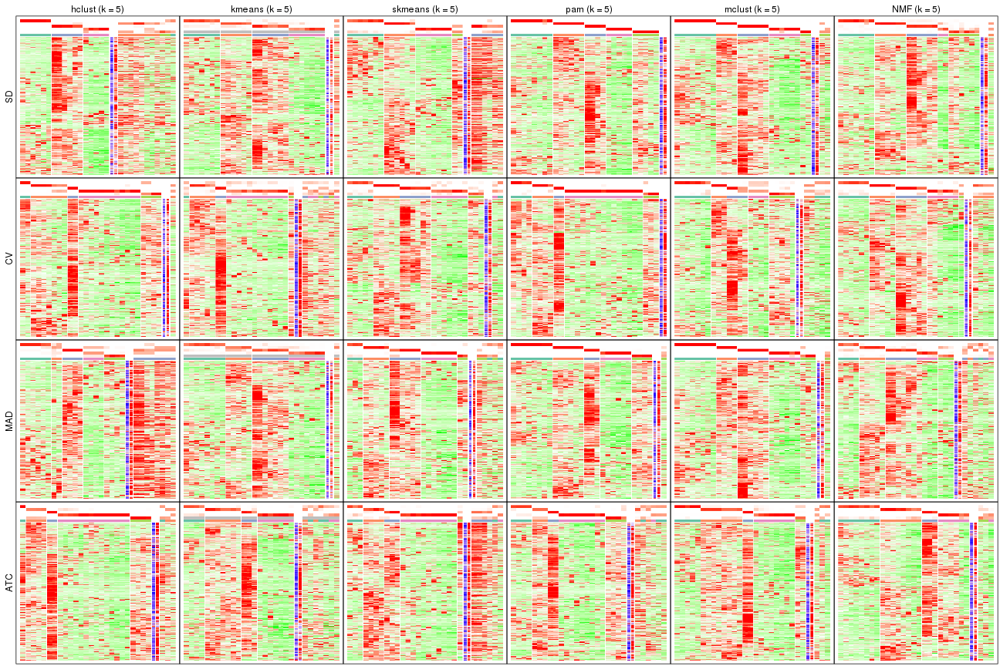
collect_plots(res_list, k = 6, fun = get_signatures, mc.cores = 4)
The statistics used for measuring the stability of consensus partitioning. (How are they defined?)
get_stats(res_list, k = 2)
#> k 1-PAC mean_silhouette concordance area_increased Rand Jaccard
#> SD:NMF 2 1.000 0.981 0.991 0.509 0.491 0.491
#> CV:NMF 2 1.000 0.998 0.999 0.469 0.532 0.532
#> MAD:NMF 2 0.890 0.913 0.966 0.507 0.492 0.492
#> ATC:NMF 2 0.285 0.629 0.736 0.446 0.532 0.532
#> SD:skmeans 2 0.545 0.576 0.844 0.508 0.491 0.491
#> CV:skmeans 2 0.805 0.911 0.957 0.465 0.556 0.556
#> MAD:skmeans 2 0.860 0.861 0.943 0.508 0.491 0.491
#> ATC:skmeans 2 1.000 0.955 0.983 0.503 0.501 0.501
#> SD:mclust 2 0.532 0.944 0.955 0.363 0.657 0.657
#> CV:mclust 2 0.384 0.811 0.859 0.466 0.532 0.532
#> MAD:mclust 2 1.000 1.000 1.000 0.344 0.657 0.657
#> ATC:mclust 2 1.000 0.982 0.988 0.421 0.584 0.584
#> SD:kmeans 2 0.399 0.747 0.873 0.468 0.556 0.556
#> CV:kmeans 2 0.419 0.860 0.879 0.345 0.618 0.618
#> MAD:kmeans 2 0.522 0.794 0.899 0.481 0.514 0.514
#> ATC:kmeans 2 0.539 0.896 0.939 0.435 0.532 0.532
#> SD:pam 2 0.353 0.755 0.854 0.461 0.494 0.494
#> CV:pam 2 0.992 0.981 0.990 0.208 0.805 0.805
#> MAD:pam 2 0.675 0.916 0.951 0.457 0.514 0.514
#> ATC:pam 2 1.000 0.981 0.969 0.482 0.494 0.494
#> SD:hclust 2 0.790 0.893 0.952 0.355 0.618 0.618
#> CV:hclust 2 1.000 0.975 0.986 0.156 0.865 0.865
#> MAD:hclust 2 0.852 0.957 0.972 0.421 0.584 0.584
#> ATC:hclust 2 1.000 0.951 0.979 0.169 0.805 0.805
get_stats(res_list, k = 3)
#> k 1-PAC mean_silhouette concordance area_increased Rand Jaccard
#> SD:NMF 3 0.739 0.685 0.876 0.310 0.718 0.485
#> CV:NMF 3 1.000 0.982 0.985 0.400 0.813 0.649
#> MAD:NMF 3 0.648 0.658 0.838 0.301 0.751 0.543
#> ATC:NMF 3 0.871 0.886 0.957 0.423 0.792 0.624
#> SD:skmeans 3 0.670 0.887 0.911 0.315 0.758 0.544
#> CV:skmeans 3 0.678 0.879 0.937 0.411 0.771 0.589
#> MAD:skmeans 3 1.000 0.981 0.991 0.325 0.758 0.544
#> ATC:skmeans 3 0.762 0.884 0.911 0.208 0.883 0.770
#> SD:mclust 3 0.572 0.633 0.825 0.675 0.727 0.585
#> CV:mclust 3 0.562 0.715 0.840 0.372 0.743 0.540
#> MAD:mclust 3 0.597 0.870 0.873 0.791 0.709 0.557
#> ATC:mclust 3 0.441 0.852 0.866 0.224 0.530 0.403
#> SD:kmeans 3 0.505 0.642 0.784 0.396 0.730 0.532
#> CV:kmeans 3 0.433 0.671 0.783 0.589 0.735 0.598
#> MAD:kmeans 3 0.553 0.783 0.841 0.371 0.751 0.543
#> ATC:kmeans 3 0.670 0.767 0.840 0.411 0.774 0.615
#> SD:pam 3 0.467 0.638 0.829 0.394 0.751 0.538
#> CV:pam 3 0.590 0.910 0.935 1.008 0.782 0.729
#> MAD:pam 3 0.797 0.715 0.888 0.451 0.579 0.339
#> ATC:pam 3 1.000 0.960 0.982 0.196 0.922 0.842
#> SD:hclust 3 0.419 0.620 0.779 0.771 0.730 0.563
#> CV:hclust 3 0.433 0.530 0.785 1.839 0.727 0.685
#> MAD:hclust 3 0.642 0.806 0.864 0.533 0.764 0.596
#> ATC:hclust 3 0.869 0.894 0.961 2.382 0.579 0.494
get_stats(res_list, k = 4)
#> k 1-PAC mean_silhouette concordance area_increased Rand Jaccard
#> SD:NMF 4 0.824 0.926 0.930 0.1281 0.853 0.587
#> CV:NMF 4 0.917 0.966 0.951 0.1371 0.906 0.729
#> MAD:NMF 4 0.679 0.760 0.847 0.1178 0.756 0.416
#> ATC:NMF 4 0.971 0.937 0.966 0.1543 0.821 0.558
#> SD:skmeans 4 1.000 1.000 1.000 0.1387 0.870 0.627
#> CV:skmeans 4 0.704 0.634 0.848 0.1393 0.836 0.566
#> MAD:skmeans 4 1.000 0.975 0.978 0.1274 0.870 0.627
#> ATC:skmeans 4 0.821 0.880 0.905 0.1320 0.878 0.701
#> SD:mclust 4 0.997 0.975 0.985 0.2499 0.855 0.622
#> CV:mclust 4 0.565 0.722 0.788 0.1251 0.927 0.783
#> MAD:mclust 4 0.932 0.975 0.986 0.2329 0.873 0.652
#> ATC:mclust 4 0.631 0.773 0.887 0.3562 0.725 0.488
#> SD:kmeans 4 0.584 0.823 0.814 0.1251 0.865 0.615
#> CV:kmeans 4 0.433 0.629 0.692 0.2055 0.883 0.741
#> MAD:kmeans 4 0.590 0.682 0.776 0.1118 0.932 0.797
#> ATC:kmeans 4 0.620 0.653 0.784 0.1311 0.852 0.652
#> SD:pam 4 0.845 0.869 0.942 0.1804 0.860 0.609
#> CV:pam 4 0.865 0.925 0.971 0.4110 0.808 0.678
#> MAD:pam 4 0.983 0.945 0.977 0.1469 0.823 0.531
#> ATC:pam 4 0.678 0.672 0.856 0.2110 0.808 0.577
#> SD:hclust 4 0.665 0.776 0.827 0.1826 0.891 0.687
#> CV:hclust 4 0.636 0.731 0.862 0.3908 0.675 0.486
#> MAD:hclust 4 0.748 0.589 0.788 0.1543 0.969 0.910
#> ATC:hclust 4 0.874 0.886 0.960 0.0488 0.953 0.893
get_stats(res_list, k = 5)
#> k 1-PAC mean_silhouette concordance area_increased Rand Jaccard
#> SD:NMF 5 0.846 0.792 0.877 0.0555 0.964 0.851
#> CV:NMF 5 0.807 0.682 0.824 0.0639 0.977 0.907
#> MAD:NMF 5 0.645 0.659 0.801 0.0579 0.868 0.549
#> ATC:NMF 5 0.794 0.755 0.854 0.0682 0.958 0.845
#> SD:skmeans 5 0.857 0.717 0.836 0.0537 0.943 0.773
#> CV:skmeans 5 0.720 0.762 0.838 0.0657 0.852 0.517
#> MAD:skmeans 5 0.849 0.771 0.872 0.0577 0.909 0.650
#> ATC:skmeans 5 0.765 0.716 0.851 0.0705 0.982 0.938
#> SD:mclust 5 0.961 0.895 0.956 0.0447 0.945 0.779
#> CV:mclust 5 0.639 0.712 0.725 0.0430 0.948 0.808
#> MAD:mclust 5 0.961 0.927 0.966 0.0491 0.945 0.779
#> ATC:mclust 5 0.796 0.773 0.862 0.0851 0.964 0.870
#> SD:kmeans 5 0.665 0.745 0.779 0.0608 1.000 1.000
#> CV:kmeans 5 0.500 0.529 0.695 0.0960 0.974 0.928
#> MAD:kmeans 5 0.665 0.724 0.776 0.0620 0.922 0.735
#> ATC:kmeans 5 0.606 0.660 0.777 0.0885 0.927 0.769
#> SD:pam 5 1.000 0.980 0.991 0.0585 0.917 0.680
#> CV:pam 5 0.971 0.937 0.975 0.1208 0.906 0.778
#> MAD:pam 5 0.975 0.942 0.972 0.0445 0.927 0.717
#> ATC:pam 5 0.755 0.673 0.831 0.0664 0.844 0.549
#> SD:hclust 5 0.799 0.629 0.800 0.0755 0.906 0.657
#> CV:hclust 5 0.776 0.814 0.898 0.1231 0.917 0.766
#> MAD:hclust 5 0.730 0.659 0.778 0.0602 0.940 0.813
#> ATC:hclust 5 0.816 0.773 0.869 0.1266 0.899 0.748
get_stats(res_list, k = 6)
#> k 1-PAC mean_silhouette concordance area_increased Rand Jaccard
#> SD:NMF 6 0.813 0.760 0.847 0.0382 0.958 0.805
#> CV:NMF 6 0.782 0.661 0.781 0.0441 0.906 0.617
#> MAD:NMF 6 0.655 0.623 0.760 0.0364 0.940 0.739
#> ATC:NMF 6 0.757 0.655 0.783 0.0516 0.956 0.813
#> SD:skmeans 6 0.829 0.751 0.835 0.0331 0.938 0.718
#> CV:skmeans 6 0.751 0.660 0.775 0.0438 0.935 0.699
#> MAD:skmeans 6 0.849 0.697 0.834 0.0323 0.953 0.778
#> ATC:skmeans 6 0.723 0.646 0.785 0.0420 0.974 0.907
#> SD:mclust 6 0.919 0.883 0.931 0.0463 0.961 0.805
#> CV:mclust 6 0.744 0.691 0.835 0.0623 0.852 0.482
#> MAD:mclust 6 0.905 0.848 0.880 0.0396 0.922 0.655
#> ATC:mclust 6 0.841 0.821 0.922 0.0646 0.948 0.787
#> SD:kmeans 6 0.712 0.658 0.730 0.0440 0.974 0.891
#> CV:kmeans 6 0.553 0.560 0.668 0.0629 0.925 0.793
#> MAD:kmeans 6 0.670 0.631 0.717 0.0401 0.984 0.935
#> ATC:kmeans 6 0.645 0.543 0.702 0.0512 0.953 0.825
#> SD:pam 6 0.915 0.893 0.908 0.0242 0.969 0.848
#> CV:pam 6 0.950 0.932 0.947 0.0336 0.984 0.953
#> MAD:pam 6 0.897 0.852 0.910 0.0362 0.990 0.949
#> ATC:pam 6 0.884 0.823 0.928 0.0537 0.953 0.811
#> SD:hclust 6 0.844 0.799 0.891 0.0333 0.927 0.678
#> CV:hclust 6 0.726 0.774 0.835 0.1012 0.961 0.862
#> MAD:hclust 6 0.807 0.792 0.851 0.0339 0.917 0.683
#> ATC:hclust 6 0.869 0.861 0.936 0.0412 0.979 0.934
Following heatmap plots the partition for each combination of methods and the lightness correspond to the silhouette scores for samples in each method. On top the consensus subgroup is inferred from all methods by taking the mean silhouette scores as weight.
collect_stats(res_list, k = 2)
collect_stats(res_list, k = 3)
collect_stats(res_list, k = 4)
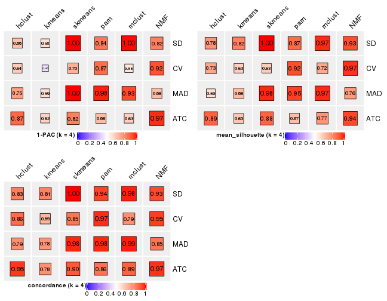
collect_stats(res_list, k = 5)
collect_stats(res_list, k = 6)
Collect partitions from all methods:
collect_classes(res_list, k = 2)
collect_classes(res_list, k = 3)
collect_classes(res_list, k = 4)
collect_classes(res_list, k = 5)
collect_classes(res_list, k = 6)
Overlap of top rows from different top-row methods:
top_rows_overlap(res_list, top_n = 1000, method = "euler")
top_rows_overlap(res_list, top_n = 2000, method = "euler")
top_rows_overlap(res_list, top_n = 3000, method = "euler")
top_rows_overlap(res_list, top_n = 4000, method = "euler")
top_rows_overlap(res_list, top_n = 5000, method = "euler")
Also visualize the correspondance of rankings between different top-row methods:
top_rows_overlap(res_list, top_n = 1000, method = "correspondance")
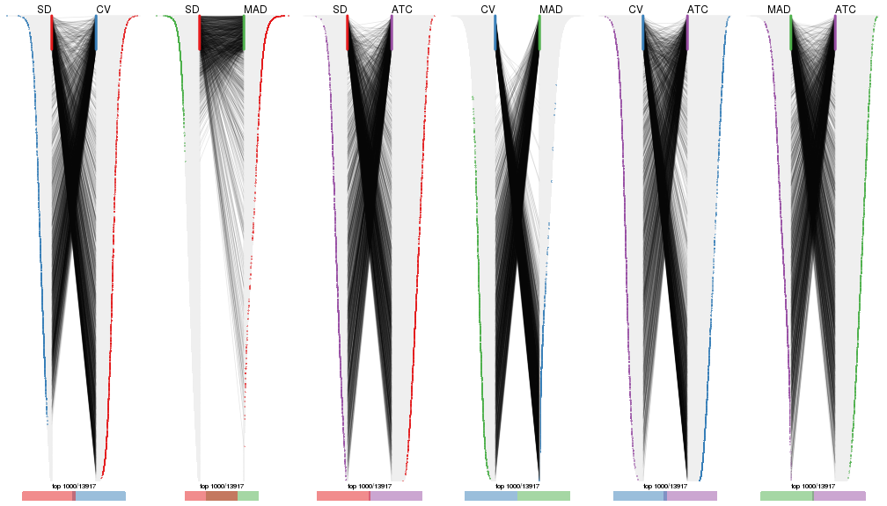
top_rows_overlap(res_list, top_n = 2000, method = "correspondance")
top_rows_overlap(res_list, top_n = 3000, method = "correspondance")
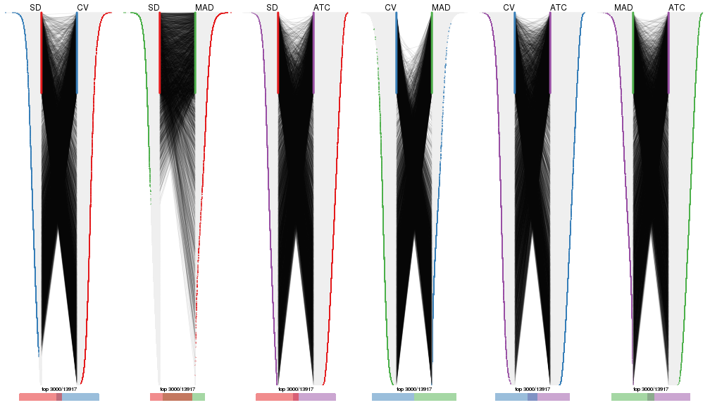
top_rows_overlap(res_list, top_n = 4000, method = "correspondance")
top_rows_overlap(res_list, top_n = 5000, method = "correspondance")
Heatmaps of the top rows:
top_rows_heatmap(res_list, top_n = 1000)
top_rows_heatmap(res_list, top_n = 2000)
top_rows_heatmap(res_list, top_n = 3000)
top_rows_heatmap(res_list, top_n = 4000)
top_rows_heatmap(res_list, top_n = 5000)
The object with results only for a single top-value method and a single partition method can be extracted as:
res = res_list["SD", "hclust"]
# you can also extract it by
# res = res_list["SD:hclust"]
A summary of res and all the functions that can be applied to it:
res
#> A 'ConsensusPartition' object with k = 2, 3, 4, 5, 6.
#> On a matrix with 13917 rows and 56 columns.
#> Top rows (1000, 2000, 3000, 4000, 5000) are extracted by 'SD' method.
#> Subgroups are detected by 'hclust' method.
#> Performed in total 1250 partitions by row resampling.
#> Best k for subgroups seems to be 4.
#>
#> Following methods can be applied to this 'ConsensusPartition' object:
#> [1] "cola_report" "collect_classes" "collect_plots"
#> [4] "collect_stats" "colnames" "compare_signatures"
#> [7] "consensus_heatmap" "dimension_reduction" "functional_enrichment"
#> [10] "get_anno_col" "get_anno" "get_classes"
#> [13] "get_consensus" "get_matrix" "get_membership"
#> [16] "get_param" "get_signatures" "get_stats"
#> [19] "is_best_k" "is_stable_k" "membership_heatmap"
#> [22] "ncol" "nrow" "plot_ecdf"
#> [25] "rownames" "select_partition_number" "show"
#> [28] "suggest_best_k" "test_to_known_factors"
collect_plots() function collects all the plots made from res for all k (number of partitions)
into one single page to provide an easy and fast comparison between different k.
collect_plots(res)
The plots are:
k and the heatmap of
predicted classes for each k.k.k.k.All the plots in panels can be made by individual functions and they are plotted later in this section.
select_partition_number() produces several plots showing different
statistics for choosing “optimized” k. There are following statistics:
k;k, the area increased is defined as \(A_k - A_{k-1}\).The detailed explanations of these statistics can be found in the cola vignette.
Generally speaking, lower PAC score, higher mean silhouette score or higher
concordance corresponds to better partition. Rand index and Jaccard index
measure how similar the current partition is compared to partition with k-1.
If they are too similar, we won't accept k is better than k-1.
select_partition_number(res)
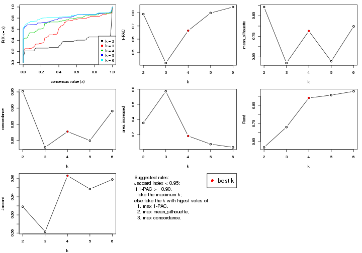
The numeric values for all these statistics can be obtained by get_stats().
get_stats(res)
#> k 1-PAC mean_silhouette concordance area_increased Rand Jaccard
#> 2 2 0.790 0.893 0.952 0.3548 0.618 0.618
#> 3 3 0.419 0.620 0.779 0.7711 0.730 0.563
#> 4 4 0.665 0.776 0.827 0.1826 0.891 0.687
#> 5 5 0.799 0.629 0.800 0.0755 0.906 0.657
#> 6 6 0.844 0.799 0.891 0.0333 0.927 0.678
suggest_best_k() suggests the best \(k\) based on these statistics. The rules are as follows:
suggest_best_k(res)
#> [1] 4
Following shows the table of the partitions (You need to click the show/hide
code output link to see it). The membership matrix (columns with name p*)
is inferred by
clue::cl_consensus()
function with the SE method. Basically the value in the membership matrix
represents the probability to belong to a certain group. The finall class
label for an item is determined with the group with highest probability it
belongs to.
In get_classes() function, the entropy is calculated from the membership
matrix and the silhouette score is calculated from the consensus matrix.
cbind(get_classes(res, k = 2), get_membership(res, k = 2))
#> class entropy silhouette p1 p2
#> SRR1975508 2 0.0000 0.976 0.000 1.000
#> SRR1975507 2 0.0000 0.976 0.000 1.000
#> SRR1975506 2 0.0000 0.976 0.000 1.000
#> SRR1975505 2 0.0000 0.976 0.000 1.000
#> SRR1975503 1 0.5408 0.782 0.876 0.124
#> SRR1975504 1 0.5408 0.782 0.876 0.124
#> SRR1975501 2 0.0376 0.975 0.004 0.996
#> SRR1975502 2 0.0376 0.975 0.004 0.996
#> SRR1975499 1 0.0000 0.841 1.000 0.000
#> SRR1975500 1 0.0000 0.841 1.000 0.000
#> SRR1975497 2 0.0672 0.972 0.008 0.992
#> SRR1975498 2 0.0672 0.972 0.008 0.992
#> SRR1975493 2 0.1184 0.970 0.016 0.984
#> SRR1975494 2 0.1184 0.970 0.016 0.984
#> SRR1975495 2 0.0000 0.976 0.000 1.000
#> SRR1975496 2 0.0000 0.976 0.000 1.000
#> SRR1975491 2 0.0000 0.976 0.000 1.000
#> SRR1975492 2 0.0000 0.976 0.000 1.000
#> SRR1975489 1 0.0000 0.841 1.000 0.000
#> SRR1975490 1 0.0000 0.841 1.000 0.000
#> SRR1975487 1 0.0000 0.841 1.000 0.000
#> SRR1975488 1 0.0000 0.841 1.000 0.000
#> SRR1975485 1 0.0000 0.841 1.000 0.000
#> SRR1975486 1 0.0000 0.841 1.000 0.000
#> SRR1975483 2 0.0000 0.976 0.000 1.000
#> SRR1975484 2 0.0000 0.976 0.000 1.000
#> SRR1975481 2 0.0000 0.976 0.000 1.000
#> SRR1975482 2 0.0000 0.976 0.000 1.000
#> SRR1975477 2 0.1184 0.970 0.016 0.984
#> SRR1975478 2 0.1184 0.970 0.016 0.984
#> SRR1975479 1 0.9710 0.463 0.600 0.400
#> SRR1975480 1 0.9710 0.463 0.600 0.400
#> SRR1975475 1 0.9850 0.400 0.572 0.428
#> SRR1975476 1 0.9850 0.400 0.572 0.428
#> SRR1975473 2 0.1184 0.970 0.016 0.984
#> SRR1975474 2 0.1184 0.970 0.016 0.984
#> SRR1975471 2 0.0000 0.976 0.000 1.000
#> SRR1975472 2 0.0000 0.976 0.000 1.000
#> SRR1975469 2 0.0376 0.975 0.004 0.996
#> SRR1975470 2 0.0376 0.975 0.004 0.996
#> SRR1975467 2 0.8661 0.509 0.288 0.712
#> SRR1975468 2 0.8661 0.509 0.288 0.712
#> SRR1975465 2 0.1184 0.970 0.016 0.984
#> SRR1975466 2 0.1184 0.970 0.016 0.984
#> SRR1975463 2 0.1184 0.970 0.016 0.984
#> SRR1975464 2 0.1184 0.970 0.016 0.984
#> SRR1975461 2 0.0000 0.976 0.000 1.000
#> SRR1975462 2 0.0000 0.976 0.000 1.000
#> SRR1975459 2 0.1184 0.970 0.016 0.984
#> SRR1975460 2 0.1184 0.970 0.016 0.984
#> SRR1975457 2 0.0000 0.976 0.000 1.000
#> SRR1975458 2 0.0000 0.976 0.000 1.000
#> SRR1975455 2 0.0000 0.976 0.000 1.000
#> SRR1975456 2 0.0000 0.976 0.000 1.000
#> SRR1975453 2 0.0000 0.976 0.000 1.000
#> SRR1975454 2 0.0000 0.976 0.000 1.000
cbind(get_classes(res, k = 3), get_membership(res, k = 3))
#> class entropy silhouette p1 p2 p3
#> SRR1975508 2 0.6095 0.435 0.000 0.608 0.392
#> SRR1975507 2 0.6095 0.435 0.000 0.608 0.392
#> SRR1975506 2 0.6095 0.435 0.000 0.608 0.392
#> SRR1975505 2 0.6095 0.435 0.000 0.608 0.392
#> SRR1975503 1 0.3826 0.750 0.868 0.008 0.124
#> SRR1975504 1 0.3826 0.750 0.868 0.008 0.124
#> SRR1975501 3 0.5285 0.591 0.004 0.244 0.752
#> SRR1975502 3 0.5285 0.591 0.004 0.244 0.752
#> SRR1975499 1 0.0000 0.836 1.000 0.000 0.000
#> SRR1975500 1 0.0000 0.836 1.000 0.000 0.000
#> SRR1975497 3 0.0424 0.870 0.008 0.000 0.992
#> SRR1975498 3 0.0424 0.870 0.008 0.000 0.992
#> SRR1975493 2 0.5016 0.522 0.000 0.760 0.240
#> SRR1975494 2 0.5016 0.522 0.000 0.760 0.240
#> SRR1975495 3 0.0000 0.875 0.000 0.000 1.000
#> SRR1975496 3 0.0000 0.875 0.000 0.000 1.000
#> SRR1975491 3 0.5465 0.545 0.000 0.288 0.712
#> SRR1975492 3 0.5465 0.545 0.000 0.288 0.712
#> SRR1975489 1 0.0000 0.836 1.000 0.000 0.000
#> SRR1975490 1 0.0000 0.836 1.000 0.000 0.000
#> SRR1975487 1 0.0000 0.836 1.000 0.000 0.000
#> SRR1975488 1 0.0000 0.836 1.000 0.000 0.000
#> SRR1975485 1 0.0000 0.836 1.000 0.000 0.000
#> SRR1975486 1 0.0000 0.836 1.000 0.000 0.000
#> SRR1975483 3 0.0000 0.875 0.000 0.000 1.000
#> SRR1975484 3 0.0000 0.875 0.000 0.000 1.000
#> SRR1975481 3 0.0000 0.875 0.000 0.000 1.000
#> SRR1975482 3 0.0000 0.875 0.000 0.000 1.000
#> SRR1975477 2 0.5465 0.501 0.000 0.712 0.288
#> SRR1975478 2 0.5465 0.501 0.000 0.712 0.288
#> SRR1975479 1 0.8198 0.572 0.596 0.304 0.100
#> SRR1975480 1 0.8198 0.572 0.596 0.304 0.100
#> SRR1975475 1 0.8535 0.523 0.556 0.332 0.112
#> SRR1975476 1 0.8535 0.523 0.556 0.332 0.112
#> SRR1975473 2 0.5465 0.501 0.000 0.712 0.288
#> SRR1975474 2 0.5465 0.501 0.000 0.712 0.288
#> SRR1975471 3 0.0000 0.875 0.000 0.000 1.000
#> SRR1975472 3 0.0000 0.875 0.000 0.000 1.000
#> SRR1975469 3 0.0237 0.873 0.004 0.000 0.996
#> SRR1975470 3 0.0237 0.873 0.004 0.000 0.996
#> SRR1975467 2 0.9528 0.155 0.272 0.488 0.240
#> SRR1975468 2 0.9528 0.155 0.272 0.488 0.240
#> SRR1975465 2 0.5016 0.522 0.000 0.760 0.240
#> SRR1975466 2 0.5016 0.522 0.000 0.760 0.240
#> SRR1975463 2 0.5016 0.522 0.000 0.760 0.240
#> SRR1975464 2 0.5016 0.522 0.000 0.760 0.240
#> SRR1975461 2 0.6095 0.435 0.000 0.608 0.392
#> SRR1975462 2 0.6095 0.435 0.000 0.608 0.392
#> SRR1975459 2 0.5016 0.522 0.000 0.760 0.240
#> SRR1975460 2 0.5016 0.522 0.000 0.760 0.240
#> SRR1975457 2 0.6274 0.408 0.000 0.544 0.456
#> SRR1975458 2 0.6274 0.408 0.000 0.544 0.456
#> SRR1975455 2 0.6274 0.408 0.000 0.544 0.456
#> SRR1975456 2 0.6274 0.408 0.000 0.544 0.456
#> SRR1975453 2 0.6095 0.435 0.000 0.608 0.392
#> SRR1975454 2 0.6095 0.435 0.000 0.608 0.392
cbind(get_classes(res, k = 4), get_membership(res, k = 4))
#> class entropy silhouette p1 p2 p3 p4
#> SRR1975508 3 0.000 0.927 0.000 0.000 1.000 0.000
#> SRR1975507 3 0.000 0.927 0.000 0.000 1.000 0.000
#> SRR1975506 3 0.000 0.927 0.000 0.000 1.000 0.000
#> SRR1975505 3 0.000 0.927 0.000 0.000 1.000 0.000
#> SRR1975503 4 0.281 0.740 0.000 0.132 0.000 0.868
#> SRR1975504 4 0.281 0.740 0.000 0.132 0.000 0.868
#> SRR1975501 1 0.187 0.582 0.928 0.072 0.000 0.000
#> SRR1975502 1 0.187 0.582 0.928 0.072 0.000 0.000
#> SRR1975499 4 0.000 0.841 0.000 0.000 0.000 1.000
#> SRR1975500 4 0.000 0.841 0.000 0.000 0.000 1.000
#> SRR1975497 1 0.384 0.840 0.776 0.000 0.224 0.000
#> SRR1975498 1 0.384 0.840 0.776 0.000 0.224 0.000
#> SRR1975493 2 0.384 0.838 0.224 0.776 0.000 0.000
#> SRR1975494 2 0.384 0.838 0.224 0.776 0.000 0.000
#> SRR1975495 1 0.398 0.847 0.760 0.000 0.240 0.000
#> SRR1975496 1 0.398 0.847 0.760 0.000 0.240 0.000
#> SRR1975491 1 0.413 0.242 0.740 0.260 0.000 0.000
#> SRR1975492 1 0.413 0.242 0.740 0.260 0.000 0.000
#> SRR1975489 4 0.000 0.841 0.000 0.000 0.000 1.000
#> SRR1975490 4 0.000 0.841 0.000 0.000 0.000 1.000
#> SRR1975487 4 0.000 0.841 0.000 0.000 0.000 1.000
#> SRR1975488 4 0.000 0.841 0.000 0.000 0.000 1.000
#> SRR1975485 4 0.000 0.841 0.000 0.000 0.000 1.000
#> SRR1975486 4 0.000 0.841 0.000 0.000 0.000 1.000
#> SRR1975483 1 0.398 0.847 0.760 0.000 0.240 0.000
#> SRR1975484 1 0.398 0.847 0.760 0.000 0.240 0.000
#> SRR1975481 1 0.398 0.847 0.760 0.000 0.240 0.000
#> SRR1975482 1 0.398 0.847 0.760 0.000 0.240 0.000
#> SRR1975477 2 0.284 0.677 0.052 0.900 0.048 0.000
#> SRR1975478 2 0.284 0.677 0.052 0.900 0.048 0.000
#> SRR1975479 4 0.599 0.579 0.052 0.352 0.000 0.596
#> SRR1975480 4 0.599 0.579 0.052 0.352 0.000 0.596
#> SRR1975475 4 0.611 0.522 0.052 0.392 0.000 0.556
#> SRR1975476 4 0.611 0.522 0.052 0.392 0.000 0.556
#> SRR1975473 2 0.284 0.677 0.052 0.900 0.048 0.000
#> SRR1975474 2 0.284 0.677 0.052 0.900 0.048 0.000
#> SRR1975471 1 0.398 0.847 0.760 0.000 0.240 0.000
#> SRR1975472 1 0.398 0.847 0.760 0.000 0.240 0.000
#> SRR1975469 1 0.394 0.846 0.764 0.000 0.236 0.000
#> SRR1975470 1 0.394 0.846 0.764 0.000 0.236 0.000
#> SRR1975467 2 0.746 0.521 0.224 0.504 0.000 0.272
#> SRR1975468 2 0.746 0.521 0.224 0.504 0.000 0.272
#> SRR1975465 2 0.384 0.838 0.224 0.776 0.000 0.000
#> SRR1975466 2 0.384 0.838 0.224 0.776 0.000 0.000
#> SRR1975463 2 0.384 0.838 0.224 0.776 0.000 0.000
#> SRR1975464 2 0.384 0.838 0.224 0.776 0.000 0.000
#> SRR1975461 3 0.000 0.927 0.000 0.000 1.000 0.000
#> SRR1975462 3 0.000 0.927 0.000 0.000 1.000 0.000
#> SRR1975459 2 0.384 0.838 0.224 0.776 0.000 0.000
#> SRR1975460 2 0.384 0.838 0.224 0.776 0.000 0.000
#> SRR1975457 3 0.312 0.848 0.000 0.156 0.844 0.000
#> SRR1975458 3 0.312 0.848 0.000 0.156 0.844 0.000
#> SRR1975455 3 0.312 0.848 0.000 0.156 0.844 0.000
#> SRR1975456 3 0.312 0.848 0.000 0.156 0.844 0.000
#> SRR1975453 3 0.000 0.927 0.000 0.000 1.000 0.000
#> SRR1975454 3 0.000 0.927 0.000 0.000 1.000 0.000
cbind(get_classes(res, k = 5), get_membership(res, k = 5))
#> class entropy silhouette p1 p2 p3 p4 p5
#> SRR1975508 3 0.0000 0.9254 0.000 0.000 1.000 0.000 0.000
#> SRR1975507 3 0.0000 0.9254 0.000 0.000 1.000 0.000 0.000
#> SRR1975506 3 0.0000 0.9254 0.000 0.000 1.000 0.000 0.000
#> SRR1975505 3 0.0000 0.9254 0.000 0.000 1.000 0.000 0.000
#> SRR1975503 4 0.4341 0.6157 0.000 0.004 0.000 0.592 0.404
#> SRR1975504 4 0.4341 0.6157 0.000 0.004 0.000 0.592 0.404
#> SRR1975501 1 0.4582 0.0171 0.572 0.012 0.000 0.000 0.416
#> SRR1975502 1 0.4582 0.0171 0.572 0.012 0.000 0.000 0.416
#> SRR1975499 4 0.1831 0.8763 0.000 0.004 0.000 0.920 0.076
#> SRR1975500 4 0.1831 0.8763 0.000 0.004 0.000 0.920 0.076
#> SRR1975497 1 0.0566 0.9000 0.984 0.012 0.000 0.000 0.004
#> SRR1975498 1 0.0566 0.9000 0.984 0.012 0.000 0.000 0.004
#> SRR1975493 2 0.4256 0.3289 0.000 0.564 0.000 0.000 0.436
#> SRR1975494 2 0.4256 0.3289 0.000 0.564 0.000 0.000 0.436
#> SRR1975495 1 0.0000 0.9094 1.000 0.000 0.000 0.000 0.000
#> SRR1975496 1 0.0000 0.9094 1.000 0.000 0.000 0.000 0.000
#> SRR1975491 5 0.4856 0.3897 0.388 0.028 0.000 0.000 0.584
#> SRR1975492 5 0.4856 0.3897 0.388 0.028 0.000 0.000 0.584
#> SRR1975489 4 0.0794 0.8892 0.000 0.000 0.000 0.972 0.028
#> SRR1975490 4 0.0794 0.8892 0.000 0.000 0.000 0.972 0.028
#> SRR1975487 4 0.0000 0.8974 0.000 0.000 0.000 1.000 0.000
#> SRR1975488 4 0.0000 0.8974 0.000 0.000 0.000 1.000 0.000
#> SRR1975485 4 0.0000 0.8974 0.000 0.000 0.000 1.000 0.000
#> SRR1975486 4 0.0000 0.8974 0.000 0.000 0.000 1.000 0.000
#> SRR1975483 1 0.0000 0.9094 1.000 0.000 0.000 0.000 0.000
#> SRR1975484 1 0.0000 0.9094 1.000 0.000 0.000 0.000 0.000
#> SRR1975481 1 0.0000 0.9094 1.000 0.000 0.000 0.000 0.000
#> SRR1975482 1 0.0000 0.9094 1.000 0.000 0.000 0.000 0.000
#> SRR1975477 2 0.1197 0.3794 0.000 0.952 0.048 0.000 0.000
#> SRR1975478 2 0.1197 0.3794 0.000 0.952 0.048 0.000 0.000
#> SRR1975479 2 0.6706 -0.1397 0.000 0.416 0.000 0.328 0.256
#> SRR1975480 2 0.6706 -0.1397 0.000 0.416 0.000 0.328 0.256
#> SRR1975475 2 0.6598 -0.0871 0.000 0.452 0.000 0.316 0.232
#> SRR1975476 2 0.6598 -0.0871 0.000 0.452 0.000 0.316 0.232
#> SRR1975473 2 0.1197 0.3794 0.000 0.952 0.048 0.000 0.000
#> SRR1975474 2 0.1197 0.3794 0.000 0.952 0.048 0.000 0.000
#> SRR1975471 1 0.0000 0.9094 1.000 0.000 0.000 0.000 0.000
#> SRR1975472 1 0.0000 0.9094 1.000 0.000 0.000 0.000 0.000
#> SRR1975469 1 0.0162 0.9078 0.996 0.004 0.000 0.000 0.000
#> SRR1975470 1 0.0162 0.9078 0.996 0.004 0.000 0.000 0.000
#> SRR1975467 5 0.2773 0.3290 0.000 0.164 0.000 0.000 0.836
#> SRR1975468 5 0.2773 0.3290 0.000 0.164 0.000 0.000 0.836
#> SRR1975465 2 0.4256 0.3289 0.000 0.564 0.000 0.000 0.436
#> SRR1975466 2 0.4256 0.3289 0.000 0.564 0.000 0.000 0.436
#> SRR1975463 2 0.4256 0.3289 0.000 0.564 0.000 0.000 0.436
#> SRR1975464 2 0.4256 0.3289 0.000 0.564 0.000 0.000 0.436
#> SRR1975461 3 0.0510 0.9225 0.016 0.000 0.984 0.000 0.000
#> SRR1975462 3 0.0510 0.9225 0.016 0.000 0.984 0.000 0.000
#> SRR1975459 2 0.4256 0.3289 0.000 0.564 0.000 0.000 0.436
#> SRR1975460 2 0.4256 0.3289 0.000 0.564 0.000 0.000 0.436
#> SRR1975457 3 0.2690 0.8516 0.000 0.156 0.844 0.000 0.000
#> SRR1975458 3 0.2690 0.8516 0.000 0.156 0.844 0.000 0.000
#> SRR1975455 3 0.2690 0.8516 0.000 0.156 0.844 0.000 0.000
#> SRR1975456 3 0.2690 0.8516 0.000 0.156 0.844 0.000 0.000
#> SRR1975453 3 0.0510 0.9225 0.016 0.000 0.984 0.000 0.000
#> SRR1975454 3 0.0510 0.9225 0.016 0.000 0.984 0.000 0.000
cbind(get_classes(res, k = 6), get_membership(res, k = 6))
#> class entropy silhouette p1 p2 p3 p4 p5 p6
#> SRR1975508 3 0.0000 0.918 0.000 0.000 1.000 0.000 0.000 0.000
#> SRR1975507 3 0.0000 0.918 0.000 0.000 1.000 0.000 0.000 0.000
#> SRR1975506 3 0.0000 0.918 0.000 0.000 1.000 0.000 0.000 0.000
#> SRR1975505 3 0.0000 0.918 0.000 0.000 1.000 0.000 0.000 0.000
#> SRR1975503 4 0.5501 0.521 0.000 0.408 0.000 0.504 0.040 0.048
#> SRR1975504 4 0.5501 0.521 0.000 0.408 0.000 0.504 0.040 0.048
#> SRR1975501 6 0.3221 0.823 0.188 0.020 0.000 0.000 0.000 0.792
#> SRR1975502 6 0.3221 0.823 0.188 0.020 0.000 0.000 0.000 0.792
#> SRR1975499 4 0.3514 0.801 0.000 0.080 0.000 0.832 0.040 0.048
#> SRR1975500 4 0.3514 0.801 0.000 0.080 0.000 0.832 0.040 0.048
#> SRR1975497 1 0.0520 0.985 0.984 0.000 0.000 0.000 0.008 0.008
#> SRR1975498 1 0.0520 0.985 0.984 0.000 0.000 0.000 0.008 0.008
#> SRR1975493 2 0.3984 0.859 0.000 0.596 0.000 0.000 0.396 0.008
#> SRR1975494 2 0.3984 0.859 0.000 0.596 0.000 0.000 0.396 0.008
#> SRR1975495 1 0.0000 0.996 1.000 0.000 0.000 0.000 0.000 0.000
#> SRR1975496 1 0.0000 0.996 1.000 0.000 0.000 0.000 0.000 0.000
#> SRR1975491 6 0.2697 0.817 0.000 0.188 0.000 0.000 0.000 0.812
#> SRR1975492 6 0.2697 0.817 0.000 0.188 0.000 0.000 0.000 0.812
#> SRR1975489 4 0.0858 0.842 0.000 0.000 0.000 0.968 0.028 0.004
#> SRR1975490 4 0.0858 0.842 0.000 0.000 0.000 0.968 0.028 0.004
#> SRR1975487 4 0.0000 0.851 0.000 0.000 0.000 1.000 0.000 0.000
#> SRR1975488 4 0.0000 0.851 0.000 0.000 0.000 1.000 0.000 0.000
#> SRR1975485 4 0.0146 0.851 0.000 0.000 0.000 0.996 0.000 0.004
#> SRR1975486 4 0.0146 0.851 0.000 0.000 0.000 0.996 0.000 0.004
#> SRR1975483 1 0.0000 0.996 1.000 0.000 0.000 0.000 0.000 0.000
#> SRR1975484 1 0.0000 0.996 1.000 0.000 0.000 0.000 0.000 0.000
#> SRR1975481 1 0.0000 0.996 1.000 0.000 0.000 0.000 0.000 0.000
#> SRR1975482 1 0.0000 0.996 1.000 0.000 0.000 0.000 0.000 0.000
#> SRR1975477 5 0.3370 0.338 0.000 0.148 0.048 0.000 0.804 0.000
#> SRR1975478 5 0.3370 0.338 0.000 0.148 0.048 0.000 0.804 0.000
#> SRR1975479 5 0.6157 0.520 0.000 0.228 0.000 0.072 0.576 0.124
#> SRR1975480 5 0.6157 0.520 0.000 0.228 0.000 0.072 0.576 0.124
#> SRR1975475 5 0.6163 0.542 0.000 0.260 0.000 0.060 0.556 0.124
#> SRR1975476 5 0.6163 0.542 0.000 0.260 0.000 0.060 0.556 0.124
#> SRR1975473 5 0.3370 0.338 0.000 0.148 0.048 0.000 0.804 0.000
#> SRR1975474 5 0.3370 0.338 0.000 0.148 0.048 0.000 0.804 0.000
#> SRR1975471 1 0.0000 0.996 1.000 0.000 0.000 0.000 0.000 0.000
#> SRR1975472 1 0.0000 0.996 1.000 0.000 0.000 0.000 0.000 0.000
#> SRR1975469 1 0.0146 0.994 0.996 0.000 0.000 0.000 0.000 0.004
#> SRR1975470 1 0.0146 0.994 0.996 0.000 0.000 0.000 0.000 0.004
#> SRR1975467 2 0.0146 0.370 0.000 0.996 0.000 0.000 0.004 0.000
#> SRR1975468 2 0.0146 0.370 0.000 0.996 0.000 0.000 0.004 0.000
#> SRR1975465 2 0.3984 0.859 0.000 0.596 0.000 0.000 0.396 0.008
#> SRR1975466 2 0.3984 0.859 0.000 0.596 0.000 0.000 0.396 0.008
#> SRR1975463 2 0.3984 0.859 0.000 0.596 0.000 0.000 0.396 0.008
#> SRR1975464 2 0.3984 0.859 0.000 0.596 0.000 0.000 0.396 0.008
#> SRR1975461 3 0.0603 0.913 0.016 0.000 0.980 0.000 0.000 0.004
#> SRR1975462 3 0.0603 0.913 0.016 0.000 0.980 0.000 0.000 0.004
#> SRR1975459 2 0.3984 0.859 0.000 0.596 0.000 0.000 0.396 0.008
#> SRR1975460 2 0.3984 0.859 0.000 0.596 0.000 0.000 0.396 0.008
#> SRR1975457 3 0.2416 0.842 0.000 0.000 0.844 0.000 0.156 0.000
#> SRR1975458 3 0.2416 0.842 0.000 0.000 0.844 0.000 0.156 0.000
#> SRR1975455 3 0.2416 0.842 0.000 0.000 0.844 0.000 0.156 0.000
#> SRR1975456 3 0.2416 0.842 0.000 0.000 0.844 0.000 0.156 0.000
#> SRR1975453 3 0.0603 0.913 0.016 0.000 0.980 0.000 0.000 0.004
#> SRR1975454 3 0.0603 0.913 0.016 0.000 0.980 0.000 0.000 0.004
Heatmaps for the consensus matrix. It visualizes the probability of two samples to be in a same group.
consensus_heatmap(res, k = 2)
consensus_heatmap(res, k = 3)
consensus_heatmap(res, k = 4)
consensus_heatmap(res, k = 5)
consensus_heatmap(res, k = 6)
Heatmaps for the membership of samples in all partitions to see how consistent they are:
membership_heatmap(res, k = 2)
membership_heatmap(res, k = 3)
membership_heatmap(res, k = 4)
membership_heatmap(res, k = 5)
membership_heatmap(res, k = 6)
As soon as we have had the classes for columns, we can look for signatures which are significantly different between classes which can be candidate marks for certain classes. Following are the heatmaps for signatures.
Signature heatmaps where rows are scaled:
get_signatures(res, k = 2)
get_signatures(res, k = 3)
get_signatures(res, k = 4)
get_signatures(res, k = 5)
get_signatures(res, k = 6)
Signature heatmaps where rows are not scaled:
get_signatures(res, k = 2, scale_rows = FALSE)
get_signatures(res, k = 3, scale_rows = FALSE)

get_signatures(res, k = 4, scale_rows = FALSE)
get_signatures(res, k = 5, scale_rows = FALSE)
get_signatures(res, k = 6, scale_rows = FALSE)
Compare the overlap of signatures from different k:
compare_signatures(res)
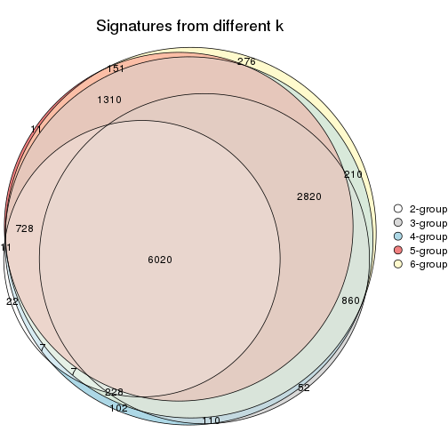
get_signature() returns a data frame invisibly. TO get the list of signatures, the function
call should be assigned to a variable explicitly. In following code, if plot argument is set
to FALSE, no heatmap is plotted while only the differential analysis is performed.
# code only for demonstration
tb = get_signature(res, k = ..., plot = FALSE)
An example of the output of tb is:
#> which_row fdr mean_1 mean_2 scaled_mean_1 scaled_mean_2 km
#> 1 38 0.042760348 8.373488 9.131774 -0.5533452 0.5164555 1
#> 2 40 0.018707592 7.106213 8.469186 -0.6173731 0.5762149 1
#> 3 55 0.019134737 10.221463 11.207825 -0.6159697 0.5749050 1
#> 4 59 0.006059896 5.921854 7.869574 -0.6899429 0.6439467 1
#> 5 60 0.018055526 8.928898 10.211722 -0.6204761 0.5791110 1
#> 6 98 0.009384629 15.714769 14.887706 0.6635654 -0.6193277 2
...
The columns in tb are:
which_row: row indices corresponding to the input matrix.fdr: FDR for the differential test. mean_x: The mean value in group x.scaled_mean_x: The mean value in group x after rows are scaled.km: Row groups if k-means clustering is applied to rows.UMAP plot which shows how samples are separated.
dimension_reduction(res, k = 2, method = "UMAP")

dimension_reduction(res, k = 3, method = "UMAP")
dimension_reduction(res, k = 4, method = "UMAP")
dimension_reduction(res, k = 5, method = "UMAP")
dimension_reduction(res, k = 6, method = "UMAP")
Following heatmap shows how subgroups are split when increasing k:
collect_classes(res)
If matrix rows can be associated to genes, consider to use functional_enrichment(res,
...) to perform function enrichment for the signature genes. See this vignette for more detailed explanations.
The object with results only for a single top-value method and a single partition method can be extracted as:
res = res_list["SD", "kmeans"]
# you can also extract it by
# res = res_list["SD:kmeans"]
A summary of res and all the functions that can be applied to it:
res
#> A 'ConsensusPartition' object with k = 2, 3, 4, 5, 6.
#> On a matrix with 13917 rows and 56 columns.
#> Top rows (1000, 2000, 3000, 4000, 5000) are extracted by 'SD' method.
#> Subgroups are detected by 'kmeans' method.
#> Performed in total 1250 partitions by row resampling.
#> Best k for subgroups seems to be 2.
#>
#> Following methods can be applied to this 'ConsensusPartition' object:
#> [1] "cola_report" "collect_classes" "collect_plots"
#> [4] "collect_stats" "colnames" "compare_signatures"
#> [7] "consensus_heatmap" "dimension_reduction" "functional_enrichment"
#> [10] "get_anno_col" "get_anno" "get_classes"
#> [13] "get_consensus" "get_matrix" "get_membership"
#> [16] "get_param" "get_signatures" "get_stats"
#> [19] "is_best_k" "is_stable_k" "membership_heatmap"
#> [22] "ncol" "nrow" "plot_ecdf"
#> [25] "rownames" "select_partition_number" "show"
#> [28] "suggest_best_k" "test_to_known_factors"
collect_plots() function collects all the plots made from res for all k (number of partitions)
into one single page to provide an easy and fast comparison between different k.
collect_plots(res)
The plots are:
k and the heatmap of
predicted classes for each k.k.k.k.All the plots in panels can be made by individual functions and they are plotted later in this section.
select_partition_number() produces several plots showing different
statistics for choosing “optimized” k. There are following statistics:
k;k, the area increased is defined as \(A_k - A_{k-1}\).The detailed explanations of these statistics can be found in the cola vignette.
Generally speaking, lower PAC score, higher mean silhouette score or higher
concordance corresponds to better partition. Rand index and Jaccard index
measure how similar the current partition is compared to partition with k-1.
If they are too similar, we won't accept k is better than k-1.
select_partition_number(res)
The numeric values for all these statistics can be obtained by get_stats().
get_stats(res)
#> k 1-PAC mean_silhouette concordance area_increased Rand Jaccard
#> 2 2 0.399 0.747 0.873 0.4679 0.556 0.556
#> 3 3 0.505 0.642 0.784 0.3956 0.730 0.532
#> 4 4 0.584 0.823 0.814 0.1251 0.865 0.615
#> 5 5 0.665 0.745 0.779 0.0608 1.000 1.000
#> 6 6 0.712 0.658 0.730 0.0440 0.974 0.891
suggest_best_k() suggests the best \(k\) based on these statistics. The rules are as follows:
suggest_best_k(res)
#> [1] 2
Following shows the table of the partitions (You need to click the show/hide
code output link to see it). The membership matrix (columns with name p*)
is inferred by
clue::cl_consensus()
function with the SE method. Basically the value in the membership matrix
represents the probability to belong to a certain group. The finall class
label for an item is determined with the group with highest probability it
belongs to.
In get_classes() function, the entropy is calculated from the membership
matrix and the silhouette score is calculated from the consensus matrix.
cbind(get_classes(res, k = 2), get_membership(res, k = 2))
#> class entropy silhouette p1 p2
#> SRR1975508 2 0.3584 0.824 0.068 0.932
#> SRR1975507 2 0.3584 0.824 0.068 0.932
#> SRR1975506 2 0.3584 0.824 0.068 0.932
#> SRR1975505 2 0.3584 0.824 0.068 0.932
#> SRR1975503 1 0.1184 0.918 0.984 0.016
#> SRR1975504 1 0.1184 0.918 0.984 0.016
#> SRR1975501 2 0.9896 0.303 0.440 0.560
#> SRR1975502 2 0.9896 0.303 0.440 0.560
#> SRR1975499 1 0.0000 0.919 1.000 0.000
#> SRR1975500 1 0.0000 0.919 1.000 0.000
#> SRR1975497 2 0.9970 0.181 0.468 0.532
#> SRR1975498 2 0.9970 0.181 0.468 0.532
#> SRR1975493 2 0.9754 0.433 0.408 0.592
#> SRR1975494 2 0.9754 0.433 0.408 0.592
#> SRR1975495 2 0.2948 0.804 0.052 0.948
#> SRR1975496 2 0.2948 0.804 0.052 0.948
#> SRR1975491 1 0.9248 0.308 0.660 0.340
#> SRR1975492 1 0.9248 0.308 0.660 0.340
#> SRR1975489 1 0.0376 0.919 0.996 0.004
#> SRR1975490 1 0.0376 0.919 0.996 0.004
#> SRR1975487 1 0.0000 0.919 1.000 0.000
#> SRR1975488 1 0.0000 0.919 1.000 0.000
#> SRR1975485 1 0.0376 0.919 0.996 0.004
#> SRR1975486 1 0.0376 0.919 0.996 0.004
#> SRR1975483 2 0.5294 0.773 0.120 0.880
#> SRR1975484 2 0.5294 0.773 0.120 0.880
#> SRR1975481 2 0.5294 0.773 0.120 0.880
#> SRR1975482 2 0.5294 0.773 0.120 0.880
#> SRR1975477 2 0.3584 0.824 0.068 0.932
#> SRR1975478 2 0.3584 0.824 0.068 0.932
#> SRR1975479 1 0.1414 0.917 0.980 0.020
#> SRR1975480 1 0.1414 0.917 0.980 0.020
#> SRR1975475 1 0.1414 0.917 0.980 0.020
#> SRR1975476 1 0.1414 0.917 0.980 0.020
#> SRR1975473 2 0.3584 0.824 0.068 0.932
#> SRR1975474 2 0.3584 0.824 0.068 0.932
#> SRR1975471 2 0.1414 0.808 0.020 0.980
#> SRR1975472 2 0.1414 0.808 0.020 0.980
#> SRR1975469 2 0.8661 0.593 0.288 0.712
#> SRR1975470 2 0.8661 0.593 0.288 0.712
#> SRR1975467 1 0.5178 0.821 0.884 0.116
#> SRR1975468 1 0.5178 0.821 0.884 0.116
#> SRR1975465 2 0.8267 0.688 0.260 0.740
#> SRR1975466 2 0.8267 0.688 0.260 0.740
#> SRR1975463 2 0.8267 0.688 0.260 0.740
#> SRR1975464 2 0.8267 0.688 0.260 0.740
#> SRR1975461 2 0.0000 0.810 0.000 1.000
#> SRR1975462 2 0.0000 0.810 0.000 1.000
#> SRR1975459 2 0.6712 0.766 0.176 0.824
#> SRR1975460 2 0.6712 0.766 0.176 0.824
#> SRR1975457 2 0.3584 0.824 0.068 0.932
#> SRR1975458 2 0.3584 0.824 0.068 0.932
#> SRR1975455 2 0.3584 0.824 0.068 0.932
#> SRR1975456 2 0.3584 0.824 0.068 0.932
#> SRR1975453 2 0.1184 0.808 0.016 0.984
#> SRR1975454 2 0.1184 0.808 0.016 0.984
cbind(get_classes(res, k = 3), get_membership(res, k = 3))
#> class entropy silhouette p1 p2 p3
#> SRR1975508 2 0.2939 0.5931 0.072 0.916 0.012
#> SRR1975507 2 0.2939 0.5931 0.072 0.916 0.012
#> SRR1975506 2 0.2939 0.5931 0.072 0.916 0.012
#> SRR1975505 2 0.2939 0.5931 0.072 0.916 0.012
#> SRR1975503 3 0.2590 0.8561 0.072 0.004 0.924
#> SRR1975504 3 0.2590 0.8561 0.072 0.004 0.924
#> SRR1975501 1 0.4092 0.5158 0.876 0.036 0.088
#> SRR1975502 1 0.4092 0.5158 0.876 0.036 0.088
#> SRR1975499 3 0.0237 0.8832 0.004 0.000 0.996
#> SRR1975500 3 0.0237 0.8832 0.004 0.000 0.996
#> SRR1975497 1 0.8297 0.6776 0.632 0.200 0.168
#> SRR1975498 1 0.8297 0.6776 0.632 0.200 0.168
#> SRR1975493 2 0.8871 0.4803 0.408 0.472 0.120
#> SRR1975494 2 0.8871 0.4803 0.408 0.472 0.120
#> SRR1975495 1 0.7065 0.7429 0.616 0.352 0.032
#> SRR1975496 1 0.7065 0.7429 0.616 0.352 0.032
#> SRR1975491 1 0.8351 0.0406 0.604 0.124 0.272
#> SRR1975492 1 0.8351 0.0406 0.604 0.124 0.272
#> SRR1975489 3 0.1170 0.8825 0.016 0.008 0.976
#> SRR1975490 3 0.1170 0.8825 0.016 0.008 0.976
#> SRR1975487 3 0.0848 0.8836 0.008 0.008 0.984
#> SRR1975488 3 0.0848 0.8836 0.008 0.008 0.984
#> SRR1975485 3 0.1170 0.8818 0.016 0.008 0.976
#> SRR1975486 3 0.1170 0.8818 0.016 0.008 0.976
#> SRR1975483 1 0.7065 0.7429 0.616 0.352 0.032
#> SRR1975484 1 0.7065 0.7429 0.616 0.352 0.032
#> SRR1975481 1 0.7023 0.7434 0.624 0.344 0.032
#> SRR1975482 1 0.7023 0.7434 0.624 0.344 0.032
#> SRR1975477 2 0.2269 0.6479 0.040 0.944 0.016
#> SRR1975478 2 0.2269 0.6479 0.040 0.944 0.016
#> SRR1975479 3 0.2773 0.8725 0.024 0.048 0.928
#> SRR1975480 3 0.2773 0.8725 0.024 0.048 0.928
#> SRR1975475 3 0.2918 0.8719 0.032 0.044 0.924
#> SRR1975476 3 0.2918 0.8719 0.032 0.044 0.924
#> SRR1975473 2 0.2804 0.6468 0.060 0.924 0.016
#> SRR1975474 2 0.2804 0.6468 0.060 0.924 0.016
#> SRR1975471 1 0.6154 0.6930 0.592 0.408 0.000
#> SRR1975472 1 0.6154 0.6930 0.592 0.408 0.000
#> SRR1975469 1 0.7911 0.7247 0.632 0.272 0.096
#> SRR1975470 1 0.7911 0.7247 0.632 0.272 0.096
#> SRR1975467 3 0.9713 0.1324 0.376 0.220 0.404
#> SRR1975468 3 0.9713 0.1324 0.376 0.220 0.404
#> SRR1975465 2 0.8373 0.5299 0.388 0.524 0.088
#> SRR1975466 2 0.8373 0.5299 0.388 0.524 0.088
#> SRR1975463 2 0.8373 0.5299 0.388 0.524 0.088
#> SRR1975464 2 0.8373 0.5299 0.388 0.524 0.088
#> SRR1975461 2 0.4452 0.3751 0.192 0.808 0.000
#> SRR1975462 2 0.4452 0.3751 0.192 0.808 0.000
#> SRR1975459 2 0.8373 0.5299 0.388 0.524 0.088
#> SRR1975460 2 0.8373 0.5299 0.388 0.524 0.088
#> SRR1975457 2 0.1482 0.6346 0.020 0.968 0.012
#> SRR1975458 2 0.1482 0.6346 0.020 0.968 0.012
#> SRR1975455 2 0.1482 0.6346 0.020 0.968 0.012
#> SRR1975456 2 0.1482 0.6346 0.020 0.968 0.012
#> SRR1975453 1 0.6260 0.6377 0.552 0.448 0.000
#> SRR1975454 1 0.6260 0.6377 0.552 0.448 0.000
cbind(get_classes(res, k = 4), get_membership(res, k = 4))
#> class entropy silhouette p1 p2 p3 p4
#> SRR1975508 3 0.259 0.855 0.116 0.000 0.884 0.000
#> SRR1975507 3 0.259 0.855 0.116 0.000 0.884 0.000
#> SRR1975506 3 0.259 0.855 0.116 0.000 0.884 0.000
#> SRR1975505 3 0.259 0.855 0.116 0.000 0.884 0.000
#> SRR1975503 4 0.526 0.769 0.016 0.224 0.028 0.732
#> SRR1975504 4 0.526 0.769 0.016 0.224 0.028 0.732
#> SRR1975501 1 0.462 0.700 0.760 0.216 0.004 0.020
#> SRR1975502 1 0.462 0.700 0.760 0.216 0.004 0.020
#> SRR1975499 4 0.257 0.885 0.004 0.052 0.028 0.916
#> SRR1975500 4 0.257 0.885 0.004 0.052 0.028 0.916
#> SRR1975497 1 0.333 0.815 0.884 0.064 0.008 0.044
#> SRR1975498 1 0.333 0.815 0.884 0.064 0.008 0.044
#> SRR1975493 2 0.501 0.849 0.024 0.772 0.176 0.028
#> SRR1975494 2 0.501 0.849 0.024 0.772 0.176 0.028
#> SRR1975495 1 0.288 0.876 0.900 0.028 0.068 0.004
#> SRR1975496 1 0.288 0.876 0.900 0.028 0.068 0.004
#> SRR1975491 2 0.569 0.691 0.160 0.748 0.032 0.060
#> SRR1975492 2 0.569 0.691 0.160 0.748 0.032 0.060
#> SRR1975489 4 0.228 0.889 0.012 0.020 0.036 0.932
#> SRR1975490 4 0.228 0.889 0.012 0.020 0.036 0.932
#> SRR1975487 4 0.117 0.891 0.000 0.020 0.012 0.968
#> SRR1975488 4 0.117 0.891 0.000 0.020 0.012 0.968
#> SRR1975485 4 0.139 0.891 0.012 0.016 0.008 0.964
#> SRR1975486 4 0.139 0.891 0.012 0.016 0.008 0.964
#> SRR1975483 1 0.271 0.878 0.908 0.024 0.064 0.004
#> SRR1975484 1 0.271 0.878 0.908 0.024 0.064 0.004
#> SRR1975481 1 0.300 0.878 0.896 0.036 0.064 0.004
#> SRR1975482 1 0.300 0.878 0.896 0.036 0.064 0.004
#> SRR1975477 3 0.534 0.767 0.072 0.180 0.744 0.004
#> SRR1975478 3 0.534 0.767 0.072 0.180 0.744 0.004
#> SRR1975479 4 0.511 0.854 0.028 0.096 0.080 0.796
#> SRR1975480 4 0.511 0.854 0.028 0.096 0.080 0.796
#> SRR1975475 4 0.547 0.848 0.028 0.112 0.088 0.772
#> SRR1975476 4 0.547 0.848 0.028 0.112 0.088 0.772
#> SRR1975473 3 0.536 0.741 0.064 0.196 0.736 0.004
#> SRR1975474 3 0.536 0.741 0.064 0.196 0.736 0.004
#> SRR1975471 1 0.318 0.861 0.880 0.036 0.084 0.000
#> SRR1975472 1 0.318 0.861 0.880 0.036 0.084 0.000
#> SRR1975469 1 0.350 0.872 0.880 0.048 0.056 0.016
#> SRR1975470 1 0.350 0.872 0.880 0.048 0.056 0.016
#> SRR1975467 2 0.505 0.736 0.008 0.780 0.076 0.136
#> SRR1975468 2 0.505 0.736 0.008 0.780 0.076 0.136
#> SRR1975465 2 0.537 0.850 0.020 0.728 0.224 0.028
#> SRR1975466 2 0.537 0.850 0.020 0.728 0.224 0.028
#> SRR1975463 2 0.537 0.850 0.020 0.728 0.224 0.028
#> SRR1975464 2 0.537 0.850 0.020 0.728 0.224 0.028
#> SRR1975461 3 0.436 0.766 0.188 0.028 0.784 0.000
#> SRR1975462 3 0.436 0.766 0.188 0.028 0.784 0.000
#> SRR1975459 2 0.531 0.843 0.024 0.728 0.228 0.020
#> SRR1975460 2 0.531 0.843 0.024 0.728 0.228 0.020
#> SRR1975457 3 0.392 0.863 0.104 0.056 0.840 0.000
#> SRR1975458 3 0.392 0.863 0.104 0.056 0.840 0.000
#> SRR1975455 3 0.414 0.861 0.104 0.068 0.828 0.000
#> SRR1975456 3 0.414 0.861 0.104 0.068 0.828 0.000
#> SRR1975453 1 0.518 0.614 0.684 0.028 0.288 0.000
#> SRR1975454 1 0.518 0.614 0.684 0.028 0.288 0.000
cbind(get_classes(res, k = 5), get_membership(res, k = 5))
#> class entropy silhouette p1 p2 p3 p4 p5
#> SRR1975508 3 0.0703 0.789 0.024 0.000 0.976 0.000 NA
#> SRR1975507 3 0.0703 0.789 0.024 0.000 0.976 0.000 NA
#> SRR1975506 3 0.0703 0.789 0.024 0.000 0.976 0.000 NA
#> SRR1975505 3 0.0703 0.789 0.024 0.000 0.976 0.000 NA
#> SRR1975503 4 0.6521 0.594 0.000 0.216 0.008 0.532 NA
#> SRR1975504 4 0.6521 0.594 0.000 0.216 0.008 0.532 NA
#> SRR1975501 1 0.5227 0.690 0.696 0.132 0.004 0.000 NA
#> SRR1975502 1 0.5227 0.690 0.696 0.132 0.004 0.000 NA
#> SRR1975499 4 0.3646 0.778 0.008 0.032 0.000 0.820 NA
#> SRR1975500 4 0.3646 0.778 0.008 0.032 0.000 0.820 NA
#> SRR1975497 1 0.4404 0.759 0.788 0.032 0.008 0.024 NA
#> SRR1975498 1 0.4404 0.759 0.788 0.032 0.008 0.024 NA
#> SRR1975493 2 0.3355 0.809 0.004 0.860 0.076 0.008 NA
#> SRR1975494 2 0.3355 0.809 0.004 0.860 0.076 0.008 NA
#> SRR1975495 1 0.2206 0.837 0.912 0.004 0.068 0.000 NA
#> SRR1975496 1 0.2206 0.837 0.912 0.004 0.068 0.000 NA
#> SRR1975491 2 0.5819 0.585 0.104 0.676 0.004 0.028 NA
#> SRR1975492 2 0.5819 0.585 0.104 0.676 0.004 0.028 NA
#> SRR1975489 4 0.2361 0.797 0.000 0.012 0.000 0.892 NA
#> SRR1975490 4 0.2361 0.797 0.000 0.012 0.000 0.892 NA
#> SRR1975487 4 0.1195 0.798 0.000 0.012 0.000 0.960 NA
#> SRR1975488 4 0.1195 0.798 0.000 0.012 0.000 0.960 NA
#> SRR1975485 4 0.2100 0.797 0.012 0.016 0.000 0.924 NA
#> SRR1975486 4 0.2100 0.797 0.012 0.016 0.000 0.924 NA
#> SRR1975483 1 0.2166 0.838 0.912 0.004 0.072 0.000 NA
#> SRR1975484 1 0.2166 0.838 0.912 0.004 0.072 0.000 NA
#> SRR1975481 1 0.3356 0.833 0.860 0.016 0.068 0.000 NA
#> SRR1975482 1 0.3356 0.833 0.860 0.016 0.068 0.000 NA
#> SRR1975477 3 0.6445 0.675 0.024 0.188 0.616 0.008 NA
#> SRR1975478 3 0.6445 0.675 0.024 0.188 0.616 0.008 NA
#> SRR1975479 4 0.5881 0.702 0.016 0.052 0.012 0.596 NA
#> SRR1975480 4 0.5881 0.702 0.016 0.052 0.012 0.596 NA
#> SRR1975475 4 0.6535 0.690 0.024 0.088 0.012 0.548 NA
#> SRR1975476 4 0.6535 0.690 0.024 0.088 0.012 0.548 NA
#> SRR1975473 3 0.6621 0.623 0.016 0.212 0.576 0.008 NA
#> SRR1975474 3 0.6621 0.623 0.016 0.212 0.576 0.008 NA
#> SRR1975471 1 0.2959 0.819 0.864 0.000 0.100 0.000 NA
#> SRR1975472 1 0.2959 0.819 0.864 0.000 0.100 0.000 NA
#> SRR1975469 1 0.4372 0.814 0.792 0.008 0.068 0.008 NA
#> SRR1975470 1 0.4372 0.814 0.792 0.008 0.068 0.008 NA
#> SRR1975467 2 0.4605 0.720 0.004 0.780 0.028 0.052 NA
#> SRR1975468 2 0.4605 0.720 0.004 0.780 0.028 0.052 NA
#> SRR1975465 2 0.3409 0.813 0.004 0.824 0.156 0.008 NA
#> SRR1975466 2 0.3409 0.813 0.004 0.824 0.156 0.008 NA
#> SRR1975463 2 0.3129 0.813 0.004 0.832 0.156 0.008 NA
#> SRR1975464 2 0.3129 0.813 0.004 0.832 0.156 0.008 NA
#> SRR1975461 3 0.3767 0.669 0.120 0.000 0.812 0.000 NA
#> SRR1975462 3 0.3767 0.669 0.120 0.000 0.812 0.000 NA
#> SRR1975459 2 0.3409 0.813 0.004 0.824 0.156 0.008 NA
#> SRR1975460 2 0.3409 0.813 0.004 0.824 0.156 0.008 NA
#> SRR1975457 3 0.3942 0.800 0.020 0.068 0.824 0.000 NA
#> SRR1975458 3 0.3942 0.800 0.020 0.068 0.824 0.000 NA
#> SRR1975455 3 0.4164 0.798 0.020 0.072 0.808 0.000 NA
#> SRR1975456 3 0.4164 0.798 0.020 0.072 0.808 0.000 NA
#> SRR1975453 1 0.5432 0.409 0.544 0.000 0.392 0.000 NA
#> SRR1975454 1 0.5432 0.409 0.544 0.000 0.392 0.000 NA
cbind(get_classes(res, k = 6), get_membership(res, k = 6))
#> class entropy silhouette p1 p2 p3 p4 p5 p6
#> SRR1975508 5 0.1218 0.7193 0.028 0.012 NA 0.000 0.956 0.004
#> SRR1975507 5 0.1218 0.7193 0.028 0.012 NA 0.000 0.956 0.004
#> SRR1975506 5 0.1332 0.7193 0.028 0.012 NA 0.000 0.952 0.008
#> SRR1975505 5 0.1332 0.7193 0.028 0.012 NA 0.000 0.952 0.008
#> SRR1975503 4 0.6972 0.0735 0.000 0.156 NA 0.484 0.004 0.248
#> SRR1975504 4 0.6972 0.0735 0.000 0.156 NA 0.484 0.004 0.248
#> SRR1975501 1 0.5317 0.5964 0.564 0.096 NA 0.000 0.000 0.008
#> SRR1975502 1 0.5317 0.5964 0.564 0.096 NA 0.000 0.000 0.008
#> SRR1975499 4 0.3487 0.5546 0.004 0.004 NA 0.828 0.004 0.092
#> SRR1975500 4 0.3487 0.5546 0.004 0.004 NA 0.828 0.004 0.092
#> SRR1975497 1 0.4739 0.6357 0.592 0.004 NA 0.008 0.000 0.032
#> SRR1975498 1 0.4739 0.6357 0.592 0.004 NA 0.008 0.000 0.032
#> SRR1975493 2 0.3021 0.7906 0.000 0.860 NA 0.000 0.020 0.044
#> SRR1975494 2 0.3021 0.7906 0.000 0.860 NA 0.000 0.020 0.044
#> SRR1975495 1 0.2537 0.7640 0.880 0.000 NA 0.000 0.024 0.008
#> SRR1975496 1 0.2537 0.7640 0.880 0.000 NA 0.000 0.024 0.008
#> SRR1975491 2 0.6555 0.5353 0.072 0.508 NA 0.008 0.000 0.108
#> SRR1975492 2 0.6555 0.5353 0.072 0.508 NA 0.008 0.000 0.108
#> SRR1975489 4 0.3649 0.4905 0.004 0.000 NA 0.800 0.000 0.112
#> SRR1975490 4 0.3739 0.4905 0.004 0.000 NA 0.800 0.004 0.112
#> SRR1975487 4 0.0696 0.6182 0.004 0.000 NA 0.980 0.004 0.008
#> SRR1975488 4 0.0696 0.6182 0.004 0.000 NA 0.980 0.004 0.008
#> SRR1975485 4 0.2487 0.5785 0.004 0.000 NA 0.892 0.004 0.052
#> SRR1975486 4 0.2487 0.5785 0.004 0.000 NA 0.892 0.004 0.052
#> SRR1975483 1 0.2408 0.7680 0.896 0.004 NA 0.000 0.024 0.008
#> SRR1975484 1 0.2408 0.7680 0.896 0.004 NA 0.000 0.024 0.008
#> SRR1975481 1 0.3944 0.7472 0.800 0.004 NA 0.000 0.020 0.088
#> SRR1975482 1 0.3944 0.7472 0.800 0.004 NA 0.000 0.020 0.088
#> SRR1975477 5 0.6648 0.6715 0.020 0.168 NA 0.000 0.524 0.248
#> SRR1975478 5 0.6648 0.6715 0.020 0.168 NA 0.000 0.524 0.248
#> SRR1975479 6 0.6023 0.7349 0.004 0.028 NA 0.392 0.024 0.500
#> SRR1975480 6 0.6023 0.7349 0.004 0.028 NA 0.392 0.024 0.500
#> SRR1975475 6 0.5536 0.7294 0.000 0.036 NA 0.364 0.016 0.552
#> SRR1975476 6 0.5536 0.7294 0.000 0.036 NA 0.364 0.016 0.552
#> SRR1975473 5 0.6857 0.6408 0.016 0.176 NA 0.000 0.488 0.268
#> SRR1975474 5 0.6857 0.6408 0.016 0.176 NA 0.000 0.488 0.268
#> SRR1975471 1 0.3432 0.7341 0.836 0.000 NA 0.000 0.044 0.036
#> SRR1975472 1 0.3432 0.7341 0.836 0.000 NA 0.000 0.044 0.036
#> SRR1975469 1 0.4677 0.7248 0.736 0.008 NA 0.000 0.016 0.108
#> SRR1975470 1 0.4677 0.7248 0.736 0.008 NA 0.000 0.016 0.108
#> SRR1975467 2 0.5215 0.6379 0.000 0.668 NA 0.028 0.004 0.212
#> SRR1975468 2 0.5215 0.6379 0.000 0.668 NA 0.028 0.004 0.212
#> SRR1975465 2 0.1429 0.8155 0.000 0.940 NA 0.000 0.052 0.004
#> SRR1975466 2 0.1429 0.8155 0.000 0.940 NA 0.000 0.052 0.004
#> SRR1975463 2 0.1757 0.8140 0.000 0.928 NA 0.000 0.052 0.008
#> SRR1975464 2 0.1757 0.8140 0.000 0.928 NA 0.000 0.052 0.008
#> SRR1975461 5 0.4536 0.5470 0.140 0.000 NA 0.000 0.748 0.044
#> SRR1975462 5 0.4536 0.5470 0.140 0.000 NA 0.000 0.748 0.044
#> SRR1975459 2 0.1757 0.8132 0.000 0.928 NA 0.000 0.052 0.008
#> SRR1975460 2 0.1757 0.8132 0.000 0.928 NA 0.000 0.052 0.008
#> SRR1975457 5 0.5115 0.7543 0.024 0.080 NA 0.000 0.724 0.136
#> SRR1975458 5 0.5115 0.7543 0.024 0.080 NA 0.000 0.724 0.136
#> SRR1975455 5 0.5666 0.7458 0.028 0.092 NA 0.000 0.672 0.168
#> SRR1975456 5 0.5666 0.7458 0.028 0.092 NA 0.000 0.672 0.168
#> SRR1975453 1 0.5733 0.4718 0.580 0.000 NA 0.000 0.284 0.040
#> SRR1975454 1 0.5733 0.4718 0.580 0.000 NA 0.000 0.284 0.040
Heatmaps for the consensus matrix. It visualizes the probability of two samples to be in a same group.
consensus_heatmap(res, k = 2)
consensus_heatmap(res, k = 3)
consensus_heatmap(res, k = 4)
consensus_heatmap(res, k = 5)
consensus_heatmap(res, k = 6)
Heatmaps for the membership of samples in all partitions to see how consistent they are:
membership_heatmap(res, k = 2)
membership_heatmap(res, k = 3)

membership_heatmap(res, k = 4)
membership_heatmap(res, k = 5)
membership_heatmap(res, k = 6)
As soon as we have had the classes for columns, we can look for signatures which are significantly different between classes which can be candidate marks for certain classes. Following are the heatmaps for signatures.
Signature heatmaps where rows are scaled:
get_signatures(res, k = 2)
get_signatures(res, k = 3)
get_signatures(res, k = 4)
get_signatures(res, k = 5)
get_signatures(res, k = 6)
Signature heatmaps where rows are not scaled:
get_signatures(res, k = 2, scale_rows = FALSE)
get_signatures(res, k = 3, scale_rows = FALSE)
get_signatures(res, k = 4, scale_rows = FALSE)
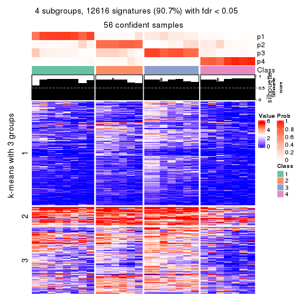
get_signatures(res, k = 5, scale_rows = FALSE)
get_signatures(res, k = 6, scale_rows = FALSE)
Compare the overlap of signatures from different k:
compare_signatures(res)
get_signature() returns a data frame invisibly. TO get the list of signatures, the function
call should be assigned to a variable explicitly. In following code, if plot argument is set
to FALSE, no heatmap is plotted while only the differential analysis is performed.
# code only for demonstration
tb = get_signature(res, k = ..., plot = FALSE)
An example of the output of tb is:
#> which_row fdr mean_1 mean_2 scaled_mean_1 scaled_mean_2 km
#> 1 38 0.042760348 8.373488 9.131774 -0.5533452 0.5164555 1
#> 2 40 0.018707592 7.106213 8.469186 -0.6173731 0.5762149 1
#> 3 55 0.019134737 10.221463 11.207825 -0.6159697 0.5749050 1
#> 4 59 0.006059896 5.921854 7.869574 -0.6899429 0.6439467 1
#> 5 60 0.018055526 8.928898 10.211722 -0.6204761 0.5791110 1
#> 6 98 0.009384629 15.714769 14.887706 0.6635654 -0.6193277 2
...
The columns in tb are:
which_row: row indices corresponding to the input matrix.fdr: FDR for the differential test. mean_x: The mean value in group x.scaled_mean_x: The mean value in group x after rows are scaled.km: Row groups if k-means clustering is applied to rows.UMAP plot which shows how samples are separated.
dimension_reduction(res, k = 2, method = "UMAP")
dimension_reduction(res, k = 3, method = "UMAP")
dimension_reduction(res, k = 4, method = "UMAP")
dimension_reduction(res, k = 5, method = "UMAP")

dimension_reduction(res, k = 6, method = "UMAP")
Following heatmap shows how subgroups are split when increasing k:
collect_classes(res)
If matrix rows can be associated to genes, consider to use functional_enrichment(res,
...) to perform function enrichment for the signature genes. See this vignette for more detailed explanations.
The object with results only for a single top-value method and a single partition method can be extracted as:
res = res_list["SD", "skmeans"]
# you can also extract it by
# res = res_list["SD:skmeans"]
A summary of res and all the functions that can be applied to it:
res
#> A 'ConsensusPartition' object with k = 2, 3, 4, 5, 6.
#> On a matrix with 13917 rows and 56 columns.
#> Top rows (1000, 2000, 3000, 4000, 5000) are extracted by 'SD' method.
#> Subgroups are detected by 'skmeans' method.
#> Performed in total 1250 partitions by row resampling.
#> Best k for subgroups seems to be 4.
#>
#> Following methods can be applied to this 'ConsensusPartition' object:
#> [1] "cola_report" "collect_classes" "collect_plots"
#> [4] "collect_stats" "colnames" "compare_signatures"
#> [7] "consensus_heatmap" "dimension_reduction" "functional_enrichment"
#> [10] "get_anno_col" "get_anno" "get_classes"
#> [13] "get_consensus" "get_matrix" "get_membership"
#> [16] "get_param" "get_signatures" "get_stats"
#> [19] "is_best_k" "is_stable_k" "membership_heatmap"
#> [22] "ncol" "nrow" "plot_ecdf"
#> [25] "rownames" "select_partition_number" "show"
#> [28] "suggest_best_k" "test_to_known_factors"
collect_plots() function collects all the plots made from res for all k (number of partitions)
into one single page to provide an easy and fast comparison between different k.
collect_plots(res)
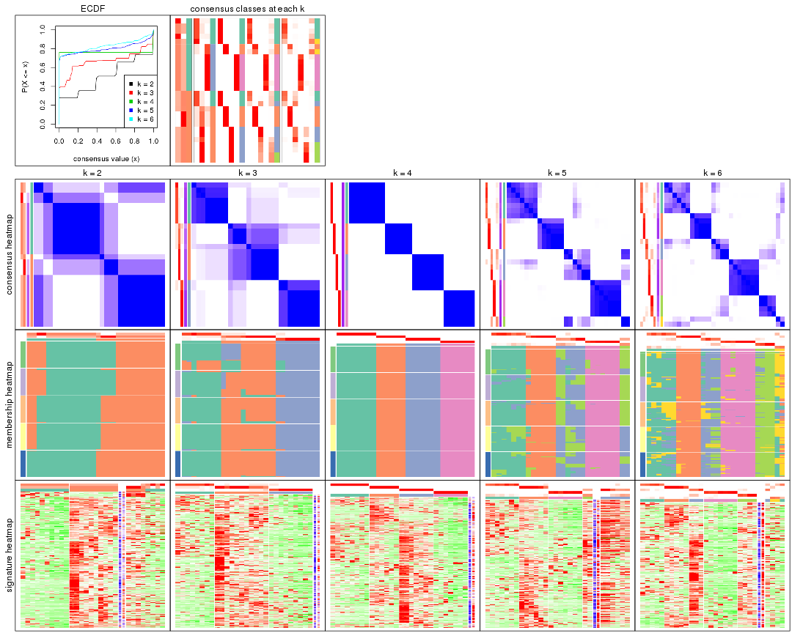
The plots are:
k and the heatmap of
predicted classes for each k.k.k.k.All the plots in panels can be made by individual functions and they are plotted later in this section.
select_partition_number() produces several plots showing different
statistics for choosing “optimized” k. There are following statistics:
k;k, the area increased is defined as \(A_k - A_{k-1}\).The detailed explanations of these statistics can be found in the cola vignette.
Generally speaking, lower PAC score, higher mean silhouette score or higher
concordance corresponds to better partition. Rand index and Jaccard index
measure how similar the current partition is compared to partition with k-1.
If they are too similar, we won't accept k is better than k-1.
select_partition_number(res)
The numeric values for all these statistics can be obtained by get_stats().
get_stats(res)
#> k 1-PAC mean_silhouette concordance area_increased Rand Jaccard
#> 2 2 0.545 0.576 0.844 0.5085 0.491 0.491
#> 3 3 0.670 0.887 0.911 0.3148 0.758 0.544
#> 4 4 1.000 1.000 1.000 0.1387 0.870 0.627
#> 5 5 0.857 0.717 0.836 0.0537 0.943 0.773
#> 6 6 0.829 0.751 0.835 0.0331 0.938 0.718
suggest_best_k() suggests the best \(k\) based on these statistics. The rules are as follows:
suggest_best_k(res)
#> [1] 4
Following shows the table of the partitions (You need to click the show/hide
code output link to see it). The membership matrix (columns with name p*)
is inferred by
clue::cl_consensus()
function with the SE method. Basically the value in the membership matrix
represents the probability to belong to a certain group. The finall class
label for an item is determined with the group with highest probability it
belongs to.
In get_classes() function, the entropy is calculated from the membership
matrix and the silhouette score is calculated from the consensus matrix.
cbind(get_classes(res, k = 2), get_membership(res, k = 2))
#> class entropy silhouette p1 p2
#> SRR1975508 2 0.966 0.809 0.392 0.608
#> SRR1975507 2 0.966 0.809 0.392 0.608
#> SRR1975506 2 0.966 0.809 0.392 0.608
#> SRR1975505 2 0.966 0.809 0.392 0.608
#> SRR1975503 1 0.966 0.783 0.608 0.392
#> SRR1975504 1 0.966 0.783 0.608 0.392
#> SRR1975501 1 0.966 0.783 0.608 0.392
#> SRR1975502 1 0.966 0.783 0.608 0.392
#> SRR1975499 1 0.966 0.783 0.608 0.392
#> SRR1975500 1 0.966 0.783 0.608 0.392
#> SRR1975497 1 0.000 0.348 1.000 0.000
#> SRR1975498 1 0.000 0.348 1.000 0.000
#> SRR1975493 2 0.973 -0.547 0.404 0.596
#> SRR1975494 2 0.973 -0.547 0.404 0.596
#> SRR1975495 2 0.966 0.809 0.392 0.608
#> SRR1975496 2 0.966 0.809 0.392 0.608
#> SRR1975491 1 0.966 0.783 0.608 0.392
#> SRR1975492 1 0.966 0.783 0.608 0.392
#> SRR1975489 1 0.966 0.783 0.608 0.392
#> SRR1975490 1 0.966 0.783 0.608 0.392
#> SRR1975487 1 0.966 0.783 0.608 0.392
#> SRR1975488 1 0.966 0.783 0.608 0.392
#> SRR1975485 1 0.966 0.783 0.608 0.392
#> SRR1975486 1 0.966 0.783 0.608 0.392
#> SRR1975483 1 0.975 -0.561 0.592 0.408
#> SRR1975484 1 0.975 -0.561 0.592 0.408
#> SRR1975481 1 0.975 -0.561 0.592 0.408
#> SRR1975482 1 0.975 -0.561 0.592 0.408
#> SRR1975477 2 0.966 0.809 0.392 0.608
#> SRR1975478 2 0.966 0.809 0.392 0.608
#> SRR1975479 1 0.966 0.783 0.608 0.392
#> SRR1975480 1 0.966 0.783 0.608 0.392
#> SRR1975475 1 0.966 0.783 0.608 0.392
#> SRR1975476 1 0.966 0.783 0.608 0.392
#> SRR1975473 2 0.966 0.809 0.392 0.608
#> SRR1975474 2 0.966 0.809 0.392 0.608
#> SRR1975471 2 0.966 0.809 0.392 0.608
#> SRR1975472 2 0.966 0.809 0.392 0.608
#> SRR1975469 1 0.000 0.348 1.000 0.000
#> SRR1975470 1 0.000 0.348 1.000 0.000
#> SRR1975467 1 0.966 0.783 0.608 0.392
#> SRR1975468 1 0.966 0.783 0.608 0.392
#> SRR1975465 2 0.000 0.396 0.000 1.000
#> SRR1975466 2 0.000 0.396 0.000 1.000
#> SRR1975463 2 0.000 0.396 0.000 1.000
#> SRR1975464 2 0.000 0.396 0.000 1.000
#> SRR1975461 2 0.966 0.809 0.392 0.608
#> SRR1975462 2 0.966 0.809 0.392 0.608
#> SRR1975459 2 0.000 0.396 0.000 1.000
#> SRR1975460 2 0.000 0.396 0.000 1.000
#> SRR1975457 2 0.966 0.809 0.392 0.608
#> SRR1975458 2 0.966 0.809 0.392 0.608
#> SRR1975455 2 0.966 0.809 0.392 0.608
#> SRR1975456 2 0.966 0.809 0.392 0.608
#> SRR1975453 2 0.966 0.809 0.392 0.608
#> SRR1975454 2 0.966 0.809 0.392 0.608
cbind(get_classes(res, k = 3), get_membership(res, k = 3))
#> class entropy silhouette p1 p2 p3
#> SRR1975508 2 0.0000 0.862 0.000 1.000 0.000
#> SRR1975507 2 0.0000 0.862 0.000 1.000 0.000
#> SRR1975506 2 0.0000 0.862 0.000 1.000 0.000
#> SRR1975505 2 0.0000 0.862 0.000 1.000 0.000
#> SRR1975503 3 0.0000 0.968 0.000 0.000 1.000
#> SRR1975504 3 0.0000 0.968 0.000 0.000 1.000
#> SRR1975501 1 0.0424 0.852 0.992 0.000 0.008
#> SRR1975502 1 0.0424 0.852 0.992 0.000 0.008
#> SRR1975499 3 0.0000 0.968 0.000 0.000 1.000
#> SRR1975500 3 0.0000 0.968 0.000 0.000 1.000
#> SRR1975497 1 0.4475 0.927 0.864 0.072 0.064
#> SRR1975498 1 0.4475 0.927 0.864 0.072 0.064
#> SRR1975493 2 0.8460 0.589 0.136 0.600 0.264
#> SRR1975494 2 0.8460 0.589 0.136 0.600 0.264
#> SRR1975495 1 0.3619 0.955 0.864 0.136 0.000
#> SRR1975496 1 0.3619 0.955 0.864 0.136 0.000
#> SRR1975491 3 0.3619 0.881 0.136 0.000 0.864
#> SRR1975492 3 0.3619 0.881 0.136 0.000 0.864
#> SRR1975489 3 0.0000 0.968 0.000 0.000 1.000
#> SRR1975490 3 0.0000 0.968 0.000 0.000 1.000
#> SRR1975487 3 0.0000 0.968 0.000 0.000 1.000
#> SRR1975488 3 0.0000 0.968 0.000 0.000 1.000
#> SRR1975485 3 0.0000 0.968 0.000 0.000 1.000
#> SRR1975486 3 0.0000 0.968 0.000 0.000 1.000
#> SRR1975483 1 0.3619 0.955 0.864 0.136 0.000
#> SRR1975484 1 0.3619 0.955 0.864 0.136 0.000
#> SRR1975481 1 0.3619 0.955 0.864 0.136 0.000
#> SRR1975482 1 0.3619 0.955 0.864 0.136 0.000
#> SRR1975477 2 0.0000 0.862 0.000 1.000 0.000
#> SRR1975478 2 0.0000 0.862 0.000 1.000 0.000
#> SRR1975479 3 0.0000 0.968 0.000 0.000 1.000
#> SRR1975480 3 0.0000 0.968 0.000 0.000 1.000
#> SRR1975475 3 0.0000 0.968 0.000 0.000 1.000
#> SRR1975476 3 0.0000 0.968 0.000 0.000 1.000
#> SRR1975473 2 0.0000 0.862 0.000 1.000 0.000
#> SRR1975474 2 0.0000 0.862 0.000 1.000 0.000
#> SRR1975471 1 0.3619 0.955 0.864 0.136 0.000
#> SRR1975472 1 0.3619 0.955 0.864 0.136 0.000
#> SRR1975469 1 0.4475 0.921 0.864 0.064 0.072
#> SRR1975470 1 0.4475 0.921 0.864 0.064 0.072
#> SRR1975467 3 0.3619 0.881 0.136 0.000 0.864
#> SRR1975468 3 0.3619 0.881 0.136 0.000 0.864
#> SRR1975465 2 0.6788 0.778 0.136 0.744 0.120
#> SRR1975466 2 0.6788 0.778 0.136 0.744 0.120
#> SRR1975463 2 0.6788 0.778 0.136 0.744 0.120
#> SRR1975464 2 0.6788 0.778 0.136 0.744 0.120
#> SRR1975461 2 0.3686 0.720 0.140 0.860 0.000
#> SRR1975462 2 0.3686 0.720 0.140 0.860 0.000
#> SRR1975459 2 0.6788 0.778 0.136 0.744 0.120
#> SRR1975460 2 0.6788 0.778 0.136 0.744 0.120
#> SRR1975457 2 0.0000 0.862 0.000 1.000 0.000
#> SRR1975458 2 0.0000 0.862 0.000 1.000 0.000
#> SRR1975455 2 0.0000 0.862 0.000 1.000 0.000
#> SRR1975456 2 0.0000 0.862 0.000 1.000 0.000
#> SRR1975453 1 0.3619 0.955 0.864 0.136 0.000
#> SRR1975454 1 0.3619 0.955 0.864 0.136 0.000
cbind(get_classes(res, k = 4), get_membership(res, k = 4))
#> class entropy silhouette p1 p2 p3 p4
#> SRR1975508 3 0 1 0 0 1 0
#> SRR1975507 3 0 1 0 0 1 0
#> SRR1975506 3 0 1 0 0 1 0
#> SRR1975505 3 0 1 0 0 1 0
#> SRR1975503 4 0 1 0 0 0 1
#> SRR1975504 4 0 1 0 0 0 1
#> SRR1975501 1 0 1 1 0 0 0
#> SRR1975502 1 0 1 1 0 0 0
#> SRR1975499 4 0 1 0 0 0 1
#> SRR1975500 4 0 1 0 0 0 1
#> SRR1975497 1 0 1 1 0 0 0
#> SRR1975498 1 0 1 1 0 0 0
#> SRR1975493 2 0 1 0 1 0 0
#> SRR1975494 2 0 1 0 1 0 0
#> SRR1975495 1 0 1 1 0 0 0
#> SRR1975496 1 0 1 1 0 0 0
#> SRR1975491 2 0 1 0 1 0 0
#> SRR1975492 2 0 1 0 1 0 0
#> SRR1975489 4 0 1 0 0 0 1
#> SRR1975490 4 0 1 0 0 0 1
#> SRR1975487 4 0 1 0 0 0 1
#> SRR1975488 4 0 1 0 0 0 1
#> SRR1975485 4 0 1 0 0 0 1
#> SRR1975486 4 0 1 0 0 0 1
#> SRR1975483 1 0 1 1 0 0 0
#> SRR1975484 1 0 1 1 0 0 0
#> SRR1975481 1 0 1 1 0 0 0
#> SRR1975482 1 0 1 1 0 0 0
#> SRR1975477 3 0 1 0 0 1 0
#> SRR1975478 3 0 1 0 0 1 0
#> SRR1975479 4 0 1 0 0 0 1
#> SRR1975480 4 0 1 0 0 0 1
#> SRR1975475 4 0 1 0 0 0 1
#> SRR1975476 4 0 1 0 0 0 1
#> SRR1975473 3 0 1 0 0 1 0
#> SRR1975474 3 0 1 0 0 1 0
#> SRR1975471 1 0 1 1 0 0 0
#> SRR1975472 1 0 1 1 0 0 0
#> SRR1975469 1 0 1 1 0 0 0
#> SRR1975470 1 0 1 1 0 0 0
#> SRR1975467 2 0 1 0 1 0 0
#> SRR1975468 2 0 1 0 1 0 0
#> SRR1975465 2 0 1 0 1 0 0
#> SRR1975466 2 0 1 0 1 0 0
#> SRR1975463 2 0 1 0 1 0 0
#> SRR1975464 2 0 1 0 1 0 0
#> SRR1975461 3 0 1 0 0 1 0
#> SRR1975462 3 0 1 0 0 1 0
#> SRR1975459 2 0 1 0 1 0 0
#> SRR1975460 2 0 1 0 1 0 0
#> SRR1975457 3 0 1 0 0 1 0
#> SRR1975458 3 0 1 0 0 1 0
#> SRR1975455 3 0 1 0 0 1 0
#> SRR1975456 3 0 1 0 0 1 0
#> SRR1975453 1 0 1 1 0 0 0
#> SRR1975454 1 0 1 1 0 0 0
cbind(get_classes(res, k = 5), get_membership(res, k = 5))
#> class entropy silhouette p1 p2 p3 p4 p5
#> SRR1975508 3 0.0000 0.399 0.000 0.000 1.000 0.000 0.000
#> SRR1975507 3 0.0000 0.399 0.000 0.000 1.000 0.000 0.000
#> SRR1975506 3 0.0000 0.399 0.000 0.000 1.000 0.000 0.000
#> SRR1975505 3 0.0000 0.399 0.000 0.000 1.000 0.000 0.000
#> SRR1975503 4 0.0794 0.973 0.000 0.000 0.000 0.972 0.028
#> SRR1975504 4 0.0794 0.973 0.000 0.000 0.000 0.972 0.028
#> SRR1975501 1 0.2329 0.809 0.876 0.000 0.000 0.000 0.124
#> SRR1975502 1 0.2329 0.809 0.876 0.000 0.000 0.000 0.124
#> SRR1975499 4 0.0290 0.983 0.000 0.000 0.000 0.992 0.008
#> SRR1975500 4 0.0290 0.983 0.000 0.000 0.000 0.992 0.008
#> SRR1975497 1 0.1121 0.842 0.956 0.000 0.000 0.000 0.044
#> SRR1975498 1 0.1121 0.842 0.956 0.000 0.000 0.000 0.044
#> SRR1975493 2 0.0290 0.945 0.000 0.992 0.000 0.000 0.008
#> SRR1975494 2 0.0290 0.945 0.000 0.992 0.000 0.000 0.008
#> SRR1975495 1 0.3395 0.833 0.764 0.000 0.000 0.000 0.236
#> SRR1975496 1 0.3395 0.833 0.764 0.000 0.000 0.000 0.236
#> SRR1975491 2 0.5010 0.742 0.144 0.708 0.000 0.000 0.148
#> SRR1975492 2 0.5010 0.742 0.144 0.708 0.000 0.000 0.148
#> SRR1975489 4 0.0000 0.984 0.000 0.000 0.000 1.000 0.000
#> SRR1975490 4 0.0000 0.984 0.000 0.000 0.000 1.000 0.000
#> SRR1975487 4 0.0000 0.984 0.000 0.000 0.000 1.000 0.000
#> SRR1975488 4 0.0000 0.984 0.000 0.000 0.000 1.000 0.000
#> SRR1975485 4 0.0000 0.984 0.000 0.000 0.000 1.000 0.000
#> SRR1975486 4 0.0000 0.984 0.000 0.000 0.000 1.000 0.000
#> SRR1975483 1 0.2929 0.855 0.820 0.000 0.000 0.000 0.180
#> SRR1975484 1 0.2929 0.855 0.820 0.000 0.000 0.000 0.180
#> SRR1975481 1 0.2179 0.864 0.888 0.000 0.000 0.000 0.112
#> SRR1975482 1 0.2179 0.864 0.888 0.000 0.000 0.000 0.112
#> SRR1975477 5 0.4256 1.000 0.000 0.000 0.436 0.000 0.564
#> SRR1975478 5 0.4256 1.000 0.000 0.000 0.436 0.000 0.564
#> SRR1975479 4 0.1608 0.937 0.000 0.000 0.000 0.928 0.072
#> SRR1975480 4 0.1608 0.937 0.000 0.000 0.000 0.928 0.072
#> SRR1975475 4 0.0290 0.983 0.000 0.000 0.000 0.992 0.008
#> SRR1975476 4 0.0290 0.983 0.000 0.000 0.000 0.992 0.008
#> SRR1975473 5 0.4256 1.000 0.000 0.000 0.436 0.000 0.564
#> SRR1975474 5 0.4256 1.000 0.000 0.000 0.436 0.000 0.564
#> SRR1975471 1 0.4161 0.792 0.704 0.000 0.016 0.000 0.280
#> SRR1975472 1 0.4161 0.792 0.704 0.000 0.016 0.000 0.280
#> SRR1975469 1 0.0963 0.847 0.964 0.000 0.000 0.000 0.036
#> SRR1975470 1 0.0963 0.847 0.964 0.000 0.000 0.000 0.036
#> SRR1975467 2 0.0880 0.937 0.000 0.968 0.000 0.000 0.032
#> SRR1975468 2 0.0880 0.937 0.000 0.968 0.000 0.000 0.032
#> SRR1975465 2 0.0162 0.946 0.000 0.996 0.000 0.000 0.004
#> SRR1975466 2 0.0162 0.946 0.000 0.996 0.000 0.000 0.004
#> SRR1975463 2 0.0162 0.946 0.000 0.996 0.000 0.000 0.004
#> SRR1975464 2 0.0162 0.946 0.000 0.996 0.000 0.000 0.004
#> SRR1975461 3 0.3395 0.434 0.000 0.000 0.764 0.000 0.236
#> SRR1975462 3 0.3395 0.434 0.000 0.000 0.764 0.000 0.236
#> SRR1975459 2 0.0162 0.946 0.000 0.996 0.000 0.000 0.004
#> SRR1975460 2 0.0162 0.946 0.000 0.996 0.000 0.000 0.004
#> SRR1975457 3 0.4256 -0.713 0.000 0.000 0.564 0.000 0.436
#> SRR1975458 3 0.4256 -0.713 0.000 0.000 0.564 0.000 0.436
#> SRR1975455 3 0.4297 -0.787 0.000 0.000 0.528 0.000 0.472
#> SRR1975456 3 0.4297 -0.787 0.000 0.000 0.528 0.000 0.472
#> SRR1975453 3 0.6351 0.213 0.204 0.000 0.516 0.000 0.280
#> SRR1975454 3 0.6351 0.213 0.204 0.000 0.516 0.000 0.280
cbind(get_classes(res, k = 6), get_membership(res, k = 6))
#> class entropy silhouette p1 p2 p3 p4 p5 p6
#> SRR1975508 3 0.3619 0.555 0.000 0.000 0.680 0.000 0.316 0.004
#> SRR1975507 3 0.3619 0.555 0.000 0.000 0.680 0.000 0.316 0.004
#> SRR1975506 3 0.3619 0.555 0.000 0.000 0.680 0.000 0.316 0.004
#> SRR1975505 3 0.3619 0.555 0.000 0.000 0.680 0.000 0.316 0.004
#> SRR1975503 4 0.2006 0.897 0.000 0.000 0.004 0.892 0.000 0.104
#> SRR1975504 4 0.2006 0.897 0.000 0.000 0.004 0.892 0.000 0.104
#> SRR1975501 6 0.3927 0.320 0.344 0.000 0.012 0.000 0.000 0.644
#> SRR1975502 6 0.3927 0.320 0.344 0.000 0.012 0.000 0.000 0.644
#> SRR1975499 4 0.0363 0.958 0.000 0.000 0.000 0.988 0.000 0.012
#> SRR1975500 4 0.0363 0.958 0.000 0.000 0.000 0.988 0.000 0.012
#> SRR1975497 1 0.3998 0.424 0.644 0.000 0.016 0.000 0.000 0.340
#> SRR1975498 1 0.3998 0.424 0.644 0.000 0.016 0.000 0.000 0.340
#> SRR1975493 2 0.0363 0.954 0.000 0.988 0.000 0.000 0.000 0.012
#> SRR1975494 2 0.0363 0.954 0.000 0.988 0.000 0.000 0.000 0.012
#> SRR1975495 1 0.3802 0.650 0.748 0.000 0.208 0.000 0.000 0.044
#> SRR1975496 1 0.3802 0.650 0.748 0.000 0.208 0.000 0.000 0.044
#> SRR1975491 6 0.4014 0.490 0.004 0.276 0.024 0.000 0.000 0.696
#> SRR1975492 6 0.4014 0.490 0.004 0.276 0.024 0.000 0.000 0.696
#> SRR1975489 4 0.0146 0.959 0.000 0.000 0.004 0.996 0.000 0.000
#> SRR1975490 4 0.0146 0.959 0.000 0.000 0.004 0.996 0.000 0.000
#> SRR1975487 4 0.0146 0.959 0.000 0.000 0.000 0.996 0.000 0.004
#> SRR1975488 4 0.0146 0.959 0.000 0.000 0.000 0.996 0.000 0.004
#> SRR1975485 4 0.0000 0.959 0.000 0.000 0.000 1.000 0.000 0.000
#> SRR1975486 4 0.0000 0.959 0.000 0.000 0.000 1.000 0.000 0.000
#> SRR1975483 1 0.1918 0.686 0.904 0.000 0.088 0.000 0.000 0.008
#> SRR1975484 1 0.1918 0.686 0.904 0.000 0.088 0.000 0.000 0.008
#> SRR1975481 1 0.2135 0.647 0.872 0.000 0.000 0.000 0.000 0.128
#> SRR1975482 1 0.2135 0.647 0.872 0.000 0.000 0.000 0.000 0.128
#> SRR1975477 5 0.0260 0.884 0.000 0.000 0.000 0.000 0.992 0.008
#> SRR1975478 5 0.0260 0.884 0.000 0.000 0.000 0.000 0.992 0.008
#> SRR1975479 4 0.2492 0.903 0.000 0.000 0.008 0.888 0.068 0.036
#> SRR1975480 4 0.2492 0.903 0.000 0.000 0.008 0.888 0.068 0.036
#> SRR1975475 4 0.1398 0.944 0.000 0.000 0.008 0.940 0.000 0.052
#> SRR1975476 4 0.1398 0.944 0.000 0.000 0.008 0.940 0.000 0.052
#> SRR1975473 5 0.0260 0.884 0.000 0.000 0.000 0.000 0.992 0.008
#> SRR1975474 5 0.0260 0.884 0.000 0.000 0.000 0.000 0.992 0.008
#> SRR1975471 1 0.3690 0.613 0.700 0.000 0.288 0.000 0.000 0.012
#> SRR1975472 1 0.3690 0.613 0.700 0.000 0.288 0.000 0.000 0.012
#> SRR1975469 1 0.3997 0.505 0.688 0.000 0.020 0.004 0.000 0.288
#> SRR1975470 1 0.3997 0.505 0.688 0.000 0.020 0.004 0.000 0.288
#> SRR1975467 2 0.2664 0.833 0.000 0.848 0.016 0.000 0.000 0.136
#> SRR1975468 2 0.2664 0.833 0.000 0.848 0.016 0.000 0.000 0.136
#> SRR1975465 2 0.0000 0.959 0.000 1.000 0.000 0.000 0.000 0.000
#> SRR1975466 2 0.0000 0.959 0.000 1.000 0.000 0.000 0.000 0.000
#> SRR1975463 2 0.0000 0.959 0.000 1.000 0.000 0.000 0.000 0.000
#> SRR1975464 2 0.0000 0.959 0.000 1.000 0.000 0.000 0.000 0.000
#> SRR1975461 3 0.1720 0.635 0.032 0.000 0.928 0.000 0.040 0.000
#> SRR1975462 3 0.1720 0.635 0.032 0.000 0.928 0.000 0.040 0.000
#> SRR1975459 2 0.0000 0.959 0.000 1.000 0.000 0.000 0.000 0.000
#> SRR1975460 2 0.0000 0.959 0.000 1.000 0.000 0.000 0.000 0.000
#> SRR1975457 5 0.3248 0.815 0.000 0.000 0.164 0.000 0.804 0.032
#> SRR1975458 5 0.3248 0.815 0.000 0.000 0.164 0.000 0.804 0.032
#> SRR1975455 5 0.2537 0.870 0.000 0.000 0.096 0.000 0.872 0.032
#> SRR1975456 5 0.2537 0.870 0.000 0.000 0.096 0.000 0.872 0.032
#> SRR1975453 3 0.3819 0.252 0.316 0.000 0.672 0.000 0.000 0.012
#> SRR1975454 3 0.3819 0.252 0.316 0.000 0.672 0.000 0.000 0.012
Heatmaps for the consensus matrix. It visualizes the probability of two samples to be in a same group.
consensus_heatmap(res, k = 2)
consensus_heatmap(res, k = 3)
consensus_heatmap(res, k = 4)
consensus_heatmap(res, k = 5)
consensus_heatmap(res, k = 6)
Heatmaps for the membership of samples in all partitions to see how consistent they are:
membership_heatmap(res, k = 2)
membership_heatmap(res, k = 3)
membership_heatmap(res, k = 4)

membership_heatmap(res, k = 5)
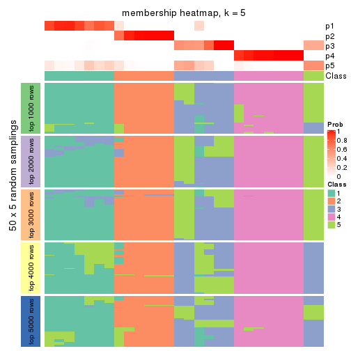
membership_heatmap(res, k = 6)
As soon as we have had the classes for columns, we can look for signatures which are significantly different between classes which can be candidate marks for certain classes. Following are the heatmaps for signatures.
Signature heatmaps where rows are scaled:
get_signatures(res, k = 2)
get_signatures(res, k = 3)

get_signatures(res, k = 4)
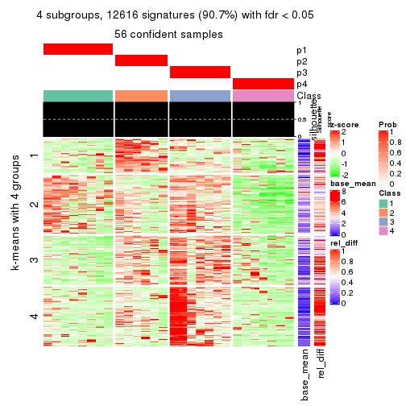
get_signatures(res, k = 5)
get_signatures(res, k = 6)
Signature heatmaps where rows are not scaled:
get_signatures(res, k = 2, scale_rows = FALSE)
get_signatures(res, k = 3, scale_rows = FALSE)
get_signatures(res, k = 4, scale_rows = FALSE)
get_signatures(res, k = 5, scale_rows = FALSE)
get_signatures(res, k = 6, scale_rows = FALSE)
Compare the overlap of signatures from different k:
compare_signatures(res)
get_signature() returns a data frame invisibly. TO get the list of signatures, the function
call should be assigned to a variable explicitly. In following code, if plot argument is set
to FALSE, no heatmap is plotted while only the differential analysis is performed.
# code only for demonstration
tb = get_signature(res, k = ..., plot = FALSE)
An example of the output of tb is:
#> which_row fdr mean_1 mean_2 scaled_mean_1 scaled_mean_2 km
#> 1 38 0.042760348 8.373488 9.131774 -0.5533452 0.5164555 1
#> 2 40 0.018707592 7.106213 8.469186 -0.6173731 0.5762149 1
#> 3 55 0.019134737 10.221463 11.207825 -0.6159697 0.5749050 1
#> 4 59 0.006059896 5.921854 7.869574 -0.6899429 0.6439467 1
#> 5 60 0.018055526 8.928898 10.211722 -0.6204761 0.5791110 1
#> 6 98 0.009384629 15.714769 14.887706 0.6635654 -0.6193277 2
...
The columns in tb are:
which_row: row indices corresponding to the input matrix.fdr: FDR for the differential test. mean_x: The mean value in group x.scaled_mean_x: The mean value in group x after rows are scaled.km: Row groups if k-means clustering is applied to rows.UMAP plot which shows how samples are separated.
dimension_reduction(res, k = 2, method = "UMAP")
dimension_reduction(res, k = 3, method = "UMAP")
dimension_reduction(res, k = 4, method = "UMAP")

dimension_reduction(res, k = 5, method = "UMAP")
dimension_reduction(res, k = 6, method = "UMAP")
Following heatmap shows how subgroups are split when increasing k:
collect_classes(res)
If matrix rows can be associated to genes, consider to use functional_enrichment(res,
...) to perform function enrichment for the signature genes. See this vignette for more detailed explanations.
The object with results only for a single top-value method and a single partition method can be extracted as:
res = res_list["SD", "pam"]
# you can also extract it by
# res = res_list["SD:pam"]
A summary of res and all the functions that can be applied to it:
res
#> A 'ConsensusPartition' object with k = 2, 3, 4, 5, 6.
#> On a matrix with 13917 rows and 56 columns.
#> Top rows (1000, 2000, 3000, 4000, 5000) are extracted by 'SD' method.
#> Subgroups are detected by 'pam' method.
#> Performed in total 1250 partitions by row resampling.
#> Best k for subgroups seems to be 6.
#>
#> Following methods can be applied to this 'ConsensusPartition' object:
#> [1] "cola_report" "collect_classes" "collect_plots"
#> [4] "collect_stats" "colnames" "compare_signatures"
#> [7] "consensus_heatmap" "dimension_reduction" "functional_enrichment"
#> [10] "get_anno_col" "get_anno" "get_classes"
#> [13] "get_consensus" "get_matrix" "get_membership"
#> [16] "get_param" "get_signatures" "get_stats"
#> [19] "is_best_k" "is_stable_k" "membership_heatmap"
#> [22] "ncol" "nrow" "plot_ecdf"
#> [25] "rownames" "select_partition_number" "show"
#> [28] "suggest_best_k" "test_to_known_factors"
collect_plots() function collects all the plots made from res for all k (number of partitions)
into one single page to provide an easy and fast comparison between different k.
collect_plots(res)
The plots are:
k and the heatmap of
predicted classes for each k.k.k.k.All the plots in panels can be made by individual functions and they are plotted later in this section.
select_partition_number() produces several plots showing different
statistics for choosing “optimized” k. There are following statistics:
k;k, the area increased is defined as \(A_k - A_{k-1}\).The detailed explanations of these statistics can be found in the cola vignette.
Generally speaking, lower PAC score, higher mean silhouette score or higher
concordance corresponds to better partition. Rand index and Jaccard index
measure how similar the current partition is compared to partition with k-1.
If they are too similar, we won't accept k is better than k-1.
select_partition_number(res)
The numeric values for all these statistics can be obtained by get_stats().
get_stats(res)
#> k 1-PAC mean_silhouette concordance area_increased Rand Jaccard
#> 2 2 0.353 0.755 0.854 0.4613 0.494 0.494
#> 3 3 0.467 0.638 0.829 0.3938 0.751 0.538
#> 4 4 0.845 0.869 0.942 0.1804 0.860 0.609
#> 5 5 1.000 0.980 0.991 0.0585 0.917 0.680
#> 6 6 0.915 0.893 0.908 0.0242 0.969 0.848
suggest_best_k() suggests the best \(k\) based on these statistics. The rules are as follows:
suggest_best_k(res)
#> [1] 6
#> attr(,"optional")
#> [1] 5
There is also optional best \(k\) = 5 that is worth to check.
Following shows the table of the partitions (You need to click the show/hide
code output link to see it). The membership matrix (columns with name p*)
is inferred by
clue::cl_consensus()
function with the SE method. Basically the value in the membership matrix
represents the probability to belong to a certain group. The finall class
label for an item is determined with the group with highest probability it
belongs to.
In get_classes() function, the entropy is calculated from the membership
matrix and the silhouette score is calculated from the consensus matrix.
cbind(get_classes(res, k = 2), get_membership(res, k = 2))
#> class entropy silhouette p1 p2
#> SRR1975508 2 0.000 0.917 0.000 1.000
#> SRR1975507 2 0.000 0.917 0.000 1.000
#> SRR1975506 2 0.000 0.917 0.000 1.000
#> SRR1975505 2 0.000 0.917 0.000 1.000
#> SRR1975503 1 0.000 0.696 1.000 0.000
#> SRR1975504 1 0.000 0.696 1.000 0.000
#> SRR1975501 2 0.985 0.269 0.428 0.572
#> SRR1975502 2 0.973 0.312 0.404 0.596
#> SRR1975499 1 0.000 0.696 1.000 0.000
#> SRR1975500 1 0.000 0.696 1.000 0.000
#> SRR1975497 2 0.855 0.554 0.280 0.720
#> SRR1975498 2 0.844 0.571 0.272 0.728
#> SRR1975493 1 0.871 0.724 0.708 0.292
#> SRR1975494 1 0.871 0.724 0.708 0.292
#> SRR1975495 2 0.722 0.629 0.200 0.800
#> SRR1975496 2 0.722 0.629 0.200 0.800
#> SRR1975491 1 0.814 0.737 0.748 0.252
#> SRR1975492 1 0.827 0.735 0.740 0.260
#> SRR1975489 1 0.722 0.635 0.800 0.200
#> SRR1975490 1 0.722 0.635 0.800 0.200
#> SRR1975487 1 0.000 0.696 1.000 0.000
#> SRR1975488 1 0.000 0.696 1.000 0.000
#> SRR1975485 1 0.722 0.635 0.800 0.200
#> SRR1975486 1 0.722 0.635 0.800 0.200
#> SRR1975483 2 0.000 0.917 0.000 1.000
#> SRR1975484 2 0.000 0.917 0.000 1.000
#> SRR1975481 2 0.000 0.917 0.000 1.000
#> SRR1975482 2 0.000 0.917 0.000 1.000
#> SRR1975477 2 0.000 0.917 0.000 1.000
#> SRR1975478 2 0.000 0.917 0.000 1.000
#> SRR1975479 1 1.000 0.490 0.512 0.488
#> SRR1975480 1 1.000 0.490 0.512 0.488
#> SRR1975475 1 0.995 0.544 0.540 0.460
#> SRR1975476 1 0.995 0.544 0.540 0.460
#> SRR1975473 2 0.000 0.917 0.000 1.000
#> SRR1975474 2 0.000 0.917 0.000 1.000
#> SRR1975471 2 0.000 0.917 0.000 1.000
#> SRR1975472 2 0.000 0.917 0.000 1.000
#> SRR1975469 2 0.000 0.917 0.000 1.000
#> SRR1975470 2 0.000 0.917 0.000 1.000
#> SRR1975467 1 0.802 0.738 0.756 0.244
#> SRR1975468 1 0.802 0.738 0.756 0.244
#> SRR1975465 1 0.936 0.683 0.648 0.352
#> SRR1975466 1 0.936 0.683 0.648 0.352
#> SRR1975463 1 0.936 0.683 0.648 0.352
#> SRR1975464 1 0.936 0.683 0.648 0.352
#> SRR1975461 2 0.000 0.917 0.000 1.000
#> SRR1975462 2 0.000 0.917 0.000 1.000
#> SRR1975459 1 0.936 0.683 0.648 0.352
#> SRR1975460 1 0.936 0.683 0.648 0.352
#> SRR1975457 2 0.000 0.917 0.000 1.000
#> SRR1975458 2 0.000 0.917 0.000 1.000
#> SRR1975455 2 0.000 0.917 0.000 1.000
#> SRR1975456 2 0.000 0.917 0.000 1.000
#> SRR1975453 2 0.000 0.917 0.000 1.000
#> SRR1975454 2 0.000 0.917 0.000 1.000
cbind(get_classes(res, k = 3), get_membership(res, k = 3))
#> class entropy silhouette p1 p2 p3
#> SRR1975508 3 0.6192 0.4330 0.000 0.420 0.580
#> SRR1975507 3 0.6079 0.4920 0.000 0.388 0.612
#> SRR1975506 3 0.6062 0.4975 0.000 0.384 0.616
#> SRR1975505 3 0.6154 0.4575 0.000 0.408 0.592
#> SRR1975503 1 0.0000 0.8199 1.000 0.000 0.000
#> SRR1975504 1 0.0000 0.8199 1.000 0.000 0.000
#> SRR1975501 3 0.4750 0.6188 0.000 0.216 0.784
#> SRR1975502 3 0.4750 0.6188 0.000 0.216 0.784
#> SRR1975499 1 0.0000 0.8199 1.000 0.000 0.000
#> SRR1975500 1 0.0000 0.8199 1.000 0.000 0.000
#> SRR1975497 3 0.0747 0.7998 0.000 0.016 0.984
#> SRR1975498 3 0.0892 0.7975 0.000 0.020 0.980
#> SRR1975493 2 0.4346 0.7154 0.184 0.816 0.000
#> SRR1975494 2 0.4346 0.7154 0.184 0.816 0.000
#> SRR1975495 3 0.4452 0.6429 0.000 0.192 0.808
#> SRR1975496 3 0.4452 0.6429 0.000 0.192 0.808
#> SRR1975491 2 0.7431 0.5959 0.188 0.696 0.116
#> SRR1975492 2 0.7558 0.5854 0.188 0.688 0.124
#> SRR1975489 1 0.0000 0.8199 1.000 0.000 0.000
#> SRR1975490 1 0.0000 0.8199 1.000 0.000 0.000
#> SRR1975487 1 0.0000 0.8199 1.000 0.000 0.000
#> SRR1975488 1 0.0000 0.8199 1.000 0.000 0.000
#> SRR1975485 1 0.0000 0.8199 1.000 0.000 0.000
#> SRR1975486 1 0.0000 0.8199 1.000 0.000 0.000
#> SRR1975483 3 0.0000 0.8073 0.000 0.000 1.000
#> SRR1975484 3 0.0000 0.8073 0.000 0.000 1.000
#> SRR1975481 3 0.0000 0.8073 0.000 0.000 1.000
#> SRR1975482 3 0.0000 0.8073 0.000 0.000 1.000
#> SRR1975477 2 0.4452 0.5484 0.000 0.808 0.192
#> SRR1975478 2 0.4452 0.5484 0.000 0.808 0.192
#> SRR1975479 1 0.8722 0.3490 0.592 0.216 0.192
#> SRR1975480 1 0.8722 0.3490 0.592 0.216 0.192
#> SRR1975475 1 0.9502 -0.0927 0.436 0.376 0.188
#> SRR1975476 1 0.9161 0.2092 0.532 0.280 0.188
#> SRR1975473 2 0.4504 0.5483 0.000 0.804 0.196
#> SRR1975474 2 0.4504 0.5483 0.000 0.804 0.196
#> SRR1975471 3 0.0000 0.8073 0.000 0.000 1.000
#> SRR1975472 3 0.0000 0.8073 0.000 0.000 1.000
#> SRR1975469 3 0.0000 0.8073 0.000 0.000 1.000
#> SRR1975470 3 0.0000 0.8073 0.000 0.000 1.000
#> SRR1975467 2 0.4399 0.7118 0.188 0.812 0.000
#> SRR1975468 2 0.4399 0.7118 0.188 0.812 0.000
#> SRR1975465 2 0.4062 0.7266 0.164 0.836 0.000
#> SRR1975466 2 0.4062 0.7266 0.164 0.836 0.000
#> SRR1975463 2 0.4062 0.7266 0.164 0.836 0.000
#> SRR1975464 2 0.4062 0.7266 0.164 0.836 0.000
#> SRR1975461 3 0.4062 0.7307 0.000 0.164 0.836
#> SRR1975462 3 0.4062 0.7307 0.000 0.164 0.836
#> SRR1975459 2 0.4062 0.7266 0.164 0.836 0.000
#> SRR1975460 2 0.4062 0.7266 0.164 0.836 0.000
#> SRR1975457 2 0.6295 -0.1909 0.000 0.528 0.472
#> SRR1975458 2 0.6295 -0.1909 0.000 0.528 0.472
#> SRR1975455 3 0.6126 0.4738 0.000 0.400 0.600
#> SRR1975456 3 0.6126 0.4738 0.000 0.400 0.600
#> SRR1975453 3 0.0000 0.8073 0.000 0.000 1.000
#> SRR1975454 3 0.0000 0.8073 0.000 0.000 1.000
cbind(get_classes(res, k = 4), get_membership(res, k = 4))
#> class entropy silhouette p1 p2 p3 p4
#> SRR1975508 3 0.000 0.914 0.000 0.000 1.000 0.000
#> SRR1975507 3 0.000 0.914 0.000 0.000 1.000 0.000
#> SRR1975506 3 0.000 0.914 0.000 0.000 1.000 0.000
#> SRR1975505 3 0.000 0.914 0.000 0.000 1.000 0.000
#> SRR1975503 4 0.000 0.907 0.000 0.000 0.000 1.000
#> SRR1975504 4 0.000 0.907 0.000 0.000 0.000 1.000
#> SRR1975501 1 0.391 0.720 0.768 0.232 0.000 0.000
#> SRR1975502 1 0.391 0.720 0.768 0.232 0.000 0.000
#> SRR1975499 4 0.000 0.907 0.000 0.000 0.000 1.000
#> SRR1975500 4 0.000 0.907 0.000 0.000 0.000 1.000
#> SRR1975497 1 0.000 0.966 1.000 0.000 0.000 0.000
#> SRR1975498 1 0.000 0.966 1.000 0.000 0.000 0.000
#> SRR1975493 2 0.000 0.934 0.000 1.000 0.000 0.000
#> SRR1975494 2 0.000 0.934 0.000 1.000 0.000 0.000
#> SRR1975495 1 0.000 0.966 1.000 0.000 0.000 0.000
#> SRR1975496 1 0.000 0.966 1.000 0.000 0.000 0.000
#> SRR1975491 2 0.000 0.934 0.000 1.000 0.000 0.000
#> SRR1975492 2 0.000 0.934 0.000 1.000 0.000 0.000
#> SRR1975489 4 0.000 0.907 0.000 0.000 0.000 1.000
#> SRR1975490 4 0.000 0.907 0.000 0.000 0.000 1.000
#> SRR1975487 4 0.000 0.907 0.000 0.000 0.000 1.000
#> SRR1975488 4 0.000 0.907 0.000 0.000 0.000 1.000
#> SRR1975485 4 0.000 0.907 0.000 0.000 0.000 1.000
#> SRR1975486 4 0.000 0.907 0.000 0.000 0.000 1.000
#> SRR1975483 1 0.000 0.966 1.000 0.000 0.000 0.000
#> SRR1975484 1 0.000 0.966 1.000 0.000 0.000 0.000
#> SRR1975481 1 0.000 0.966 1.000 0.000 0.000 0.000
#> SRR1975482 1 0.000 0.966 1.000 0.000 0.000 0.000
#> SRR1975477 3 0.384 0.687 0.000 0.224 0.776 0.000
#> SRR1975478 3 0.387 0.681 0.000 0.228 0.772 0.000
#> SRR1975479 4 0.327 0.785 0.000 0.000 0.168 0.832
#> SRR1975480 4 0.327 0.785 0.000 0.000 0.168 0.832
#> SRR1975475 4 0.751 0.285 0.000 0.336 0.196 0.468
#> SRR1975476 4 0.646 0.608 0.000 0.160 0.196 0.644
#> SRR1975473 2 0.480 0.370 0.000 0.616 0.384 0.000
#> SRR1975474 2 0.480 0.370 0.000 0.616 0.384 0.000
#> SRR1975471 1 0.000 0.966 1.000 0.000 0.000 0.000
#> SRR1975472 1 0.000 0.966 1.000 0.000 0.000 0.000
#> SRR1975469 1 0.000 0.966 1.000 0.000 0.000 0.000
#> SRR1975470 1 0.000 0.966 1.000 0.000 0.000 0.000
#> SRR1975467 2 0.000 0.934 0.000 1.000 0.000 0.000
#> SRR1975468 2 0.000 0.934 0.000 1.000 0.000 0.000
#> SRR1975465 2 0.000 0.934 0.000 1.000 0.000 0.000
#> SRR1975466 2 0.000 0.934 0.000 1.000 0.000 0.000
#> SRR1975463 2 0.000 0.934 0.000 1.000 0.000 0.000
#> SRR1975464 2 0.000 0.934 0.000 1.000 0.000 0.000
#> SRR1975461 3 0.327 0.777 0.168 0.000 0.832 0.000
#> SRR1975462 3 0.327 0.777 0.168 0.000 0.832 0.000
#> SRR1975459 2 0.000 0.934 0.000 1.000 0.000 0.000
#> SRR1975460 2 0.000 0.934 0.000 1.000 0.000 0.000
#> SRR1975457 3 0.000 0.914 0.000 0.000 1.000 0.000
#> SRR1975458 3 0.000 0.914 0.000 0.000 1.000 0.000
#> SRR1975455 3 0.000 0.914 0.000 0.000 1.000 0.000
#> SRR1975456 3 0.000 0.914 0.000 0.000 1.000 0.000
#> SRR1975453 1 0.000 0.966 1.000 0.000 0.000 0.000
#> SRR1975454 1 0.000 0.966 1.000 0.000 0.000 0.000
cbind(get_classes(res, k = 5), get_membership(res, k = 5))
#> class entropy silhouette p1 p2 p3 p4 p5
#> SRR1975508 3 0.000 0.995 0.000 0.000 1.000 0 0.000
#> SRR1975507 3 0.000 0.995 0.000 0.000 1.000 0 0.000
#> SRR1975506 3 0.000 0.995 0.000 0.000 1.000 0 0.000
#> SRR1975505 3 0.000 0.995 0.000 0.000 1.000 0 0.000
#> SRR1975503 4 0.000 1.000 0.000 0.000 0.000 1 0.000
#> SRR1975504 4 0.000 1.000 0.000 0.000 0.000 1 0.000
#> SRR1975501 1 0.337 0.718 0.768 0.232 0.000 0 0.000
#> SRR1975502 1 0.337 0.718 0.768 0.232 0.000 0 0.000
#> SRR1975499 4 0.000 1.000 0.000 0.000 0.000 1 0.000
#> SRR1975500 4 0.000 1.000 0.000 0.000 0.000 1 0.000
#> SRR1975497 1 0.000 0.966 1.000 0.000 0.000 0 0.000
#> SRR1975498 1 0.000 0.966 1.000 0.000 0.000 0 0.000
#> SRR1975493 2 0.000 1.000 0.000 1.000 0.000 0 0.000
#> SRR1975494 2 0.000 1.000 0.000 1.000 0.000 0 0.000
#> SRR1975495 1 0.000 0.966 1.000 0.000 0.000 0 0.000
#> SRR1975496 1 0.000 0.966 1.000 0.000 0.000 0 0.000
#> SRR1975491 2 0.000 1.000 0.000 1.000 0.000 0 0.000
#> SRR1975492 2 0.000 1.000 0.000 1.000 0.000 0 0.000
#> SRR1975489 4 0.000 1.000 0.000 0.000 0.000 1 0.000
#> SRR1975490 4 0.000 1.000 0.000 0.000 0.000 1 0.000
#> SRR1975487 4 0.000 1.000 0.000 0.000 0.000 1 0.000
#> SRR1975488 4 0.000 1.000 0.000 0.000 0.000 1 0.000
#> SRR1975485 4 0.000 1.000 0.000 0.000 0.000 1 0.000
#> SRR1975486 4 0.000 1.000 0.000 0.000 0.000 1 0.000
#> SRR1975483 1 0.000 0.966 1.000 0.000 0.000 0 0.000
#> SRR1975484 1 0.000 0.966 1.000 0.000 0.000 0 0.000
#> SRR1975481 1 0.000 0.966 1.000 0.000 0.000 0 0.000
#> SRR1975482 1 0.000 0.966 1.000 0.000 0.000 0 0.000
#> SRR1975477 5 0.000 1.000 0.000 0.000 0.000 0 1.000
#> SRR1975478 5 0.000 1.000 0.000 0.000 0.000 0 1.000
#> SRR1975479 5 0.000 1.000 0.000 0.000 0.000 0 1.000
#> SRR1975480 5 0.000 1.000 0.000 0.000 0.000 0 1.000
#> SRR1975475 5 0.000 1.000 0.000 0.000 0.000 0 1.000
#> SRR1975476 5 0.000 1.000 0.000 0.000 0.000 0 1.000
#> SRR1975473 5 0.000 1.000 0.000 0.000 0.000 0 1.000
#> SRR1975474 5 0.000 1.000 0.000 0.000 0.000 0 1.000
#> SRR1975471 1 0.000 0.966 1.000 0.000 0.000 0 0.000
#> SRR1975472 1 0.000 0.966 1.000 0.000 0.000 0 0.000
#> SRR1975469 1 0.000 0.966 1.000 0.000 0.000 0 0.000
#> SRR1975470 1 0.000 0.966 1.000 0.000 0.000 0 0.000
#> SRR1975467 2 0.000 1.000 0.000 1.000 0.000 0 0.000
#> SRR1975468 2 0.000 1.000 0.000 1.000 0.000 0 0.000
#> SRR1975465 2 0.000 1.000 0.000 1.000 0.000 0 0.000
#> SRR1975466 2 0.000 1.000 0.000 1.000 0.000 0 0.000
#> SRR1975463 2 0.000 1.000 0.000 1.000 0.000 0 0.000
#> SRR1975464 2 0.000 1.000 0.000 1.000 0.000 0 0.000
#> SRR1975461 3 0.000 0.995 0.000 0.000 1.000 0 0.000
#> SRR1975462 3 0.000 0.995 0.000 0.000 1.000 0 0.000
#> SRR1975459 2 0.000 1.000 0.000 1.000 0.000 0 0.000
#> SRR1975460 2 0.000 1.000 0.000 1.000 0.000 0 0.000
#> SRR1975457 3 0.051 0.986 0.000 0.000 0.984 0 0.016
#> SRR1975458 3 0.051 0.986 0.000 0.000 0.984 0 0.016
#> SRR1975455 5 0.000 1.000 0.000 0.000 0.000 0 1.000
#> SRR1975456 5 0.000 1.000 0.000 0.000 0.000 0 1.000
#> SRR1975453 1 0.000 0.966 1.000 0.000 0.000 0 0.000
#> SRR1975454 1 0.000 0.966 1.000 0.000 0.000 0 0.000
cbind(get_classes(res, k = 6), get_membership(res, k = 6))
#> class entropy silhouette p1 p2 p3 p4 p5 p6
#> SRR1975508 3 0.0000 1.000 0.000 0.000 1.000 0.000 0.000 0.000
#> SRR1975507 3 0.0000 1.000 0.000 0.000 1.000 0.000 0.000 0.000
#> SRR1975506 3 0.0000 1.000 0.000 0.000 1.000 0.000 0.000 0.000
#> SRR1975505 3 0.0000 1.000 0.000 0.000 1.000 0.000 0.000 0.000
#> SRR1975503 4 0.3351 0.794 0.000 0.000 0.000 0.712 0.000 0.288
#> SRR1975504 4 0.3351 0.794 0.000 0.000 0.000 0.712 0.000 0.288
#> SRR1975501 1 0.4918 0.597 0.644 0.232 0.000 0.000 0.000 0.124
#> SRR1975502 1 0.4918 0.597 0.644 0.232 0.000 0.000 0.000 0.124
#> SRR1975499 4 0.3351 0.794 0.000 0.000 0.000 0.712 0.000 0.288
#> SRR1975500 4 0.3351 0.794 0.000 0.000 0.000 0.712 0.000 0.288
#> SRR1975497 1 0.2378 0.839 0.848 0.000 0.000 0.000 0.000 0.152
#> SRR1975498 1 0.2378 0.839 0.848 0.000 0.000 0.000 0.000 0.152
#> SRR1975493 2 0.0000 0.992 0.000 1.000 0.000 0.000 0.000 0.000
#> SRR1975494 2 0.0000 0.992 0.000 1.000 0.000 0.000 0.000 0.000
#> SRR1975495 1 0.0000 0.932 1.000 0.000 0.000 0.000 0.000 0.000
#> SRR1975496 1 0.0000 0.932 1.000 0.000 0.000 0.000 0.000 0.000
#> SRR1975491 2 0.1007 0.959 0.000 0.956 0.000 0.000 0.000 0.044
#> SRR1975492 2 0.1007 0.959 0.000 0.956 0.000 0.000 0.000 0.044
#> SRR1975489 4 0.0260 0.799 0.000 0.000 0.000 0.992 0.000 0.008
#> SRR1975490 4 0.0260 0.799 0.000 0.000 0.000 0.992 0.000 0.008
#> SRR1975487 4 0.3151 0.801 0.000 0.000 0.000 0.748 0.000 0.252
#> SRR1975488 4 0.0146 0.803 0.000 0.000 0.000 0.996 0.000 0.004
#> SRR1975485 4 0.0000 0.803 0.000 0.000 0.000 1.000 0.000 0.000
#> SRR1975486 4 0.0000 0.803 0.000 0.000 0.000 1.000 0.000 0.000
#> SRR1975483 1 0.0000 0.932 1.000 0.000 0.000 0.000 0.000 0.000
#> SRR1975484 1 0.0000 0.932 1.000 0.000 0.000 0.000 0.000 0.000
#> SRR1975481 1 0.0000 0.932 1.000 0.000 0.000 0.000 0.000 0.000
#> SRR1975482 1 0.0000 0.932 1.000 0.000 0.000 0.000 0.000 0.000
#> SRR1975477 5 0.0000 0.919 0.000 0.000 0.000 0.000 1.000 0.000
#> SRR1975478 5 0.0000 0.919 0.000 0.000 0.000 0.000 1.000 0.000
#> SRR1975479 6 0.5522 0.772 0.000 0.000 0.000 0.256 0.188 0.556
#> SRR1975480 6 0.5522 0.772 0.000 0.000 0.000 0.256 0.188 0.556
#> SRR1975475 6 0.2664 0.773 0.000 0.000 0.000 0.000 0.184 0.816
#> SRR1975476 6 0.2664 0.773 0.000 0.000 0.000 0.000 0.184 0.816
#> SRR1975473 5 0.0000 0.919 0.000 0.000 0.000 0.000 1.000 0.000
#> SRR1975474 5 0.0000 0.919 0.000 0.000 0.000 0.000 1.000 0.000
#> SRR1975471 1 0.0000 0.932 1.000 0.000 0.000 0.000 0.000 0.000
#> SRR1975472 1 0.0000 0.932 1.000 0.000 0.000 0.000 0.000 0.000
#> SRR1975469 1 0.0000 0.932 1.000 0.000 0.000 0.000 0.000 0.000
#> SRR1975470 1 0.0000 0.932 1.000 0.000 0.000 0.000 0.000 0.000
#> SRR1975467 2 0.0000 0.992 0.000 1.000 0.000 0.000 0.000 0.000
#> SRR1975468 2 0.0000 0.992 0.000 1.000 0.000 0.000 0.000 0.000
#> SRR1975465 2 0.0000 0.992 0.000 1.000 0.000 0.000 0.000 0.000
#> SRR1975466 2 0.0000 0.992 0.000 1.000 0.000 0.000 0.000 0.000
#> SRR1975463 2 0.0000 0.992 0.000 1.000 0.000 0.000 0.000 0.000
#> SRR1975464 2 0.0000 0.992 0.000 1.000 0.000 0.000 0.000 0.000
#> SRR1975461 3 0.0000 1.000 0.000 0.000 1.000 0.000 0.000 0.000
#> SRR1975462 3 0.0000 1.000 0.000 0.000 1.000 0.000 0.000 0.000
#> SRR1975459 2 0.0000 0.992 0.000 1.000 0.000 0.000 0.000 0.000
#> SRR1975460 2 0.0000 0.992 0.000 1.000 0.000 0.000 0.000 0.000
#> SRR1975457 5 0.2664 0.763 0.000 0.000 0.184 0.000 0.816 0.000
#> SRR1975458 5 0.2664 0.763 0.000 0.000 0.184 0.000 0.816 0.000
#> SRR1975455 5 0.0000 0.919 0.000 0.000 0.000 0.000 1.000 0.000
#> SRR1975456 5 0.0000 0.919 0.000 0.000 0.000 0.000 1.000 0.000
#> SRR1975453 1 0.0000 0.932 1.000 0.000 0.000 0.000 0.000 0.000
#> SRR1975454 1 0.0000 0.932 1.000 0.000 0.000 0.000 0.000 0.000
Heatmaps for the consensus matrix. It visualizes the probability of two samples to be in a same group.
consensus_heatmap(res, k = 2)
consensus_heatmap(res, k = 3)
consensus_heatmap(res, k = 4)
consensus_heatmap(res, k = 5)
consensus_heatmap(res, k = 6)
Heatmaps for the membership of samples in all partitions to see how consistent they are:
membership_heatmap(res, k = 2)
membership_heatmap(res, k = 3)
membership_heatmap(res, k = 4)
membership_heatmap(res, k = 5)
membership_heatmap(res, k = 6)
As soon as we have had the classes for columns, we can look for signatures which are significantly different between classes which can be candidate marks for certain classes. Following are the heatmaps for signatures.
Signature heatmaps where rows are scaled:
get_signatures(res, k = 2)
get_signatures(res, k = 3)
get_signatures(res, k = 4)
get_signatures(res, k = 5)
get_signatures(res, k = 6)
Signature heatmaps where rows are not scaled:
get_signatures(res, k = 2, scale_rows = FALSE)
get_signatures(res, k = 3, scale_rows = FALSE)
get_signatures(res, k = 4, scale_rows = FALSE)
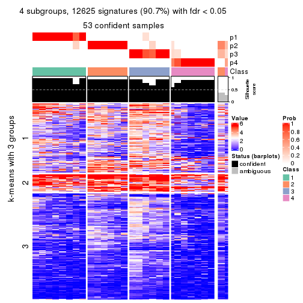
get_signatures(res, k = 5, scale_rows = FALSE)
get_signatures(res, k = 6, scale_rows = FALSE)
Compare the overlap of signatures from different k:
compare_signatures(res)
get_signature() returns a data frame invisibly. TO get the list of signatures, the function
call should be assigned to a variable explicitly. In following code, if plot argument is set
to FALSE, no heatmap is plotted while only the differential analysis is performed.
# code only for demonstration
tb = get_signature(res, k = ..., plot = FALSE)
An example of the output of tb is:
#> which_row fdr mean_1 mean_2 scaled_mean_1 scaled_mean_2 km
#> 1 38 0.042760348 8.373488 9.131774 -0.5533452 0.5164555 1
#> 2 40 0.018707592 7.106213 8.469186 -0.6173731 0.5762149 1
#> 3 55 0.019134737 10.221463 11.207825 -0.6159697 0.5749050 1
#> 4 59 0.006059896 5.921854 7.869574 -0.6899429 0.6439467 1
#> 5 60 0.018055526 8.928898 10.211722 -0.6204761 0.5791110 1
#> 6 98 0.009384629 15.714769 14.887706 0.6635654 -0.6193277 2
...
The columns in tb are:
which_row: row indices corresponding to the input matrix.fdr: FDR for the differential test. mean_x: The mean value in group x.scaled_mean_x: The mean value in group x after rows are scaled.km: Row groups if k-means clustering is applied to rows.UMAP plot which shows how samples are separated.
dimension_reduction(res, k = 2, method = "UMAP")
dimension_reduction(res, k = 3, method = "UMAP")
dimension_reduction(res, k = 4, method = "UMAP")
dimension_reduction(res, k = 5, method = "UMAP")
dimension_reduction(res, k = 6, method = "UMAP")
Following heatmap shows how subgroups are split when increasing k:
collect_classes(res)
If matrix rows can be associated to genes, consider to use functional_enrichment(res,
...) to perform function enrichment for the signature genes. See this vignette for more detailed explanations.
The object with results only for a single top-value method and a single partition method can be extracted as:
res = res_list["SD", "mclust"]
# you can also extract it by
# res = res_list["SD:mclust"]
A summary of res and all the functions that can be applied to it:
res
#> A 'ConsensusPartition' object with k = 2, 3, 4, 5, 6.
#> On a matrix with 13917 rows and 56 columns.
#> Top rows (1000, 2000, 3000, 4000, 5000) are extracted by 'SD' method.
#> Subgroups are detected by 'mclust' method.
#> Performed in total 1250 partitions by row resampling.
#> Best k for subgroups seems to be 6.
#>
#> Following methods can be applied to this 'ConsensusPartition' object:
#> [1] "cola_report" "collect_classes" "collect_plots"
#> [4] "collect_stats" "colnames" "compare_signatures"
#> [7] "consensus_heatmap" "dimension_reduction" "functional_enrichment"
#> [10] "get_anno_col" "get_anno" "get_classes"
#> [13] "get_consensus" "get_matrix" "get_membership"
#> [16] "get_param" "get_signatures" "get_stats"
#> [19] "is_best_k" "is_stable_k" "membership_heatmap"
#> [22] "ncol" "nrow" "plot_ecdf"
#> [25] "rownames" "select_partition_number" "show"
#> [28] "suggest_best_k" "test_to_known_factors"
collect_plots() function collects all the plots made from res for all k (number of partitions)
into one single page to provide an easy and fast comparison between different k.
collect_plots(res)

The plots are:
k and the heatmap of
predicted classes for each k.k.k.k.All the plots in panels can be made by individual functions and they are plotted later in this section.
select_partition_number() produces several plots showing different
statistics for choosing “optimized” k. There are following statistics:
k;k, the area increased is defined as \(A_k - A_{k-1}\).The detailed explanations of these statistics can be found in the cola vignette.
Generally speaking, lower PAC score, higher mean silhouette score or higher
concordance corresponds to better partition. Rand index and Jaccard index
measure how similar the current partition is compared to partition with k-1.
If they are too similar, we won't accept k is better than k-1.
select_partition_number(res)
The numeric values for all these statistics can be obtained by get_stats().
get_stats(res)
#> k 1-PAC mean_silhouette concordance area_increased Rand Jaccard
#> 2 2 0.532 0.944 0.955 0.3634 0.657 0.657
#> 3 3 0.572 0.633 0.825 0.6753 0.727 0.585
#> 4 4 0.997 0.975 0.985 0.2499 0.855 0.622
#> 5 5 0.961 0.895 0.956 0.0447 0.945 0.779
#> 6 6 0.919 0.883 0.931 0.0463 0.961 0.805
suggest_best_k() suggests the best \(k\) based on these statistics. The rules are as follows:
suggest_best_k(res)
#> [1] 6
#> attr(,"optional")
#> [1] 4 5
There is also optional best \(k\) = 4 5 that is worth to check.
Following shows the table of the partitions (You need to click the show/hide
code output link to see it). The membership matrix (columns with name p*)
is inferred by
clue::cl_consensus()
function with the SE method. Basically the value in the membership matrix
represents the probability to belong to a certain group. The finall class
label for an item is determined with the group with highest probability it
belongs to.
In get_classes() function, the entropy is calculated from the membership
matrix and the silhouette score is calculated from the consensus matrix.
cbind(get_classes(res, k = 2), get_membership(res, k = 2))
#> class entropy silhouette p1 p2
#> SRR1975508 2 0.000 1.000 0.000 1.000
#> SRR1975507 2 0.000 1.000 0.000 1.000
#> SRR1975506 2 0.000 1.000 0.000 1.000
#> SRR1975505 2 0.000 1.000 0.000 1.000
#> SRR1975503 1 0.000 0.936 1.000 0.000
#> SRR1975504 1 0.000 0.936 1.000 0.000
#> SRR1975501 1 0.552 0.918 0.872 0.128
#> SRR1975502 1 0.552 0.918 0.872 0.128
#> SRR1975499 1 0.000 0.936 1.000 0.000
#> SRR1975500 1 0.000 0.936 1.000 0.000
#> SRR1975497 1 0.552 0.918 0.872 0.128
#> SRR1975498 1 0.552 0.918 0.872 0.128
#> SRR1975493 1 0.000 0.936 1.000 0.000
#> SRR1975494 1 0.000 0.936 1.000 0.000
#> SRR1975495 1 0.552 0.918 0.872 0.128
#> SRR1975496 1 0.552 0.918 0.872 0.128
#> SRR1975491 1 0.506 0.921 0.888 0.112
#> SRR1975492 1 0.506 0.921 0.888 0.112
#> SRR1975489 1 0.000 0.936 1.000 0.000
#> SRR1975490 1 0.000 0.936 1.000 0.000
#> SRR1975487 1 0.000 0.936 1.000 0.000
#> SRR1975488 1 0.000 0.936 1.000 0.000
#> SRR1975485 1 0.000 0.936 1.000 0.000
#> SRR1975486 1 0.000 0.936 1.000 0.000
#> SRR1975483 1 0.552 0.918 0.872 0.128
#> SRR1975484 1 0.552 0.918 0.872 0.128
#> SRR1975481 1 0.552 0.918 0.872 0.128
#> SRR1975482 1 0.552 0.918 0.872 0.128
#> SRR1975477 2 0.000 1.000 0.000 1.000
#> SRR1975478 2 0.000 1.000 0.000 1.000
#> SRR1975479 1 0.000 0.936 1.000 0.000
#> SRR1975480 1 0.000 0.936 1.000 0.000
#> SRR1975475 1 0.000 0.936 1.000 0.000
#> SRR1975476 1 0.000 0.936 1.000 0.000
#> SRR1975473 2 0.000 1.000 0.000 1.000
#> SRR1975474 2 0.000 1.000 0.000 1.000
#> SRR1975471 1 0.552 0.918 0.872 0.128
#> SRR1975472 1 0.552 0.918 0.872 0.128
#> SRR1975469 1 0.552 0.918 0.872 0.128
#> SRR1975470 1 0.552 0.918 0.872 0.128
#> SRR1975467 1 0.000 0.936 1.000 0.000
#> SRR1975468 1 0.000 0.936 1.000 0.000
#> SRR1975465 1 0.000 0.936 1.000 0.000
#> SRR1975466 1 0.000 0.936 1.000 0.000
#> SRR1975463 1 0.000 0.936 1.000 0.000
#> SRR1975464 1 0.000 0.936 1.000 0.000
#> SRR1975461 1 0.552 0.918 0.872 0.128
#> SRR1975462 1 0.552 0.918 0.872 0.128
#> SRR1975459 1 0.000 0.936 1.000 0.000
#> SRR1975460 1 0.000 0.936 1.000 0.000
#> SRR1975457 2 0.000 1.000 0.000 1.000
#> SRR1975458 2 0.000 1.000 0.000 1.000
#> SRR1975455 2 0.000 1.000 0.000 1.000
#> SRR1975456 2 0.000 1.000 0.000 1.000
#> SRR1975453 1 0.552 0.918 0.872 0.128
#> SRR1975454 1 0.552 0.918 0.872 0.128
cbind(get_classes(res, k = 3), get_membership(res, k = 3))
#> class entropy silhouette p1 p2 p3
#> SRR1975508 3 0.0000 1.0000 0.000 0.000 1.000
#> SRR1975507 3 0.0000 1.0000 0.000 0.000 1.000
#> SRR1975506 3 0.0000 1.0000 0.000 0.000 1.000
#> SRR1975505 3 0.0000 1.0000 0.000 0.000 1.000
#> SRR1975503 1 0.9566 0.3276 0.424 0.380 0.196
#> SRR1975504 1 0.9566 0.3276 0.424 0.380 0.196
#> SRR1975501 2 0.6225 0.0938 0.432 0.568 0.000
#> SRR1975502 2 0.6225 0.0938 0.432 0.568 0.000
#> SRR1975499 1 0.9633 0.3455 0.424 0.368 0.208
#> SRR1975500 1 0.9633 0.3455 0.424 0.368 0.208
#> SRR1975497 1 0.0000 0.6366 1.000 0.000 0.000
#> SRR1975498 1 0.0000 0.6366 1.000 0.000 0.000
#> SRR1975493 2 0.0237 0.8025 0.000 0.996 0.004
#> SRR1975494 2 0.0237 0.8025 0.000 0.996 0.004
#> SRR1975495 1 0.0000 0.6366 1.000 0.000 0.000
#> SRR1975496 1 0.0000 0.6366 1.000 0.000 0.000
#> SRR1975491 2 0.6215 0.1003 0.428 0.572 0.000
#> SRR1975492 2 0.6215 0.1003 0.428 0.572 0.000
#> SRR1975489 1 0.9647 0.3531 0.428 0.360 0.212
#> SRR1975490 1 0.9647 0.3531 0.428 0.360 0.212
#> SRR1975487 1 0.9653 0.3493 0.424 0.364 0.212
#> SRR1975488 1 0.9653 0.3493 0.424 0.364 0.212
#> SRR1975485 1 0.9621 0.3539 0.432 0.360 0.208
#> SRR1975486 1 0.9621 0.3539 0.432 0.360 0.208
#> SRR1975483 1 0.0000 0.6366 1.000 0.000 0.000
#> SRR1975484 1 0.0000 0.6366 1.000 0.000 0.000
#> SRR1975481 1 0.0000 0.6366 1.000 0.000 0.000
#> SRR1975482 1 0.0000 0.6366 1.000 0.000 0.000
#> SRR1975477 3 0.0000 1.0000 0.000 0.000 1.000
#> SRR1975478 3 0.0000 1.0000 0.000 0.000 1.000
#> SRR1975479 1 0.9647 0.3531 0.428 0.360 0.212
#> SRR1975480 1 0.9647 0.3531 0.428 0.360 0.212
#> SRR1975475 1 0.9672 0.3469 0.424 0.360 0.216
#> SRR1975476 1 0.9672 0.3469 0.424 0.360 0.216
#> SRR1975473 3 0.0000 1.0000 0.000 0.000 1.000
#> SRR1975474 3 0.0000 1.0000 0.000 0.000 1.000
#> SRR1975471 1 0.0000 0.6366 1.000 0.000 0.000
#> SRR1975472 1 0.0000 0.6366 1.000 0.000 0.000
#> SRR1975469 1 0.0000 0.6366 1.000 0.000 0.000
#> SRR1975470 1 0.0000 0.6366 1.000 0.000 0.000
#> SRR1975467 2 0.0237 0.8025 0.000 0.996 0.004
#> SRR1975468 2 0.0237 0.8025 0.000 0.996 0.004
#> SRR1975465 2 0.0237 0.8025 0.000 0.996 0.004
#> SRR1975466 2 0.0237 0.8025 0.000 0.996 0.004
#> SRR1975463 2 0.0237 0.8025 0.000 0.996 0.004
#> SRR1975464 2 0.0237 0.8025 0.000 0.996 0.004
#> SRR1975461 1 0.0000 0.6366 1.000 0.000 0.000
#> SRR1975462 1 0.0000 0.6366 1.000 0.000 0.000
#> SRR1975459 2 0.0237 0.8025 0.000 0.996 0.004
#> SRR1975460 2 0.0237 0.8025 0.000 0.996 0.004
#> SRR1975457 3 0.0000 1.0000 0.000 0.000 1.000
#> SRR1975458 3 0.0000 1.0000 0.000 0.000 1.000
#> SRR1975455 3 0.0000 1.0000 0.000 0.000 1.000
#> SRR1975456 3 0.0000 1.0000 0.000 0.000 1.000
#> SRR1975453 1 0.0000 0.6366 1.000 0.000 0.000
#> SRR1975454 1 0.0000 0.6366 1.000 0.000 0.000
cbind(get_classes(res, k = 4), get_membership(res, k = 4))
#> class entropy silhouette p1 p2 p3 p4
#> SRR1975508 3 0.0000 1.000 0.000 0.000 1.000 0.000
#> SRR1975507 3 0.0000 1.000 0.000 0.000 1.000 0.000
#> SRR1975506 3 0.0000 1.000 0.000 0.000 1.000 0.000
#> SRR1975505 3 0.0000 1.000 0.000 0.000 1.000 0.000
#> SRR1975503 4 0.1584 0.959 0.000 0.036 0.012 0.952
#> SRR1975504 4 0.1584 0.959 0.000 0.036 0.012 0.952
#> SRR1975501 2 0.0672 0.974 0.008 0.984 0.000 0.008
#> SRR1975502 2 0.0672 0.974 0.008 0.984 0.000 0.008
#> SRR1975499 4 0.0188 0.990 0.000 0.004 0.000 0.996
#> SRR1975500 4 0.0188 0.990 0.000 0.004 0.000 0.996
#> SRR1975497 1 0.0000 0.971 1.000 0.000 0.000 0.000
#> SRR1975498 1 0.0000 0.971 1.000 0.000 0.000 0.000
#> SRR1975493 2 0.1474 0.951 0.000 0.948 0.052 0.000
#> SRR1975494 2 0.1474 0.951 0.000 0.948 0.052 0.000
#> SRR1975495 1 0.0000 0.971 1.000 0.000 0.000 0.000
#> SRR1975496 1 0.0000 0.971 1.000 0.000 0.000 0.000
#> SRR1975491 2 0.0672 0.974 0.008 0.984 0.000 0.008
#> SRR1975492 2 0.0672 0.974 0.008 0.984 0.000 0.008
#> SRR1975489 4 0.0000 0.993 0.000 0.000 0.000 1.000
#> SRR1975490 4 0.0000 0.993 0.000 0.000 0.000 1.000
#> SRR1975487 4 0.0000 0.993 0.000 0.000 0.000 1.000
#> SRR1975488 4 0.0000 0.993 0.000 0.000 0.000 1.000
#> SRR1975485 4 0.0000 0.993 0.000 0.000 0.000 1.000
#> SRR1975486 4 0.0000 0.993 0.000 0.000 0.000 1.000
#> SRR1975483 1 0.0000 0.971 1.000 0.000 0.000 0.000
#> SRR1975484 1 0.0000 0.971 1.000 0.000 0.000 0.000
#> SRR1975481 1 0.0000 0.971 1.000 0.000 0.000 0.000
#> SRR1975482 1 0.0000 0.971 1.000 0.000 0.000 0.000
#> SRR1975477 3 0.0000 1.000 0.000 0.000 1.000 0.000
#> SRR1975478 3 0.0000 1.000 0.000 0.000 1.000 0.000
#> SRR1975479 4 0.0000 0.993 0.000 0.000 0.000 1.000
#> SRR1975480 4 0.0000 0.993 0.000 0.000 0.000 1.000
#> SRR1975475 4 0.0000 0.993 0.000 0.000 0.000 1.000
#> SRR1975476 4 0.0000 0.993 0.000 0.000 0.000 1.000
#> SRR1975473 3 0.0000 1.000 0.000 0.000 1.000 0.000
#> SRR1975474 3 0.0000 1.000 0.000 0.000 1.000 0.000
#> SRR1975471 1 0.0000 0.971 1.000 0.000 0.000 0.000
#> SRR1975472 1 0.0000 0.971 1.000 0.000 0.000 0.000
#> SRR1975469 1 0.0000 0.971 1.000 0.000 0.000 0.000
#> SRR1975470 1 0.0000 0.971 1.000 0.000 0.000 0.000
#> SRR1975467 2 0.2124 0.935 0.000 0.924 0.068 0.008
#> SRR1975468 2 0.2124 0.935 0.000 0.924 0.068 0.008
#> SRR1975465 2 0.0000 0.976 0.000 1.000 0.000 0.000
#> SRR1975466 2 0.0000 0.976 0.000 1.000 0.000 0.000
#> SRR1975463 2 0.0188 0.976 0.000 0.996 0.004 0.000
#> SRR1975464 2 0.0188 0.976 0.000 0.996 0.004 0.000
#> SRR1975461 1 0.2814 0.875 0.868 0.000 0.132 0.000
#> SRR1975462 1 0.2814 0.875 0.868 0.000 0.132 0.000
#> SRR1975459 2 0.0000 0.976 0.000 1.000 0.000 0.000
#> SRR1975460 2 0.0000 0.976 0.000 1.000 0.000 0.000
#> SRR1975457 3 0.0000 1.000 0.000 0.000 1.000 0.000
#> SRR1975458 3 0.0000 1.000 0.000 0.000 1.000 0.000
#> SRR1975455 3 0.0000 1.000 0.000 0.000 1.000 0.000
#> SRR1975456 3 0.0000 1.000 0.000 0.000 1.000 0.000
#> SRR1975453 1 0.2081 0.919 0.916 0.000 0.084 0.000
#> SRR1975454 1 0.2081 0.919 0.916 0.000 0.084 0.000
cbind(get_classes(res, k = 5), get_membership(res, k = 5))
#> class entropy silhouette p1 p2 p3 p4 p5
#> SRR1975508 3 0.0000 1.000 0.000 0.000 1 0.000 0.000
#> SRR1975507 3 0.0000 1.000 0.000 0.000 1 0.000 0.000
#> SRR1975506 3 0.0000 1.000 0.000 0.000 1 0.000 0.000
#> SRR1975505 3 0.0000 1.000 0.000 0.000 1 0.000 0.000
#> SRR1975503 5 0.4283 0.171 0.000 0.000 0 0.456 0.544
#> SRR1975504 5 0.4283 0.171 0.000 0.000 0 0.456 0.544
#> SRR1975501 5 0.0162 0.707 0.004 0.000 0 0.000 0.996
#> SRR1975502 5 0.0162 0.707 0.004 0.000 0 0.000 0.996
#> SRR1975499 4 0.3684 0.556 0.000 0.000 0 0.720 0.280
#> SRR1975500 4 0.3684 0.556 0.000 0.000 0 0.720 0.280
#> SRR1975497 1 0.0162 0.996 0.996 0.000 0 0.000 0.004
#> SRR1975498 1 0.0162 0.996 0.996 0.000 0 0.000 0.004
#> SRR1975493 2 0.0000 1.000 0.000 1.000 0 0.000 0.000
#> SRR1975494 2 0.0000 1.000 0.000 1.000 0 0.000 0.000
#> SRR1975495 1 0.0000 0.999 1.000 0.000 0 0.000 0.000
#> SRR1975496 1 0.0000 0.999 1.000 0.000 0 0.000 0.000
#> SRR1975491 5 0.0000 0.708 0.000 0.000 0 0.000 1.000
#> SRR1975492 5 0.0000 0.708 0.000 0.000 0 0.000 1.000
#> SRR1975489 4 0.0000 0.930 0.000 0.000 0 1.000 0.000
#> SRR1975490 4 0.0000 0.930 0.000 0.000 0 1.000 0.000
#> SRR1975487 4 0.0000 0.930 0.000 0.000 0 1.000 0.000
#> SRR1975488 4 0.0000 0.930 0.000 0.000 0 1.000 0.000
#> SRR1975485 4 0.0000 0.930 0.000 0.000 0 1.000 0.000
#> SRR1975486 4 0.0000 0.930 0.000 0.000 0 1.000 0.000
#> SRR1975483 1 0.0000 0.999 1.000 0.000 0 0.000 0.000
#> SRR1975484 1 0.0000 0.999 1.000 0.000 0 0.000 0.000
#> SRR1975481 1 0.0000 0.999 1.000 0.000 0 0.000 0.000
#> SRR1975482 1 0.0000 0.999 1.000 0.000 0 0.000 0.000
#> SRR1975477 3 0.0000 1.000 0.000 0.000 1 0.000 0.000
#> SRR1975478 3 0.0000 1.000 0.000 0.000 1 0.000 0.000
#> SRR1975479 4 0.0404 0.929 0.000 0.000 0 0.988 0.012
#> SRR1975480 4 0.0404 0.929 0.000 0.000 0 0.988 0.012
#> SRR1975475 4 0.0404 0.929 0.000 0.000 0 0.988 0.012
#> SRR1975476 4 0.0404 0.929 0.000 0.000 0 0.988 0.012
#> SRR1975473 3 0.0000 1.000 0.000 0.000 1 0.000 0.000
#> SRR1975474 3 0.0000 1.000 0.000 0.000 1 0.000 0.000
#> SRR1975471 1 0.0000 0.999 1.000 0.000 0 0.000 0.000
#> SRR1975472 1 0.0000 0.999 1.000 0.000 0 0.000 0.000
#> SRR1975469 1 0.0000 0.999 1.000 0.000 0 0.000 0.000
#> SRR1975470 1 0.0000 0.999 1.000 0.000 0 0.000 0.000
#> SRR1975467 5 0.4283 0.270 0.000 0.456 0 0.000 0.544
#> SRR1975468 5 0.4283 0.270 0.000 0.456 0 0.000 0.544
#> SRR1975465 2 0.0000 1.000 0.000 1.000 0 0.000 0.000
#> SRR1975466 2 0.0000 1.000 0.000 1.000 0 0.000 0.000
#> SRR1975463 2 0.0000 1.000 0.000 1.000 0 0.000 0.000
#> SRR1975464 2 0.0000 1.000 0.000 1.000 0 0.000 0.000
#> SRR1975461 1 0.0000 0.999 1.000 0.000 0 0.000 0.000
#> SRR1975462 1 0.0000 0.999 1.000 0.000 0 0.000 0.000
#> SRR1975459 2 0.0000 1.000 0.000 1.000 0 0.000 0.000
#> SRR1975460 2 0.0000 1.000 0.000 1.000 0 0.000 0.000
#> SRR1975457 3 0.0000 1.000 0.000 0.000 1 0.000 0.000
#> SRR1975458 3 0.0000 1.000 0.000 0.000 1 0.000 0.000
#> SRR1975455 3 0.0000 1.000 0.000 0.000 1 0.000 0.000
#> SRR1975456 3 0.0000 1.000 0.000 0.000 1 0.000 0.000
#> SRR1975453 1 0.0000 0.999 1.000 0.000 0 0.000 0.000
#> SRR1975454 1 0.0000 0.999 1.000 0.000 0 0.000 0.000
cbind(get_classes(res, k = 6), get_membership(res, k = 6))
#> class entropy silhouette p1 p2 p3 p4 p5 p6
#> SRR1975508 5 0.0000 1.000 0.000 0.000 0.000 0.000 1 0.000
#> SRR1975507 5 0.0000 1.000 0.000 0.000 0.000 0.000 1 0.000
#> SRR1975506 5 0.0000 1.000 0.000 0.000 0.000 0.000 1 0.000
#> SRR1975505 5 0.0000 1.000 0.000 0.000 0.000 0.000 1 0.000
#> SRR1975503 6 0.5495 0.146 0.000 0.000 0.128 0.404 0 0.468
#> SRR1975504 6 0.5495 0.146 0.000 0.000 0.128 0.404 0 0.468
#> SRR1975501 6 0.0146 0.668 0.004 0.000 0.000 0.000 0 0.996
#> SRR1975502 6 0.0146 0.668 0.004 0.000 0.000 0.000 0 0.996
#> SRR1975499 4 0.4847 0.526 0.000 0.000 0.124 0.656 0 0.220
#> SRR1975500 4 0.4847 0.526 0.000 0.000 0.124 0.656 0 0.220
#> SRR1975497 1 0.0000 0.995 1.000 0.000 0.000 0.000 0 0.000
#> SRR1975498 1 0.0000 0.995 1.000 0.000 0.000 0.000 0 0.000
#> SRR1975493 2 0.0000 1.000 0.000 1.000 0.000 0.000 0 0.000
#> SRR1975494 2 0.0000 1.000 0.000 1.000 0.000 0.000 0 0.000
#> SRR1975495 1 0.0547 0.979 0.980 0.000 0.020 0.000 0 0.000
#> SRR1975496 1 0.0547 0.979 0.980 0.000 0.020 0.000 0 0.000
#> SRR1975491 6 0.0000 0.669 0.000 0.000 0.000 0.000 0 1.000
#> SRR1975492 6 0.0000 0.669 0.000 0.000 0.000 0.000 0 1.000
#> SRR1975489 4 0.0000 0.905 0.000 0.000 0.000 1.000 0 0.000
#> SRR1975490 4 0.0000 0.905 0.000 0.000 0.000 1.000 0 0.000
#> SRR1975487 4 0.0000 0.905 0.000 0.000 0.000 1.000 0 0.000
#> SRR1975488 4 0.0000 0.905 0.000 0.000 0.000 1.000 0 0.000
#> SRR1975485 4 0.0000 0.905 0.000 0.000 0.000 1.000 0 0.000
#> SRR1975486 4 0.0000 0.905 0.000 0.000 0.000 1.000 0 0.000
#> SRR1975483 1 0.0000 0.995 1.000 0.000 0.000 0.000 0 0.000
#> SRR1975484 1 0.0000 0.995 1.000 0.000 0.000 0.000 0 0.000
#> SRR1975481 1 0.0000 0.995 1.000 0.000 0.000 0.000 0 0.000
#> SRR1975482 1 0.0000 0.995 1.000 0.000 0.000 0.000 0 0.000
#> SRR1975477 5 0.0000 1.000 0.000 0.000 0.000 0.000 1 0.000
#> SRR1975478 5 0.0000 1.000 0.000 0.000 0.000 0.000 1 0.000
#> SRR1975479 4 0.1267 0.898 0.000 0.000 0.060 0.940 0 0.000
#> SRR1975480 4 0.1267 0.898 0.000 0.000 0.060 0.940 0 0.000
#> SRR1975475 4 0.1267 0.898 0.000 0.000 0.060 0.940 0 0.000
#> SRR1975476 4 0.1267 0.898 0.000 0.000 0.060 0.940 0 0.000
#> SRR1975473 5 0.0000 1.000 0.000 0.000 0.000 0.000 1 0.000
#> SRR1975474 5 0.0000 1.000 0.000 0.000 0.000 0.000 1 0.000
#> SRR1975471 3 0.2135 1.000 0.128 0.000 0.872 0.000 0 0.000
#> SRR1975472 3 0.2135 1.000 0.128 0.000 0.872 0.000 0 0.000
#> SRR1975469 1 0.0000 0.995 1.000 0.000 0.000 0.000 0 0.000
#> SRR1975470 1 0.0000 0.995 1.000 0.000 0.000 0.000 0 0.000
#> SRR1975467 6 0.5189 0.245 0.000 0.444 0.088 0.000 0 0.468
#> SRR1975468 6 0.5189 0.245 0.000 0.444 0.088 0.000 0 0.468
#> SRR1975465 2 0.0000 1.000 0.000 1.000 0.000 0.000 0 0.000
#> SRR1975466 2 0.0000 1.000 0.000 1.000 0.000 0.000 0 0.000
#> SRR1975463 2 0.0000 1.000 0.000 1.000 0.000 0.000 0 0.000
#> SRR1975464 2 0.0000 1.000 0.000 1.000 0.000 0.000 0 0.000
#> SRR1975461 3 0.2135 1.000 0.128 0.000 0.872 0.000 0 0.000
#> SRR1975462 3 0.2135 1.000 0.128 0.000 0.872 0.000 0 0.000
#> SRR1975459 2 0.0000 1.000 0.000 1.000 0.000 0.000 0 0.000
#> SRR1975460 2 0.0000 1.000 0.000 1.000 0.000 0.000 0 0.000
#> SRR1975457 5 0.0000 1.000 0.000 0.000 0.000 0.000 1 0.000
#> SRR1975458 5 0.0000 1.000 0.000 0.000 0.000 0.000 1 0.000
#> SRR1975455 5 0.0000 1.000 0.000 0.000 0.000 0.000 1 0.000
#> SRR1975456 5 0.0000 1.000 0.000 0.000 0.000 0.000 1 0.000
#> SRR1975453 3 0.2135 1.000 0.128 0.000 0.872 0.000 0 0.000
#> SRR1975454 3 0.2135 1.000 0.128 0.000 0.872 0.000 0 0.000
Heatmaps for the consensus matrix. It visualizes the probability of two samples to be in a same group.
consensus_heatmap(res, k = 2)

consensus_heatmap(res, k = 3)
consensus_heatmap(res, k = 4)
consensus_heatmap(res, k = 5)
consensus_heatmap(res, k = 6)
Heatmaps for the membership of samples in all partitions to see how consistent they are:
membership_heatmap(res, k = 2)
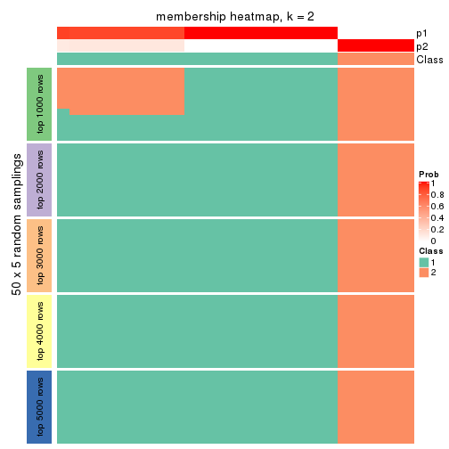
membership_heatmap(res, k = 3)
membership_heatmap(res, k = 4)
membership_heatmap(res, k = 5)
membership_heatmap(res, k = 6)
As soon as we have had the classes for columns, we can look for signatures which are significantly different between classes which can be candidate marks for certain classes. Following are the heatmaps for signatures.
Signature heatmaps where rows are scaled:
get_signatures(res, k = 2)
get_signatures(res, k = 3)
get_signatures(res, k = 4)
get_signatures(res, k = 5)
get_signatures(res, k = 6)
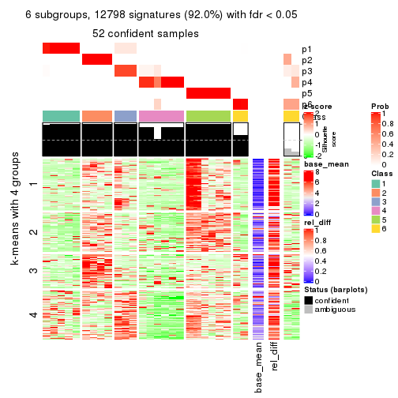
Signature heatmaps where rows are not scaled:
get_signatures(res, k = 2, scale_rows = FALSE)
get_signatures(res, k = 3, scale_rows = FALSE)
get_signatures(res, k = 4, scale_rows = FALSE)
get_signatures(res, k = 5, scale_rows = FALSE)
get_signatures(res, k = 6, scale_rows = FALSE)
Compare the overlap of signatures from different k:
compare_signatures(res)
get_signature() returns a data frame invisibly. TO get the list of signatures, the function
call should be assigned to a variable explicitly. In following code, if plot argument is set
to FALSE, no heatmap is plotted while only the differential analysis is performed.
# code only for demonstration
tb = get_signature(res, k = ..., plot = FALSE)
An example of the output of tb is:
#> which_row fdr mean_1 mean_2 scaled_mean_1 scaled_mean_2 km
#> 1 38 0.042760348 8.373488 9.131774 -0.5533452 0.5164555 1
#> 2 40 0.018707592 7.106213 8.469186 -0.6173731 0.5762149 1
#> 3 55 0.019134737 10.221463 11.207825 -0.6159697 0.5749050 1
#> 4 59 0.006059896 5.921854 7.869574 -0.6899429 0.6439467 1
#> 5 60 0.018055526 8.928898 10.211722 -0.6204761 0.5791110 1
#> 6 98 0.009384629 15.714769 14.887706 0.6635654 -0.6193277 2
...
The columns in tb are:
which_row: row indices corresponding to the input matrix.fdr: FDR for the differential test. mean_x: The mean value in group x.scaled_mean_x: The mean value in group x after rows are scaled.km: Row groups if k-means clustering is applied to rows.UMAP plot which shows how samples are separated.
dimension_reduction(res, k = 2, method = "UMAP")
dimension_reduction(res, k = 3, method = "UMAP")
dimension_reduction(res, k = 4, method = "UMAP")
dimension_reduction(res, k = 5, method = "UMAP")
dimension_reduction(res, k = 6, method = "UMAP")
Following heatmap shows how subgroups are split when increasing k:
collect_classes(res)
If matrix rows can be associated to genes, consider to use functional_enrichment(res,
...) to perform function enrichment for the signature genes. See this vignette for more detailed explanations.
The object with results only for a single top-value method and a single partition method can be extracted as:
res = res_list["SD", "NMF"]
# you can also extract it by
# res = res_list["SD:NMF"]
A summary of res and all the functions that can be applied to it:
res
#> A 'ConsensusPartition' object with k = 2, 3, 4, 5, 6.
#> On a matrix with 13917 rows and 56 columns.
#> Top rows (1000, 2000, 3000, 4000, 5000) are extracted by 'SD' method.
#> Subgroups are detected by 'NMF' method.
#> Performed in total 1250 partitions by row resampling.
#> Best k for subgroups seems to be 2.
#>
#> Following methods can be applied to this 'ConsensusPartition' object:
#> [1] "cola_report" "collect_classes" "collect_plots"
#> [4] "collect_stats" "colnames" "compare_signatures"
#> [7] "consensus_heatmap" "dimension_reduction" "functional_enrichment"
#> [10] "get_anno_col" "get_anno" "get_classes"
#> [13] "get_consensus" "get_matrix" "get_membership"
#> [16] "get_param" "get_signatures" "get_stats"
#> [19] "is_best_k" "is_stable_k" "membership_heatmap"
#> [22] "ncol" "nrow" "plot_ecdf"
#> [25] "rownames" "select_partition_number" "show"
#> [28] "suggest_best_k" "test_to_known_factors"
collect_plots() function collects all the plots made from res for all k (number of partitions)
into one single page to provide an easy and fast comparison between different k.
collect_plots(res)
The plots are:
k and the heatmap of
predicted classes for each k.k.k.k.All the plots in panels can be made by individual functions and they are plotted later in this section.
select_partition_number() produces several plots showing different
statistics for choosing “optimized” k. There are following statistics:
k;k, the area increased is defined as \(A_k - A_{k-1}\).The detailed explanations of these statistics can be found in the cola vignette.
Generally speaking, lower PAC score, higher mean silhouette score or higher
concordance corresponds to better partition. Rand index and Jaccard index
measure how similar the current partition is compared to partition with k-1.
If they are too similar, we won't accept k is better than k-1.
select_partition_number(res)
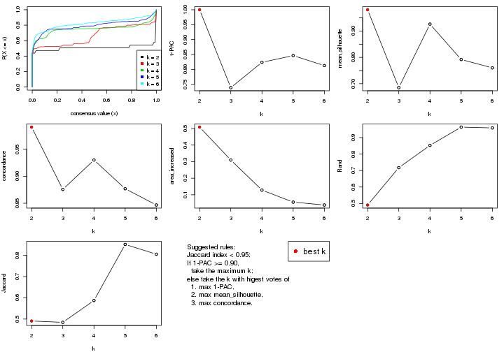
The numeric values for all these statistics can be obtained by get_stats().
get_stats(res)
#> k 1-PAC mean_silhouette concordance area_increased Rand Jaccard
#> 2 2 1.000 0.981 0.991 0.5090 0.491 0.491
#> 3 3 0.739 0.685 0.876 0.3099 0.718 0.485
#> 4 4 0.824 0.926 0.930 0.1281 0.853 0.587
#> 5 5 0.846 0.792 0.877 0.0555 0.964 0.851
#> 6 6 0.813 0.760 0.847 0.0382 0.958 0.805
suggest_best_k() suggests the best \(k\) based on these statistics. The rules are as follows:
suggest_best_k(res)
#> [1] 2
Following shows the table of the partitions (You need to click the show/hide
code output link to see it). The membership matrix (columns with name p*)
is inferred by
clue::cl_consensus()
function with the SE method. Basically the value in the membership matrix
represents the probability to belong to a certain group. The finall class
label for an item is determined with the group with highest probability it
belongs to.
In get_classes() function, the entropy is calculated from the membership
matrix and the silhouette score is calculated from the consensus matrix.
cbind(get_classes(res, k = 2), get_membership(res, k = 2))
#> class entropy silhouette p1 p2
#> SRR1975508 2 0.000 0.983 0.000 1.000
#> SRR1975507 2 0.000 0.983 0.000 1.000
#> SRR1975506 2 0.000 0.983 0.000 1.000
#> SRR1975505 2 0.000 0.983 0.000 1.000
#> SRR1975503 1 0.000 0.998 1.000 0.000
#> SRR1975504 1 0.000 0.998 1.000 0.000
#> SRR1975501 2 0.000 0.983 0.000 1.000
#> SRR1975502 2 0.000 0.983 0.000 1.000
#> SRR1975499 1 0.000 0.998 1.000 0.000
#> SRR1975500 1 0.000 0.998 1.000 0.000
#> SRR1975497 2 0.000 0.983 0.000 1.000
#> SRR1975498 2 0.000 0.983 0.000 1.000
#> SRR1975493 1 0.000 0.998 1.000 0.000
#> SRR1975494 1 0.000 0.998 1.000 0.000
#> SRR1975495 2 0.000 0.983 0.000 1.000
#> SRR1975496 2 0.000 0.983 0.000 1.000
#> SRR1975491 1 0.000 0.998 1.000 0.000
#> SRR1975492 1 0.000 0.998 1.000 0.000
#> SRR1975489 1 0.000 0.998 1.000 0.000
#> SRR1975490 1 0.000 0.998 1.000 0.000
#> SRR1975487 1 0.000 0.998 1.000 0.000
#> SRR1975488 1 0.000 0.998 1.000 0.000
#> SRR1975485 1 0.000 0.998 1.000 0.000
#> SRR1975486 1 0.000 0.998 1.000 0.000
#> SRR1975483 2 0.000 0.983 0.000 1.000
#> SRR1975484 2 0.000 0.983 0.000 1.000
#> SRR1975481 2 0.000 0.983 0.000 1.000
#> SRR1975482 2 0.000 0.983 0.000 1.000
#> SRR1975477 2 0.760 0.727 0.220 0.780
#> SRR1975478 2 0.760 0.727 0.220 0.780
#> SRR1975479 1 0.000 0.998 1.000 0.000
#> SRR1975480 1 0.000 0.998 1.000 0.000
#> SRR1975475 1 0.000 0.998 1.000 0.000
#> SRR1975476 1 0.000 0.998 1.000 0.000
#> SRR1975473 1 0.163 0.976 0.976 0.024
#> SRR1975474 1 0.163 0.976 0.976 0.024
#> SRR1975471 2 0.000 0.983 0.000 1.000
#> SRR1975472 2 0.000 0.983 0.000 1.000
#> SRR1975469 2 0.000 0.983 0.000 1.000
#> SRR1975470 2 0.000 0.983 0.000 1.000
#> SRR1975467 1 0.000 0.998 1.000 0.000
#> SRR1975468 1 0.000 0.998 1.000 0.000
#> SRR1975465 1 0.000 0.998 1.000 0.000
#> SRR1975466 1 0.000 0.998 1.000 0.000
#> SRR1975463 1 0.000 0.998 1.000 0.000
#> SRR1975464 1 0.000 0.998 1.000 0.000
#> SRR1975461 2 0.000 0.983 0.000 1.000
#> SRR1975462 2 0.000 0.983 0.000 1.000
#> SRR1975459 1 0.000 0.998 1.000 0.000
#> SRR1975460 1 0.000 0.998 1.000 0.000
#> SRR1975457 2 0.000 0.983 0.000 1.000
#> SRR1975458 2 0.000 0.983 0.000 1.000
#> SRR1975455 2 0.000 0.983 0.000 1.000
#> SRR1975456 2 0.000 0.983 0.000 1.000
#> SRR1975453 2 0.000 0.983 0.000 1.000
#> SRR1975454 2 0.000 0.983 0.000 1.000
cbind(get_classes(res, k = 3), get_membership(res, k = 3))
#> class entropy silhouette p1 p2 p3
#> SRR1975508 3 0.6291 0.369 0.468 0.000 0.532
#> SRR1975507 3 0.6295 0.360 0.472 0.000 0.528
#> SRR1975506 3 0.6295 0.360 0.472 0.000 0.528
#> SRR1975505 3 0.6280 0.383 0.460 0.000 0.540
#> SRR1975503 2 0.1643 0.909 0.000 0.956 0.044
#> SRR1975504 2 0.1643 0.909 0.000 0.956 0.044
#> SRR1975501 1 0.6286 0.084 0.536 0.464 0.000
#> SRR1975502 1 0.6286 0.084 0.536 0.464 0.000
#> SRR1975499 2 0.5058 0.723 0.000 0.756 0.244
#> SRR1975500 2 0.4974 0.733 0.000 0.764 0.236
#> SRR1975497 1 0.0000 0.855 1.000 0.000 0.000
#> SRR1975498 1 0.0000 0.855 1.000 0.000 0.000
#> SRR1975493 2 0.0000 0.932 0.000 1.000 0.000
#> SRR1975494 2 0.0000 0.932 0.000 1.000 0.000
#> SRR1975495 1 0.0000 0.855 1.000 0.000 0.000
#> SRR1975496 1 0.0000 0.855 1.000 0.000 0.000
#> SRR1975491 2 0.0237 0.930 0.004 0.996 0.000
#> SRR1975492 2 0.0237 0.930 0.004 0.996 0.000
#> SRR1975489 3 0.0237 0.732 0.000 0.004 0.996
#> SRR1975490 3 0.0237 0.732 0.000 0.004 0.996
#> SRR1975487 2 0.6307 0.302 0.000 0.512 0.488
#> SRR1975488 3 0.6235 -0.179 0.000 0.436 0.564
#> SRR1975485 3 0.0424 0.730 0.000 0.008 0.992
#> SRR1975486 3 0.0424 0.730 0.000 0.008 0.992
#> SRR1975483 1 0.0000 0.855 1.000 0.000 0.000
#> SRR1975484 1 0.0000 0.855 1.000 0.000 0.000
#> SRR1975481 1 0.0000 0.855 1.000 0.000 0.000
#> SRR1975482 1 0.0000 0.855 1.000 0.000 0.000
#> SRR1975477 3 0.5760 0.545 0.328 0.000 0.672
#> SRR1975478 3 0.5760 0.545 0.328 0.000 0.672
#> SRR1975479 3 0.0237 0.732 0.000 0.004 0.996
#> SRR1975480 3 0.0237 0.732 0.000 0.004 0.996
#> SRR1975475 3 0.0237 0.732 0.000 0.004 0.996
#> SRR1975476 3 0.0237 0.732 0.000 0.004 0.996
#> SRR1975473 3 0.0237 0.731 0.004 0.000 0.996
#> SRR1975474 3 0.0237 0.731 0.004 0.000 0.996
#> SRR1975471 1 0.0000 0.855 1.000 0.000 0.000
#> SRR1975472 1 0.0000 0.855 1.000 0.000 0.000
#> SRR1975469 1 0.0000 0.855 1.000 0.000 0.000
#> SRR1975470 1 0.0000 0.855 1.000 0.000 0.000
#> SRR1975467 2 0.0000 0.932 0.000 1.000 0.000
#> SRR1975468 2 0.0000 0.932 0.000 1.000 0.000
#> SRR1975465 2 0.0000 0.932 0.000 1.000 0.000
#> SRR1975466 2 0.0000 0.932 0.000 1.000 0.000
#> SRR1975463 2 0.0000 0.932 0.000 1.000 0.000
#> SRR1975464 2 0.0000 0.932 0.000 1.000 0.000
#> SRR1975461 1 0.0424 0.851 0.992 0.000 0.008
#> SRR1975462 1 0.0424 0.851 0.992 0.000 0.008
#> SRR1975459 2 0.0237 0.930 0.004 0.996 0.000
#> SRR1975460 2 0.0237 0.930 0.004 0.996 0.000
#> SRR1975457 1 0.6309 -0.340 0.504 0.000 0.496
#> SRR1975458 1 0.6309 -0.340 0.504 0.000 0.496
#> SRR1975455 3 0.6286 0.376 0.464 0.000 0.536
#> SRR1975456 3 0.6286 0.376 0.464 0.000 0.536
#> SRR1975453 1 0.0424 0.851 0.992 0.000 0.008
#> SRR1975454 1 0.0424 0.851 0.992 0.000 0.008
cbind(get_classes(res, k = 4), get_membership(res, k = 4))
#> class entropy silhouette p1 p2 p3 p4
#> SRR1975508 3 0.0188 0.987 0.000 0.000 0.996 0.004
#> SRR1975507 3 0.0188 0.987 0.000 0.000 0.996 0.004
#> SRR1975506 3 0.0188 0.987 0.000 0.000 0.996 0.004
#> SRR1975505 3 0.0188 0.987 0.000 0.000 0.996 0.004
#> SRR1975503 2 0.2651 0.894 0.096 0.896 0.004 0.004
#> SRR1975504 2 0.2651 0.894 0.096 0.896 0.004 0.004
#> SRR1975501 1 0.3266 0.800 0.832 0.168 0.000 0.000
#> SRR1975502 1 0.3266 0.800 0.832 0.168 0.000 0.000
#> SRR1975499 2 0.3403 0.877 0.112 0.864 0.004 0.020
#> SRR1975500 2 0.3403 0.877 0.112 0.864 0.004 0.020
#> SRR1975497 1 0.2924 0.943 0.884 0.016 0.100 0.000
#> SRR1975498 1 0.2924 0.943 0.884 0.016 0.100 0.000
#> SRR1975493 2 0.0336 0.921 0.008 0.992 0.000 0.000
#> SRR1975494 2 0.0336 0.921 0.008 0.992 0.000 0.000
#> SRR1975495 1 0.2647 0.954 0.880 0.000 0.120 0.000
#> SRR1975496 1 0.2647 0.954 0.880 0.000 0.120 0.000
#> SRR1975491 2 0.0921 0.914 0.028 0.972 0.000 0.000
#> SRR1975492 2 0.1022 0.911 0.032 0.968 0.000 0.000
#> SRR1975489 4 0.0188 0.971 0.000 0.000 0.004 0.996
#> SRR1975490 4 0.0188 0.971 0.000 0.000 0.004 0.996
#> SRR1975487 2 0.6443 0.612 0.112 0.644 0.004 0.240
#> SRR1975488 2 0.6963 0.404 0.112 0.544 0.004 0.340
#> SRR1975485 4 0.0927 0.967 0.008 0.000 0.016 0.976
#> SRR1975486 4 0.0927 0.967 0.008 0.000 0.016 0.976
#> SRR1975483 1 0.2814 0.952 0.868 0.000 0.132 0.000
#> SRR1975484 1 0.2760 0.954 0.872 0.000 0.128 0.000
#> SRR1975481 1 0.2976 0.953 0.872 0.000 0.120 0.008
#> SRR1975482 1 0.2976 0.953 0.872 0.000 0.120 0.008
#> SRR1975477 4 0.1576 0.952 0.004 0.000 0.048 0.948
#> SRR1975478 4 0.1474 0.950 0.000 0.000 0.052 0.948
#> SRR1975479 4 0.0188 0.971 0.000 0.000 0.004 0.996
#> SRR1975480 4 0.0188 0.971 0.000 0.000 0.004 0.996
#> SRR1975475 4 0.3302 0.915 0.096 0.008 0.020 0.876
#> SRR1975476 4 0.3302 0.915 0.096 0.008 0.020 0.876
#> SRR1975473 4 0.0188 0.971 0.000 0.000 0.004 0.996
#> SRR1975474 4 0.0188 0.971 0.000 0.000 0.004 0.996
#> SRR1975471 1 0.2868 0.951 0.864 0.000 0.136 0.000
#> SRR1975472 1 0.2868 0.951 0.864 0.000 0.136 0.000
#> SRR1975469 1 0.2944 0.954 0.868 0.000 0.128 0.004
#> SRR1975470 1 0.2944 0.954 0.868 0.000 0.128 0.004
#> SRR1975467 2 0.1474 0.912 0.052 0.948 0.000 0.000
#> SRR1975468 2 0.1474 0.912 0.052 0.948 0.000 0.000
#> SRR1975465 2 0.0336 0.921 0.008 0.992 0.000 0.000
#> SRR1975466 2 0.0336 0.921 0.008 0.992 0.000 0.000
#> SRR1975463 2 0.0000 0.921 0.000 1.000 0.000 0.000
#> SRR1975464 2 0.0000 0.921 0.000 1.000 0.000 0.000
#> SRR1975461 3 0.0817 0.976 0.024 0.000 0.976 0.000
#> SRR1975462 3 0.0817 0.976 0.024 0.000 0.976 0.000
#> SRR1975459 2 0.0592 0.919 0.016 0.984 0.000 0.000
#> SRR1975460 2 0.0592 0.919 0.016 0.984 0.000 0.000
#> SRR1975457 3 0.0188 0.987 0.000 0.000 0.996 0.004
#> SRR1975458 3 0.0188 0.987 0.000 0.000 0.996 0.004
#> SRR1975455 3 0.0336 0.984 0.000 0.000 0.992 0.008
#> SRR1975456 3 0.0336 0.984 0.000 0.000 0.992 0.008
#> SRR1975453 3 0.0921 0.973 0.028 0.000 0.972 0.000
#> SRR1975454 3 0.0921 0.973 0.028 0.000 0.972 0.000
cbind(get_classes(res, k = 5), get_membership(res, k = 5))
#> class entropy silhouette p1 p2 p3 p4 p5
#> SRR1975508 3 0.1357 0.977 0.048 0.000 0.948 0.000 0.004
#> SRR1975507 3 0.1571 0.980 0.060 0.000 0.936 0.000 0.004
#> SRR1975506 3 0.1571 0.980 0.060 0.000 0.936 0.000 0.004
#> SRR1975505 3 0.1357 0.977 0.048 0.000 0.948 0.000 0.004
#> SRR1975503 2 0.4452 -0.360 0.000 0.500 0.004 0.496 0.000
#> SRR1975504 2 0.4452 -0.360 0.000 0.500 0.004 0.496 0.000
#> SRR1975501 1 0.4731 0.538 0.640 0.328 0.000 0.032 0.000
#> SRR1975502 1 0.4731 0.538 0.640 0.328 0.000 0.032 0.000
#> SRR1975499 4 0.4101 0.603 0.000 0.372 0.000 0.628 0.000
#> SRR1975500 4 0.4101 0.603 0.000 0.372 0.000 0.628 0.000
#> SRR1975497 1 0.1485 0.889 0.948 0.020 0.000 0.032 0.000
#> SRR1975498 1 0.1485 0.889 0.948 0.020 0.000 0.032 0.000
#> SRR1975493 2 0.0404 0.862 0.000 0.988 0.000 0.012 0.000
#> SRR1975494 2 0.0404 0.862 0.000 0.988 0.000 0.012 0.000
#> SRR1975495 1 0.1202 0.895 0.960 0.004 0.004 0.032 0.000
#> SRR1975496 1 0.1202 0.895 0.960 0.004 0.004 0.032 0.000
#> SRR1975491 2 0.1597 0.818 0.048 0.940 0.000 0.012 0.000
#> SRR1975492 2 0.1557 0.815 0.052 0.940 0.000 0.008 0.000
#> SRR1975489 5 0.3010 0.756 0.004 0.000 0.000 0.172 0.824
#> SRR1975490 5 0.3010 0.756 0.004 0.000 0.000 0.172 0.824
#> SRR1975487 4 0.2983 0.692 0.000 0.096 0.000 0.864 0.040
#> SRR1975488 4 0.2903 0.671 0.000 0.080 0.000 0.872 0.048
#> SRR1975485 5 0.4958 0.659 0.000 0.000 0.036 0.372 0.592
#> SRR1975486 5 0.4958 0.659 0.000 0.000 0.036 0.372 0.592
#> SRR1975483 1 0.0290 0.899 0.992 0.000 0.008 0.000 0.000
#> SRR1975484 1 0.0290 0.899 0.992 0.000 0.008 0.000 0.000
#> SRR1975481 1 0.1173 0.895 0.964 0.000 0.004 0.012 0.020
#> SRR1975482 1 0.1173 0.895 0.964 0.000 0.004 0.012 0.020
#> SRR1975477 5 0.2821 0.796 0.012 0.008 0.032 0.052 0.896
#> SRR1975478 5 0.2821 0.796 0.012 0.008 0.032 0.052 0.896
#> SRR1975479 5 0.1041 0.798 0.004 0.000 0.000 0.032 0.964
#> SRR1975480 5 0.1041 0.798 0.004 0.000 0.000 0.032 0.964
#> SRR1975475 5 0.6772 0.609 0.004 0.068 0.076 0.300 0.552
#> SRR1975476 5 0.6757 0.613 0.004 0.068 0.076 0.296 0.556
#> SRR1975473 5 0.1300 0.795 0.028 0.000 0.000 0.016 0.956
#> SRR1975474 5 0.1300 0.795 0.028 0.000 0.000 0.016 0.956
#> SRR1975471 1 0.1740 0.884 0.932 0.000 0.056 0.012 0.000
#> SRR1975472 1 0.1740 0.884 0.932 0.000 0.056 0.012 0.000
#> SRR1975469 1 0.2305 0.881 0.916 0.000 0.044 0.012 0.028
#> SRR1975470 1 0.2305 0.881 0.916 0.000 0.044 0.012 0.028
#> SRR1975467 2 0.1471 0.837 0.004 0.952 0.020 0.024 0.000
#> SRR1975468 2 0.1471 0.837 0.004 0.952 0.020 0.024 0.000
#> SRR1975465 2 0.0162 0.862 0.000 0.996 0.000 0.004 0.000
#> SRR1975466 2 0.0162 0.862 0.000 0.996 0.000 0.004 0.000
#> SRR1975463 2 0.0162 0.862 0.000 0.996 0.000 0.004 0.000
#> SRR1975464 2 0.0162 0.862 0.000 0.996 0.000 0.004 0.000
#> SRR1975461 3 0.1608 0.978 0.072 0.000 0.928 0.000 0.000
#> SRR1975462 3 0.1608 0.978 0.072 0.000 0.928 0.000 0.000
#> SRR1975459 2 0.0609 0.859 0.000 0.980 0.000 0.020 0.000
#> SRR1975460 2 0.0609 0.859 0.000 0.980 0.000 0.020 0.000
#> SRR1975457 3 0.1205 0.972 0.040 0.000 0.956 0.000 0.004
#> SRR1975458 3 0.1205 0.972 0.040 0.000 0.956 0.000 0.004
#> SRR1975455 3 0.2236 0.972 0.068 0.000 0.908 0.000 0.024
#> SRR1975456 3 0.2236 0.972 0.068 0.000 0.908 0.000 0.024
#> SRR1975453 3 0.1732 0.974 0.080 0.000 0.920 0.000 0.000
#> SRR1975454 3 0.1732 0.974 0.080 0.000 0.920 0.000 0.000
cbind(get_classes(res, k = 6), get_membership(res, k = 6))
#> class entropy silhouette p1 p2 p3 p4 p5 p6
#> SRR1975508 3 0.0291 0.9869 0.004 0.000 0.992 0.000 0.000 0.004
#> SRR1975507 3 0.0291 0.9869 0.004 0.000 0.992 0.000 0.000 0.004
#> SRR1975506 3 0.0291 0.9869 0.004 0.000 0.992 0.000 0.000 0.004
#> SRR1975505 3 0.0146 0.9855 0.000 0.000 0.996 0.000 0.000 0.004
#> SRR1975503 4 0.2996 0.8137 0.000 0.228 0.000 0.772 0.000 0.000
#> SRR1975504 4 0.2996 0.8137 0.000 0.228 0.000 0.772 0.000 0.000
#> SRR1975501 1 0.4697 0.0957 0.528 0.432 0.000 0.004 0.000 0.036
#> SRR1975502 1 0.4697 0.0957 0.528 0.432 0.000 0.004 0.000 0.036
#> SRR1975499 4 0.2613 0.8522 0.000 0.140 0.000 0.848 0.000 0.012
#> SRR1975500 4 0.2613 0.8522 0.000 0.140 0.000 0.848 0.000 0.012
#> SRR1975497 1 0.0777 0.7120 0.972 0.000 0.004 0.000 0.000 0.024
#> SRR1975498 1 0.0777 0.7120 0.972 0.000 0.004 0.000 0.000 0.024
#> SRR1975493 2 0.0692 0.9496 0.000 0.976 0.000 0.004 0.000 0.020
#> SRR1975494 2 0.0692 0.9496 0.000 0.976 0.000 0.004 0.000 0.020
#> SRR1975495 1 0.0653 0.7147 0.980 0.000 0.004 0.004 0.000 0.012
#> SRR1975496 1 0.0653 0.7147 0.980 0.000 0.004 0.004 0.000 0.012
#> SRR1975491 2 0.1922 0.9141 0.040 0.924 0.000 0.012 0.000 0.024
#> SRR1975492 2 0.1890 0.9110 0.044 0.924 0.000 0.008 0.000 0.024
#> SRR1975489 5 0.3735 0.4484 0.000 0.000 0.000 0.092 0.784 0.124
#> SRR1975490 5 0.3735 0.4484 0.000 0.000 0.000 0.092 0.784 0.124
#> SRR1975487 4 0.1367 0.7507 0.000 0.012 0.000 0.944 0.000 0.044
#> SRR1975488 4 0.1434 0.7467 0.000 0.012 0.000 0.940 0.000 0.048
#> SRR1975485 6 0.5715 0.5687 0.000 0.000 0.004 0.144 0.384 0.468
#> SRR1975486 6 0.5715 0.5687 0.000 0.000 0.004 0.144 0.384 0.468
#> SRR1975483 1 0.2520 0.7399 0.844 0.000 0.004 0.000 0.000 0.152
#> SRR1975484 1 0.2520 0.7399 0.844 0.000 0.004 0.000 0.000 0.152
#> SRR1975481 1 0.4191 0.7116 0.704 0.000 0.000 0.000 0.056 0.240
#> SRR1975482 1 0.4191 0.7116 0.704 0.000 0.000 0.000 0.056 0.240
#> SRR1975477 5 0.4794 0.3298 0.008 0.016 0.028 0.000 0.632 0.316
#> SRR1975478 5 0.4794 0.3298 0.008 0.016 0.028 0.000 0.632 0.316
#> SRR1975479 5 0.0000 0.6028 0.000 0.000 0.000 0.000 1.000 0.000
#> SRR1975480 5 0.0000 0.6028 0.000 0.000 0.000 0.000 1.000 0.000
#> SRR1975475 6 0.5730 0.5386 0.000 0.028 0.012 0.068 0.332 0.560
#> SRR1975476 6 0.5673 0.5363 0.000 0.024 0.012 0.068 0.336 0.560
#> SRR1975473 5 0.3618 0.5766 0.012 0.008 0.004 0.000 0.764 0.212
#> SRR1975474 5 0.3618 0.5766 0.012 0.008 0.004 0.000 0.764 0.212
#> SRR1975471 1 0.5394 0.6948 0.632 0.000 0.132 0.000 0.020 0.216
#> SRR1975472 1 0.5394 0.6948 0.632 0.000 0.132 0.000 0.020 0.216
#> SRR1975469 1 0.6321 0.6480 0.544 0.000 0.140 0.004 0.052 0.260
#> SRR1975470 1 0.6321 0.6480 0.544 0.000 0.140 0.004 0.052 0.260
#> SRR1975467 2 0.2585 0.8707 0.004 0.880 0.000 0.048 0.000 0.068
#> SRR1975468 2 0.2519 0.8705 0.004 0.884 0.000 0.044 0.000 0.068
#> SRR1975465 2 0.0146 0.9518 0.000 0.996 0.000 0.004 0.000 0.000
#> SRR1975466 2 0.0146 0.9518 0.000 0.996 0.000 0.004 0.000 0.000
#> SRR1975463 2 0.0260 0.9518 0.000 0.992 0.000 0.000 0.000 0.008
#> SRR1975464 2 0.0260 0.9518 0.000 0.992 0.000 0.000 0.000 0.008
#> SRR1975461 3 0.0622 0.9825 0.008 0.000 0.980 0.000 0.000 0.012
#> SRR1975462 3 0.0622 0.9825 0.008 0.000 0.980 0.000 0.000 0.012
#> SRR1975459 2 0.0767 0.9471 0.004 0.976 0.000 0.012 0.000 0.008
#> SRR1975460 2 0.0767 0.9471 0.004 0.976 0.000 0.012 0.000 0.008
#> SRR1975457 3 0.0436 0.9859 0.004 0.000 0.988 0.000 0.004 0.004
#> SRR1975458 3 0.0436 0.9859 0.004 0.000 0.988 0.000 0.004 0.004
#> SRR1975455 3 0.0405 0.9847 0.004 0.000 0.988 0.000 0.008 0.000
#> SRR1975456 3 0.0405 0.9847 0.004 0.000 0.988 0.000 0.008 0.000
#> SRR1975453 3 0.0820 0.9779 0.012 0.000 0.972 0.000 0.000 0.016
#> SRR1975454 3 0.0820 0.9779 0.012 0.000 0.972 0.000 0.000 0.016
Heatmaps for the consensus matrix. It visualizes the probability of two samples to be in a same group.
consensus_heatmap(res, k = 2)
consensus_heatmap(res, k = 3)
consensus_heatmap(res, k = 4)
consensus_heatmap(res, k = 5)
consensus_heatmap(res, k = 6)
Heatmaps for the membership of samples in all partitions to see how consistent they are:
membership_heatmap(res, k = 2)
membership_heatmap(res, k = 3)
membership_heatmap(res, k = 4)
membership_heatmap(res, k = 5)
membership_heatmap(res, k = 6)
As soon as we have had the classes for columns, we can look for signatures which are significantly different between classes which can be candidate marks for certain classes. Following are the heatmaps for signatures.
Signature heatmaps where rows are scaled:
get_signatures(res, k = 2)
get_signatures(res, k = 3)
get_signatures(res, k = 4)
get_signatures(res, k = 5)
get_signatures(res, k = 6)
Signature heatmaps where rows are not scaled:
get_signatures(res, k = 2, scale_rows = FALSE)
get_signatures(res, k = 3, scale_rows = FALSE)
get_signatures(res, k = 4, scale_rows = FALSE)
get_signatures(res, k = 5, scale_rows = FALSE)
get_signatures(res, k = 6, scale_rows = FALSE)
Compare the overlap of signatures from different k:
compare_signatures(res)
get_signature() returns a data frame invisibly. TO get the list of signatures, the function
call should be assigned to a variable explicitly. In following code, if plot argument is set
to FALSE, no heatmap is plotted while only the differential analysis is performed.
# code only for demonstration
tb = get_signature(res, k = ..., plot = FALSE)
An example of the output of tb is:
#> which_row fdr mean_1 mean_2 scaled_mean_1 scaled_mean_2 km
#> 1 38 0.042760348 8.373488 9.131774 -0.5533452 0.5164555 1
#> 2 40 0.018707592 7.106213 8.469186 -0.6173731 0.5762149 1
#> 3 55 0.019134737 10.221463 11.207825 -0.6159697 0.5749050 1
#> 4 59 0.006059896 5.921854 7.869574 -0.6899429 0.6439467 1
#> 5 60 0.018055526 8.928898 10.211722 -0.6204761 0.5791110 1
#> 6 98 0.009384629 15.714769 14.887706 0.6635654 -0.6193277 2
...
The columns in tb are:
which_row: row indices corresponding to the input matrix.fdr: FDR for the differential test. mean_x: The mean value in group x.scaled_mean_x: The mean value in group x after rows are scaled.km: Row groups if k-means clustering is applied to rows.UMAP plot which shows how samples are separated.
dimension_reduction(res, k = 2, method = "UMAP")
dimension_reduction(res, k = 3, method = "UMAP")
dimension_reduction(res, k = 4, method = "UMAP")
dimension_reduction(res, k = 5, method = "UMAP")
dimension_reduction(res, k = 6, method = "UMAP")
Following heatmap shows how subgroups are split when increasing k:
collect_classes(res)
If matrix rows can be associated to genes, consider to use functional_enrichment(res,
...) to perform function enrichment for the signature genes. See this vignette for more detailed explanations.
The object with results only for a single top-value method and a single partition method can be extracted as:
res = res_list["CV", "hclust"]
# you can also extract it by
# res = res_list["CV:hclust"]
A summary of res and all the functions that can be applied to it:
res
#> A 'ConsensusPartition' object with k = 2, 3, 4, 5, 6.
#> On a matrix with 13917 rows and 56 columns.
#> Top rows (1000, 2000, 3000, 4000, 5000) are extracted by 'CV' method.
#> Subgroups are detected by 'hclust' method.
#> Performed in total 1250 partitions by row resampling.
#> Best k for subgroups seems to be 2.
#>
#> Following methods can be applied to this 'ConsensusPartition' object:
#> [1] "cola_report" "collect_classes" "collect_plots"
#> [4] "collect_stats" "colnames" "compare_signatures"
#> [7] "consensus_heatmap" "dimension_reduction" "functional_enrichment"
#> [10] "get_anno_col" "get_anno" "get_classes"
#> [13] "get_consensus" "get_matrix" "get_membership"
#> [16] "get_param" "get_signatures" "get_stats"
#> [19] "is_best_k" "is_stable_k" "membership_heatmap"
#> [22] "ncol" "nrow" "plot_ecdf"
#> [25] "rownames" "select_partition_number" "show"
#> [28] "suggest_best_k" "test_to_known_factors"
collect_plots() function collects all the plots made from res for all k (number of partitions)
into one single page to provide an easy and fast comparison between different k.
collect_plots(res)
The plots are:
k and the heatmap of
predicted classes for each k.k.k.k.All the plots in panels can be made by individual functions and they are plotted later in this section.
select_partition_number() produces several plots showing different
statistics for choosing “optimized” k. There are following statistics:
k;k, the area increased is defined as \(A_k - A_{k-1}\).The detailed explanations of these statistics can be found in the cola vignette.
Generally speaking, lower PAC score, higher mean silhouette score or higher
concordance corresponds to better partition. Rand index and Jaccard index
measure how similar the current partition is compared to partition with k-1.
If they are too similar, we won't accept k is better than k-1.
select_partition_number(res)
The numeric values for all these statistics can be obtained by get_stats().
get_stats(res)
#> k 1-PAC mean_silhouette concordance area_increased Rand Jaccard
#> 2 2 1.000 0.975 0.986 0.156 0.865 0.865
#> 3 3 0.433 0.530 0.785 1.839 0.727 0.685
#> 4 4 0.636 0.731 0.862 0.391 0.675 0.486
#> 5 5 0.776 0.814 0.898 0.123 0.917 0.766
#> 6 6 0.726 0.774 0.835 0.101 0.961 0.862
suggest_best_k() suggests the best \(k\) based on these statistics. The rules are as follows:
suggest_best_k(res)
#> [1] 2
Following shows the table of the partitions (You need to click the show/hide
code output link to see it). The membership matrix (columns with name p*)
is inferred by
clue::cl_consensus()
function with the SE method. Basically the value in the membership matrix
represents the probability to belong to a certain group. The finall class
label for an item is determined with the group with highest probability it
belongs to.
In get_classes() function, the entropy is calculated from the membership
matrix and the silhouette score is calculated from the consensus matrix.
cbind(get_classes(res, k = 2), get_membership(res, k = 2))
#> class entropy silhouette p1 p2
#> SRR1975508 2 0.000 1.000 0.000 1.000
#> SRR1975507 2 0.000 1.000 0.000 1.000
#> SRR1975506 2 0.000 1.000 0.000 1.000
#> SRR1975505 2 0.000 1.000 0.000 1.000
#> SRR1975503 1 0.000 0.985 1.000 0.000
#> SRR1975504 1 0.000 0.985 1.000 0.000
#> SRR1975501 1 0.000 0.985 1.000 0.000
#> SRR1975502 1 0.000 0.985 1.000 0.000
#> SRR1975499 1 0.000 0.985 1.000 0.000
#> SRR1975500 1 0.000 0.985 1.000 0.000
#> SRR1975497 1 0.000 0.985 1.000 0.000
#> SRR1975498 1 0.000 0.985 1.000 0.000
#> SRR1975493 1 0.000 0.985 1.000 0.000
#> SRR1975494 1 0.000 0.985 1.000 0.000
#> SRR1975495 1 0.000 0.985 1.000 0.000
#> SRR1975496 1 0.000 0.985 1.000 0.000
#> SRR1975491 1 0.000 0.985 1.000 0.000
#> SRR1975492 1 0.000 0.985 1.000 0.000
#> SRR1975489 1 0.000 0.985 1.000 0.000
#> SRR1975490 1 0.000 0.985 1.000 0.000
#> SRR1975487 1 0.000 0.985 1.000 0.000
#> SRR1975488 1 0.000 0.985 1.000 0.000
#> SRR1975485 1 0.000 0.985 1.000 0.000
#> SRR1975486 1 0.000 0.985 1.000 0.000
#> SRR1975483 1 0.000 0.985 1.000 0.000
#> SRR1975484 1 0.000 0.985 1.000 0.000
#> SRR1975481 1 0.000 0.985 1.000 0.000
#> SRR1975482 1 0.000 0.985 1.000 0.000
#> SRR1975477 1 0.000 0.985 1.000 0.000
#> SRR1975478 1 0.000 0.985 1.000 0.000
#> SRR1975479 1 0.000 0.985 1.000 0.000
#> SRR1975480 1 0.000 0.985 1.000 0.000
#> SRR1975475 1 0.000 0.985 1.000 0.000
#> SRR1975476 1 0.000 0.985 1.000 0.000
#> SRR1975473 1 0.000 0.985 1.000 0.000
#> SRR1975474 1 0.000 0.985 1.000 0.000
#> SRR1975471 1 0.000 0.985 1.000 0.000
#> SRR1975472 1 0.000 0.985 1.000 0.000
#> SRR1975469 1 0.000 0.985 1.000 0.000
#> SRR1975470 1 0.000 0.985 1.000 0.000
#> SRR1975467 1 0.000 0.985 1.000 0.000
#> SRR1975468 1 0.000 0.985 1.000 0.000
#> SRR1975465 1 0.000 0.985 1.000 0.000
#> SRR1975466 1 0.000 0.985 1.000 0.000
#> SRR1975463 1 0.000 0.985 1.000 0.000
#> SRR1975464 1 0.000 0.985 1.000 0.000
#> SRR1975461 1 0.456 0.908 0.904 0.096
#> SRR1975462 1 0.456 0.908 0.904 0.096
#> SRR1975459 1 0.000 0.985 1.000 0.000
#> SRR1975460 1 0.000 0.985 1.000 0.000
#> SRR1975457 1 0.456 0.908 0.904 0.096
#> SRR1975458 1 0.456 0.908 0.904 0.096
#> SRR1975455 1 0.456 0.908 0.904 0.096
#> SRR1975456 1 0.456 0.908 0.904 0.096
#> SRR1975453 1 0.456 0.908 0.904 0.096
#> SRR1975454 1 0.456 0.908 0.904 0.096
cbind(get_classes(res, k = 3), get_membership(res, k = 3))
#> class entropy silhouette p1 p2 p3
#> SRR1975508 3 0.0000 1.000 0.000 0.000 1.000
#> SRR1975507 3 0.0000 1.000 0.000 0.000 1.000
#> SRR1975506 3 0.0000 1.000 0.000 0.000 1.000
#> SRR1975505 3 0.0000 1.000 0.000 0.000 1.000
#> SRR1975503 1 0.6305 -0.881 0.516 0.484 0.000
#> SRR1975504 1 0.6305 -0.881 0.516 0.484 0.000
#> SRR1975501 1 0.6267 -0.806 0.548 0.452 0.000
#> SRR1975502 1 0.6267 -0.806 0.548 0.452 0.000
#> SRR1975499 1 0.3116 0.503 0.892 0.108 0.000
#> SRR1975500 1 0.3116 0.503 0.892 0.108 0.000
#> SRR1975497 1 0.0000 0.669 1.000 0.000 0.000
#> SRR1975498 1 0.0000 0.669 1.000 0.000 0.000
#> SRR1975493 2 0.6274 0.991 0.456 0.544 0.000
#> SRR1975494 2 0.6274 0.991 0.456 0.544 0.000
#> SRR1975495 1 0.0000 0.669 1.000 0.000 0.000
#> SRR1975496 1 0.0000 0.669 1.000 0.000 0.000
#> SRR1975491 1 0.6291 -0.844 0.532 0.468 0.000
#> SRR1975492 1 0.6291 -0.844 0.532 0.468 0.000
#> SRR1975489 1 0.0424 0.665 0.992 0.008 0.000
#> SRR1975490 1 0.0424 0.665 0.992 0.008 0.000
#> SRR1975487 1 0.0424 0.665 0.992 0.008 0.000
#> SRR1975488 1 0.0424 0.665 0.992 0.008 0.000
#> SRR1975485 1 0.0424 0.665 0.992 0.008 0.000
#> SRR1975486 1 0.0424 0.665 0.992 0.008 0.000
#> SRR1975483 1 0.0000 0.669 1.000 0.000 0.000
#> SRR1975484 1 0.0000 0.669 1.000 0.000 0.000
#> SRR1975481 1 0.0000 0.669 1.000 0.000 0.000
#> SRR1975482 1 0.0000 0.669 1.000 0.000 0.000
#> SRR1975477 1 0.4702 0.569 0.788 0.212 0.000
#> SRR1975478 1 0.4702 0.569 0.788 0.212 0.000
#> SRR1975479 1 0.0000 0.669 1.000 0.000 0.000
#> SRR1975480 1 0.0000 0.669 1.000 0.000 0.000
#> SRR1975475 1 0.0000 0.669 1.000 0.000 0.000
#> SRR1975476 1 0.0000 0.669 1.000 0.000 0.000
#> SRR1975473 1 0.4702 0.569 0.788 0.212 0.000
#> SRR1975474 1 0.4702 0.569 0.788 0.212 0.000
#> SRR1975471 1 0.0000 0.669 1.000 0.000 0.000
#> SRR1975472 1 0.0000 0.669 1.000 0.000 0.000
#> SRR1975469 1 0.0424 0.665 0.992 0.008 0.000
#> SRR1975470 1 0.0424 0.665 0.992 0.008 0.000
#> SRR1975467 2 0.6299 0.963 0.476 0.524 0.000
#> SRR1975468 2 0.6299 0.963 0.476 0.524 0.000
#> SRR1975465 2 0.6274 0.991 0.456 0.544 0.000
#> SRR1975466 2 0.6274 0.991 0.456 0.544 0.000
#> SRR1975463 2 0.6274 0.991 0.456 0.544 0.000
#> SRR1975464 2 0.6274 0.991 0.456 0.544 0.000
#> SRR1975461 1 0.8524 0.215 0.456 0.452 0.092
#> SRR1975462 1 0.8524 0.215 0.456 0.452 0.092
#> SRR1975459 2 0.6274 0.991 0.456 0.544 0.000
#> SRR1975460 2 0.6274 0.991 0.456 0.544 0.000
#> SRR1975457 1 0.7287 0.514 0.696 0.212 0.092
#> SRR1975458 1 0.7287 0.514 0.696 0.212 0.092
#> SRR1975455 1 0.7287 0.514 0.696 0.212 0.092
#> SRR1975456 1 0.7287 0.514 0.696 0.212 0.092
#> SRR1975453 1 0.8524 0.215 0.456 0.452 0.092
#> SRR1975454 1 0.8524 0.215 0.456 0.452 0.092
cbind(get_classes(res, k = 4), get_membership(res, k = 4))
#> class entropy silhouette p1 p2 p3 p4
#> SRR1975508 4 0.0188 1.000 0.000 0.000 0.004 0.996
#> SRR1975507 4 0.0188 1.000 0.000 0.000 0.004 0.996
#> SRR1975506 4 0.0188 1.000 0.000 0.000 0.004 0.996
#> SRR1975505 4 0.0188 1.000 0.000 0.000 0.004 0.996
#> SRR1975503 2 0.4746 0.647 0.368 0.632 0.000 0.000
#> SRR1975504 2 0.4746 0.647 0.368 0.632 0.000 0.000
#> SRR1975501 2 0.4981 0.495 0.464 0.536 0.000 0.000
#> SRR1975502 2 0.4981 0.495 0.464 0.536 0.000 0.000
#> SRR1975499 1 0.2469 0.780 0.892 0.108 0.000 0.000
#> SRR1975500 1 0.2469 0.780 0.892 0.108 0.000 0.000
#> SRR1975497 1 0.0000 0.895 1.000 0.000 0.000 0.000
#> SRR1975498 1 0.0000 0.895 1.000 0.000 0.000 0.000
#> SRR1975493 2 0.0000 0.666 0.000 1.000 0.000 0.000
#> SRR1975494 2 0.0000 0.666 0.000 1.000 0.000 0.000
#> SRR1975495 1 0.0000 0.895 1.000 0.000 0.000 0.000
#> SRR1975496 1 0.0000 0.895 1.000 0.000 0.000 0.000
#> SRR1975491 2 0.4877 0.599 0.408 0.592 0.000 0.000
#> SRR1975492 2 0.4877 0.599 0.408 0.592 0.000 0.000
#> SRR1975489 1 0.0336 0.893 0.992 0.008 0.000 0.000
#> SRR1975490 1 0.0336 0.893 0.992 0.008 0.000 0.000
#> SRR1975487 1 0.0336 0.893 0.992 0.008 0.000 0.000
#> SRR1975488 1 0.0336 0.893 0.992 0.008 0.000 0.000
#> SRR1975485 1 0.0336 0.893 0.992 0.008 0.000 0.000
#> SRR1975486 1 0.0336 0.893 0.992 0.008 0.000 0.000
#> SRR1975483 1 0.0000 0.895 1.000 0.000 0.000 0.000
#> SRR1975484 1 0.0000 0.895 1.000 0.000 0.000 0.000
#> SRR1975481 1 0.0000 0.895 1.000 0.000 0.000 0.000
#> SRR1975482 1 0.0000 0.895 1.000 0.000 0.000 0.000
#> SRR1975477 1 0.6584 0.114 0.568 0.096 0.336 0.000
#> SRR1975478 1 0.6584 0.114 0.568 0.096 0.336 0.000
#> SRR1975479 1 0.1302 0.861 0.956 0.000 0.044 0.000
#> SRR1975480 1 0.1302 0.861 0.956 0.000 0.044 0.000
#> SRR1975475 1 0.0000 0.895 1.000 0.000 0.000 0.000
#> SRR1975476 1 0.0000 0.895 1.000 0.000 0.000 0.000
#> SRR1975473 1 0.6584 0.114 0.568 0.096 0.336 0.000
#> SRR1975474 1 0.6584 0.114 0.568 0.096 0.336 0.000
#> SRR1975471 1 0.0000 0.895 1.000 0.000 0.000 0.000
#> SRR1975472 1 0.0000 0.895 1.000 0.000 0.000 0.000
#> SRR1975469 1 0.0336 0.893 0.992 0.008 0.000 0.000
#> SRR1975470 1 0.0336 0.893 0.992 0.008 0.000 0.000
#> SRR1975467 2 0.4543 0.674 0.324 0.676 0.000 0.000
#> SRR1975468 2 0.4543 0.674 0.324 0.676 0.000 0.000
#> SRR1975465 2 0.0188 0.665 0.000 0.996 0.000 0.004
#> SRR1975466 2 0.0188 0.665 0.000 0.996 0.000 0.004
#> SRR1975463 2 0.0188 0.665 0.000 0.996 0.000 0.004
#> SRR1975464 2 0.0188 0.665 0.000 0.996 0.000 0.004
#> SRR1975461 3 0.3144 0.623 0.072 0.000 0.884 0.044
#> SRR1975462 3 0.3144 0.623 0.072 0.000 0.884 0.044
#> SRR1975459 2 0.0188 0.665 0.000 0.996 0.000 0.004
#> SRR1975460 2 0.0188 0.665 0.000 0.996 0.000 0.004
#> SRR1975457 3 0.7767 0.665 0.360 0.096 0.500 0.044
#> SRR1975458 3 0.7767 0.665 0.360 0.096 0.500 0.044
#> SRR1975455 3 0.7767 0.665 0.360 0.096 0.500 0.044
#> SRR1975456 3 0.7767 0.665 0.360 0.096 0.500 0.044
#> SRR1975453 3 0.3144 0.623 0.072 0.000 0.884 0.044
#> SRR1975454 3 0.3144 0.623 0.072 0.000 0.884 0.044
cbind(get_classes(res, k = 5), get_membership(res, k = 5))
#> class entropy silhouette p1 p2 p3 p4 p5
#> SRR1975508 3 0.0000 1.000 0.000 0.000 1 0.000 0.000
#> SRR1975507 3 0.0000 1.000 0.000 0.000 1 0.000 0.000
#> SRR1975506 3 0.0000 1.000 0.000 0.000 1 0.000 0.000
#> SRR1975505 3 0.0000 1.000 0.000 0.000 1 0.000 0.000
#> SRR1975503 2 0.4530 0.616 0.004 0.612 0 0.376 0.008
#> SRR1975504 2 0.4530 0.616 0.004 0.612 0 0.376 0.008
#> SRR1975501 2 0.4700 0.445 0.004 0.516 0 0.472 0.008
#> SRR1975502 2 0.4700 0.445 0.004 0.516 0 0.472 0.008
#> SRR1975499 4 0.2295 0.849 0.004 0.088 0 0.900 0.008
#> SRR1975500 4 0.2295 0.849 0.004 0.088 0 0.900 0.008
#> SRR1975497 4 0.0290 0.967 0.000 0.000 0 0.992 0.008
#> SRR1975498 4 0.0290 0.967 0.000 0.000 0 0.992 0.008
#> SRR1975493 2 0.0740 0.651 0.004 0.980 0 0.008 0.008
#> SRR1975494 2 0.0740 0.651 0.004 0.980 0 0.008 0.008
#> SRR1975495 4 0.0290 0.967 0.000 0.000 0 0.992 0.008
#> SRR1975496 4 0.0290 0.967 0.000 0.000 0 0.992 0.008
#> SRR1975491 2 0.4630 0.562 0.004 0.572 0 0.416 0.008
#> SRR1975492 2 0.4630 0.562 0.004 0.572 0 0.416 0.008
#> SRR1975489 4 0.0000 0.965 0.000 0.000 0 1.000 0.000
#> SRR1975490 4 0.0000 0.965 0.000 0.000 0 1.000 0.000
#> SRR1975487 4 0.0000 0.965 0.000 0.000 0 1.000 0.000
#> SRR1975488 4 0.0000 0.965 0.000 0.000 0 1.000 0.000
#> SRR1975485 4 0.0000 0.965 0.000 0.000 0 1.000 0.000
#> SRR1975486 4 0.0000 0.965 0.000 0.000 0 1.000 0.000
#> SRR1975483 4 0.0290 0.967 0.000 0.000 0 0.992 0.008
#> SRR1975484 4 0.0290 0.967 0.000 0.000 0 0.992 0.008
#> SRR1975481 4 0.0290 0.967 0.000 0.000 0 0.992 0.008
#> SRR1975482 4 0.0290 0.967 0.000 0.000 0 0.992 0.008
#> SRR1975477 5 0.0404 0.713 0.000 0.000 0 0.012 0.988
#> SRR1975478 5 0.0404 0.713 0.000 0.000 0 0.012 0.988
#> SRR1975479 4 0.2929 0.788 0.000 0.000 0 0.820 0.180
#> SRR1975480 4 0.2929 0.788 0.000 0.000 0 0.820 0.180
#> SRR1975475 4 0.0290 0.967 0.000 0.000 0 0.992 0.008
#> SRR1975476 4 0.0290 0.967 0.000 0.000 0 0.992 0.008
#> SRR1975473 5 0.0404 0.713 0.000 0.000 0 0.012 0.988
#> SRR1975474 5 0.0404 0.713 0.000 0.000 0 0.012 0.988
#> SRR1975471 4 0.0290 0.967 0.000 0.000 0 0.992 0.008
#> SRR1975472 4 0.0290 0.967 0.000 0.000 0 0.992 0.008
#> SRR1975469 4 0.0000 0.965 0.000 0.000 0 1.000 0.000
#> SRR1975470 4 0.0000 0.965 0.000 0.000 0 1.000 0.000
#> SRR1975467 2 0.3949 0.655 0.000 0.668 0 0.332 0.000
#> SRR1975468 2 0.3949 0.655 0.000 0.668 0 0.332 0.000
#> SRR1975465 2 0.0451 0.650 0.008 0.988 0 0.000 0.004
#> SRR1975466 2 0.0451 0.650 0.008 0.988 0 0.000 0.004
#> SRR1975463 2 0.0451 0.650 0.008 0.988 0 0.000 0.004
#> SRR1975464 2 0.0451 0.650 0.008 0.988 0 0.000 0.004
#> SRR1975461 1 0.0404 1.000 0.988 0.000 0 0.012 0.000
#> SRR1975462 1 0.0404 1.000 0.988 0.000 0 0.012 0.000
#> SRR1975459 2 0.0451 0.650 0.008 0.988 0 0.000 0.004
#> SRR1975460 2 0.0451 0.650 0.008 0.988 0 0.000 0.004
#> SRR1975457 5 0.4537 0.599 0.396 0.000 0 0.012 0.592
#> SRR1975458 5 0.4537 0.599 0.396 0.000 0 0.012 0.592
#> SRR1975455 5 0.4537 0.599 0.396 0.000 0 0.012 0.592
#> SRR1975456 5 0.4537 0.599 0.396 0.000 0 0.012 0.592
#> SRR1975453 1 0.0404 1.000 0.988 0.000 0 0.012 0.000
#> SRR1975454 1 0.0404 1.000 0.988 0.000 0 0.012 0.000
cbind(get_classes(res, k = 6), get_membership(res, k = 6))
#> class entropy silhouette p1 p2 p3 p4 p5 p6
#> SRR1975508 3 0.0000 1.000 0.000 0.000 1 0.00 0.000 0.000
#> SRR1975507 3 0.0000 1.000 0.000 0.000 1 0.00 0.000 0.000
#> SRR1975506 3 0.0000 1.000 0.000 0.000 1 0.00 0.000 0.000
#> SRR1975505 3 0.0000 1.000 0.000 0.000 1 0.00 0.000 0.000
#> SRR1975503 6 0.3547 0.803 0.300 0.004 0 0.00 0.000 0.696
#> SRR1975504 6 0.3547 0.803 0.300 0.004 0 0.00 0.000 0.696
#> SRR1975501 6 0.3872 0.741 0.392 0.004 0 0.00 0.000 0.604
#> SRR1975502 6 0.3872 0.741 0.392 0.004 0 0.00 0.000 0.604
#> SRR1975499 1 0.2454 0.619 0.840 0.000 0 0.00 0.000 0.160
#> SRR1975500 1 0.2454 0.619 0.840 0.000 0 0.00 0.000 0.160
#> SRR1975497 1 0.0547 0.790 0.980 0.000 0 0.00 0.000 0.020
#> SRR1975498 1 0.0547 0.790 0.980 0.000 0 0.00 0.000 0.020
#> SRR1975493 6 0.3684 0.159 0.000 0.372 0 0.00 0.000 0.628
#> SRR1975494 6 0.3684 0.159 0.000 0.372 0 0.00 0.000 0.628
#> SRR1975495 1 0.3409 0.703 0.700 0.000 0 0.00 0.000 0.300
#> SRR1975496 1 0.3409 0.703 0.700 0.000 0 0.00 0.000 0.300
#> SRR1975491 6 0.3714 0.803 0.340 0.004 0 0.00 0.000 0.656
#> SRR1975492 6 0.3714 0.803 0.340 0.004 0 0.00 0.000 0.656
#> SRR1975489 1 0.0260 0.790 0.992 0.000 0 0.00 0.000 0.008
#> SRR1975490 1 0.0260 0.790 0.992 0.000 0 0.00 0.000 0.008
#> SRR1975487 1 0.0865 0.779 0.964 0.000 0 0.00 0.000 0.036
#> SRR1975488 1 0.0865 0.779 0.964 0.000 0 0.00 0.000 0.036
#> SRR1975485 1 0.0790 0.782 0.968 0.000 0 0.00 0.000 0.032
#> SRR1975486 1 0.0790 0.782 0.968 0.000 0 0.00 0.000 0.032
#> SRR1975483 1 0.3409 0.703 0.700 0.000 0 0.00 0.000 0.300
#> SRR1975484 1 0.3409 0.703 0.700 0.000 0 0.00 0.000 0.300
#> SRR1975481 1 0.3409 0.703 0.700 0.000 0 0.00 0.000 0.300
#> SRR1975482 1 0.3409 0.703 0.700 0.000 0 0.00 0.000 0.300
#> SRR1975477 5 0.0000 0.705 0.000 0.000 0 0.00 1.000 0.000
#> SRR1975478 5 0.0000 0.705 0.000 0.000 0 0.00 1.000 0.000
#> SRR1975479 1 0.2631 0.639 0.820 0.000 0 0.00 0.180 0.000
#> SRR1975480 1 0.2631 0.639 0.820 0.000 0 0.00 0.180 0.000
#> SRR1975475 1 0.0000 0.792 1.000 0.000 0 0.00 0.000 0.000
#> SRR1975476 1 0.0000 0.792 1.000 0.000 0 0.00 0.000 0.000
#> SRR1975473 5 0.0000 0.705 0.000 0.000 0 0.00 1.000 0.000
#> SRR1975474 5 0.0000 0.705 0.000 0.000 0 0.00 1.000 0.000
#> SRR1975471 1 0.3409 0.703 0.700 0.000 0 0.00 0.000 0.300
#> SRR1975472 1 0.3409 0.703 0.700 0.000 0 0.00 0.000 0.300
#> SRR1975469 1 0.1141 0.789 0.948 0.000 0 0.00 0.000 0.052
#> SRR1975470 1 0.1141 0.789 0.948 0.000 0 0.00 0.000 0.052
#> SRR1975467 6 0.5100 0.761 0.284 0.116 0 0.00 0.000 0.600
#> SRR1975468 6 0.5100 0.761 0.284 0.116 0 0.00 0.000 0.600
#> SRR1975465 2 0.1610 1.000 0.000 0.916 0 0.00 0.000 0.084
#> SRR1975466 2 0.1610 1.000 0.000 0.916 0 0.00 0.000 0.084
#> SRR1975463 2 0.1610 1.000 0.000 0.916 0 0.00 0.000 0.084
#> SRR1975464 2 0.1610 1.000 0.000 0.916 0 0.00 0.000 0.084
#> SRR1975461 4 0.0000 1.000 0.000 0.000 0 1.00 0.000 0.000
#> SRR1975462 4 0.0000 1.000 0.000 0.000 0 1.00 0.000 0.000
#> SRR1975459 2 0.1610 1.000 0.000 0.916 0 0.00 0.000 0.084
#> SRR1975460 2 0.1610 1.000 0.000 0.916 0 0.00 0.000 0.084
#> SRR1975457 5 0.5168 0.601 0.000 0.084 0 0.36 0.552 0.004
#> SRR1975458 5 0.5168 0.601 0.000 0.084 0 0.36 0.552 0.004
#> SRR1975455 5 0.5168 0.601 0.000 0.084 0 0.36 0.552 0.004
#> SRR1975456 5 0.5168 0.601 0.000 0.084 0 0.36 0.552 0.004
#> SRR1975453 4 0.0000 1.000 0.000 0.000 0 1.00 0.000 0.000
#> SRR1975454 4 0.0000 1.000 0.000 0.000 0 1.00 0.000 0.000
Heatmaps for the consensus matrix. It visualizes the probability of two samples to be in a same group.
consensus_heatmap(res, k = 2)
consensus_heatmap(res, k = 3)
consensus_heatmap(res, k = 4)
consensus_heatmap(res, k = 5)
consensus_heatmap(res, k = 6)
Heatmaps for the membership of samples in all partitions to see how consistent they are:
membership_heatmap(res, k = 2)
membership_heatmap(res, k = 3)
membership_heatmap(res, k = 4)
membership_heatmap(res, k = 5)
membership_heatmap(res, k = 6)
As soon as we have had the classes for columns, we can look for signatures which are significantly different between classes which can be candidate marks for certain classes. Following are the heatmaps for signatures.
Signature heatmaps where rows are scaled:
get_signatures(res, k = 2)
get_signatures(res, k = 3)
get_signatures(res, k = 4)
get_signatures(res, k = 5)
get_signatures(res, k = 6)
Signature heatmaps where rows are not scaled:
get_signatures(res, k = 2, scale_rows = FALSE)
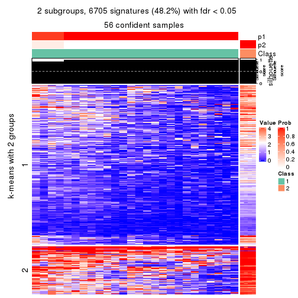
get_signatures(res, k = 3, scale_rows = FALSE)

get_signatures(res, k = 4, scale_rows = FALSE)
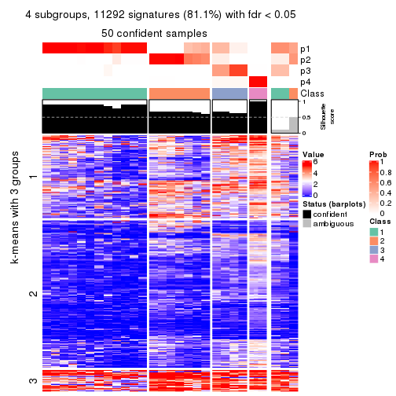
get_signatures(res, k = 5, scale_rows = FALSE)
get_signatures(res, k = 6, scale_rows = FALSE)
Compare the overlap of signatures from different k:
compare_signatures(res)
get_signature() returns a data frame invisibly. TO get the list of signatures, the function
call should be assigned to a variable explicitly. In following code, if plot argument is set
to FALSE, no heatmap is plotted while only the differential analysis is performed.
# code only for demonstration
tb = get_signature(res, k = ..., plot = FALSE)
An example of the output of tb is:
#> which_row fdr mean_1 mean_2 scaled_mean_1 scaled_mean_2 km
#> 1 38 0.042760348 8.373488 9.131774 -0.5533452 0.5164555 1
#> 2 40 0.018707592 7.106213 8.469186 -0.6173731 0.5762149 1
#> 3 55 0.019134737 10.221463 11.207825 -0.6159697 0.5749050 1
#> 4 59 0.006059896 5.921854 7.869574 -0.6899429 0.6439467 1
#> 5 60 0.018055526 8.928898 10.211722 -0.6204761 0.5791110 1
#> 6 98 0.009384629 15.714769 14.887706 0.6635654 -0.6193277 2
...
The columns in tb are:
which_row: row indices corresponding to the input matrix.fdr: FDR for the differential test. mean_x: The mean value in group x.scaled_mean_x: The mean value in group x after rows are scaled.km: Row groups if k-means clustering is applied to rows.UMAP plot which shows how samples are separated.
dimension_reduction(res, k = 2, method = "UMAP")
dimension_reduction(res, k = 3, method = "UMAP")
dimension_reduction(res, k = 4, method = "UMAP")
dimension_reduction(res, k = 5, method = "UMAP")
dimension_reduction(res, k = 6, method = "UMAP")
Following heatmap shows how subgroups are split when increasing k:
collect_classes(res)

If matrix rows can be associated to genes, consider to use functional_enrichment(res,
...) to perform function enrichment for the signature genes. See this vignette for more detailed explanations.
The object with results only for a single top-value method and a single partition method can be extracted as:
res = res_list["CV", "kmeans"]
# you can also extract it by
# res = res_list["CV:kmeans"]
A summary of res and all the functions that can be applied to it:
res
#> A 'ConsensusPartition' object with k = 2, 3, 4, 5, 6.
#> On a matrix with 13917 rows and 56 columns.
#> Top rows (1000, 2000, 3000, 4000, 5000) are extracted by 'CV' method.
#> Subgroups are detected by 'kmeans' method.
#> Performed in total 1250 partitions by row resampling.
#> Best k for subgroups seems to be 3.
#>
#> Following methods can be applied to this 'ConsensusPartition' object:
#> [1] "cola_report" "collect_classes" "collect_plots"
#> [4] "collect_stats" "colnames" "compare_signatures"
#> [7] "consensus_heatmap" "dimension_reduction" "functional_enrichment"
#> [10] "get_anno_col" "get_anno" "get_classes"
#> [13] "get_consensus" "get_matrix" "get_membership"
#> [16] "get_param" "get_signatures" "get_stats"
#> [19] "is_best_k" "is_stable_k" "membership_heatmap"
#> [22] "ncol" "nrow" "plot_ecdf"
#> [25] "rownames" "select_partition_number" "show"
#> [28] "suggest_best_k" "test_to_known_factors"
collect_plots() function collects all the plots made from res for all k (number of partitions)
into one single page to provide an easy and fast comparison between different k.
collect_plots(res)
The plots are:
k and the heatmap of
predicted classes for each k.k.k.k.All the plots in panels can be made by individual functions and they are plotted later in this section.
select_partition_number() produces several plots showing different
statistics for choosing “optimized” k. There are following statistics:
k;k, the area increased is defined as \(A_k - A_{k-1}\).The detailed explanations of these statistics can be found in the cola vignette.
Generally speaking, lower PAC score, higher mean silhouette score or higher
concordance corresponds to better partition. Rand index and Jaccard index
measure how similar the current partition is compared to partition with k-1.
If they are too similar, we won't accept k is better than k-1.
select_partition_number(res)
The numeric values for all these statistics can be obtained by get_stats().
get_stats(res)
#> k 1-PAC mean_silhouette concordance area_increased Rand Jaccard
#> 2 2 0.419 0.860 0.879 0.3448 0.618 0.618
#> 3 3 0.433 0.671 0.783 0.5894 0.735 0.598
#> 4 4 0.433 0.629 0.692 0.2055 0.883 0.741
#> 5 5 0.500 0.529 0.695 0.0960 0.974 0.928
#> 6 6 0.553 0.560 0.668 0.0629 0.925 0.793
suggest_best_k() suggests the best \(k\) based on these statistics. The rules are as follows:
suggest_best_k(res)
#> [1] 3
Following shows the table of the partitions (You need to click the show/hide
code output link to see it). The membership matrix (columns with name p*)
is inferred by
clue::cl_consensus()
function with the SE method. Basically the value in the membership matrix
represents the probability to belong to a certain group. The finall class
label for an item is determined with the group with highest probability it
belongs to.
In get_classes() function, the entropy is calculated from the membership
matrix and the silhouette score is calculated from the consensus matrix.
cbind(get_classes(res, k = 2), get_membership(res, k = 2))
#> class entropy silhouette p1 p2
#> SRR1975508 2 0.3274 0.823 0.060 0.940
#> SRR1975507 2 0.3274 0.823 0.060 0.940
#> SRR1975506 2 0.3274 0.823 0.060 0.940
#> SRR1975505 2 0.3274 0.823 0.060 0.940
#> SRR1975503 1 0.0376 0.879 0.996 0.004
#> SRR1975504 1 0.0376 0.879 0.996 0.004
#> SRR1975501 1 0.0376 0.879 0.996 0.004
#> SRR1975502 1 0.0376 0.879 0.996 0.004
#> SRR1975499 1 0.2603 0.894 0.956 0.044
#> SRR1975500 1 0.2603 0.894 0.956 0.044
#> SRR1975497 1 0.5294 0.902 0.880 0.120
#> SRR1975498 1 0.5294 0.902 0.880 0.120
#> SRR1975493 1 0.2948 0.847 0.948 0.052
#> SRR1975494 1 0.2948 0.847 0.948 0.052
#> SRR1975495 1 0.5408 0.902 0.876 0.124
#> SRR1975496 1 0.5408 0.902 0.876 0.124
#> SRR1975491 1 0.0376 0.879 0.996 0.004
#> SRR1975492 1 0.0376 0.879 0.996 0.004
#> SRR1975489 1 0.5408 0.902 0.876 0.124
#> SRR1975490 1 0.5408 0.902 0.876 0.124
#> SRR1975487 1 0.3584 0.899 0.932 0.068
#> SRR1975488 1 0.3584 0.899 0.932 0.068
#> SRR1975485 1 0.5294 0.902 0.880 0.120
#> SRR1975486 1 0.5294 0.902 0.880 0.120
#> SRR1975483 1 0.5294 0.902 0.880 0.120
#> SRR1975484 1 0.5294 0.902 0.880 0.120
#> SRR1975481 1 0.5408 0.902 0.876 0.124
#> SRR1975482 1 0.5408 0.902 0.876 0.124
#> SRR1975477 2 0.9635 0.577 0.388 0.612
#> SRR1975478 2 0.9635 0.577 0.388 0.612
#> SRR1975479 1 0.5519 0.900 0.872 0.128
#> SRR1975480 1 0.5519 0.900 0.872 0.128
#> SRR1975475 1 0.5294 0.902 0.880 0.120
#> SRR1975476 1 0.5294 0.902 0.880 0.120
#> SRR1975473 1 0.5946 0.889 0.856 0.144
#> SRR1975474 1 0.5946 0.889 0.856 0.144
#> SRR1975471 1 0.5408 0.902 0.876 0.124
#> SRR1975472 1 0.5408 0.902 0.876 0.124
#> SRR1975469 1 0.5294 0.902 0.880 0.120
#> SRR1975470 1 0.5294 0.902 0.880 0.120
#> SRR1975467 1 0.2948 0.847 0.948 0.052
#> SRR1975468 1 0.2948 0.847 0.948 0.052
#> SRR1975465 1 0.4022 0.834 0.920 0.080
#> SRR1975466 1 0.4022 0.834 0.920 0.080
#> SRR1975463 1 0.3431 0.843 0.936 0.064
#> SRR1975464 1 0.3431 0.843 0.936 0.064
#> SRR1975461 2 0.4161 0.832 0.084 0.916
#> SRR1975462 2 0.4161 0.832 0.084 0.916
#> SRR1975459 1 0.4022 0.834 0.920 0.080
#> SRR1975460 1 0.4022 0.834 0.920 0.080
#> SRR1975457 2 0.8081 0.829 0.248 0.752
#> SRR1975458 2 0.8081 0.829 0.248 0.752
#> SRR1975455 2 0.8081 0.831 0.248 0.752
#> SRR1975456 2 0.8081 0.831 0.248 0.752
#> SRR1975453 2 0.7950 0.834 0.240 0.760
#> SRR1975454 2 0.7950 0.834 0.240 0.760
cbind(get_classes(res, k = 3), get_membership(res, k = 3))
#> class entropy silhouette p1 p2 p3
#> SRR1975508 3 0.2443 0.717 0.032 0.028 0.940
#> SRR1975507 3 0.2443 0.717 0.032 0.028 0.940
#> SRR1975506 3 0.2443 0.717 0.032 0.028 0.940
#> SRR1975505 3 0.2443 0.717 0.032 0.028 0.940
#> SRR1975503 1 0.5678 0.280 0.684 0.316 0.000
#> SRR1975504 1 0.5678 0.280 0.684 0.316 0.000
#> SRR1975501 1 0.5591 0.290 0.696 0.304 0.000
#> SRR1975502 1 0.5591 0.290 0.696 0.304 0.000
#> SRR1975499 1 0.3482 0.673 0.872 0.128 0.000
#> SRR1975500 1 0.3482 0.673 0.872 0.128 0.000
#> SRR1975497 1 0.0237 0.765 0.996 0.004 0.000
#> SRR1975498 1 0.0237 0.765 0.996 0.004 0.000
#> SRR1975493 2 0.5785 0.916 0.300 0.696 0.004
#> SRR1975494 2 0.5785 0.916 0.300 0.696 0.004
#> SRR1975495 1 0.2063 0.753 0.948 0.044 0.008
#> SRR1975496 1 0.2063 0.753 0.948 0.044 0.008
#> SRR1975491 1 0.5678 0.280 0.684 0.316 0.000
#> SRR1975492 1 0.5678 0.280 0.684 0.316 0.000
#> SRR1975489 1 0.1647 0.761 0.960 0.036 0.004
#> SRR1975490 1 0.1647 0.761 0.960 0.036 0.004
#> SRR1975487 1 0.2537 0.730 0.920 0.080 0.000
#> SRR1975488 1 0.2537 0.730 0.920 0.080 0.000
#> SRR1975485 1 0.1411 0.761 0.964 0.036 0.000
#> SRR1975486 1 0.1411 0.761 0.964 0.036 0.000
#> SRR1975483 1 0.1399 0.761 0.968 0.028 0.004
#> SRR1975484 1 0.1399 0.761 0.968 0.028 0.004
#> SRR1975481 1 0.1765 0.757 0.956 0.040 0.004
#> SRR1975482 1 0.1765 0.757 0.956 0.040 0.004
#> SRR1975477 1 0.9852 -0.326 0.416 0.272 0.312
#> SRR1975478 1 0.9852 -0.326 0.416 0.272 0.312
#> SRR1975479 1 0.2550 0.756 0.932 0.056 0.012
#> SRR1975480 1 0.2550 0.756 0.932 0.056 0.012
#> SRR1975475 1 0.1647 0.761 0.960 0.036 0.004
#> SRR1975476 1 0.1647 0.761 0.960 0.036 0.004
#> SRR1975473 1 0.6771 0.508 0.684 0.276 0.040
#> SRR1975474 1 0.6771 0.508 0.684 0.276 0.040
#> SRR1975471 1 0.5756 0.562 0.764 0.208 0.028
#> SRR1975472 1 0.5756 0.562 0.764 0.208 0.028
#> SRR1975469 1 0.0237 0.766 0.996 0.004 0.000
#> SRR1975470 1 0.0237 0.766 0.996 0.004 0.000
#> SRR1975467 2 0.6062 0.803 0.384 0.616 0.000
#> SRR1975468 2 0.6062 0.803 0.384 0.616 0.000
#> SRR1975465 2 0.5812 0.937 0.264 0.724 0.012
#> SRR1975466 2 0.5812 0.937 0.264 0.724 0.012
#> SRR1975463 2 0.5812 0.937 0.264 0.724 0.012
#> SRR1975464 2 0.5812 0.937 0.264 0.724 0.012
#> SRR1975461 3 0.6034 0.764 0.068 0.152 0.780
#> SRR1975462 3 0.6034 0.764 0.068 0.152 0.780
#> SRR1975459 2 0.5775 0.934 0.260 0.728 0.012
#> SRR1975460 2 0.5775 0.934 0.260 0.728 0.012
#> SRR1975457 3 0.9181 0.751 0.236 0.224 0.540
#> SRR1975458 3 0.9181 0.751 0.236 0.224 0.540
#> SRR1975455 3 0.9148 0.751 0.236 0.220 0.544
#> SRR1975456 3 0.9148 0.751 0.236 0.220 0.544
#> SRR1975453 3 0.9468 0.713 0.276 0.228 0.496
#> SRR1975454 3 0.9468 0.713 0.276 0.228 0.496
cbind(get_classes(res, k = 4), get_membership(res, k = 4))
#> class entropy silhouette p1 p2 p3 p4
#> SRR1975508 4 0.0524 0.835 0.004 0.008 0.000 0.988
#> SRR1975507 4 0.0524 0.835 0.004 0.008 0.000 0.988
#> SRR1975506 4 0.0524 0.835 0.004 0.008 0.000 0.988
#> SRR1975505 4 0.0524 0.835 0.004 0.008 0.000 0.988
#> SRR1975503 1 0.6521 0.483 0.620 0.256 0.124 0.000
#> SRR1975504 1 0.6521 0.483 0.620 0.256 0.124 0.000
#> SRR1975501 1 0.6781 0.485 0.596 0.256 0.148 0.000
#> SRR1975502 1 0.6781 0.485 0.596 0.256 0.148 0.000
#> SRR1975499 1 0.4477 0.712 0.808 0.084 0.108 0.000
#> SRR1975500 1 0.4477 0.712 0.808 0.084 0.108 0.000
#> SRR1975497 1 0.2450 0.724 0.912 0.016 0.072 0.000
#> SRR1975498 1 0.2450 0.724 0.912 0.016 0.072 0.000
#> SRR1975493 2 0.4168 0.879 0.092 0.828 0.080 0.000
#> SRR1975494 2 0.4168 0.879 0.092 0.828 0.080 0.000
#> SRR1975495 1 0.4011 0.616 0.784 0.000 0.208 0.008
#> SRR1975496 1 0.4011 0.616 0.784 0.000 0.208 0.008
#> SRR1975491 1 0.6656 0.487 0.608 0.256 0.136 0.000
#> SRR1975492 1 0.6656 0.487 0.608 0.256 0.136 0.000
#> SRR1975489 1 0.3037 0.737 0.888 0.076 0.036 0.000
#> SRR1975490 1 0.3037 0.737 0.888 0.076 0.036 0.000
#> SRR1975487 1 0.4344 0.718 0.816 0.076 0.108 0.000
#> SRR1975488 1 0.4344 0.718 0.816 0.076 0.108 0.000
#> SRR1975485 1 0.2773 0.739 0.900 0.072 0.028 0.000
#> SRR1975486 1 0.2773 0.739 0.900 0.072 0.028 0.000
#> SRR1975483 1 0.3852 0.626 0.808 0.000 0.180 0.012
#> SRR1975484 1 0.3852 0.626 0.808 0.000 0.180 0.012
#> SRR1975481 1 0.3937 0.621 0.800 0.000 0.188 0.012
#> SRR1975482 1 0.3937 0.621 0.800 0.000 0.188 0.012
#> SRR1975477 3 0.7650 0.501 0.228 0.048 0.592 0.132
#> SRR1975478 3 0.7650 0.501 0.228 0.048 0.592 0.132
#> SRR1975479 1 0.4789 0.620 0.772 0.056 0.172 0.000
#> SRR1975480 1 0.4789 0.620 0.772 0.056 0.172 0.000
#> SRR1975475 1 0.3471 0.738 0.868 0.072 0.060 0.000
#> SRR1975476 1 0.3471 0.738 0.868 0.072 0.060 0.000
#> SRR1975473 3 0.6272 0.303 0.392 0.044 0.556 0.008
#> SRR1975474 3 0.6272 0.303 0.392 0.044 0.556 0.008
#> SRR1975471 1 0.5323 0.205 0.592 0.004 0.396 0.008
#> SRR1975472 1 0.5323 0.205 0.592 0.004 0.396 0.008
#> SRR1975469 1 0.1474 0.716 0.948 0.000 0.052 0.000
#> SRR1975470 1 0.1474 0.716 0.948 0.000 0.052 0.000
#> SRR1975467 2 0.5956 0.719 0.220 0.680 0.100 0.000
#> SRR1975468 2 0.5956 0.719 0.220 0.680 0.100 0.000
#> SRR1975465 2 0.2596 0.904 0.068 0.908 0.024 0.000
#> SRR1975466 2 0.2596 0.904 0.068 0.908 0.024 0.000
#> SRR1975463 2 0.2124 0.903 0.068 0.924 0.008 0.000
#> SRR1975464 2 0.2124 0.903 0.068 0.924 0.008 0.000
#> SRR1975461 4 0.5724 0.568 0.024 0.032 0.244 0.700
#> SRR1975462 4 0.5724 0.568 0.024 0.032 0.244 0.700
#> SRR1975459 2 0.2699 0.904 0.068 0.904 0.028 0.000
#> SRR1975460 2 0.2699 0.904 0.068 0.904 0.028 0.000
#> SRR1975457 3 0.7384 0.344 0.104 0.016 0.452 0.428
#> SRR1975458 3 0.7384 0.344 0.104 0.016 0.452 0.428
#> SRR1975455 3 0.7193 0.355 0.096 0.012 0.468 0.424
#> SRR1975456 3 0.7193 0.355 0.096 0.012 0.468 0.424
#> SRR1975453 3 0.8365 0.331 0.192 0.032 0.416 0.360
#> SRR1975454 3 0.8365 0.331 0.192 0.032 0.416 0.360
cbind(get_classes(res, k = 5), get_membership(res, k = 5))
#> class entropy silhouette p1 p2 p3 p4 p5
#> SRR1975508 3 0.0162 0.5547 0.000 0.004 0.996 0.000 0.000
#> SRR1975507 3 0.0162 0.5547 0.000 0.004 0.996 0.000 0.000
#> SRR1975506 3 0.0671 0.5547 0.016 0.004 0.980 0.000 0.000
#> SRR1975505 3 0.0671 0.5547 0.016 0.004 0.980 0.000 0.000
#> SRR1975503 4 0.5924 0.4732 0.280 0.116 0.000 0.596 0.008
#> SRR1975504 4 0.5924 0.4732 0.280 0.116 0.000 0.596 0.008
#> SRR1975501 4 0.6059 0.5224 0.268 0.136 0.000 0.588 0.008
#> SRR1975502 4 0.6059 0.5224 0.268 0.136 0.000 0.588 0.008
#> SRR1975499 4 0.3170 0.6725 0.160 0.004 0.000 0.828 0.008
#> SRR1975500 4 0.3170 0.6725 0.160 0.004 0.000 0.828 0.008
#> SRR1975497 4 0.2900 0.6908 0.108 0.000 0.000 0.864 0.028
#> SRR1975498 4 0.2900 0.6908 0.108 0.000 0.000 0.864 0.028
#> SRR1975493 2 0.5585 0.7405 0.256 0.656 0.000 0.052 0.036
#> SRR1975494 2 0.5585 0.7405 0.256 0.656 0.000 0.052 0.036
#> SRR1975495 4 0.5971 0.4974 0.240 0.004 0.000 0.600 0.156
#> SRR1975496 4 0.5971 0.4974 0.240 0.004 0.000 0.600 0.156
#> SRR1975491 4 0.6280 0.5046 0.288 0.120 0.000 0.572 0.020
#> SRR1975492 4 0.6280 0.5046 0.288 0.120 0.000 0.572 0.020
#> SRR1975489 4 0.1280 0.6969 0.008 0.008 0.000 0.960 0.024
#> SRR1975490 4 0.1280 0.6969 0.008 0.008 0.000 0.960 0.024
#> SRR1975487 4 0.3087 0.6746 0.152 0.004 0.000 0.836 0.008
#> SRR1975488 4 0.3087 0.6746 0.152 0.004 0.000 0.836 0.008
#> SRR1975485 4 0.0854 0.6997 0.012 0.004 0.000 0.976 0.008
#> SRR1975486 4 0.0854 0.6997 0.012 0.004 0.000 0.976 0.008
#> SRR1975483 4 0.5726 0.5315 0.212 0.004 0.000 0.636 0.148
#> SRR1975484 4 0.5726 0.5315 0.212 0.004 0.000 0.636 0.148
#> SRR1975481 4 0.5747 0.5338 0.200 0.004 0.000 0.636 0.160
#> SRR1975482 4 0.5747 0.5338 0.200 0.004 0.000 0.636 0.160
#> SRR1975477 5 0.4522 0.5115 0.016 0.008 0.084 0.100 0.792
#> SRR1975478 5 0.4522 0.5115 0.016 0.008 0.084 0.100 0.792
#> SRR1975479 4 0.4288 0.5663 0.032 0.004 0.000 0.740 0.224
#> SRR1975480 4 0.4288 0.5663 0.032 0.004 0.000 0.740 0.224
#> SRR1975475 4 0.2547 0.6912 0.040 0.004 0.004 0.904 0.048
#> SRR1975476 4 0.2547 0.6912 0.040 0.004 0.004 0.904 0.048
#> SRR1975473 5 0.4448 0.4945 0.012 0.008 0.016 0.224 0.740
#> SRR1975474 5 0.4448 0.4945 0.012 0.008 0.016 0.224 0.740
#> SRR1975471 4 0.6794 -0.0837 0.300 0.000 0.000 0.380 0.320
#> SRR1975472 4 0.6794 -0.0837 0.300 0.000 0.000 0.380 0.320
#> SRR1975469 4 0.2423 0.6917 0.080 0.000 0.000 0.896 0.024
#> SRR1975470 4 0.2423 0.6917 0.080 0.000 0.000 0.896 0.024
#> SRR1975467 2 0.6553 0.5743 0.272 0.520 0.000 0.200 0.008
#> SRR1975468 2 0.6553 0.5743 0.272 0.520 0.000 0.200 0.008
#> SRR1975465 2 0.1820 0.8140 0.020 0.940 0.000 0.020 0.020
#> SRR1975466 2 0.1820 0.8140 0.020 0.940 0.000 0.020 0.020
#> SRR1975463 2 0.1560 0.8188 0.028 0.948 0.000 0.020 0.004
#> SRR1975464 2 0.1560 0.8188 0.028 0.948 0.000 0.020 0.004
#> SRR1975461 3 0.6372 0.0515 0.260 0.000 0.552 0.008 0.180
#> SRR1975462 3 0.6372 0.0515 0.260 0.000 0.552 0.008 0.180
#> SRR1975459 2 0.1173 0.8177 0.004 0.964 0.000 0.020 0.012
#> SRR1975460 2 0.1173 0.8177 0.004 0.964 0.000 0.020 0.012
#> SRR1975457 3 0.7645 -0.2296 0.184 0.004 0.380 0.056 0.376
#> SRR1975458 3 0.7645 -0.2296 0.184 0.004 0.380 0.056 0.376
#> SRR1975455 5 0.7309 -0.2402 0.136 0.004 0.368 0.052 0.440
#> SRR1975456 5 0.7309 -0.2402 0.136 0.004 0.368 0.052 0.440
#> SRR1975453 1 0.8091 1.0000 0.380 0.000 0.260 0.104 0.256
#> SRR1975454 1 0.8091 1.0000 0.380 0.000 0.260 0.104 0.256
cbind(get_classes(res, k = 6), get_membership(res, k = 6))
#> class entropy silhouette p1 p2 p3 p4 p5 p6
#> SRR1975508 3 0.3973 0.9926 0.296 0.000 0.684 0.000 0.008 NA
#> SRR1975507 3 0.3973 0.9926 0.296 0.000 0.684 0.000 0.012 NA
#> SRR1975506 3 0.3634 0.9934 0.296 0.000 0.696 0.000 0.008 NA
#> SRR1975505 3 0.3634 0.9934 0.296 0.000 0.696 0.000 0.008 NA
#> SRR1975503 4 0.6256 0.4085 0.004 0.100 0.016 0.504 0.024 NA
#> SRR1975504 4 0.6256 0.4085 0.004 0.100 0.016 0.504 0.024 NA
#> SRR1975501 4 0.7100 0.4211 0.016 0.128 0.024 0.456 0.040 NA
#> SRR1975502 4 0.7100 0.4211 0.016 0.128 0.024 0.456 0.040 NA
#> SRR1975499 4 0.3804 0.6038 0.000 0.012 0.016 0.756 0.004 NA
#> SRR1975500 4 0.3804 0.6038 0.000 0.012 0.016 0.756 0.004 NA
#> SRR1975497 4 0.4260 0.5936 0.028 0.000 0.008 0.772 0.048 NA
#> SRR1975498 4 0.4260 0.5936 0.028 0.000 0.008 0.772 0.048 NA
#> SRR1975493 2 0.6336 0.6818 0.004 0.564 0.052 0.024 0.072 NA
#> SRR1975494 2 0.6336 0.6818 0.004 0.564 0.052 0.024 0.072 NA
#> SRR1975495 4 0.7682 0.3627 0.100 0.000 0.076 0.480 0.136 NA
#> SRR1975496 4 0.7682 0.3627 0.100 0.000 0.076 0.480 0.136 NA
#> SRR1975491 4 0.6843 0.3842 0.012 0.124 0.032 0.456 0.020 NA
#> SRR1975492 4 0.6843 0.3842 0.012 0.124 0.032 0.456 0.020 NA
#> SRR1975489 4 0.2327 0.6192 0.000 0.012 0.008 0.908 0.028 NA
#> SRR1975490 4 0.2327 0.6192 0.000 0.012 0.008 0.908 0.028 NA
#> SRR1975487 4 0.3338 0.6144 0.000 0.012 0.004 0.800 0.008 NA
#> SRR1975488 4 0.3338 0.6144 0.000 0.012 0.004 0.800 0.008 NA
#> SRR1975485 4 0.1476 0.6282 0.004 0.012 0.008 0.948 0.000 NA
#> SRR1975486 4 0.1476 0.6282 0.004 0.012 0.008 0.948 0.000 NA
#> SRR1975483 4 0.7645 0.3400 0.100 0.004 0.052 0.476 0.232 NA
#> SRR1975484 4 0.7645 0.3400 0.100 0.004 0.052 0.476 0.232 NA
#> SRR1975481 4 0.7509 0.3348 0.092 0.004 0.048 0.488 0.236 NA
#> SRR1975482 4 0.7509 0.3348 0.092 0.004 0.048 0.488 0.236 NA
#> SRR1975477 5 0.5538 0.7717 0.200 0.004 0.032 0.052 0.676 NA
#> SRR1975478 5 0.5471 0.7717 0.200 0.004 0.032 0.052 0.680 NA
#> SRR1975479 4 0.5171 0.3670 0.012 0.008 0.020 0.664 0.252 NA
#> SRR1975480 4 0.5171 0.3670 0.012 0.008 0.020 0.664 0.252 NA
#> SRR1975475 4 0.3413 0.5982 0.008 0.012 0.012 0.852 0.056 NA
#> SRR1975476 4 0.3413 0.5982 0.008 0.012 0.012 0.852 0.056 NA
#> SRR1975473 5 0.5360 0.7951 0.100 0.004 0.012 0.176 0.684 NA
#> SRR1975474 5 0.5360 0.7951 0.100 0.004 0.012 0.176 0.684 NA
#> SRR1975471 1 0.8255 -0.0373 0.296 0.000 0.048 0.276 0.240 NA
#> SRR1975472 1 0.8255 -0.0373 0.296 0.000 0.048 0.276 0.240 NA
#> SRR1975469 4 0.3515 0.6038 0.024 0.000 0.000 0.828 0.064 NA
#> SRR1975470 4 0.3515 0.6038 0.024 0.000 0.000 0.828 0.064 NA
#> SRR1975467 2 0.6176 0.5896 0.004 0.480 0.016 0.112 0.012 NA
#> SRR1975468 2 0.6176 0.5896 0.004 0.480 0.016 0.112 0.012 NA
#> SRR1975465 2 0.1590 0.7844 0.000 0.944 0.028 0.008 0.012 NA
#> SRR1975466 2 0.1590 0.7844 0.000 0.944 0.028 0.008 0.012 NA
#> SRR1975463 2 0.2407 0.7852 0.000 0.904 0.036 0.008 0.012 NA
#> SRR1975464 2 0.2407 0.7852 0.000 0.904 0.036 0.008 0.012 NA
#> SRR1975461 1 0.3122 0.2765 0.816 0.000 0.160 0.020 0.000 NA
#> SRR1975462 1 0.3122 0.2765 0.816 0.000 0.160 0.020 0.000 NA
#> SRR1975459 2 0.0405 0.7873 0.000 0.988 0.000 0.008 0.000 NA
#> SRR1975460 2 0.0405 0.7873 0.000 0.988 0.000 0.008 0.000 NA
#> SRR1975457 1 0.4088 0.4788 0.792 0.004 0.020 0.048 0.128 NA
#> SRR1975458 1 0.4088 0.4788 0.792 0.004 0.020 0.048 0.128 NA
#> SRR1975455 1 0.5233 0.4173 0.676 0.004 0.032 0.044 0.228 NA
#> SRR1975456 1 0.5233 0.4173 0.676 0.004 0.032 0.044 0.228 NA
#> SRR1975453 1 0.3854 0.4853 0.824 0.000 0.028 0.080 0.040 NA
#> SRR1975454 1 0.3854 0.4853 0.824 0.000 0.028 0.080 0.040 NA
Heatmaps for the consensus matrix. It visualizes the probability of two samples to be in a same group.
consensus_heatmap(res, k = 2)
consensus_heatmap(res, k = 3)
consensus_heatmap(res, k = 4)
consensus_heatmap(res, k = 5)
consensus_heatmap(res, k = 6)

Heatmaps for the membership of samples in all partitions to see how consistent they are:
membership_heatmap(res, k = 2)
membership_heatmap(res, k = 3)
membership_heatmap(res, k = 4)

membership_heatmap(res, k = 5)
membership_heatmap(res, k = 6)
As soon as we have had the classes for columns, we can look for signatures which are significantly different between classes which can be candidate marks for certain classes. Following are the heatmaps for signatures.
Signature heatmaps where rows are scaled:
get_signatures(res, k = 2)
get_signatures(res, k = 3)
get_signatures(res, k = 4)
get_signatures(res, k = 5)
get_signatures(res, k = 6)
Signature heatmaps where rows are not scaled:
get_signatures(res, k = 2, scale_rows = FALSE)
get_signatures(res, k = 3, scale_rows = FALSE)
get_signatures(res, k = 4, scale_rows = FALSE)
get_signatures(res, k = 5, scale_rows = FALSE)
get_signatures(res, k = 6, scale_rows = FALSE)
Compare the overlap of signatures from different k:
compare_signatures(res)
get_signature() returns a data frame invisibly. TO get the list of signatures, the function
call should be assigned to a variable explicitly. In following code, if plot argument is set
to FALSE, no heatmap is plotted while only the differential analysis is performed.
# code only for demonstration
tb = get_signature(res, k = ..., plot = FALSE)
An example of the output of tb is:
#> which_row fdr mean_1 mean_2 scaled_mean_1 scaled_mean_2 km
#> 1 38 0.042760348 8.373488 9.131774 -0.5533452 0.5164555 1
#> 2 40 0.018707592 7.106213 8.469186 -0.6173731 0.5762149 1
#> 3 55 0.019134737 10.221463 11.207825 -0.6159697 0.5749050 1
#> 4 59 0.006059896 5.921854 7.869574 -0.6899429 0.6439467 1
#> 5 60 0.018055526 8.928898 10.211722 -0.6204761 0.5791110 1
#> 6 98 0.009384629 15.714769 14.887706 0.6635654 -0.6193277 2
...
The columns in tb are:
which_row: row indices corresponding to the input matrix.fdr: FDR for the differential test. mean_x: The mean value in group x.scaled_mean_x: The mean value in group x after rows are scaled.km: Row groups if k-means clustering is applied to rows.UMAP plot which shows how samples are separated.
dimension_reduction(res, k = 2, method = "UMAP")
dimension_reduction(res, k = 3, method = "UMAP")
dimension_reduction(res, k = 4, method = "UMAP")
dimension_reduction(res, k = 5, method = "UMAP")
dimension_reduction(res, k = 6, method = "UMAP")
Following heatmap shows how subgroups are split when increasing k:
collect_classes(res)
If matrix rows can be associated to genes, consider to use functional_enrichment(res,
...) to perform function enrichment for the signature genes. See this vignette for more detailed explanations.
The object with results only for a single top-value method and a single partition method can be extracted as:
res = res_list["CV", "skmeans"]
# you can also extract it by
# res = res_list["CV:skmeans"]
A summary of res and all the functions that can be applied to it:
res
#> A 'ConsensusPartition' object with k = 2, 3, 4, 5, 6.
#> On a matrix with 13917 rows and 56 columns.
#> Top rows (1000, 2000, 3000, 4000, 5000) are extracted by 'CV' method.
#> Subgroups are detected by 'skmeans' method.
#> Performed in total 1250 partitions by row resampling.
#> Best k for subgroups seems to be 2.
#>
#> Following methods can be applied to this 'ConsensusPartition' object:
#> [1] "cola_report" "collect_classes" "collect_plots"
#> [4] "collect_stats" "colnames" "compare_signatures"
#> [7] "consensus_heatmap" "dimension_reduction" "functional_enrichment"
#> [10] "get_anno_col" "get_anno" "get_classes"
#> [13] "get_consensus" "get_matrix" "get_membership"
#> [16] "get_param" "get_signatures" "get_stats"
#> [19] "is_best_k" "is_stable_k" "membership_heatmap"
#> [22] "ncol" "nrow" "plot_ecdf"
#> [25] "rownames" "select_partition_number" "show"
#> [28] "suggest_best_k" "test_to_known_factors"
collect_plots() function collects all the plots made from res for all k (number of partitions)
into one single page to provide an easy and fast comparison between different k.
collect_plots(res)
The plots are:
k and the heatmap of
predicted classes for each k.k.k.k.All the plots in panels can be made by individual functions and they are plotted later in this section.
select_partition_number() produces several plots showing different
statistics for choosing “optimized” k. There are following statistics:
k;k, the area increased is defined as \(A_k - A_{k-1}\).The detailed explanations of these statistics can be found in the cola vignette.
Generally speaking, lower PAC score, higher mean silhouette score or higher
concordance corresponds to better partition. Rand index and Jaccard index
measure how similar the current partition is compared to partition with k-1.
If they are too similar, we won't accept k is better than k-1.
select_partition_number(res)
The numeric values for all these statistics can be obtained by get_stats().
get_stats(res)
#> k 1-PAC mean_silhouette concordance area_increased Rand Jaccard
#> 2 2 0.805 0.911 0.957 0.4654 0.556 0.556
#> 3 3 0.678 0.879 0.937 0.4107 0.771 0.589
#> 4 4 0.704 0.634 0.848 0.1393 0.836 0.566
#> 5 5 0.720 0.762 0.838 0.0657 0.852 0.517
#> 6 6 0.751 0.660 0.775 0.0438 0.935 0.699
suggest_best_k() suggests the best \(k\) based on these statistics. The rules are as follows:
suggest_best_k(res)
#> [1] 2
Following shows the table of the partitions (You need to click the show/hide
code output link to see it). The membership matrix (columns with name p*)
is inferred by
clue::cl_consensus()
function with the SE method. Basically the value in the membership matrix
represents the probability to belong to a certain group. The finall class
label for an item is determined with the group with highest probability it
belongs to.
In get_classes() function, the entropy is calculated from the membership
matrix and the silhouette score is calculated from the consensus matrix.
cbind(get_classes(res, k = 2), get_membership(res, k = 2))
#> class entropy silhouette p1 p2
#> SRR1975508 2 0.0000 0.999 0.000 1.000
#> SRR1975507 2 0.0000 0.999 0.000 1.000
#> SRR1975506 2 0.0000 0.999 0.000 1.000
#> SRR1975505 2 0.0000 0.999 0.000 1.000
#> SRR1975503 1 0.0000 0.931 1.000 0.000
#> SRR1975504 1 0.0000 0.931 1.000 0.000
#> SRR1975501 1 0.0000 0.931 1.000 0.000
#> SRR1975502 1 0.0000 0.931 1.000 0.000
#> SRR1975499 1 0.0000 0.931 1.000 0.000
#> SRR1975500 1 0.0000 0.931 1.000 0.000
#> SRR1975497 1 0.0672 0.931 0.992 0.008
#> SRR1975498 1 0.0672 0.931 0.992 0.008
#> SRR1975493 1 0.0000 0.931 1.000 0.000
#> SRR1975494 1 0.0000 0.931 1.000 0.000
#> SRR1975495 1 0.0938 0.931 0.988 0.012
#> SRR1975496 1 0.0938 0.931 0.988 0.012
#> SRR1975491 1 0.0000 0.931 1.000 0.000
#> SRR1975492 1 0.0000 0.931 1.000 0.000
#> SRR1975489 1 0.0672 0.931 0.992 0.008
#> SRR1975490 1 0.0672 0.931 0.992 0.008
#> SRR1975487 1 0.0000 0.931 1.000 0.000
#> SRR1975488 1 0.0000 0.931 1.000 0.000
#> SRR1975485 1 0.0672 0.931 0.992 0.008
#> SRR1975486 1 0.0672 0.931 0.992 0.008
#> SRR1975483 1 0.2236 0.919 0.964 0.036
#> SRR1975484 1 0.2236 0.919 0.964 0.036
#> SRR1975481 1 0.2236 0.919 0.964 0.036
#> SRR1975482 1 0.2236 0.919 0.964 0.036
#> SRR1975477 2 0.0000 0.999 0.000 1.000
#> SRR1975478 2 0.0000 0.999 0.000 1.000
#> SRR1975479 1 0.3431 0.898 0.936 0.064
#> SRR1975480 1 0.3431 0.898 0.936 0.064
#> SRR1975475 1 0.0938 0.931 0.988 0.012
#> SRR1975476 1 0.0938 0.931 0.988 0.012
#> SRR1975473 2 0.0000 0.999 0.000 1.000
#> SRR1975474 2 0.0000 0.999 0.000 1.000
#> SRR1975471 2 0.0376 0.996 0.004 0.996
#> SRR1975472 2 0.0376 0.996 0.004 0.996
#> SRR1975469 1 0.1184 0.929 0.984 0.016
#> SRR1975470 1 0.1184 0.929 0.984 0.016
#> SRR1975467 1 0.0000 0.931 1.000 0.000
#> SRR1975468 1 0.0000 0.931 1.000 0.000
#> SRR1975465 1 0.9209 0.560 0.664 0.336
#> SRR1975466 1 0.9209 0.560 0.664 0.336
#> SRR1975463 1 0.9209 0.560 0.664 0.336
#> SRR1975464 1 0.9209 0.560 0.664 0.336
#> SRR1975461 2 0.0000 0.999 0.000 1.000
#> SRR1975462 2 0.0000 0.999 0.000 1.000
#> SRR1975459 1 0.9209 0.560 0.664 0.336
#> SRR1975460 1 0.9209 0.560 0.664 0.336
#> SRR1975457 2 0.0000 0.999 0.000 1.000
#> SRR1975458 2 0.0000 0.999 0.000 1.000
#> SRR1975455 2 0.0000 0.999 0.000 1.000
#> SRR1975456 2 0.0000 0.999 0.000 1.000
#> SRR1975453 2 0.0000 0.999 0.000 1.000
#> SRR1975454 2 0.0000 0.999 0.000 1.000
cbind(get_classes(res, k = 3), get_membership(res, k = 3))
#> class entropy silhouette p1 p2 p3
#> SRR1975508 3 0.000 0.922 0.000 0.000 1.000
#> SRR1975507 3 0.000 0.922 0.000 0.000 1.000
#> SRR1975506 3 0.000 0.922 0.000 0.000 1.000
#> SRR1975505 3 0.000 0.922 0.000 0.000 1.000
#> SRR1975503 2 0.435 0.782 0.184 0.816 0.000
#> SRR1975504 2 0.435 0.782 0.184 0.816 0.000
#> SRR1975501 2 0.579 0.622 0.332 0.668 0.000
#> SRR1975502 2 0.579 0.622 0.332 0.668 0.000
#> SRR1975499 1 0.429 0.752 0.820 0.180 0.000
#> SRR1975500 1 0.429 0.752 0.820 0.180 0.000
#> SRR1975497 1 0.000 0.962 1.000 0.000 0.000
#> SRR1975498 1 0.000 0.962 1.000 0.000 0.000
#> SRR1975493 2 0.000 0.872 0.000 1.000 0.000
#> SRR1975494 2 0.000 0.872 0.000 1.000 0.000
#> SRR1975495 1 0.000 0.962 1.000 0.000 0.000
#> SRR1975496 1 0.000 0.962 1.000 0.000 0.000
#> SRR1975491 2 0.579 0.622 0.332 0.668 0.000
#> SRR1975492 2 0.579 0.622 0.332 0.668 0.000
#> SRR1975489 1 0.000 0.962 1.000 0.000 0.000
#> SRR1975490 1 0.000 0.962 1.000 0.000 0.000
#> SRR1975487 1 0.355 0.823 0.868 0.132 0.000
#> SRR1975488 1 0.355 0.823 0.868 0.132 0.000
#> SRR1975485 1 0.000 0.962 1.000 0.000 0.000
#> SRR1975486 1 0.000 0.962 1.000 0.000 0.000
#> SRR1975483 1 0.000 0.962 1.000 0.000 0.000
#> SRR1975484 1 0.000 0.962 1.000 0.000 0.000
#> SRR1975481 1 0.000 0.962 1.000 0.000 0.000
#> SRR1975482 1 0.000 0.962 1.000 0.000 0.000
#> SRR1975477 3 0.418 0.847 0.172 0.000 0.828
#> SRR1975478 3 0.418 0.847 0.172 0.000 0.828
#> SRR1975479 1 0.000 0.962 1.000 0.000 0.000
#> SRR1975480 1 0.000 0.962 1.000 0.000 0.000
#> SRR1975475 1 0.000 0.962 1.000 0.000 0.000
#> SRR1975476 1 0.000 0.962 1.000 0.000 0.000
#> SRR1975473 3 0.435 0.839 0.184 0.000 0.816
#> SRR1975474 3 0.435 0.839 0.184 0.000 0.816
#> SRR1975471 3 0.510 0.768 0.248 0.000 0.752
#> SRR1975472 3 0.510 0.768 0.248 0.000 0.752
#> SRR1975469 1 0.000 0.962 1.000 0.000 0.000
#> SRR1975470 1 0.000 0.962 1.000 0.000 0.000
#> SRR1975467 2 0.000 0.872 0.000 1.000 0.000
#> SRR1975468 2 0.000 0.872 0.000 1.000 0.000
#> SRR1975465 2 0.000 0.872 0.000 1.000 0.000
#> SRR1975466 2 0.000 0.872 0.000 1.000 0.000
#> SRR1975463 2 0.000 0.872 0.000 1.000 0.000
#> SRR1975464 2 0.000 0.872 0.000 1.000 0.000
#> SRR1975461 3 0.000 0.922 0.000 0.000 1.000
#> SRR1975462 3 0.000 0.922 0.000 0.000 1.000
#> SRR1975459 2 0.000 0.872 0.000 1.000 0.000
#> SRR1975460 2 0.000 0.872 0.000 1.000 0.000
#> SRR1975457 3 0.000 0.922 0.000 0.000 1.000
#> SRR1975458 3 0.000 0.922 0.000 0.000 1.000
#> SRR1975455 3 0.000 0.922 0.000 0.000 1.000
#> SRR1975456 3 0.000 0.922 0.000 0.000 1.000
#> SRR1975453 3 0.000 0.922 0.000 0.000 1.000
#> SRR1975454 3 0.000 0.922 0.000 0.000 1.000
cbind(get_classes(res, k = 4), get_membership(res, k = 4))
#> class entropy silhouette p1 p2 p3 p4
#> SRR1975508 3 0.0000 0.84848 0.000 0.000 1.000 0.000
#> SRR1975507 3 0.0000 0.84848 0.000 0.000 1.000 0.000
#> SRR1975506 3 0.0000 0.84848 0.000 0.000 1.000 0.000
#> SRR1975505 3 0.0000 0.84848 0.000 0.000 1.000 0.000
#> SRR1975503 4 0.4992 0.02340 0.000 0.476 0.000 0.524
#> SRR1975504 4 0.4992 0.02340 0.000 0.476 0.000 0.524
#> SRR1975501 2 0.5850 0.01172 0.032 0.512 0.000 0.456
#> SRR1975502 2 0.5850 0.01172 0.032 0.512 0.000 0.456
#> SRR1975499 4 0.0779 0.69260 0.004 0.016 0.000 0.980
#> SRR1975500 4 0.0779 0.69260 0.004 0.016 0.000 0.980
#> SRR1975497 4 0.4356 0.36906 0.292 0.000 0.000 0.708
#> SRR1975498 4 0.4356 0.36906 0.292 0.000 0.000 0.708
#> SRR1975493 2 0.0000 0.89276 0.000 1.000 0.000 0.000
#> SRR1975494 2 0.0000 0.89276 0.000 1.000 0.000 0.000
#> SRR1975495 1 0.4454 0.63504 0.692 0.000 0.000 0.308
#> SRR1975496 1 0.4454 0.63504 0.692 0.000 0.000 0.308
#> SRR1975491 4 0.5165 -0.00674 0.004 0.484 0.000 0.512
#> SRR1975492 4 0.5165 -0.00674 0.004 0.484 0.000 0.512
#> SRR1975489 4 0.1022 0.68976 0.032 0.000 0.000 0.968
#> SRR1975490 4 0.1022 0.68976 0.032 0.000 0.000 0.968
#> SRR1975487 4 0.0188 0.69383 0.004 0.000 0.000 0.996
#> SRR1975488 4 0.0188 0.69383 0.004 0.000 0.000 0.996
#> SRR1975485 4 0.0592 0.69227 0.016 0.000 0.000 0.984
#> SRR1975486 4 0.0592 0.69227 0.016 0.000 0.000 0.984
#> SRR1975483 1 0.2973 0.83565 0.856 0.000 0.000 0.144
#> SRR1975484 1 0.2973 0.83565 0.856 0.000 0.000 0.144
#> SRR1975481 1 0.2530 0.83323 0.888 0.000 0.000 0.112
#> SRR1975482 1 0.2530 0.83323 0.888 0.000 0.000 0.112
#> SRR1975477 3 0.5070 0.47277 0.416 0.000 0.580 0.004
#> SRR1975478 3 0.5070 0.47277 0.416 0.000 0.580 0.004
#> SRR1975479 4 0.4804 0.29923 0.384 0.000 0.000 0.616
#> SRR1975480 4 0.4804 0.29923 0.384 0.000 0.000 0.616
#> SRR1975475 4 0.0921 0.69162 0.028 0.000 0.000 0.972
#> SRR1975476 4 0.0921 0.69162 0.028 0.000 0.000 0.972
#> SRR1975473 3 0.5500 0.37031 0.464 0.000 0.520 0.016
#> SRR1975474 3 0.5500 0.37031 0.464 0.000 0.520 0.016
#> SRR1975471 1 0.0657 0.79585 0.984 0.000 0.012 0.004
#> SRR1975472 1 0.0657 0.79585 0.984 0.000 0.012 0.004
#> SRR1975469 4 0.4746 0.18014 0.368 0.000 0.000 0.632
#> SRR1975470 4 0.4746 0.18014 0.368 0.000 0.000 0.632
#> SRR1975467 2 0.0000 0.89276 0.000 1.000 0.000 0.000
#> SRR1975468 2 0.0000 0.89276 0.000 1.000 0.000 0.000
#> SRR1975465 2 0.0000 0.89276 0.000 1.000 0.000 0.000
#> SRR1975466 2 0.0000 0.89276 0.000 1.000 0.000 0.000
#> SRR1975463 2 0.0000 0.89276 0.000 1.000 0.000 0.000
#> SRR1975464 2 0.0000 0.89276 0.000 1.000 0.000 0.000
#> SRR1975461 3 0.1118 0.83618 0.036 0.000 0.964 0.000
#> SRR1975462 3 0.1118 0.83618 0.036 0.000 0.964 0.000
#> SRR1975459 2 0.0000 0.89276 0.000 1.000 0.000 0.000
#> SRR1975460 2 0.0000 0.89276 0.000 1.000 0.000 0.000
#> SRR1975457 3 0.0000 0.84848 0.000 0.000 1.000 0.000
#> SRR1975458 3 0.0000 0.84848 0.000 0.000 1.000 0.000
#> SRR1975455 3 0.0188 0.84752 0.004 0.000 0.996 0.000
#> SRR1975456 3 0.0188 0.84752 0.004 0.000 0.996 0.000
#> SRR1975453 3 0.2704 0.77747 0.124 0.000 0.876 0.000
#> SRR1975454 3 0.2704 0.77747 0.124 0.000 0.876 0.000
cbind(get_classes(res, k = 5), get_membership(res, k = 5))
#> class entropy silhouette p1 p2 p3 p4 p5
#> SRR1975508 3 0.0162 0.934 0.000 0.000 0.996 0.000 0.004
#> SRR1975507 3 0.0162 0.934 0.000 0.000 0.996 0.000 0.004
#> SRR1975506 3 0.0162 0.934 0.000 0.000 0.996 0.000 0.004
#> SRR1975505 3 0.0162 0.934 0.000 0.000 0.996 0.000 0.004
#> SRR1975503 4 0.3968 0.648 0.004 0.204 0.000 0.768 0.024
#> SRR1975504 4 0.3968 0.648 0.004 0.204 0.000 0.768 0.024
#> SRR1975501 4 0.6546 0.454 0.096 0.328 0.000 0.536 0.040
#> SRR1975502 4 0.6546 0.454 0.096 0.328 0.000 0.536 0.040
#> SRR1975499 4 0.0451 0.711 0.008 0.000 0.000 0.988 0.004
#> SRR1975500 4 0.0451 0.711 0.008 0.000 0.000 0.988 0.004
#> SRR1975497 1 0.5080 0.403 0.604 0.000 0.000 0.348 0.048
#> SRR1975498 1 0.5080 0.403 0.604 0.000 0.000 0.348 0.048
#> SRR1975493 2 0.0162 0.992 0.000 0.996 0.000 0.004 0.000
#> SRR1975494 2 0.0162 0.992 0.000 0.996 0.000 0.004 0.000
#> SRR1975495 1 0.2376 0.720 0.904 0.000 0.000 0.052 0.044
#> SRR1975496 1 0.2376 0.720 0.904 0.000 0.000 0.052 0.044
#> SRR1975491 4 0.5677 0.557 0.044 0.284 0.000 0.632 0.040
#> SRR1975492 4 0.5677 0.557 0.044 0.284 0.000 0.632 0.040
#> SRR1975489 4 0.4657 0.634 0.108 0.000 0.000 0.740 0.152
#> SRR1975490 4 0.4657 0.634 0.108 0.000 0.000 0.740 0.152
#> SRR1975487 4 0.0693 0.711 0.012 0.000 0.000 0.980 0.008
#> SRR1975488 4 0.0693 0.711 0.012 0.000 0.000 0.980 0.008
#> SRR1975485 4 0.3861 0.658 0.128 0.000 0.000 0.804 0.068
#> SRR1975486 4 0.3861 0.658 0.128 0.000 0.000 0.804 0.068
#> SRR1975483 1 0.2236 0.738 0.908 0.000 0.000 0.024 0.068
#> SRR1975484 1 0.2236 0.738 0.908 0.000 0.000 0.024 0.068
#> SRR1975481 1 0.2966 0.713 0.848 0.000 0.000 0.016 0.136
#> SRR1975482 1 0.2966 0.713 0.848 0.000 0.000 0.016 0.136
#> SRR1975477 5 0.3160 0.793 0.004 0.000 0.188 0.000 0.808
#> SRR1975478 5 0.3160 0.793 0.004 0.000 0.188 0.000 0.808
#> SRR1975479 5 0.4431 0.585 0.052 0.000 0.000 0.216 0.732
#> SRR1975480 5 0.4431 0.585 0.052 0.000 0.000 0.216 0.732
#> SRR1975475 4 0.5163 0.605 0.152 0.000 0.000 0.692 0.156
#> SRR1975476 4 0.5163 0.605 0.152 0.000 0.000 0.692 0.156
#> SRR1975473 5 0.2843 0.806 0.008 0.000 0.144 0.000 0.848
#> SRR1975474 5 0.2843 0.806 0.008 0.000 0.144 0.000 0.848
#> SRR1975471 1 0.3807 0.636 0.748 0.000 0.012 0.000 0.240
#> SRR1975472 1 0.3807 0.636 0.748 0.000 0.012 0.000 0.240
#> SRR1975469 1 0.5272 0.544 0.620 0.000 0.000 0.308 0.072
#> SRR1975470 1 0.5272 0.544 0.620 0.000 0.000 0.308 0.072
#> SRR1975467 2 0.0798 0.978 0.000 0.976 0.000 0.008 0.016
#> SRR1975468 2 0.0798 0.978 0.000 0.976 0.000 0.008 0.016
#> SRR1975465 2 0.0000 0.994 0.000 1.000 0.000 0.000 0.000
#> SRR1975466 2 0.0000 0.994 0.000 1.000 0.000 0.000 0.000
#> SRR1975463 2 0.0000 0.994 0.000 1.000 0.000 0.000 0.000
#> SRR1975464 2 0.0000 0.994 0.000 1.000 0.000 0.000 0.000
#> SRR1975461 3 0.1809 0.909 0.012 0.000 0.928 0.000 0.060
#> SRR1975462 3 0.1809 0.909 0.012 0.000 0.928 0.000 0.060
#> SRR1975459 2 0.0000 0.994 0.000 1.000 0.000 0.000 0.000
#> SRR1975460 2 0.0000 0.994 0.000 1.000 0.000 0.000 0.000
#> SRR1975457 3 0.1410 0.915 0.000 0.000 0.940 0.000 0.060
#> SRR1975458 3 0.1410 0.915 0.000 0.000 0.940 0.000 0.060
#> SRR1975455 3 0.1908 0.894 0.000 0.000 0.908 0.000 0.092
#> SRR1975456 3 0.1908 0.894 0.000 0.000 0.908 0.000 0.092
#> SRR1975453 3 0.2359 0.893 0.036 0.000 0.904 0.000 0.060
#> SRR1975454 3 0.2359 0.893 0.036 0.000 0.904 0.000 0.060
cbind(get_classes(res, k = 6), get_membership(res, k = 6))
#> class entropy silhouette p1 p2 p3 p4 p5 p6
#> SRR1975508 3 0.0363 0.8778 0.000 0.000 0.988 0.000 0.012 0.000
#> SRR1975507 3 0.0363 0.8778 0.000 0.000 0.988 0.000 0.012 0.000
#> SRR1975506 3 0.0363 0.8778 0.000 0.000 0.988 0.000 0.012 0.000
#> SRR1975505 3 0.0363 0.8778 0.000 0.000 0.988 0.000 0.012 0.000
#> SRR1975503 6 0.5029 0.5004 0.000 0.092 0.000 0.328 0.000 0.580
#> SRR1975504 6 0.5029 0.5004 0.000 0.092 0.000 0.328 0.000 0.580
#> SRR1975501 6 0.5690 0.6875 0.040 0.212 0.000 0.104 0.008 0.636
#> SRR1975502 6 0.5690 0.6875 0.040 0.212 0.000 0.104 0.008 0.636
#> SRR1975499 4 0.3860 0.0338 0.000 0.000 0.000 0.528 0.000 0.472
#> SRR1975500 4 0.3860 0.0338 0.000 0.000 0.000 0.528 0.000 0.472
#> SRR1975497 4 0.5901 -0.0575 0.304 0.000 0.000 0.464 0.000 0.232
#> SRR1975498 4 0.5901 -0.0575 0.304 0.000 0.000 0.464 0.000 0.232
#> SRR1975493 2 0.1007 0.9445 0.000 0.956 0.000 0.000 0.000 0.044
#> SRR1975494 2 0.1007 0.9445 0.000 0.956 0.000 0.000 0.000 0.044
#> SRR1975495 1 0.5400 0.5386 0.624 0.000 0.000 0.180 0.012 0.184
#> SRR1975496 1 0.5400 0.5386 0.624 0.000 0.000 0.180 0.012 0.184
#> SRR1975491 6 0.4894 0.7346 0.012 0.152 0.000 0.120 0.008 0.708
#> SRR1975492 6 0.4894 0.7346 0.012 0.152 0.000 0.120 0.008 0.708
#> SRR1975489 4 0.4236 0.5116 0.044 0.000 0.000 0.780 0.088 0.088
#> SRR1975490 4 0.4236 0.5116 0.044 0.000 0.000 0.780 0.088 0.088
#> SRR1975487 4 0.3765 0.2142 0.000 0.000 0.000 0.596 0.000 0.404
#> SRR1975488 4 0.3765 0.2142 0.000 0.000 0.000 0.596 0.000 0.404
#> SRR1975485 4 0.1769 0.5506 0.012 0.000 0.000 0.924 0.004 0.060
#> SRR1975486 4 0.1769 0.5506 0.012 0.000 0.000 0.924 0.004 0.060
#> SRR1975483 1 0.1857 0.7293 0.928 0.000 0.000 0.032 0.028 0.012
#> SRR1975484 1 0.1857 0.7293 0.928 0.000 0.000 0.032 0.028 0.012
#> SRR1975481 1 0.2583 0.7245 0.884 0.000 0.000 0.052 0.056 0.008
#> SRR1975482 1 0.2583 0.7245 0.884 0.000 0.000 0.052 0.056 0.008
#> SRR1975477 5 0.2703 0.7850 0.016 0.000 0.116 0.000 0.860 0.008
#> SRR1975478 5 0.2703 0.7850 0.016 0.000 0.116 0.000 0.860 0.008
#> SRR1975479 5 0.4761 0.5042 0.024 0.000 0.000 0.352 0.600 0.024
#> SRR1975480 5 0.4761 0.5042 0.024 0.000 0.000 0.352 0.600 0.024
#> SRR1975475 4 0.2886 0.5212 0.028 0.000 0.000 0.872 0.040 0.060
#> SRR1975476 4 0.2886 0.5212 0.028 0.000 0.000 0.872 0.040 0.060
#> SRR1975473 5 0.2095 0.7931 0.016 0.000 0.076 0.004 0.904 0.000
#> SRR1975474 5 0.2095 0.7931 0.016 0.000 0.076 0.004 0.904 0.000
#> SRR1975471 1 0.3686 0.6519 0.788 0.000 0.000 0.000 0.124 0.088
#> SRR1975472 1 0.3686 0.6519 0.788 0.000 0.000 0.000 0.124 0.088
#> SRR1975469 1 0.5291 0.2820 0.492 0.000 0.000 0.428 0.012 0.068
#> SRR1975470 1 0.5291 0.2820 0.492 0.000 0.000 0.428 0.012 0.068
#> SRR1975467 2 0.1908 0.8947 0.000 0.900 0.000 0.000 0.004 0.096
#> SRR1975468 2 0.1908 0.8947 0.000 0.900 0.000 0.000 0.004 0.096
#> SRR1975465 2 0.0000 0.9640 0.000 1.000 0.000 0.000 0.000 0.000
#> SRR1975466 2 0.0000 0.9640 0.000 1.000 0.000 0.000 0.000 0.000
#> SRR1975463 2 0.0000 0.9640 0.000 1.000 0.000 0.000 0.000 0.000
#> SRR1975464 2 0.0000 0.9640 0.000 1.000 0.000 0.000 0.000 0.000
#> SRR1975461 3 0.3408 0.8320 0.016 0.000 0.832 0.000 0.072 0.080
#> SRR1975462 3 0.3408 0.8320 0.016 0.000 0.832 0.000 0.072 0.080
#> SRR1975459 2 0.0000 0.9640 0.000 1.000 0.000 0.000 0.000 0.000
#> SRR1975460 2 0.0000 0.9640 0.000 1.000 0.000 0.000 0.000 0.000
#> SRR1975457 3 0.2563 0.8547 0.004 0.000 0.880 0.000 0.076 0.040
#> SRR1975458 3 0.2563 0.8547 0.004 0.000 0.880 0.000 0.076 0.040
#> SRR1975455 3 0.2932 0.8072 0.004 0.000 0.836 0.000 0.140 0.020
#> SRR1975456 3 0.2932 0.8072 0.004 0.000 0.836 0.000 0.140 0.020
#> SRR1975453 3 0.4220 0.8039 0.056 0.000 0.784 0.000 0.076 0.084
#> SRR1975454 3 0.4220 0.8039 0.056 0.000 0.784 0.000 0.076 0.084
Heatmaps for the consensus matrix. It visualizes the probability of two samples to be in a same group.
consensus_heatmap(res, k = 2)
consensus_heatmap(res, k = 3)
consensus_heatmap(res, k = 4)
consensus_heatmap(res, k = 5)
consensus_heatmap(res, k = 6)
Heatmaps for the membership of samples in all partitions to see how consistent they are:
membership_heatmap(res, k = 2)
membership_heatmap(res, k = 3)
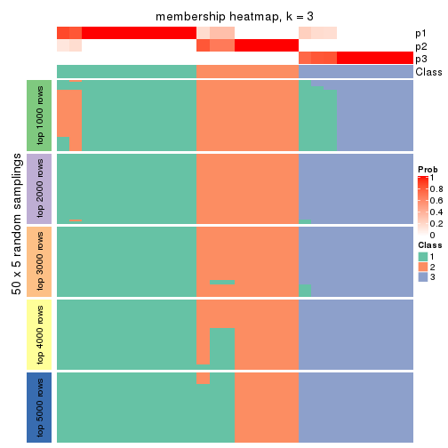
membership_heatmap(res, k = 4)
membership_heatmap(res, k = 5)
membership_heatmap(res, k = 6)
As soon as we have had the classes for columns, we can look for signatures which are significantly different between classes which can be candidate marks for certain classes. Following are the heatmaps for signatures.
Signature heatmaps where rows are scaled:
get_signatures(res, k = 2)
get_signatures(res, k = 3)
get_signatures(res, k = 4)

get_signatures(res, k = 5)
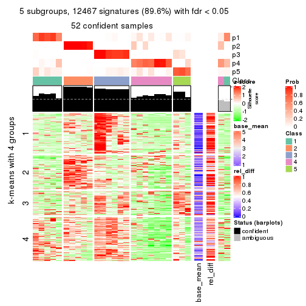
get_signatures(res, k = 6)
Signature heatmaps where rows are not scaled:
get_signatures(res, k = 2, scale_rows = FALSE)
get_signatures(res, k = 3, scale_rows = FALSE)
get_signatures(res, k = 4, scale_rows = FALSE)
get_signatures(res, k = 5, scale_rows = FALSE)
get_signatures(res, k = 6, scale_rows = FALSE)
Compare the overlap of signatures from different k:
compare_signatures(res)
get_signature() returns a data frame invisibly. TO get the list of signatures, the function
call should be assigned to a variable explicitly. In following code, if plot argument is set
to FALSE, no heatmap is plotted while only the differential analysis is performed.
# code only for demonstration
tb = get_signature(res, k = ..., plot = FALSE)
An example of the output of tb is:
#> which_row fdr mean_1 mean_2 scaled_mean_1 scaled_mean_2 km
#> 1 38 0.042760348 8.373488 9.131774 -0.5533452 0.5164555 1
#> 2 40 0.018707592 7.106213 8.469186 -0.6173731 0.5762149 1
#> 3 55 0.019134737 10.221463 11.207825 -0.6159697 0.5749050 1
#> 4 59 0.006059896 5.921854 7.869574 -0.6899429 0.6439467 1
#> 5 60 0.018055526 8.928898 10.211722 -0.6204761 0.5791110 1
#> 6 98 0.009384629 15.714769 14.887706 0.6635654 -0.6193277 2
...
The columns in tb are:
which_row: row indices corresponding to the input matrix.fdr: FDR for the differential test. mean_x: The mean value in group x.scaled_mean_x: The mean value in group x after rows are scaled.km: Row groups if k-means clustering is applied to rows.UMAP plot which shows how samples are separated.
dimension_reduction(res, k = 2, method = "UMAP")
dimension_reduction(res, k = 3, method = "UMAP")
dimension_reduction(res, k = 4, method = "UMAP")
dimension_reduction(res, k = 5, method = "UMAP")
dimension_reduction(res, k = 6, method = "UMAP")

Following heatmap shows how subgroups are split when increasing k:
collect_classes(res)
If matrix rows can be associated to genes, consider to use functional_enrichment(res,
...) to perform function enrichment for the signature genes. See this vignette for more detailed explanations.
The object with results only for a single top-value method and a single partition method can be extracted as:
res = res_list["CV", "pam"]
# you can also extract it by
# res = res_list["CV:pam"]
A summary of res and all the functions that can be applied to it:
res
#> A 'ConsensusPartition' object with k = 2, 3, 4, 5, 6.
#> On a matrix with 13917 rows and 56 columns.
#> Top rows (1000, 2000, 3000, 4000, 5000) are extracted by 'CV' method.
#> Subgroups are detected by 'pam' method.
#> Performed in total 1250 partitions by row resampling.
#> Best k for subgroups seems to be 5.
#>
#> Following methods can be applied to this 'ConsensusPartition' object:
#> [1] "cola_report" "collect_classes" "collect_plots"
#> [4] "collect_stats" "colnames" "compare_signatures"
#> [7] "consensus_heatmap" "dimension_reduction" "functional_enrichment"
#> [10] "get_anno_col" "get_anno" "get_classes"
#> [13] "get_consensus" "get_matrix" "get_membership"
#> [16] "get_param" "get_signatures" "get_stats"
#> [19] "is_best_k" "is_stable_k" "membership_heatmap"
#> [22] "ncol" "nrow" "plot_ecdf"
#> [25] "rownames" "select_partition_number" "show"
#> [28] "suggest_best_k" "test_to_known_factors"
collect_plots() function collects all the plots made from res for all k (number of partitions)
into one single page to provide an easy and fast comparison between different k.
collect_plots(res)
The plots are:
k and the heatmap of
predicted classes for each k.k.k.k.All the plots in panels can be made by individual functions and they are plotted later in this section.
select_partition_number() produces several plots showing different
statistics for choosing “optimized” k. There are following statistics:
k;k, the area increased is defined as \(A_k - A_{k-1}\).The detailed explanations of these statistics can be found in the cola vignette.
Generally speaking, lower PAC score, higher mean silhouette score or higher
concordance corresponds to better partition. Rand index and Jaccard index
measure how similar the current partition is compared to partition with k-1.
If they are too similar, we won't accept k is better than k-1.
select_partition_number(res)
The numeric values for all these statistics can be obtained by get_stats().
get_stats(res)
#> k 1-PAC mean_silhouette concordance area_increased Rand Jaccard
#> 2 2 0.992 0.981 0.990 0.2078 0.805 0.805
#> 3 3 0.590 0.910 0.935 1.0078 0.782 0.729
#> 4 4 0.865 0.925 0.971 0.4110 0.808 0.678
#> 5 5 0.971 0.937 0.975 0.1208 0.906 0.778
#> 6 6 0.950 0.932 0.947 0.0336 0.984 0.953
suggest_best_k() suggests the best \(k\) based on these statistics. The rules are as follows:
suggest_best_k(res)
#> [1] 5
#> attr(,"optional")
#> [1] 2
There is also optional best \(k\) = 2 that is worth to check.
Following shows the table of the partitions (You need to click the show/hide
code output link to see it). The membership matrix (columns with name p*)
is inferred by
clue::cl_consensus()
function with the SE method. Basically the value in the membership matrix
represents the probability to belong to a certain group. The finall class
label for an item is determined with the group with highest probability it
belongs to.
In get_classes() function, the entropy is calculated from the membership
matrix and the silhouette score is calculated from the consensus matrix.
cbind(get_classes(res, k = 2), get_membership(res, k = 2))
#> class entropy silhouette p1 p2
#> SRR1975508 2 0.0000 0.995 0.000 1.000
#> SRR1975507 2 0.0000 0.995 0.000 1.000
#> SRR1975506 2 0.0000 0.995 0.000 1.000
#> SRR1975505 2 0.0000 0.995 0.000 1.000
#> SRR1975503 1 0.0000 0.989 1.000 0.000
#> SRR1975504 1 0.0000 0.989 1.000 0.000
#> SRR1975501 1 0.0000 0.989 1.000 0.000
#> SRR1975502 1 0.0000 0.989 1.000 0.000
#> SRR1975499 1 0.0000 0.989 1.000 0.000
#> SRR1975500 1 0.0000 0.989 1.000 0.000
#> SRR1975497 1 0.0000 0.989 1.000 0.000
#> SRR1975498 1 0.0000 0.989 1.000 0.000
#> SRR1975493 1 0.0000 0.989 1.000 0.000
#> SRR1975494 1 0.0000 0.989 1.000 0.000
#> SRR1975495 1 0.0000 0.989 1.000 0.000
#> SRR1975496 1 0.0000 0.989 1.000 0.000
#> SRR1975491 1 0.0000 0.989 1.000 0.000
#> SRR1975492 1 0.0000 0.989 1.000 0.000
#> SRR1975489 1 0.0000 0.989 1.000 0.000
#> SRR1975490 1 0.0000 0.989 1.000 0.000
#> SRR1975487 1 0.0000 0.989 1.000 0.000
#> SRR1975488 1 0.0000 0.989 1.000 0.000
#> SRR1975485 1 0.0000 0.989 1.000 0.000
#> SRR1975486 1 0.0000 0.989 1.000 0.000
#> SRR1975483 1 0.0000 0.989 1.000 0.000
#> SRR1975484 1 0.0000 0.989 1.000 0.000
#> SRR1975481 1 0.0000 0.989 1.000 0.000
#> SRR1975482 1 0.0000 0.989 1.000 0.000
#> SRR1975477 1 0.0000 0.989 1.000 0.000
#> SRR1975478 1 0.0000 0.989 1.000 0.000
#> SRR1975479 1 0.0000 0.989 1.000 0.000
#> SRR1975480 1 0.0000 0.989 1.000 0.000
#> SRR1975475 1 0.0000 0.989 1.000 0.000
#> SRR1975476 1 0.0000 0.989 1.000 0.000
#> SRR1975473 1 0.0000 0.989 1.000 0.000
#> SRR1975474 1 0.0000 0.989 1.000 0.000
#> SRR1975471 1 0.0000 0.989 1.000 0.000
#> SRR1975472 1 0.0000 0.989 1.000 0.000
#> SRR1975469 1 0.0000 0.989 1.000 0.000
#> SRR1975470 1 0.0000 0.989 1.000 0.000
#> SRR1975467 1 0.0000 0.989 1.000 0.000
#> SRR1975468 1 0.0000 0.989 1.000 0.000
#> SRR1975465 1 0.0000 0.989 1.000 0.000
#> SRR1975466 1 0.0000 0.989 1.000 0.000
#> SRR1975463 1 0.0000 0.989 1.000 0.000
#> SRR1975464 1 0.0000 0.989 1.000 0.000
#> SRR1975461 2 0.0938 0.990 0.012 0.988
#> SRR1975462 2 0.0938 0.990 0.012 0.988
#> SRR1975459 1 0.0000 0.989 1.000 0.000
#> SRR1975460 1 0.0000 0.989 1.000 0.000
#> SRR1975457 1 0.4298 0.913 0.912 0.088
#> SRR1975458 1 0.4298 0.913 0.912 0.088
#> SRR1975455 1 0.4298 0.913 0.912 0.088
#> SRR1975456 1 0.4298 0.913 0.912 0.088
#> SRR1975453 1 0.4298 0.913 0.912 0.088
#> SRR1975454 1 0.4298 0.913 0.912 0.088
cbind(get_classes(res, k = 3), get_membership(res, k = 3))
#> class entropy silhouette p1 p2 p3
#> SRR1975508 3 0.0000 0.910 0.000 0.000 1.000
#> SRR1975507 3 0.0000 0.910 0.000 0.000 1.000
#> SRR1975506 3 0.0000 0.910 0.000 0.000 1.000
#> SRR1975505 3 0.0000 0.910 0.000 0.000 1.000
#> SRR1975503 1 0.0000 0.946 1.000 0.000 0.000
#> SRR1975504 1 0.0000 0.946 1.000 0.000 0.000
#> SRR1975501 1 0.0000 0.946 1.000 0.000 0.000
#> SRR1975502 1 0.0000 0.946 1.000 0.000 0.000
#> SRR1975499 1 0.0000 0.946 1.000 0.000 0.000
#> SRR1975500 1 0.0000 0.946 1.000 0.000 0.000
#> SRR1975497 1 0.0000 0.946 1.000 0.000 0.000
#> SRR1975498 1 0.0000 0.946 1.000 0.000 0.000
#> SRR1975493 2 0.4974 0.881 0.236 0.764 0.000
#> SRR1975494 2 0.5016 0.875 0.240 0.760 0.000
#> SRR1975495 1 0.0000 0.946 1.000 0.000 0.000
#> SRR1975496 1 0.0000 0.946 1.000 0.000 0.000
#> SRR1975491 1 0.0000 0.946 1.000 0.000 0.000
#> SRR1975492 1 0.0000 0.946 1.000 0.000 0.000
#> SRR1975489 1 0.0000 0.946 1.000 0.000 0.000
#> SRR1975490 1 0.0000 0.946 1.000 0.000 0.000
#> SRR1975487 1 0.0000 0.946 1.000 0.000 0.000
#> SRR1975488 1 0.0000 0.946 1.000 0.000 0.000
#> SRR1975485 1 0.0000 0.946 1.000 0.000 0.000
#> SRR1975486 1 0.0000 0.946 1.000 0.000 0.000
#> SRR1975483 1 0.0000 0.946 1.000 0.000 0.000
#> SRR1975484 1 0.0000 0.946 1.000 0.000 0.000
#> SRR1975481 1 0.0000 0.946 1.000 0.000 0.000
#> SRR1975482 1 0.0000 0.946 1.000 0.000 0.000
#> SRR1975477 1 0.0747 0.936 0.984 0.016 0.000
#> SRR1975478 1 0.0747 0.936 0.984 0.016 0.000
#> SRR1975479 1 0.0000 0.946 1.000 0.000 0.000
#> SRR1975480 1 0.0000 0.946 1.000 0.000 0.000
#> SRR1975475 1 0.0000 0.946 1.000 0.000 0.000
#> SRR1975476 1 0.0000 0.946 1.000 0.000 0.000
#> SRR1975473 1 0.0237 0.944 0.996 0.004 0.000
#> SRR1975474 1 0.0237 0.944 0.996 0.004 0.000
#> SRR1975471 1 0.3941 0.819 0.844 0.156 0.000
#> SRR1975472 1 0.3941 0.819 0.844 0.156 0.000
#> SRR1975469 1 0.0000 0.946 1.000 0.000 0.000
#> SRR1975470 1 0.0000 0.946 1.000 0.000 0.000
#> SRR1975467 1 0.3192 0.822 0.888 0.112 0.000
#> SRR1975468 1 0.3192 0.822 0.888 0.112 0.000
#> SRR1975465 2 0.4002 0.959 0.160 0.840 0.000
#> SRR1975466 2 0.4002 0.959 0.160 0.840 0.000
#> SRR1975463 2 0.4002 0.959 0.160 0.840 0.000
#> SRR1975464 2 0.4002 0.959 0.160 0.840 0.000
#> SRR1975461 3 0.5777 0.813 0.052 0.160 0.788
#> SRR1975462 3 0.5777 0.813 0.052 0.160 0.788
#> SRR1975459 2 0.4002 0.959 0.160 0.840 0.000
#> SRR1975460 2 0.4002 0.959 0.160 0.840 0.000
#> SRR1975457 1 0.5573 0.777 0.796 0.160 0.044
#> SRR1975458 1 0.5573 0.777 0.796 0.160 0.044
#> SRR1975455 1 0.5573 0.777 0.796 0.160 0.044
#> SRR1975456 1 0.5573 0.777 0.796 0.160 0.044
#> SRR1975453 1 0.5573 0.777 0.796 0.160 0.044
#> SRR1975454 1 0.5573 0.777 0.796 0.160 0.044
cbind(get_classes(res, k = 4), get_membership(res, k = 4))
#> class entropy silhouette p1 p2 p3 p4
#> SRR1975508 3 0.0000 1.000 0.000 0.000 1 0.000
#> SRR1975507 3 0.0000 1.000 0.000 0.000 1 0.000
#> SRR1975506 3 0.0000 1.000 0.000 0.000 1 0.000
#> SRR1975505 3 0.0000 1.000 0.000 0.000 1 0.000
#> SRR1975503 4 0.0000 0.968 0.000 0.000 0 1.000
#> SRR1975504 4 0.0000 0.968 0.000 0.000 0 1.000
#> SRR1975501 4 0.0000 0.968 0.000 0.000 0 1.000
#> SRR1975502 4 0.0000 0.968 0.000 0.000 0 1.000
#> SRR1975499 4 0.0000 0.968 0.000 0.000 0 1.000
#> SRR1975500 4 0.0000 0.968 0.000 0.000 0 1.000
#> SRR1975497 4 0.0000 0.968 0.000 0.000 0 1.000
#> SRR1975498 4 0.0000 0.968 0.000 0.000 0 1.000
#> SRR1975493 2 0.2868 0.772 0.000 0.864 0 0.136
#> SRR1975494 2 0.2973 0.760 0.000 0.856 0 0.144
#> SRR1975495 4 0.0000 0.968 0.000 0.000 0 1.000
#> SRR1975496 4 0.0000 0.968 0.000 0.000 0 1.000
#> SRR1975491 4 0.0000 0.968 0.000 0.000 0 1.000
#> SRR1975492 4 0.0000 0.968 0.000 0.000 0 1.000
#> SRR1975489 4 0.0000 0.968 0.000 0.000 0 1.000
#> SRR1975490 4 0.0000 0.968 0.000 0.000 0 1.000
#> SRR1975487 4 0.0000 0.968 0.000 0.000 0 1.000
#> SRR1975488 4 0.0000 0.968 0.000 0.000 0 1.000
#> SRR1975485 4 0.0000 0.968 0.000 0.000 0 1.000
#> SRR1975486 4 0.0000 0.968 0.000 0.000 0 1.000
#> SRR1975483 4 0.0000 0.968 0.000 0.000 0 1.000
#> SRR1975484 4 0.0000 0.968 0.000 0.000 0 1.000
#> SRR1975481 4 0.0000 0.968 0.000 0.000 0 1.000
#> SRR1975482 4 0.0000 0.968 0.000 0.000 0 1.000
#> SRR1975477 4 0.4406 0.581 0.300 0.000 0 0.700
#> SRR1975478 4 0.4454 0.565 0.308 0.000 0 0.692
#> SRR1975479 4 0.0000 0.968 0.000 0.000 0 1.000
#> SRR1975480 4 0.0000 0.968 0.000 0.000 0 1.000
#> SRR1975475 4 0.0000 0.968 0.000 0.000 0 1.000
#> SRR1975476 4 0.0000 0.968 0.000 0.000 0 1.000
#> SRR1975473 4 0.1716 0.913 0.064 0.000 0 0.936
#> SRR1975474 4 0.1716 0.913 0.064 0.000 0 0.936
#> SRR1975471 1 0.3219 0.749 0.836 0.000 0 0.164
#> SRR1975472 1 0.3172 0.756 0.840 0.000 0 0.160
#> SRR1975469 4 0.0000 0.968 0.000 0.000 0 1.000
#> SRR1975470 4 0.0000 0.968 0.000 0.000 0 1.000
#> SRR1975467 4 0.2760 0.840 0.000 0.128 0 0.872
#> SRR1975468 4 0.2760 0.840 0.000 0.128 0 0.872
#> SRR1975465 2 0.0000 0.924 0.000 1.000 0 0.000
#> SRR1975466 2 0.0000 0.924 0.000 1.000 0 0.000
#> SRR1975463 2 0.0000 0.924 0.000 1.000 0 0.000
#> SRR1975464 2 0.0000 0.924 0.000 1.000 0 0.000
#> SRR1975461 1 0.0000 0.935 1.000 0.000 0 0.000
#> SRR1975462 1 0.0000 0.935 1.000 0.000 0 0.000
#> SRR1975459 2 0.0000 0.924 0.000 1.000 0 0.000
#> SRR1975460 2 0.0000 0.924 0.000 1.000 0 0.000
#> SRR1975457 1 0.0000 0.935 1.000 0.000 0 0.000
#> SRR1975458 1 0.0000 0.935 1.000 0.000 0 0.000
#> SRR1975455 1 0.0469 0.929 0.988 0.000 0 0.012
#> SRR1975456 1 0.0469 0.929 0.988 0.000 0 0.012
#> SRR1975453 1 0.0000 0.935 1.000 0.000 0 0.000
#> SRR1975454 1 0.0000 0.935 1.000 0.000 0 0.000
cbind(get_classes(res, k = 5), get_membership(res, k = 5))
#> class entropy silhouette p1 p2 p3 p4 p5
#> SRR1975508 3 0.000 1.000 0.000 0.000 1 0.000 0.000
#> SRR1975507 3 0.000 1.000 0.000 0.000 1 0.000 0.000
#> SRR1975506 3 0.000 1.000 0.000 0.000 1 0.000 0.000
#> SRR1975505 3 0.000 1.000 0.000 0.000 1 0.000 0.000
#> SRR1975503 4 0.000 0.995 0.000 0.000 0 1.000 0.000
#> SRR1975504 4 0.000 0.995 0.000 0.000 0 1.000 0.000
#> SRR1975501 4 0.000 0.995 0.000 0.000 0 1.000 0.000
#> SRR1975502 4 0.000 0.995 0.000 0.000 0 1.000 0.000
#> SRR1975499 4 0.000 0.995 0.000 0.000 0 1.000 0.000
#> SRR1975500 4 0.000 0.995 0.000 0.000 0 1.000 0.000
#> SRR1975497 4 0.000 0.995 0.000 0.000 0 1.000 0.000
#> SRR1975498 4 0.000 0.995 0.000 0.000 0 1.000 0.000
#> SRR1975493 2 0.314 0.676 0.000 0.796 0 0.204 0.000
#> SRR1975494 2 0.318 0.670 0.000 0.792 0 0.208 0.000
#> SRR1975495 4 0.000 0.995 0.000 0.000 0 1.000 0.000
#> SRR1975496 4 0.000 0.995 0.000 0.000 0 1.000 0.000
#> SRR1975491 4 0.000 0.995 0.000 0.000 0 1.000 0.000
#> SRR1975492 4 0.000 0.995 0.000 0.000 0 1.000 0.000
#> SRR1975489 4 0.000 0.995 0.000 0.000 0 1.000 0.000
#> SRR1975490 4 0.000 0.995 0.000 0.000 0 1.000 0.000
#> SRR1975487 4 0.000 0.995 0.000 0.000 0 1.000 0.000
#> SRR1975488 4 0.000 0.995 0.000 0.000 0 1.000 0.000
#> SRR1975485 4 0.000 0.995 0.000 0.000 0 1.000 0.000
#> SRR1975486 4 0.000 0.995 0.000 0.000 0 1.000 0.000
#> SRR1975483 4 0.000 0.995 0.000 0.000 0 1.000 0.000
#> SRR1975484 4 0.000 0.995 0.000 0.000 0 1.000 0.000
#> SRR1975481 4 0.000 0.995 0.000 0.000 0 1.000 0.000
#> SRR1975482 4 0.000 0.995 0.000 0.000 0 1.000 0.000
#> SRR1975477 5 0.000 0.859 0.000 0.000 0 0.000 1.000
#> SRR1975478 5 0.000 0.859 0.000 0.000 0 0.000 1.000
#> SRR1975479 4 0.000 0.995 0.000 0.000 0 1.000 0.000
#> SRR1975480 4 0.000 0.995 0.000 0.000 0 1.000 0.000
#> SRR1975475 4 0.000 0.995 0.000 0.000 0 1.000 0.000
#> SRR1975476 4 0.000 0.995 0.000 0.000 0 1.000 0.000
#> SRR1975473 5 0.000 0.859 0.000 0.000 0 0.000 1.000
#> SRR1975474 5 0.000 0.859 0.000 0.000 0 0.000 1.000
#> SRR1975471 1 0.134 0.889 0.944 0.000 0 0.056 0.000
#> SRR1975472 1 0.134 0.889 0.944 0.000 0 0.056 0.000
#> SRR1975469 4 0.000 0.995 0.000 0.000 0 1.000 0.000
#> SRR1975470 4 0.000 0.995 0.000 0.000 0 1.000 0.000
#> SRR1975467 4 0.148 0.930 0.000 0.064 0 0.936 0.000
#> SRR1975468 4 0.148 0.930 0.000 0.064 0 0.936 0.000
#> SRR1975465 2 0.000 0.892 0.000 1.000 0 0.000 0.000
#> SRR1975466 2 0.000 0.892 0.000 1.000 0 0.000 0.000
#> SRR1975463 2 0.000 0.892 0.000 1.000 0 0.000 0.000
#> SRR1975464 2 0.000 0.892 0.000 1.000 0 0.000 0.000
#> SRR1975461 1 0.000 0.938 1.000 0.000 0 0.000 0.000
#> SRR1975462 1 0.000 0.938 1.000 0.000 0 0.000 0.000
#> SRR1975459 2 0.000 0.892 0.000 1.000 0 0.000 0.000
#> SRR1975460 2 0.000 0.892 0.000 1.000 0 0.000 0.000
#> SRR1975457 1 0.185 0.885 0.912 0.000 0 0.000 0.088
#> SRR1975458 1 0.185 0.885 0.912 0.000 0 0.000 0.088
#> SRR1975455 5 0.388 0.662 0.288 0.000 0 0.004 0.708
#> SRR1975456 5 0.388 0.662 0.288 0.000 0 0.004 0.708
#> SRR1975453 1 0.000 0.938 1.000 0.000 0 0.000 0.000
#> SRR1975454 1 0.000 0.938 1.000 0.000 0 0.000 0.000
cbind(get_classes(res, k = 6), get_membership(res, k = 6))
#> class entropy silhouette p1 p2 p3 p4 p5 p6
#> SRR1975508 3 0.0000 1.000 0.000 0.000 1 0.000 0.000 0.000
#> SRR1975507 3 0.0000 1.000 0.000 0.000 1 0.000 0.000 0.000
#> SRR1975506 3 0.0000 1.000 0.000 0.000 1 0.000 0.000 0.000
#> SRR1975505 3 0.0000 1.000 0.000 0.000 1 0.000 0.000 0.000
#> SRR1975503 4 0.0000 0.960 0.000 0.000 0 1.000 0.000 0.000
#> SRR1975504 4 0.0000 0.960 0.000 0.000 0 1.000 0.000 0.000
#> SRR1975501 4 0.0000 0.960 0.000 0.000 0 1.000 0.000 0.000
#> SRR1975502 4 0.0000 0.960 0.000 0.000 0 1.000 0.000 0.000
#> SRR1975499 4 0.0000 0.960 0.000 0.000 0 1.000 0.000 0.000
#> SRR1975500 4 0.0000 0.960 0.000 0.000 0 1.000 0.000 0.000
#> SRR1975497 4 0.1625 0.953 0.060 0.000 0 0.928 0.000 0.012
#> SRR1975498 4 0.1625 0.953 0.060 0.000 0 0.928 0.000 0.012
#> SRR1975493 2 0.3582 0.696 0.000 0.768 0 0.196 0.000 0.036
#> SRR1975494 2 0.3612 0.690 0.000 0.764 0 0.200 0.000 0.036
#> SRR1975495 4 0.1563 0.954 0.056 0.000 0 0.932 0.000 0.012
#> SRR1975496 4 0.1563 0.954 0.056 0.000 0 0.932 0.000 0.012
#> SRR1975491 4 0.0000 0.960 0.000 0.000 0 1.000 0.000 0.000
#> SRR1975492 4 0.0000 0.960 0.000 0.000 0 1.000 0.000 0.000
#> SRR1975489 4 0.0146 0.961 0.000 0.000 0 0.996 0.000 0.004
#> SRR1975490 4 0.0291 0.961 0.004 0.000 0 0.992 0.000 0.004
#> SRR1975487 4 0.0000 0.960 0.000 0.000 0 1.000 0.000 0.000
#> SRR1975488 4 0.0000 0.960 0.000 0.000 0 1.000 0.000 0.000
#> SRR1975485 4 0.0891 0.960 0.024 0.000 0 0.968 0.000 0.008
#> SRR1975486 4 0.1074 0.959 0.028 0.000 0 0.960 0.000 0.012
#> SRR1975483 4 0.1967 0.941 0.084 0.000 0 0.904 0.000 0.012
#> SRR1975484 4 0.1967 0.941 0.084 0.000 0 0.904 0.000 0.012
#> SRR1975481 4 0.1967 0.941 0.084 0.000 0 0.904 0.000 0.012
#> SRR1975482 4 0.1967 0.941 0.084 0.000 0 0.904 0.000 0.012
#> SRR1975477 5 0.0000 0.957 0.000 0.000 0 0.000 1.000 0.000
#> SRR1975478 5 0.0000 0.957 0.000 0.000 0 0.000 1.000 0.000
#> SRR1975479 4 0.1745 0.950 0.068 0.000 0 0.920 0.000 0.012
#> SRR1975480 4 0.1745 0.950 0.068 0.000 0 0.920 0.000 0.012
#> SRR1975475 4 0.0260 0.961 0.008 0.000 0 0.992 0.000 0.000
#> SRR1975476 4 0.0260 0.961 0.008 0.000 0 0.992 0.000 0.000
#> SRR1975473 5 0.1421 0.957 0.028 0.000 0 0.000 0.944 0.028
#> SRR1975474 5 0.1421 0.957 0.028 0.000 0 0.000 0.944 0.028
#> SRR1975471 1 0.1297 0.812 0.948 0.000 0 0.040 0.000 0.012
#> SRR1975472 1 0.1297 0.812 0.948 0.000 0 0.040 0.000 0.012
#> SRR1975469 4 0.1745 0.950 0.068 0.000 0 0.920 0.000 0.012
#> SRR1975470 4 0.1745 0.950 0.068 0.000 0 0.920 0.000 0.012
#> SRR1975467 4 0.1204 0.922 0.000 0.056 0 0.944 0.000 0.000
#> SRR1975468 4 0.1204 0.922 0.000 0.056 0 0.944 0.000 0.000
#> SRR1975465 2 0.0000 0.902 0.000 1.000 0 0.000 0.000 0.000
#> SRR1975466 2 0.0000 0.902 0.000 1.000 0 0.000 0.000 0.000
#> SRR1975463 2 0.0000 0.902 0.000 1.000 0 0.000 0.000 0.000
#> SRR1975464 2 0.0000 0.902 0.000 1.000 0 0.000 0.000 0.000
#> SRR1975461 1 0.1610 0.902 0.916 0.000 0 0.000 0.000 0.084
#> SRR1975462 1 0.1610 0.902 0.916 0.000 0 0.000 0.000 0.084
#> SRR1975459 2 0.0000 0.902 0.000 1.000 0 0.000 0.000 0.000
#> SRR1975460 2 0.0000 0.902 0.000 1.000 0 0.000 0.000 0.000
#> SRR1975457 6 0.2219 0.937 0.136 0.000 0 0.000 0.000 0.864
#> SRR1975458 6 0.2219 0.937 0.136 0.000 0 0.000 0.000 0.864
#> SRR1975455 6 0.1204 0.940 0.056 0.000 0 0.000 0.000 0.944
#> SRR1975456 6 0.1204 0.940 0.056 0.000 0 0.000 0.000 0.944
#> SRR1975453 1 0.1610 0.902 0.916 0.000 0 0.000 0.000 0.084
#> SRR1975454 1 0.1610 0.902 0.916 0.000 0 0.000 0.000 0.084
Heatmaps for the consensus matrix. It visualizes the probability of two samples to be in a same group.
consensus_heatmap(res, k = 2)
consensus_heatmap(res, k = 3)
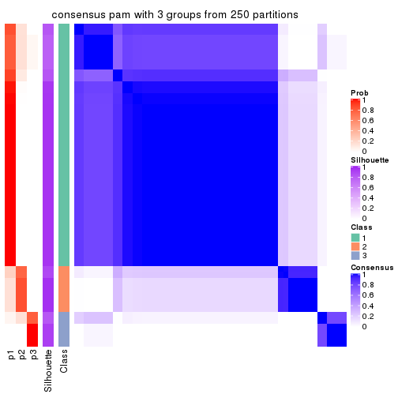
consensus_heatmap(res, k = 4)
consensus_heatmap(res, k = 5)
consensus_heatmap(res, k = 6)
Heatmaps for the membership of samples in all partitions to see how consistent they are:
membership_heatmap(res, k = 2)
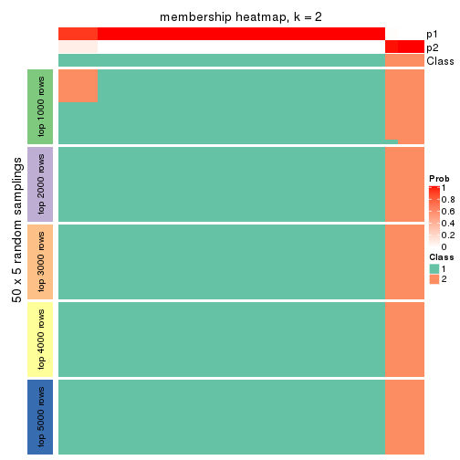
membership_heatmap(res, k = 3)
membership_heatmap(res, k = 4)
membership_heatmap(res, k = 5)
membership_heatmap(res, k = 6)
As soon as we have had the classes for columns, we can look for signatures which are significantly different between classes which can be candidate marks for certain classes. Following are the heatmaps for signatures.
Signature heatmaps where rows are scaled:
get_signatures(res, k = 2)
get_signatures(res, k = 3)
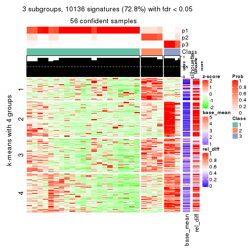
get_signatures(res, k = 4)

get_signatures(res, k = 5)

get_signatures(res, k = 6)
Signature heatmaps where rows are not scaled:
get_signatures(res, k = 2, scale_rows = FALSE)
get_signatures(res, k = 3, scale_rows = FALSE)
get_signatures(res, k = 4, scale_rows = FALSE)
get_signatures(res, k = 5, scale_rows = FALSE)
get_signatures(res, k = 6, scale_rows = FALSE)

Compare the overlap of signatures from different k:
compare_signatures(res)
get_signature() returns a data frame invisibly. TO get the list of signatures, the function
call should be assigned to a variable explicitly. In following code, if plot argument is set
to FALSE, no heatmap is plotted while only the differential analysis is performed.
# code only for demonstration
tb = get_signature(res, k = ..., plot = FALSE)
An example of the output of tb is:
#> which_row fdr mean_1 mean_2 scaled_mean_1 scaled_mean_2 km
#> 1 38 0.042760348 8.373488 9.131774 -0.5533452 0.5164555 1
#> 2 40 0.018707592 7.106213 8.469186 -0.6173731 0.5762149 1
#> 3 55 0.019134737 10.221463 11.207825 -0.6159697 0.5749050 1
#> 4 59 0.006059896 5.921854 7.869574 -0.6899429 0.6439467 1
#> 5 60 0.018055526 8.928898 10.211722 -0.6204761 0.5791110 1
#> 6 98 0.009384629 15.714769 14.887706 0.6635654 -0.6193277 2
...
The columns in tb are:
which_row: row indices corresponding to the input matrix.fdr: FDR for the differential test. mean_x: The mean value in group x.scaled_mean_x: The mean value in group x after rows are scaled.km: Row groups if k-means clustering is applied to rows.UMAP plot which shows how samples are separated.
dimension_reduction(res, k = 2, method = "UMAP")
dimension_reduction(res, k = 3, method = "UMAP")
dimension_reduction(res, k = 4, method = "UMAP")
dimension_reduction(res, k = 5, method = "UMAP")
dimension_reduction(res, k = 6, method = "UMAP")
Following heatmap shows how subgroups are split when increasing k:
collect_classes(res)
If matrix rows can be associated to genes, consider to use functional_enrichment(res,
...) to perform function enrichment for the signature genes. See this vignette for more detailed explanations.
The object with results only for a single top-value method and a single partition method can be extracted as:
res = res_list["CV", "mclust"]
# you can also extract it by
# res = res_list["CV:mclust"]
A summary of res and all the functions that can be applied to it:
res
#> A 'ConsensusPartition' object with k = 2, 3, 4, 5, 6.
#> On a matrix with 13917 rows and 56 columns.
#> Top rows (1000, 2000, 3000, 4000, 5000) are extracted by 'CV' method.
#> Subgroups are detected by 'mclust' method.
#> Performed in total 1250 partitions by row resampling.
#> Best k for subgroups seems to be 2.
#>
#> Following methods can be applied to this 'ConsensusPartition' object:
#> [1] "cola_report" "collect_classes" "collect_plots"
#> [4] "collect_stats" "colnames" "compare_signatures"
#> [7] "consensus_heatmap" "dimension_reduction" "functional_enrichment"
#> [10] "get_anno_col" "get_anno" "get_classes"
#> [13] "get_consensus" "get_matrix" "get_membership"
#> [16] "get_param" "get_signatures" "get_stats"
#> [19] "is_best_k" "is_stable_k" "membership_heatmap"
#> [22] "ncol" "nrow" "plot_ecdf"
#> [25] "rownames" "select_partition_number" "show"
#> [28] "suggest_best_k" "test_to_known_factors"
collect_plots() function collects all the plots made from res for all k (number of partitions)
into one single page to provide an easy and fast comparison between different k.
collect_plots(res)
The plots are:
k and the heatmap of
predicted classes for each k.k.k.k.All the plots in panels can be made by individual functions and they are plotted later in this section.
select_partition_number() produces several plots showing different
statistics for choosing “optimized” k. There are following statistics:
k;k, the area increased is defined as \(A_k - A_{k-1}\).The detailed explanations of these statistics can be found in the cola vignette.
Generally speaking, lower PAC score, higher mean silhouette score or higher
concordance corresponds to better partition. Rand index and Jaccard index
measure how similar the current partition is compared to partition with k-1.
If they are too similar, we won't accept k is better than k-1.
select_partition_number(res)
The numeric values for all these statistics can be obtained by get_stats().
get_stats(res)
#> k 1-PAC mean_silhouette concordance area_increased Rand Jaccard
#> 2 2 0.384 0.811 0.859 0.4656 0.532 0.532
#> 3 3 0.562 0.715 0.840 0.3724 0.743 0.540
#> 4 4 0.565 0.722 0.788 0.1251 0.927 0.783
#> 5 5 0.639 0.712 0.725 0.0430 0.948 0.808
#> 6 6 0.744 0.691 0.835 0.0623 0.852 0.482
suggest_best_k() suggests the best \(k\) based on these statistics. The rules are as follows:
suggest_best_k(res)
#> [1] 2
Following shows the table of the partitions (You need to click the show/hide
code output link to see it). The membership matrix (columns with name p*)
is inferred by
clue::cl_consensus()
function with the SE method. Basically the value in the membership matrix
represents the probability to belong to a certain group. The finall class
label for an item is determined with the group with highest probability it
belongs to.
In get_classes() function, the entropy is calculated from the membership
matrix and the silhouette score is calculated from the consensus matrix.
cbind(get_classes(res, k = 2), get_membership(res, k = 2))
#> class entropy silhouette p1 p2
#> SRR1975508 2 0.6247 0.677 0.156 0.844
#> SRR1975507 2 0.6247 0.677 0.156 0.844
#> SRR1975506 2 0.6247 0.677 0.156 0.844
#> SRR1975505 2 0.6247 0.677 0.156 0.844
#> SRR1975503 1 0.0000 0.995 1.000 0.000
#> SRR1975504 1 0.0000 0.995 1.000 0.000
#> SRR1975501 1 0.0000 0.995 1.000 0.000
#> SRR1975502 1 0.0000 0.995 1.000 0.000
#> SRR1975499 1 0.0672 0.988 0.992 0.008
#> SRR1975500 1 0.0672 0.988 0.992 0.008
#> SRR1975497 2 0.9754 0.635 0.408 0.592
#> SRR1975498 2 0.9754 0.635 0.408 0.592
#> SRR1975493 1 0.0000 0.995 1.000 0.000
#> SRR1975494 1 0.0000 0.995 1.000 0.000
#> SRR1975495 2 0.9661 0.658 0.392 0.608
#> SRR1975496 2 0.9661 0.658 0.392 0.608
#> SRR1975491 1 0.0000 0.995 1.000 0.000
#> SRR1975492 1 0.0000 0.995 1.000 0.000
#> SRR1975489 2 0.9209 0.701 0.336 0.664
#> SRR1975490 2 0.9209 0.701 0.336 0.664
#> SRR1975487 1 0.1633 0.969 0.976 0.024
#> SRR1975488 1 0.1843 0.963 0.972 0.028
#> SRR1975485 2 0.9635 0.661 0.388 0.612
#> SRR1975486 2 0.9522 0.676 0.372 0.628
#> SRR1975483 2 0.9686 0.653 0.396 0.604
#> SRR1975484 2 0.9686 0.653 0.396 0.604
#> SRR1975481 2 0.9087 0.707 0.324 0.676
#> SRR1975482 2 0.9087 0.707 0.324 0.676
#> SRR1975477 2 0.5059 0.772 0.112 0.888
#> SRR1975478 2 0.5059 0.772 0.112 0.888
#> SRR1975479 2 0.4431 0.771 0.092 0.908
#> SRR1975480 2 0.4431 0.771 0.092 0.908
#> SRR1975475 2 0.9209 0.701 0.336 0.664
#> SRR1975476 2 0.9209 0.701 0.336 0.664
#> SRR1975473 2 0.4690 0.771 0.100 0.900
#> SRR1975474 2 0.4690 0.771 0.100 0.900
#> SRR1975471 2 0.6712 0.726 0.176 0.824
#> SRR1975472 2 0.6712 0.726 0.176 0.824
#> SRR1975469 2 0.9635 0.662 0.388 0.612
#> SRR1975470 2 0.9635 0.662 0.388 0.612
#> SRR1975467 1 0.0000 0.995 1.000 0.000
#> SRR1975468 1 0.0000 0.995 1.000 0.000
#> SRR1975465 1 0.0000 0.995 1.000 0.000
#> SRR1975466 1 0.0000 0.995 1.000 0.000
#> SRR1975463 1 0.0000 0.995 1.000 0.000
#> SRR1975464 1 0.0000 0.995 1.000 0.000
#> SRR1975461 2 0.1184 0.746 0.016 0.984
#> SRR1975462 2 0.1184 0.746 0.016 0.984
#> SRR1975459 1 0.0000 0.995 1.000 0.000
#> SRR1975460 1 0.0000 0.995 1.000 0.000
#> SRR1975457 2 0.1184 0.746 0.016 0.984
#> SRR1975458 2 0.1184 0.746 0.016 0.984
#> SRR1975455 2 0.1184 0.746 0.016 0.984
#> SRR1975456 2 0.1184 0.746 0.016 0.984
#> SRR1975453 2 0.4022 0.759 0.080 0.920
#> SRR1975454 2 0.4022 0.759 0.080 0.920
cbind(get_classes(res, k = 3), get_membership(res, k = 3))
#> class entropy silhouette p1 p2 p3
#> SRR1975508 3 0.2261 0.809 0.068 0.000 0.932
#> SRR1975507 3 0.2261 0.809 0.068 0.000 0.932
#> SRR1975506 3 0.2261 0.809 0.068 0.000 0.932
#> SRR1975505 3 0.2261 0.809 0.068 0.000 0.932
#> SRR1975503 2 0.5058 0.770 0.244 0.756 0.000
#> SRR1975504 2 0.5058 0.770 0.244 0.756 0.000
#> SRR1975501 2 0.5016 0.772 0.240 0.760 0.000
#> SRR1975502 2 0.5016 0.772 0.240 0.760 0.000
#> SRR1975499 2 0.5760 0.664 0.328 0.672 0.000
#> SRR1975500 2 0.5760 0.664 0.328 0.672 0.000
#> SRR1975497 1 0.0000 0.809 1.000 0.000 0.000
#> SRR1975498 1 0.0000 0.809 1.000 0.000 0.000
#> SRR1975493 2 0.1129 0.825 0.004 0.976 0.020
#> SRR1975494 2 0.1129 0.825 0.004 0.976 0.020
#> SRR1975495 1 0.0747 0.809 0.984 0.000 0.016
#> SRR1975496 1 0.0747 0.809 0.984 0.000 0.016
#> SRR1975491 2 0.5098 0.766 0.248 0.752 0.000
#> SRR1975492 2 0.5098 0.766 0.248 0.752 0.000
#> SRR1975489 1 0.2537 0.768 0.920 0.000 0.080
#> SRR1975490 1 0.2537 0.768 0.920 0.000 0.080
#> SRR1975487 1 0.6291 -0.217 0.532 0.468 0.000
#> SRR1975488 1 0.6286 -0.205 0.536 0.464 0.000
#> SRR1975485 1 0.0237 0.807 0.996 0.004 0.000
#> SRR1975486 1 0.0237 0.807 0.996 0.004 0.000
#> SRR1975483 1 0.0424 0.810 0.992 0.000 0.008
#> SRR1975484 1 0.0424 0.810 0.992 0.000 0.008
#> SRR1975481 1 0.0892 0.807 0.980 0.000 0.020
#> SRR1975482 1 0.0892 0.807 0.980 0.000 0.020
#> SRR1975477 3 0.5178 0.863 0.256 0.000 0.744
#> SRR1975478 3 0.5178 0.863 0.256 0.000 0.744
#> SRR1975479 3 0.5882 0.749 0.348 0.000 0.652
#> SRR1975480 3 0.5882 0.749 0.348 0.000 0.652
#> SRR1975475 1 0.2796 0.763 0.908 0.000 0.092
#> SRR1975476 1 0.2796 0.763 0.908 0.000 0.092
#> SRR1975473 3 0.5178 0.863 0.256 0.000 0.744
#> SRR1975474 3 0.5178 0.863 0.256 0.000 0.744
#> SRR1975471 1 0.4931 0.485 0.768 0.000 0.232
#> SRR1975472 1 0.4931 0.485 0.768 0.000 0.232
#> SRR1975469 1 0.0661 0.810 0.988 0.004 0.008
#> SRR1975470 1 0.0661 0.810 0.988 0.004 0.008
#> SRR1975467 2 0.0747 0.827 0.016 0.984 0.000
#> SRR1975468 2 0.0747 0.827 0.016 0.984 0.000
#> SRR1975465 2 0.2261 0.817 0.000 0.932 0.068
#> SRR1975466 2 0.2261 0.817 0.000 0.932 0.068
#> SRR1975463 2 0.2261 0.817 0.000 0.932 0.068
#> SRR1975464 2 0.2261 0.817 0.000 0.932 0.068
#> SRR1975461 3 0.5465 0.794 0.288 0.000 0.712
#> SRR1975462 3 0.5465 0.794 0.288 0.000 0.712
#> SRR1975459 2 0.4062 0.768 0.000 0.836 0.164
#> SRR1975460 2 0.4062 0.768 0.000 0.836 0.164
#> SRR1975457 3 0.4555 0.875 0.200 0.000 0.800
#> SRR1975458 3 0.4555 0.875 0.200 0.000 0.800
#> SRR1975455 3 0.4605 0.875 0.204 0.000 0.796
#> SRR1975456 3 0.4605 0.875 0.204 0.000 0.796
#> SRR1975453 1 0.6299 -0.308 0.524 0.000 0.476
#> SRR1975454 1 0.6299 -0.308 0.524 0.000 0.476
cbind(get_classes(res, k = 4), get_membership(res, k = 4))
#> class entropy silhouette p1 p2 p3 p4
#> SRR1975508 3 0.0188 0.833 0.000 0.000 0.996 0.004
#> SRR1975507 3 0.0188 0.833 0.000 0.000 0.996 0.004
#> SRR1975506 3 0.0188 0.833 0.000 0.000 0.996 0.004
#> SRR1975505 3 0.0188 0.833 0.000 0.000 0.996 0.004
#> SRR1975503 2 0.3123 0.737 0.156 0.844 0.000 0.000
#> SRR1975504 2 0.3123 0.737 0.156 0.844 0.000 0.000
#> SRR1975501 2 0.3266 0.733 0.168 0.832 0.000 0.000
#> SRR1975502 2 0.3266 0.733 0.168 0.832 0.000 0.000
#> SRR1975499 2 0.3801 0.687 0.220 0.780 0.000 0.000
#> SRR1975500 2 0.3837 0.682 0.224 0.776 0.000 0.000
#> SRR1975497 1 0.2892 0.773 0.896 0.000 0.036 0.068
#> SRR1975498 1 0.2816 0.775 0.900 0.000 0.036 0.064
#> SRR1975493 2 0.1474 0.766 0.000 0.948 0.000 0.052
#> SRR1975494 2 0.1474 0.766 0.000 0.948 0.000 0.052
#> SRR1975495 1 0.0524 0.792 0.988 0.000 0.004 0.008
#> SRR1975496 1 0.0524 0.792 0.988 0.000 0.004 0.008
#> SRR1975491 2 0.3311 0.730 0.172 0.828 0.000 0.000
#> SRR1975492 2 0.3311 0.730 0.172 0.828 0.000 0.000
#> SRR1975489 1 0.7127 0.577 0.632 0.056 0.076 0.236
#> SRR1975490 1 0.7127 0.577 0.632 0.056 0.076 0.236
#> SRR1975487 1 0.6516 0.386 0.576 0.332 0.000 0.092
#> SRR1975488 1 0.6516 0.386 0.576 0.332 0.000 0.092
#> SRR1975485 1 0.6020 0.692 0.736 0.060 0.052 0.152
#> SRR1975486 1 0.6065 0.690 0.732 0.060 0.052 0.156
#> SRR1975483 1 0.0188 0.792 0.996 0.000 0.000 0.004
#> SRR1975484 1 0.0188 0.792 0.996 0.000 0.000 0.004
#> SRR1975481 1 0.1284 0.793 0.964 0.000 0.024 0.012
#> SRR1975482 1 0.1284 0.793 0.964 0.000 0.024 0.012
#> SRR1975477 4 0.5339 0.844 0.020 0.000 0.356 0.624
#> SRR1975478 4 0.5339 0.844 0.020 0.000 0.356 0.624
#> SRR1975479 4 0.7625 0.641 0.220 0.004 0.276 0.500
#> SRR1975480 4 0.7625 0.641 0.220 0.004 0.276 0.500
#> SRR1975475 1 0.7521 0.453 0.548 0.048 0.080 0.324
#> SRR1975476 1 0.7505 0.451 0.552 0.048 0.080 0.320
#> SRR1975473 4 0.5339 0.844 0.020 0.000 0.356 0.624
#> SRR1975474 4 0.5339 0.844 0.020 0.000 0.356 0.624
#> SRR1975471 1 0.2867 0.714 0.884 0.000 0.104 0.012
#> SRR1975472 1 0.2867 0.714 0.884 0.000 0.104 0.012
#> SRR1975469 1 0.0707 0.794 0.980 0.000 0.000 0.020
#> SRR1975470 1 0.0707 0.794 0.980 0.000 0.000 0.020
#> SRR1975467 2 0.1209 0.768 0.004 0.964 0.000 0.032
#> SRR1975468 2 0.1209 0.768 0.004 0.964 0.000 0.032
#> SRR1975465 2 0.4730 0.679 0.000 0.636 0.000 0.364
#> SRR1975466 2 0.4730 0.679 0.000 0.636 0.000 0.364
#> SRR1975463 2 0.4730 0.679 0.000 0.636 0.000 0.364
#> SRR1975464 2 0.4730 0.679 0.000 0.636 0.000 0.364
#> SRR1975461 3 0.0779 0.822 0.004 0.000 0.980 0.016
#> SRR1975462 3 0.0779 0.822 0.004 0.000 0.980 0.016
#> SRR1975459 2 0.4730 0.679 0.000 0.636 0.000 0.364
#> SRR1975460 2 0.4730 0.679 0.000 0.636 0.000 0.364
#> SRR1975457 4 0.5650 0.822 0.024 0.000 0.432 0.544
#> SRR1975458 4 0.5650 0.822 0.024 0.000 0.432 0.544
#> SRR1975455 4 0.5724 0.827 0.028 0.000 0.424 0.548
#> SRR1975456 4 0.5724 0.827 0.028 0.000 0.424 0.548
#> SRR1975453 3 0.4454 0.536 0.308 0.000 0.692 0.000
#> SRR1975454 3 0.4454 0.536 0.308 0.000 0.692 0.000
cbind(get_classes(res, k = 5), get_membership(res, k = 5))
#> class entropy silhouette p1 p2 p3 p4 p5
#> SRR1975508 3 0.0290 0.772 0.000 0.000 0.992 0.000 0.008
#> SRR1975507 3 0.0290 0.772 0.000 0.000 0.992 0.000 0.008
#> SRR1975506 3 0.0290 0.772 0.000 0.000 0.992 0.000 0.008
#> SRR1975505 3 0.0290 0.772 0.000 0.000 0.992 0.000 0.008
#> SRR1975503 4 0.7001 0.963 0.236 0.220 0.000 0.512 0.032
#> SRR1975504 4 0.7001 0.963 0.236 0.220 0.000 0.512 0.032
#> SRR1975501 4 0.7017 0.967 0.244 0.216 0.000 0.508 0.032
#> SRR1975502 4 0.7017 0.967 0.244 0.216 0.000 0.508 0.032
#> SRR1975499 4 0.7066 0.928 0.284 0.196 0.000 0.488 0.032
#> SRR1975500 4 0.7066 0.928 0.284 0.196 0.000 0.488 0.032
#> SRR1975497 1 0.2462 0.702 0.880 0.000 0.000 0.008 0.112
#> SRR1975498 1 0.2411 0.704 0.884 0.000 0.000 0.008 0.108
#> SRR1975493 2 0.4949 0.298 0.000 0.572 0.000 0.396 0.032
#> SRR1975494 2 0.4949 0.298 0.000 0.572 0.000 0.396 0.032
#> SRR1975495 1 0.0671 0.728 0.980 0.000 0.000 0.004 0.016
#> SRR1975496 1 0.0566 0.727 0.984 0.000 0.000 0.004 0.012
#> SRR1975491 4 0.6974 0.968 0.244 0.208 0.000 0.516 0.032
#> SRR1975492 4 0.6974 0.968 0.244 0.208 0.000 0.516 0.032
#> SRR1975489 1 0.6299 0.471 0.508 0.000 0.000 0.176 0.316
#> SRR1975490 1 0.6299 0.471 0.508 0.000 0.000 0.176 0.316
#> SRR1975487 1 0.6410 0.148 0.544 0.020 0.000 0.312 0.124
#> SRR1975488 1 0.6410 0.148 0.544 0.020 0.000 0.312 0.124
#> SRR1975485 1 0.5896 0.526 0.600 0.000 0.000 0.184 0.216
#> SRR1975486 1 0.5867 0.531 0.604 0.000 0.000 0.180 0.216
#> SRR1975483 1 0.0162 0.723 0.996 0.000 0.000 0.004 0.000
#> SRR1975484 1 0.0162 0.723 0.996 0.000 0.000 0.004 0.000
#> SRR1975481 1 0.1043 0.726 0.960 0.000 0.000 0.000 0.040
#> SRR1975482 1 0.1043 0.726 0.960 0.000 0.000 0.000 0.040
#> SRR1975477 5 0.0162 0.898 0.000 0.000 0.000 0.004 0.996
#> SRR1975478 5 0.0162 0.898 0.000 0.000 0.000 0.004 0.996
#> SRR1975479 5 0.1892 0.880 0.080 0.000 0.000 0.004 0.916
#> SRR1975480 5 0.1892 0.880 0.080 0.000 0.000 0.004 0.916
#> SRR1975475 1 0.6299 0.471 0.508 0.000 0.000 0.176 0.316
#> SRR1975476 1 0.6299 0.471 0.508 0.000 0.000 0.176 0.316
#> SRR1975473 5 0.0324 0.898 0.004 0.000 0.000 0.004 0.992
#> SRR1975474 5 0.0324 0.898 0.004 0.000 0.000 0.004 0.992
#> SRR1975471 1 0.0693 0.718 0.980 0.000 0.012 0.008 0.000
#> SRR1975472 1 0.0693 0.718 0.980 0.000 0.012 0.008 0.000
#> SRR1975469 1 0.0566 0.723 0.984 0.000 0.000 0.012 0.004
#> SRR1975470 1 0.0566 0.723 0.984 0.000 0.000 0.012 0.004
#> SRR1975467 2 0.4996 0.231 0.000 0.548 0.000 0.420 0.032
#> SRR1975468 2 0.4996 0.231 0.000 0.548 0.000 0.420 0.032
#> SRR1975465 2 0.0000 0.737 0.000 1.000 0.000 0.000 0.000
#> SRR1975466 2 0.0000 0.737 0.000 1.000 0.000 0.000 0.000
#> SRR1975463 2 0.0000 0.737 0.000 1.000 0.000 0.000 0.000
#> SRR1975464 2 0.0000 0.737 0.000 1.000 0.000 0.000 0.000
#> SRR1975461 3 0.4302 0.769 0.000 0.000 0.520 0.480 0.000
#> SRR1975462 3 0.4302 0.769 0.000 0.000 0.520 0.480 0.000
#> SRR1975459 2 0.0000 0.737 0.000 1.000 0.000 0.000 0.000
#> SRR1975460 2 0.0000 0.737 0.000 1.000 0.000 0.000 0.000
#> SRR1975457 5 0.3710 0.801 0.024 0.000 0.192 0.000 0.784
#> SRR1975458 5 0.3710 0.801 0.024 0.000 0.192 0.000 0.784
#> SRR1975455 5 0.2754 0.888 0.040 0.000 0.080 0.000 0.880
#> SRR1975456 5 0.2754 0.888 0.040 0.000 0.080 0.000 0.880
#> SRR1975453 3 0.4746 0.765 0.016 0.000 0.504 0.480 0.000
#> SRR1975454 3 0.4746 0.765 0.016 0.000 0.504 0.480 0.000
cbind(get_classes(res, k = 6), get_membership(res, k = 6))
#> class entropy silhouette p1 p2 p3 p4 p5 p6
#> SRR1975508 3 0.0632 1.0000 0.000 0.000 0.976 0.000 0.000 0.024
#> SRR1975507 3 0.0632 1.0000 0.000 0.000 0.976 0.000 0.000 0.024
#> SRR1975506 3 0.0632 1.0000 0.000 0.000 0.976 0.000 0.000 0.024
#> SRR1975505 3 0.0632 1.0000 0.000 0.000 0.976 0.000 0.000 0.024
#> SRR1975503 4 0.2830 0.5929 0.020 0.144 0.000 0.836 0.000 0.000
#> SRR1975504 4 0.2830 0.5929 0.020 0.144 0.000 0.836 0.000 0.000
#> SRR1975501 4 0.2868 0.5989 0.028 0.132 0.000 0.840 0.000 0.000
#> SRR1975502 4 0.2868 0.5989 0.028 0.132 0.000 0.840 0.000 0.000
#> SRR1975499 4 0.3158 0.5980 0.064 0.084 0.008 0.844 0.000 0.000
#> SRR1975500 4 0.3158 0.5980 0.064 0.084 0.008 0.844 0.000 0.000
#> SRR1975497 1 0.1605 0.8437 0.936 0.000 0.004 0.016 0.044 0.000
#> SRR1975498 1 0.1605 0.8437 0.936 0.000 0.004 0.016 0.044 0.000
#> SRR1975493 4 0.3866 0.1793 0.000 0.484 0.000 0.516 0.000 0.000
#> SRR1975494 4 0.3866 0.1793 0.000 0.484 0.000 0.516 0.000 0.000
#> SRR1975495 1 0.1307 0.8741 0.952 0.000 0.008 0.032 0.008 0.000
#> SRR1975496 1 0.1307 0.8741 0.952 0.000 0.008 0.032 0.008 0.000
#> SRR1975491 4 0.2868 0.5989 0.028 0.132 0.000 0.840 0.000 0.000
#> SRR1975492 4 0.2868 0.5989 0.028 0.132 0.000 0.840 0.000 0.000
#> SRR1975489 4 0.5937 -0.0146 0.400 0.000 0.016 0.448 0.136 0.000
#> SRR1975490 4 0.5937 -0.0146 0.400 0.000 0.016 0.448 0.136 0.000
#> SRR1975487 4 0.3878 0.2977 0.320 0.000 0.008 0.668 0.004 0.000
#> SRR1975488 4 0.3878 0.2977 0.320 0.000 0.008 0.668 0.004 0.000
#> SRR1975485 1 0.4481 0.1935 0.556 0.000 0.004 0.416 0.024 0.000
#> SRR1975486 1 0.4481 0.2013 0.556 0.000 0.004 0.416 0.024 0.000
#> SRR1975483 1 0.0935 0.8728 0.964 0.000 0.000 0.032 0.004 0.000
#> SRR1975484 1 0.0935 0.8728 0.964 0.000 0.000 0.032 0.004 0.000
#> SRR1975481 1 0.2024 0.8406 0.920 0.000 0.016 0.028 0.036 0.000
#> SRR1975482 1 0.2024 0.8406 0.920 0.000 0.016 0.028 0.036 0.000
#> SRR1975477 5 0.0000 0.8350 0.000 0.000 0.000 0.000 1.000 0.000
#> SRR1975478 5 0.0000 0.8350 0.000 0.000 0.000 0.000 1.000 0.000
#> SRR1975479 5 0.4078 0.7726 0.072 0.000 0.016 0.140 0.772 0.000
#> SRR1975480 5 0.4078 0.7726 0.072 0.000 0.016 0.140 0.772 0.000
#> SRR1975475 4 0.5967 -0.0302 0.408 0.000 0.016 0.436 0.140 0.000
#> SRR1975476 4 0.5967 -0.0302 0.408 0.000 0.016 0.436 0.140 0.000
#> SRR1975473 5 0.0000 0.8350 0.000 0.000 0.000 0.000 1.000 0.000
#> SRR1975474 5 0.0000 0.8350 0.000 0.000 0.000 0.000 1.000 0.000
#> SRR1975471 1 0.1320 0.8697 0.948 0.000 0.016 0.036 0.000 0.000
#> SRR1975472 1 0.1320 0.8697 0.948 0.000 0.016 0.036 0.000 0.000
#> SRR1975469 1 0.0692 0.8729 0.976 0.000 0.004 0.020 0.000 0.000
#> SRR1975470 1 0.0692 0.8729 0.976 0.000 0.004 0.020 0.000 0.000
#> SRR1975467 4 0.3857 0.2167 0.000 0.468 0.000 0.532 0.000 0.000
#> SRR1975468 4 0.3857 0.2167 0.000 0.468 0.000 0.532 0.000 0.000
#> SRR1975465 2 0.0000 0.9981 0.000 1.000 0.000 0.000 0.000 0.000
#> SRR1975466 2 0.0000 0.9981 0.000 1.000 0.000 0.000 0.000 0.000
#> SRR1975463 2 0.0146 0.9961 0.000 0.996 0.000 0.004 0.000 0.000
#> SRR1975464 2 0.0146 0.9961 0.000 0.996 0.000 0.004 0.000 0.000
#> SRR1975461 6 0.0000 1.0000 0.000 0.000 0.000 0.000 0.000 1.000
#> SRR1975462 6 0.0000 1.0000 0.000 0.000 0.000 0.000 0.000 1.000
#> SRR1975459 2 0.0000 0.9981 0.000 1.000 0.000 0.000 0.000 0.000
#> SRR1975460 2 0.0000 0.9981 0.000 1.000 0.000 0.000 0.000 0.000
#> SRR1975457 5 0.4879 0.6865 0.040 0.000 0.000 0.036 0.660 0.264
#> SRR1975458 5 0.4879 0.6865 0.040 0.000 0.000 0.036 0.660 0.264
#> SRR1975455 5 0.3710 0.8276 0.056 0.000 0.004 0.036 0.824 0.080
#> SRR1975456 5 0.3710 0.8276 0.056 0.000 0.004 0.036 0.824 0.080
#> SRR1975453 6 0.0000 1.0000 0.000 0.000 0.000 0.000 0.000 1.000
#> SRR1975454 6 0.0000 1.0000 0.000 0.000 0.000 0.000 0.000 1.000
Heatmaps for the consensus matrix. It visualizes the probability of two samples to be in a same group.
consensus_heatmap(res, k = 2)
consensus_heatmap(res, k = 3)
consensus_heatmap(res, k = 4)
consensus_heatmap(res, k = 5)
consensus_heatmap(res, k = 6)
Heatmaps for the membership of samples in all partitions to see how consistent they are:
membership_heatmap(res, k = 2)
membership_heatmap(res, k = 3)
membership_heatmap(res, k = 4)
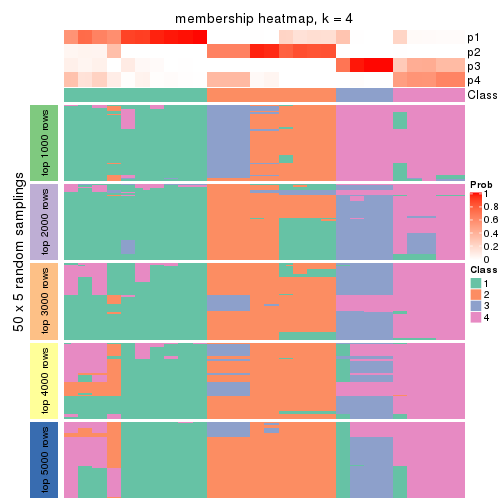
membership_heatmap(res, k = 5)
membership_heatmap(res, k = 6)
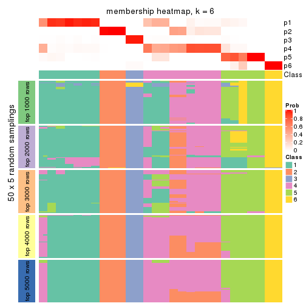
As soon as we have had the classes for columns, we can look for signatures which are significantly different between classes which can be candidate marks for certain classes. Following are the heatmaps for signatures.
Signature heatmaps where rows are scaled:
get_signatures(res, k = 2)
get_signatures(res, k = 3)
get_signatures(res, k = 4)
get_signatures(res, k = 5)
get_signatures(res, k = 6)
Signature heatmaps where rows are not scaled:
get_signatures(res, k = 2, scale_rows = FALSE)
get_signatures(res, k = 3, scale_rows = FALSE)
get_signatures(res, k = 4, scale_rows = FALSE)
get_signatures(res, k = 5, scale_rows = FALSE)
get_signatures(res, k = 6, scale_rows = FALSE)
Compare the overlap of signatures from different k:
compare_signatures(res)
get_signature() returns a data frame invisibly. TO get the list of signatures, the function
call should be assigned to a variable explicitly. In following code, if plot argument is set
to FALSE, no heatmap is plotted while only the differential analysis is performed.
# code only for demonstration
tb = get_signature(res, k = ..., plot = FALSE)
An example of the output of tb is:
#> which_row fdr mean_1 mean_2 scaled_mean_1 scaled_mean_2 km
#> 1 38 0.042760348 8.373488 9.131774 -0.5533452 0.5164555 1
#> 2 40 0.018707592 7.106213 8.469186 -0.6173731 0.5762149 1
#> 3 55 0.019134737 10.221463 11.207825 -0.6159697 0.5749050 1
#> 4 59 0.006059896 5.921854 7.869574 -0.6899429 0.6439467 1
#> 5 60 0.018055526 8.928898 10.211722 -0.6204761 0.5791110 1
#> 6 98 0.009384629 15.714769 14.887706 0.6635654 -0.6193277 2
...
The columns in tb are:
which_row: row indices corresponding to the input matrix.fdr: FDR for the differential test. mean_x: The mean value in group x.scaled_mean_x: The mean value in group x after rows are scaled.km: Row groups if k-means clustering is applied to rows.UMAP plot which shows how samples are separated.
dimension_reduction(res, k = 2, method = "UMAP")

dimension_reduction(res, k = 3, method = "UMAP")
dimension_reduction(res, k = 4, method = "UMAP")
dimension_reduction(res, k = 5, method = "UMAP")

dimension_reduction(res, k = 6, method = "UMAP")
Following heatmap shows how subgroups are split when increasing k:
collect_classes(res)
If matrix rows can be associated to genes, consider to use functional_enrichment(res,
...) to perform function enrichment for the signature genes. See this vignette for more detailed explanations.
The object with results only for a single top-value method and a single partition method can be extracted as:
res = res_list["CV", "NMF"]
# you can also extract it by
# res = res_list["CV:NMF"]
A summary of res and all the functions that can be applied to it:
res
#> A 'ConsensusPartition' object with k = 2, 3, 4, 5, 6.
#> On a matrix with 13917 rows and 56 columns.
#> Top rows (1000, 2000, 3000, 4000, 5000) are extracted by 'CV' method.
#> Subgroups are detected by 'NMF' method.
#> Performed in total 1250 partitions by row resampling.
#> Best k for subgroups seems to be 4.
#>
#> Following methods can be applied to this 'ConsensusPartition' object:
#> [1] "cola_report" "collect_classes" "collect_plots"
#> [4] "collect_stats" "colnames" "compare_signatures"
#> [7] "consensus_heatmap" "dimension_reduction" "functional_enrichment"
#> [10] "get_anno_col" "get_anno" "get_classes"
#> [13] "get_consensus" "get_matrix" "get_membership"
#> [16] "get_param" "get_signatures" "get_stats"
#> [19] "is_best_k" "is_stable_k" "membership_heatmap"
#> [22] "ncol" "nrow" "plot_ecdf"
#> [25] "rownames" "select_partition_number" "show"
#> [28] "suggest_best_k" "test_to_known_factors"
collect_plots() function collects all the plots made from res for all k (number of partitions)
into one single page to provide an easy and fast comparison between different k.
collect_plots(res)
The plots are:
k and the heatmap of
predicted classes for each k.k.k.k.All the plots in panels can be made by individual functions and they are plotted later in this section.
select_partition_number() produces several plots showing different
statistics for choosing “optimized” k. There are following statistics:
k;k, the area increased is defined as \(A_k - A_{k-1}\).The detailed explanations of these statistics can be found in the cola vignette.
Generally speaking, lower PAC score, higher mean silhouette score or higher
concordance corresponds to better partition. Rand index and Jaccard index
measure how similar the current partition is compared to partition with k-1.
If they are too similar, we won't accept k is better than k-1.
select_partition_number(res)
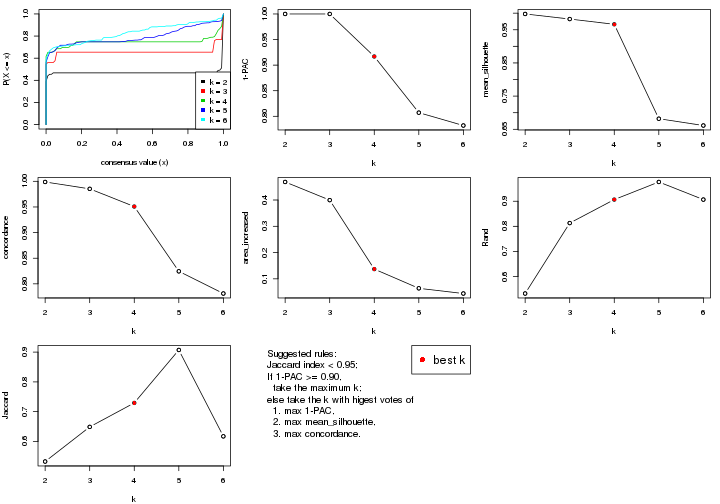
The numeric values for all these statistics can be obtained by get_stats().
get_stats(res)
#> k 1-PAC mean_silhouette concordance area_increased Rand Jaccard
#> 2 2 1.000 0.998 0.999 0.4687 0.532 0.532
#> 3 3 1.000 0.982 0.985 0.3996 0.813 0.649
#> 4 4 0.917 0.966 0.951 0.1371 0.906 0.729
#> 5 5 0.807 0.682 0.824 0.0639 0.977 0.907
#> 6 6 0.782 0.661 0.781 0.0441 0.906 0.617
suggest_best_k() suggests the best \(k\) based on these statistics. The rules are as follows:
suggest_best_k(res)
#> [1] 4
#> attr(,"optional")
#> [1] 2 3
There is also optional best \(k\) = 2 3 that is worth to check.
Following shows the table of the partitions (You need to click the show/hide
code output link to see it). The membership matrix (columns with name p*)
is inferred by
clue::cl_consensus()
function with the SE method. Basically the value in the membership matrix
represents the probability to belong to a certain group. The finall class
label for an item is determined with the group with highest probability it
belongs to.
In get_classes() function, the entropy is calculated from the membership
matrix and the silhouette score is calculated from the consensus matrix.
cbind(get_classes(res, k = 2), get_membership(res, k = 2))
#> class entropy silhouette p1 p2
#> SRR1975508 2 0.0000 0.998 0.000 1.000
#> SRR1975507 2 0.0000 0.998 0.000 1.000
#> SRR1975506 2 0.0000 0.998 0.000 1.000
#> SRR1975505 2 0.0000 0.998 0.000 1.000
#> SRR1975503 1 0.0000 1.000 1.000 0.000
#> SRR1975504 1 0.0000 1.000 1.000 0.000
#> SRR1975501 1 0.0000 1.000 1.000 0.000
#> SRR1975502 1 0.0000 1.000 1.000 0.000
#> SRR1975499 1 0.0000 1.000 1.000 0.000
#> SRR1975500 1 0.0000 1.000 1.000 0.000
#> SRR1975497 2 0.1414 0.980 0.020 0.980
#> SRR1975498 2 0.2043 0.968 0.032 0.968
#> SRR1975493 1 0.0000 1.000 1.000 0.000
#> SRR1975494 1 0.0000 1.000 1.000 0.000
#> SRR1975495 2 0.0000 0.998 0.000 1.000
#> SRR1975496 2 0.0000 0.998 0.000 1.000
#> SRR1975491 1 0.0000 1.000 1.000 0.000
#> SRR1975492 1 0.0000 1.000 1.000 0.000
#> SRR1975489 2 0.0376 0.995 0.004 0.996
#> SRR1975490 2 0.0376 0.995 0.004 0.996
#> SRR1975487 1 0.0000 1.000 1.000 0.000
#> SRR1975488 1 0.0000 1.000 1.000 0.000
#> SRR1975485 2 0.0672 0.992 0.008 0.992
#> SRR1975486 2 0.0376 0.995 0.004 0.996
#> SRR1975483 2 0.0000 0.998 0.000 1.000
#> SRR1975484 2 0.0000 0.998 0.000 1.000
#> SRR1975481 2 0.0000 0.998 0.000 1.000
#> SRR1975482 2 0.0000 0.998 0.000 1.000
#> SRR1975477 2 0.0000 0.998 0.000 1.000
#> SRR1975478 2 0.0000 0.998 0.000 1.000
#> SRR1975479 2 0.0000 0.998 0.000 1.000
#> SRR1975480 2 0.0000 0.998 0.000 1.000
#> SRR1975475 2 0.0000 0.998 0.000 1.000
#> SRR1975476 2 0.0000 0.998 0.000 1.000
#> SRR1975473 2 0.0000 0.998 0.000 1.000
#> SRR1975474 2 0.0000 0.998 0.000 1.000
#> SRR1975471 2 0.0000 0.998 0.000 1.000
#> SRR1975472 2 0.0000 0.998 0.000 1.000
#> SRR1975469 2 0.0000 0.998 0.000 1.000
#> SRR1975470 2 0.0000 0.998 0.000 1.000
#> SRR1975467 1 0.0000 1.000 1.000 0.000
#> SRR1975468 1 0.0000 1.000 1.000 0.000
#> SRR1975465 1 0.0000 1.000 1.000 0.000
#> SRR1975466 1 0.0000 1.000 1.000 0.000
#> SRR1975463 1 0.0000 1.000 1.000 0.000
#> SRR1975464 1 0.0000 1.000 1.000 0.000
#> SRR1975461 2 0.0000 0.998 0.000 1.000
#> SRR1975462 2 0.0000 0.998 0.000 1.000
#> SRR1975459 1 0.0000 1.000 1.000 0.000
#> SRR1975460 1 0.0000 1.000 1.000 0.000
#> SRR1975457 2 0.0000 0.998 0.000 1.000
#> SRR1975458 2 0.0000 0.998 0.000 1.000
#> SRR1975455 2 0.0000 0.998 0.000 1.000
#> SRR1975456 2 0.0000 0.998 0.000 1.000
#> SRR1975453 2 0.0000 0.998 0.000 1.000
#> SRR1975454 2 0.0000 0.998 0.000 1.000
cbind(get_classes(res, k = 3), get_membership(res, k = 3))
#> class entropy silhouette p1 p2 p3
#> SRR1975508 3 0.000 0.981 0.000 0 1.000
#> SRR1975507 3 0.000 0.981 0.000 0 1.000
#> SRR1975506 3 0.000 0.981 0.000 0 1.000
#> SRR1975505 3 0.000 0.981 0.000 0 1.000
#> SRR1975503 2 0.000 1.000 0.000 1 0.000
#> SRR1975504 2 0.000 1.000 0.000 1 0.000
#> SRR1975501 2 0.000 1.000 0.000 1 0.000
#> SRR1975502 2 0.000 1.000 0.000 1 0.000
#> SRR1975499 2 0.000 1.000 0.000 1 0.000
#> SRR1975500 2 0.000 1.000 0.000 1 0.000
#> SRR1975497 1 0.000 0.972 1.000 0 0.000
#> SRR1975498 1 0.000 0.972 1.000 0 0.000
#> SRR1975493 2 0.000 1.000 0.000 1 0.000
#> SRR1975494 2 0.000 1.000 0.000 1 0.000
#> SRR1975495 1 0.000 0.972 1.000 0 0.000
#> SRR1975496 1 0.000 0.972 1.000 0 0.000
#> SRR1975491 2 0.000 1.000 0.000 1 0.000
#> SRR1975492 2 0.000 1.000 0.000 1 0.000
#> SRR1975489 1 0.186 0.972 0.948 0 0.052
#> SRR1975490 1 0.186 0.972 0.948 0 0.052
#> SRR1975487 2 0.000 1.000 0.000 1 0.000
#> SRR1975488 2 0.000 1.000 0.000 1 0.000
#> SRR1975485 1 0.186 0.972 0.948 0 0.052
#> SRR1975486 1 0.186 0.972 0.948 0 0.052
#> SRR1975483 1 0.000 0.972 1.000 0 0.000
#> SRR1975484 1 0.000 0.972 1.000 0 0.000
#> SRR1975481 1 0.000 0.972 1.000 0 0.000
#> SRR1975482 1 0.000 0.972 1.000 0 0.000
#> SRR1975477 1 0.186 0.972 0.948 0 0.052
#> SRR1975478 1 0.186 0.972 0.948 0 0.052
#> SRR1975479 1 0.186 0.972 0.948 0 0.052
#> SRR1975480 1 0.186 0.972 0.948 0 0.052
#> SRR1975475 1 0.186 0.972 0.948 0 0.052
#> SRR1975476 1 0.186 0.972 0.948 0 0.052
#> SRR1975473 1 0.186 0.972 0.948 0 0.052
#> SRR1975474 1 0.186 0.972 0.948 0 0.052
#> SRR1975471 1 0.000 0.972 1.000 0 0.000
#> SRR1975472 1 0.000 0.972 1.000 0 0.000
#> SRR1975469 1 0.000 0.972 1.000 0 0.000
#> SRR1975470 1 0.000 0.972 1.000 0 0.000
#> SRR1975467 2 0.000 1.000 0.000 1 0.000
#> SRR1975468 2 0.000 1.000 0.000 1 0.000
#> SRR1975465 2 0.000 1.000 0.000 1 0.000
#> SRR1975466 2 0.000 1.000 0.000 1 0.000
#> SRR1975463 2 0.000 1.000 0.000 1 0.000
#> SRR1975464 2 0.000 1.000 0.000 1 0.000
#> SRR1975461 3 0.175 0.962 0.048 0 0.952
#> SRR1975462 3 0.175 0.962 0.048 0 0.952
#> SRR1975459 2 0.000 1.000 0.000 1 0.000
#> SRR1975460 2 0.000 1.000 0.000 1 0.000
#> SRR1975457 3 0.000 0.981 0.000 0 1.000
#> SRR1975458 3 0.000 0.981 0.000 0 1.000
#> SRR1975455 3 0.000 0.981 0.000 0 1.000
#> SRR1975456 3 0.000 0.981 0.000 0 1.000
#> SRR1975453 3 0.186 0.959 0.052 0 0.948
#> SRR1975454 3 0.186 0.959 0.052 0 0.948
cbind(get_classes(res, k = 4), get_membership(res, k = 4))
#> class entropy silhouette p1 p2 p3 p4
#> SRR1975508 3 0.0000 0.998 0.000 0.000 1.000 0.000
#> SRR1975507 3 0.0000 0.998 0.000 0.000 1.000 0.000
#> SRR1975506 3 0.0000 0.998 0.000 0.000 1.000 0.000
#> SRR1975505 3 0.0000 0.998 0.000 0.000 1.000 0.000
#> SRR1975503 2 0.1398 0.981 0.040 0.956 0.000 0.004
#> SRR1975504 2 0.1398 0.981 0.040 0.956 0.000 0.004
#> SRR1975501 2 0.0817 0.984 0.024 0.976 0.000 0.000
#> SRR1975502 2 0.0817 0.984 0.024 0.976 0.000 0.000
#> SRR1975499 2 0.1398 0.981 0.040 0.956 0.000 0.004
#> SRR1975500 2 0.1398 0.981 0.040 0.956 0.000 0.004
#> SRR1975497 1 0.1211 0.916 0.960 0.000 0.000 0.040
#> SRR1975498 1 0.1211 0.916 0.960 0.000 0.000 0.040
#> SRR1975493 2 0.0469 0.984 0.012 0.988 0.000 0.000
#> SRR1975494 2 0.0469 0.984 0.012 0.988 0.000 0.000
#> SRR1975495 1 0.1389 0.919 0.952 0.000 0.000 0.048
#> SRR1975496 1 0.1389 0.919 0.952 0.000 0.000 0.048
#> SRR1975491 2 0.1118 0.983 0.036 0.964 0.000 0.000
#> SRR1975492 2 0.1118 0.983 0.036 0.964 0.000 0.000
#> SRR1975489 4 0.0000 0.952 0.000 0.000 0.000 1.000
#> SRR1975490 4 0.0000 0.952 0.000 0.000 0.000 1.000
#> SRR1975487 2 0.1545 0.980 0.040 0.952 0.000 0.008
#> SRR1975488 2 0.1677 0.977 0.040 0.948 0.000 0.012
#> SRR1975485 4 0.2589 0.910 0.116 0.000 0.000 0.884
#> SRR1975486 4 0.2589 0.910 0.116 0.000 0.000 0.884
#> SRR1975483 1 0.2760 0.951 0.872 0.000 0.000 0.128
#> SRR1975484 1 0.2760 0.951 0.872 0.000 0.000 0.128
#> SRR1975481 1 0.2760 0.951 0.872 0.000 0.000 0.128
#> SRR1975482 1 0.2760 0.951 0.872 0.000 0.000 0.128
#> SRR1975477 4 0.0188 0.954 0.004 0.000 0.000 0.996
#> SRR1975478 4 0.0188 0.954 0.004 0.000 0.000 0.996
#> SRR1975479 4 0.0188 0.954 0.004 0.000 0.000 0.996
#> SRR1975480 4 0.0188 0.954 0.004 0.000 0.000 0.996
#> SRR1975475 4 0.2589 0.910 0.116 0.000 0.000 0.884
#> SRR1975476 4 0.2589 0.910 0.116 0.000 0.000 0.884
#> SRR1975473 4 0.0188 0.954 0.004 0.000 0.000 0.996
#> SRR1975474 4 0.0188 0.954 0.004 0.000 0.000 0.996
#> SRR1975471 1 0.3123 0.939 0.844 0.000 0.000 0.156
#> SRR1975472 1 0.3123 0.939 0.844 0.000 0.000 0.156
#> SRR1975469 1 0.3172 0.939 0.840 0.000 0.000 0.160
#> SRR1975470 1 0.3172 0.939 0.840 0.000 0.000 0.160
#> SRR1975467 2 0.0000 0.984 0.000 1.000 0.000 0.000
#> SRR1975468 2 0.0000 0.984 0.000 1.000 0.000 0.000
#> SRR1975465 2 0.0000 0.984 0.000 1.000 0.000 0.000
#> SRR1975466 2 0.0000 0.984 0.000 1.000 0.000 0.000
#> SRR1975463 2 0.0000 0.984 0.000 1.000 0.000 0.000
#> SRR1975464 2 0.0000 0.984 0.000 1.000 0.000 0.000
#> SRR1975461 3 0.0336 0.996 0.008 0.000 0.992 0.000
#> SRR1975462 3 0.0336 0.996 0.008 0.000 0.992 0.000
#> SRR1975459 2 0.0000 0.984 0.000 1.000 0.000 0.000
#> SRR1975460 2 0.0000 0.984 0.000 1.000 0.000 0.000
#> SRR1975457 3 0.0000 0.998 0.000 0.000 1.000 0.000
#> SRR1975458 3 0.0000 0.998 0.000 0.000 1.000 0.000
#> SRR1975455 3 0.0000 0.998 0.000 0.000 1.000 0.000
#> SRR1975456 3 0.0000 0.998 0.000 0.000 1.000 0.000
#> SRR1975453 3 0.0336 0.996 0.008 0.000 0.992 0.000
#> SRR1975454 3 0.0336 0.996 0.008 0.000 0.992 0.000
cbind(get_classes(res, k = 5), get_membership(res, k = 5))
#> class entropy silhouette p1 p2 p3 p4 p5
#> SRR1975508 3 0.0000 0.920 0.000 0.000 1.000 0.000 0.000
#> SRR1975507 3 0.0000 0.920 0.000 0.000 1.000 0.000 0.000
#> SRR1975506 3 0.0000 0.920 0.000 0.000 1.000 0.000 0.000
#> SRR1975505 3 0.0000 0.920 0.000 0.000 1.000 0.000 0.000
#> SRR1975503 2 0.4273 -0.654 0.000 0.552 0.000 0.000 0.448
#> SRR1975504 2 0.4273 -0.654 0.000 0.552 0.000 0.000 0.448
#> SRR1975501 2 0.2488 0.579 0.004 0.872 0.000 0.000 0.124
#> SRR1975502 2 0.2536 0.574 0.004 0.868 0.000 0.000 0.128
#> SRR1975499 2 0.4287 -0.643 0.000 0.540 0.000 0.000 0.460
#> SRR1975500 2 0.4287 -0.643 0.000 0.540 0.000 0.000 0.460
#> SRR1975497 1 0.2763 0.824 0.848 0.000 0.000 0.004 0.148
#> SRR1975498 1 0.2763 0.824 0.848 0.000 0.000 0.004 0.148
#> SRR1975493 2 0.2732 0.498 0.000 0.840 0.000 0.000 0.160
#> SRR1975494 2 0.2732 0.498 0.000 0.840 0.000 0.000 0.160
#> SRR1975495 1 0.2674 0.827 0.856 0.000 0.000 0.004 0.140
#> SRR1975496 1 0.2674 0.827 0.856 0.000 0.000 0.004 0.140
#> SRR1975491 2 0.3752 0.298 0.000 0.708 0.000 0.000 0.292
#> SRR1975492 2 0.3774 0.292 0.000 0.704 0.000 0.000 0.296
#> SRR1975489 4 0.1608 0.868 0.000 0.000 0.000 0.928 0.072
#> SRR1975490 4 0.1608 0.868 0.000 0.000 0.000 0.928 0.072
#> SRR1975487 5 0.4641 0.970 0.000 0.456 0.000 0.012 0.532
#> SRR1975488 5 0.4807 0.970 0.000 0.448 0.000 0.020 0.532
#> SRR1975485 4 0.5625 0.739 0.084 0.000 0.012 0.632 0.272
#> SRR1975486 4 0.5625 0.739 0.084 0.000 0.012 0.632 0.272
#> SRR1975483 1 0.1965 0.869 0.924 0.000 0.000 0.052 0.024
#> SRR1975484 1 0.1965 0.869 0.924 0.000 0.000 0.052 0.024
#> SRR1975481 1 0.2054 0.869 0.920 0.000 0.000 0.052 0.028
#> SRR1975482 1 0.2054 0.869 0.920 0.000 0.000 0.052 0.028
#> SRR1975477 4 0.0290 0.877 0.000 0.000 0.000 0.992 0.008
#> SRR1975478 4 0.0290 0.877 0.000 0.000 0.000 0.992 0.008
#> SRR1975479 4 0.0290 0.876 0.000 0.000 0.000 0.992 0.008
#> SRR1975480 4 0.0290 0.876 0.000 0.000 0.000 0.992 0.008
#> SRR1975475 4 0.5336 0.768 0.080 0.000 0.012 0.676 0.232
#> SRR1975476 4 0.5336 0.768 0.080 0.000 0.012 0.676 0.232
#> SRR1975473 4 0.0162 0.876 0.000 0.000 0.000 0.996 0.004
#> SRR1975474 4 0.0162 0.876 0.000 0.000 0.000 0.996 0.004
#> SRR1975471 1 0.4298 0.810 0.756 0.000 0.000 0.060 0.184
#> SRR1975472 1 0.4298 0.810 0.756 0.000 0.000 0.060 0.184
#> SRR1975469 1 0.3875 0.836 0.804 0.000 0.000 0.072 0.124
#> SRR1975470 1 0.3875 0.836 0.804 0.000 0.000 0.072 0.124
#> SRR1975467 2 0.0000 0.668 0.000 1.000 0.000 0.000 0.000
#> SRR1975468 2 0.0000 0.668 0.000 1.000 0.000 0.000 0.000
#> SRR1975465 2 0.0000 0.668 0.000 1.000 0.000 0.000 0.000
#> SRR1975466 2 0.0000 0.668 0.000 1.000 0.000 0.000 0.000
#> SRR1975463 2 0.0000 0.668 0.000 1.000 0.000 0.000 0.000
#> SRR1975464 2 0.0000 0.668 0.000 1.000 0.000 0.000 0.000
#> SRR1975461 3 0.3635 0.831 0.004 0.000 0.748 0.000 0.248
#> SRR1975462 3 0.3635 0.831 0.004 0.000 0.748 0.000 0.248
#> SRR1975459 2 0.0000 0.668 0.000 1.000 0.000 0.000 0.000
#> SRR1975460 2 0.0000 0.668 0.000 1.000 0.000 0.000 0.000
#> SRR1975457 3 0.0290 0.919 0.000 0.000 0.992 0.000 0.008
#> SRR1975458 3 0.0290 0.919 0.000 0.000 0.992 0.000 0.008
#> SRR1975455 3 0.0000 0.920 0.000 0.000 1.000 0.000 0.000
#> SRR1975456 3 0.0000 0.920 0.000 0.000 1.000 0.000 0.000
#> SRR1975453 3 0.3863 0.825 0.012 0.000 0.740 0.000 0.248
#> SRR1975454 3 0.3863 0.825 0.012 0.000 0.740 0.000 0.248
cbind(get_classes(res, k = 6), get_membership(res, k = 6))
#> class entropy silhouette p1 p2 p3 p4 p5 p6
#> SRR1975508 5 0.0000 0.978 0.000 0.000 0.000 0.000 1.000 0.000
#> SRR1975507 5 0.0000 0.978 0.000 0.000 0.000 0.000 1.000 0.000
#> SRR1975506 5 0.0000 0.978 0.000 0.000 0.000 0.000 1.000 0.000
#> SRR1975505 5 0.0000 0.978 0.000 0.000 0.000 0.000 1.000 0.000
#> SRR1975503 6 0.3636 0.874 0.000 0.320 0.004 0.000 0.000 0.676
#> SRR1975504 6 0.3636 0.874 0.000 0.320 0.004 0.000 0.000 0.676
#> SRR1975501 2 0.3916 0.693 0.084 0.804 0.040 0.000 0.000 0.072
#> SRR1975502 2 0.3916 0.693 0.084 0.804 0.040 0.000 0.000 0.072
#> SRR1975499 6 0.3922 0.861 0.000 0.320 0.016 0.000 0.000 0.664
#> SRR1975500 6 0.3922 0.861 0.000 0.320 0.016 0.000 0.000 0.664
#> SRR1975497 1 0.0146 0.691 0.996 0.000 0.000 0.000 0.000 0.004
#> SRR1975498 1 0.0146 0.691 0.996 0.000 0.000 0.000 0.000 0.004
#> SRR1975493 2 0.3720 0.521 0.000 0.736 0.028 0.000 0.000 0.236
#> SRR1975494 2 0.3720 0.521 0.000 0.736 0.028 0.000 0.000 0.236
#> SRR1975495 1 0.0717 0.693 0.976 0.000 0.016 0.000 0.000 0.008
#> SRR1975496 1 0.0717 0.693 0.976 0.000 0.016 0.000 0.000 0.008
#> SRR1975491 2 0.5262 0.254 0.024 0.576 0.060 0.000 0.000 0.340
#> SRR1975492 2 0.5262 0.254 0.024 0.576 0.060 0.000 0.000 0.340
#> SRR1975489 4 0.3204 0.747 0.004 0.000 0.032 0.820 0.000 0.144
#> SRR1975490 4 0.3204 0.747 0.004 0.000 0.032 0.820 0.000 0.144
#> SRR1975487 6 0.3261 0.816 0.004 0.192 0.004 0.008 0.000 0.792
#> SRR1975488 6 0.3261 0.816 0.004 0.192 0.004 0.008 0.000 0.792
#> SRR1975485 4 0.6791 0.544 0.216 0.000 0.056 0.428 0.000 0.300
#> SRR1975486 4 0.6791 0.544 0.216 0.000 0.056 0.428 0.000 0.300
#> SRR1975483 1 0.4871 0.651 0.592 0.000 0.352 0.016 0.000 0.040
#> SRR1975484 1 0.4871 0.651 0.592 0.000 0.352 0.016 0.000 0.040
#> SRR1975481 1 0.5001 0.629 0.560 0.000 0.380 0.016 0.000 0.044
#> SRR1975482 1 0.5001 0.629 0.560 0.000 0.380 0.016 0.000 0.044
#> SRR1975477 4 0.0909 0.775 0.000 0.000 0.020 0.968 0.000 0.012
#> SRR1975478 4 0.0909 0.775 0.000 0.000 0.020 0.968 0.000 0.012
#> SRR1975479 4 0.1176 0.775 0.000 0.000 0.024 0.956 0.000 0.020
#> SRR1975480 4 0.1176 0.775 0.000 0.000 0.024 0.956 0.000 0.020
#> SRR1975475 4 0.6498 0.570 0.228 0.000 0.044 0.492 0.000 0.236
#> SRR1975476 4 0.6498 0.570 0.228 0.000 0.044 0.492 0.000 0.236
#> SRR1975473 4 0.0972 0.771 0.000 0.000 0.028 0.964 0.000 0.008
#> SRR1975474 4 0.0972 0.771 0.000 0.000 0.028 0.964 0.000 0.008
#> SRR1975471 3 0.3342 0.161 0.228 0.000 0.760 0.012 0.000 0.000
#> SRR1975472 3 0.3342 0.161 0.228 0.000 0.760 0.012 0.000 0.000
#> SRR1975469 3 0.4858 -0.201 0.364 0.000 0.584 0.032 0.000 0.020
#> SRR1975470 3 0.4858 -0.201 0.364 0.000 0.584 0.032 0.000 0.020
#> SRR1975467 2 0.0260 0.816 0.000 0.992 0.008 0.000 0.000 0.000
#> SRR1975468 2 0.0260 0.816 0.000 0.992 0.008 0.000 0.000 0.000
#> SRR1975465 2 0.0000 0.818 0.000 1.000 0.000 0.000 0.000 0.000
#> SRR1975466 2 0.0000 0.818 0.000 1.000 0.000 0.000 0.000 0.000
#> SRR1975463 2 0.0000 0.818 0.000 1.000 0.000 0.000 0.000 0.000
#> SRR1975464 2 0.0000 0.818 0.000 1.000 0.000 0.000 0.000 0.000
#> SRR1975461 3 0.5184 0.268 0.000 0.000 0.480 0.000 0.432 0.088
#> SRR1975462 3 0.5184 0.268 0.000 0.000 0.480 0.000 0.432 0.088
#> SRR1975459 2 0.0000 0.818 0.000 1.000 0.000 0.000 0.000 0.000
#> SRR1975460 2 0.0000 0.818 0.000 1.000 0.000 0.000 0.000 0.000
#> SRR1975457 5 0.1003 0.963 0.000 0.000 0.016 0.000 0.964 0.020
#> SRR1975458 5 0.1003 0.963 0.000 0.000 0.016 0.000 0.964 0.020
#> SRR1975455 5 0.0976 0.960 0.000 0.000 0.016 0.008 0.968 0.008
#> SRR1975456 5 0.0976 0.960 0.000 0.000 0.016 0.008 0.968 0.008
#> SRR1975453 3 0.5310 0.275 0.004 0.000 0.480 0.000 0.428 0.088
#> SRR1975454 3 0.5310 0.275 0.004 0.000 0.480 0.000 0.428 0.088
Heatmaps for the consensus matrix. It visualizes the probability of two samples to be in a same group.
consensus_heatmap(res, k = 2)
consensus_heatmap(res, k = 3)
consensus_heatmap(res, k = 4)
consensus_heatmap(res, k = 5)

consensus_heatmap(res, k = 6)
Heatmaps for the membership of samples in all partitions to see how consistent they are:
membership_heatmap(res, k = 2)
membership_heatmap(res, k = 3)
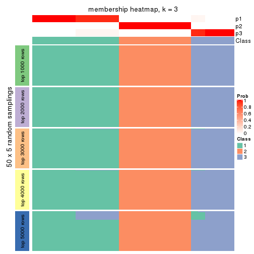
membership_heatmap(res, k = 4)
membership_heatmap(res, k = 5)
membership_heatmap(res, k = 6)
As soon as we have had the classes for columns, we can look for signatures which are significantly different between classes which can be candidate marks for certain classes. Following are the heatmaps for signatures.
Signature heatmaps where rows are scaled:
get_signatures(res, k = 2)
get_signatures(res, k = 3)

get_signatures(res, k = 4)
get_signatures(res, k = 5)
get_signatures(res, k = 6)
Signature heatmaps where rows are not scaled:
get_signatures(res, k = 2, scale_rows = FALSE)
get_signatures(res, k = 3, scale_rows = FALSE)
get_signatures(res, k = 4, scale_rows = FALSE)
get_signatures(res, k = 5, scale_rows = FALSE)
get_signatures(res, k = 6, scale_rows = FALSE)
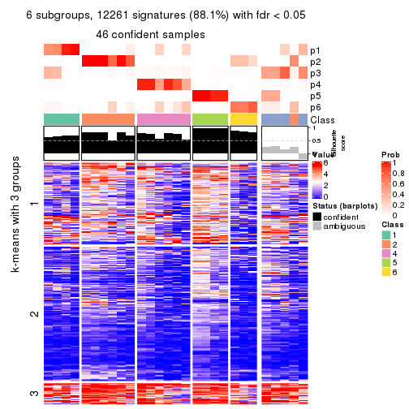
Compare the overlap of signatures from different k:
compare_signatures(res)

get_signature() returns a data frame invisibly. TO get the list of signatures, the function
call should be assigned to a variable explicitly. In following code, if plot argument is set
to FALSE, no heatmap is plotted while only the differential analysis is performed.
# code only for demonstration
tb = get_signature(res, k = ..., plot = FALSE)
An example of the output of tb is:
#> which_row fdr mean_1 mean_2 scaled_mean_1 scaled_mean_2 km
#> 1 38 0.042760348 8.373488 9.131774 -0.5533452 0.5164555 1
#> 2 40 0.018707592 7.106213 8.469186 -0.6173731 0.5762149 1
#> 3 55 0.019134737 10.221463 11.207825 -0.6159697 0.5749050 1
#> 4 59 0.006059896 5.921854 7.869574 -0.6899429 0.6439467 1
#> 5 60 0.018055526 8.928898 10.211722 -0.6204761 0.5791110 1
#> 6 98 0.009384629 15.714769 14.887706 0.6635654 -0.6193277 2
...
The columns in tb are:
which_row: row indices corresponding to the input matrix.fdr: FDR for the differential test. mean_x: The mean value in group x.scaled_mean_x: The mean value in group x after rows are scaled.km: Row groups if k-means clustering is applied to rows.UMAP plot which shows how samples are separated.
dimension_reduction(res, k = 2, method = "UMAP")

dimension_reduction(res, k = 3, method = "UMAP")
dimension_reduction(res, k = 4, method = "UMAP")
dimension_reduction(res, k = 5, method = "UMAP")
dimension_reduction(res, k = 6, method = "UMAP")
Following heatmap shows how subgroups are split when increasing k:
collect_classes(res)
If matrix rows can be associated to genes, consider to use functional_enrichment(res,
...) to perform function enrichment for the signature genes. See this vignette for more detailed explanations.
The object with results only for a single top-value method and a single partition method can be extracted as:
res = res_list["MAD", "hclust"]
# you can also extract it by
# res = res_list["MAD:hclust"]
A summary of res and all the functions that can be applied to it:
res
#> A 'ConsensusPartition' object with k = 2, 3, 4, 5, 6.
#> On a matrix with 13917 rows and 56 columns.
#> Top rows (1000, 2000, 3000, 4000, 5000) are extracted by 'MAD' method.
#> Subgroups are detected by 'hclust' method.
#> Performed in total 1250 partitions by row resampling.
#> Best k for subgroups seems to be 3.
#>
#> Following methods can be applied to this 'ConsensusPartition' object:
#> [1] "cola_report" "collect_classes" "collect_plots"
#> [4] "collect_stats" "colnames" "compare_signatures"
#> [7] "consensus_heatmap" "dimension_reduction" "functional_enrichment"
#> [10] "get_anno_col" "get_anno" "get_classes"
#> [13] "get_consensus" "get_matrix" "get_membership"
#> [16] "get_param" "get_signatures" "get_stats"
#> [19] "is_best_k" "is_stable_k" "membership_heatmap"
#> [22] "ncol" "nrow" "plot_ecdf"
#> [25] "rownames" "select_partition_number" "show"
#> [28] "suggest_best_k" "test_to_known_factors"
collect_plots() function collects all the plots made from res for all k (number of partitions)
into one single page to provide an easy and fast comparison between different k.
collect_plots(res)
The plots are:
k and the heatmap of
predicted classes for each k.k.k.k.All the plots in panels can be made by individual functions and they are plotted later in this section.
select_partition_number() produces several plots showing different
statistics for choosing “optimized” k. There are following statistics:
k;k, the area increased is defined as \(A_k - A_{k-1}\).The detailed explanations of these statistics can be found in the cola vignette.
Generally speaking, lower PAC score, higher mean silhouette score or higher
concordance corresponds to better partition. Rand index and Jaccard index
measure how similar the current partition is compared to partition with k-1.
If they are too similar, we won't accept k is better than k-1.
select_partition_number(res)
The numeric values for all these statistics can be obtained by get_stats().
get_stats(res)
#> k 1-PAC mean_silhouette concordance area_increased Rand Jaccard
#> 2 2 0.852 0.957 0.972 0.4208 0.584 0.584
#> 3 3 0.642 0.806 0.864 0.5334 0.764 0.596
#> 4 4 0.748 0.589 0.788 0.1543 0.969 0.910
#> 5 5 0.730 0.659 0.778 0.0602 0.940 0.813
#> 6 6 0.807 0.792 0.851 0.0339 0.917 0.683
suggest_best_k() suggests the best \(k\) based on these statistics. The rules are as follows:
suggest_best_k(res)
#> [1] 3
Following shows the table of the partitions (You need to click the show/hide
code output link to see it). The membership matrix (columns with name p*)
is inferred by
clue::cl_consensus()
function with the SE method. Basically the value in the membership matrix
represents the probability to belong to a certain group. The finall class
label for an item is determined with the group with highest probability it
belongs to.
In get_classes() function, the entropy is calculated from the membership
matrix and the silhouette score is calculated from the consensus matrix.
cbind(get_classes(res, k = 2), get_membership(res, k = 2))
#> class entropy silhouette p1 p2
#> SRR1975508 2 0.0000 0.971 0.000 1.000
#> SRR1975507 2 0.0000 0.971 0.000 1.000
#> SRR1975506 2 0.0000 0.971 0.000 1.000
#> SRR1975505 2 0.0000 0.971 0.000 1.000
#> SRR1975503 1 0.2236 0.952 0.964 0.036
#> SRR1975504 1 0.2236 0.952 0.964 0.036
#> SRR1975501 2 0.3733 0.939 0.072 0.928
#> SRR1975502 2 0.3733 0.939 0.072 0.928
#> SRR1975499 1 0.0000 0.973 1.000 0.000
#> SRR1975500 1 0.0000 0.973 1.000 0.000
#> SRR1975497 2 0.4815 0.912 0.104 0.896
#> SRR1975498 2 0.4815 0.912 0.104 0.896
#> SRR1975493 2 0.2603 0.958 0.044 0.956
#> SRR1975494 2 0.2603 0.958 0.044 0.956
#> SRR1975495 2 0.0376 0.971 0.004 0.996
#> SRR1975496 2 0.0376 0.971 0.004 0.996
#> SRR1975491 2 0.5059 0.905 0.112 0.888
#> SRR1975492 2 0.5059 0.905 0.112 0.888
#> SRR1975489 1 0.0000 0.973 1.000 0.000
#> SRR1975490 1 0.0000 0.973 1.000 0.000
#> SRR1975487 1 0.0000 0.973 1.000 0.000
#> SRR1975488 1 0.0000 0.973 1.000 0.000
#> SRR1975485 1 0.0000 0.973 1.000 0.000
#> SRR1975486 1 0.0000 0.973 1.000 0.000
#> SRR1975483 2 0.0376 0.971 0.004 0.996
#> SRR1975484 2 0.0376 0.971 0.004 0.996
#> SRR1975481 2 0.0376 0.971 0.004 0.996
#> SRR1975482 2 0.0376 0.971 0.004 0.996
#> SRR1975477 2 0.0000 0.971 0.000 1.000
#> SRR1975478 2 0.0000 0.971 0.000 1.000
#> SRR1975479 1 0.0000 0.973 1.000 0.000
#> SRR1975480 1 0.0000 0.973 1.000 0.000
#> SRR1975475 1 0.0376 0.972 0.996 0.004
#> SRR1975476 1 0.0376 0.972 0.996 0.004
#> SRR1975473 2 0.0000 0.971 0.000 1.000
#> SRR1975474 2 0.0000 0.971 0.000 1.000
#> SRR1975471 2 0.0376 0.971 0.004 0.996
#> SRR1975472 2 0.0376 0.971 0.004 0.996
#> SRR1975469 2 0.4562 0.920 0.096 0.904
#> SRR1975470 2 0.4562 0.920 0.096 0.904
#> SRR1975467 1 0.6247 0.834 0.844 0.156
#> SRR1975468 1 0.6247 0.834 0.844 0.156
#> SRR1975465 2 0.2603 0.958 0.044 0.956
#> SRR1975466 2 0.2603 0.958 0.044 0.956
#> SRR1975463 2 0.2603 0.958 0.044 0.956
#> SRR1975464 2 0.2603 0.958 0.044 0.956
#> SRR1975461 2 0.0000 0.971 0.000 1.000
#> SRR1975462 2 0.0000 0.971 0.000 1.000
#> SRR1975459 2 0.2603 0.958 0.044 0.956
#> SRR1975460 2 0.2603 0.958 0.044 0.956
#> SRR1975457 2 0.0000 0.971 0.000 1.000
#> SRR1975458 2 0.0000 0.971 0.000 1.000
#> SRR1975455 2 0.0000 0.971 0.000 1.000
#> SRR1975456 2 0.0000 0.971 0.000 1.000
#> SRR1975453 2 0.0000 0.971 0.000 1.000
#> SRR1975454 2 0.0000 0.971 0.000 1.000
cbind(get_classes(res, k = 3), get_membership(res, k = 3))
#> class entropy silhouette p1 p2 p3
#> SRR1975508 2 0.4931 0.798 0.000 0.768 0.232
#> SRR1975507 2 0.4931 0.798 0.000 0.768 0.232
#> SRR1975506 2 0.4931 0.798 0.000 0.768 0.232
#> SRR1975505 2 0.4931 0.798 0.000 0.768 0.232
#> SRR1975503 1 0.2926 0.925 0.924 0.040 0.036
#> SRR1975504 1 0.2926 0.925 0.924 0.040 0.036
#> SRR1975501 3 0.7425 0.516 0.052 0.328 0.620
#> SRR1975502 3 0.7425 0.516 0.052 0.328 0.620
#> SRR1975499 1 0.0000 0.960 1.000 0.000 0.000
#> SRR1975500 1 0.0000 0.960 1.000 0.000 0.000
#> SRR1975497 3 0.2711 0.852 0.088 0.000 0.912
#> SRR1975498 3 0.2711 0.852 0.088 0.000 0.912
#> SRR1975493 2 0.1411 0.741 0.000 0.964 0.036
#> SRR1975494 2 0.1411 0.741 0.000 0.964 0.036
#> SRR1975495 3 0.0592 0.891 0.000 0.012 0.988
#> SRR1975496 3 0.0592 0.891 0.000 0.012 0.988
#> SRR1975491 2 0.8465 0.175 0.096 0.528 0.376
#> SRR1975492 2 0.8465 0.175 0.096 0.528 0.376
#> SRR1975489 1 0.0000 0.960 1.000 0.000 0.000
#> SRR1975490 1 0.0000 0.960 1.000 0.000 0.000
#> SRR1975487 1 0.0000 0.960 1.000 0.000 0.000
#> SRR1975488 1 0.0000 0.960 1.000 0.000 0.000
#> SRR1975485 1 0.0000 0.960 1.000 0.000 0.000
#> SRR1975486 1 0.0000 0.960 1.000 0.000 0.000
#> SRR1975483 3 0.0592 0.891 0.000 0.012 0.988
#> SRR1975484 3 0.0592 0.891 0.000 0.012 0.988
#> SRR1975481 3 0.0592 0.891 0.000 0.012 0.988
#> SRR1975482 3 0.0592 0.891 0.000 0.012 0.988
#> SRR1975477 2 0.5216 0.805 0.000 0.740 0.260
#> SRR1975478 2 0.5216 0.805 0.000 0.740 0.260
#> SRR1975479 1 0.0000 0.960 1.000 0.000 0.000
#> SRR1975480 1 0.0000 0.960 1.000 0.000 0.000
#> SRR1975475 1 0.1765 0.945 0.956 0.040 0.004
#> SRR1975476 1 0.1765 0.945 0.956 0.040 0.004
#> SRR1975473 2 0.5216 0.805 0.000 0.740 0.260
#> SRR1975474 2 0.5216 0.805 0.000 0.740 0.260
#> SRR1975471 3 0.0592 0.891 0.000 0.012 0.988
#> SRR1975472 3 0.0592 0.891 0.000 0.012 0.988
#> SRR1975469 3 0.3129 0.857 0.088 0.008 0.904
#> SRR1975470 3 0.3129 0.857 0.088 0.008 0.904
#> SRR1975467 1 0.5413 0.827 0.800 0.164 0.036
#> SRR1975468 1 0.5413 0.827 0.800 0.164 0.036
#> SRR1975465 2 0.1411 0.741 0.000 0.964 0.036
#> SRR1975466 2 0.1411 0.741 0.000 0.964 0.036
#> SRR1975463 2 0.1411 0.741 0.000 0.964 0.036
#> SRR1975464 2 0.1411 0.741 0.000 0.964 0.036
#> SRR1975461 2 0.6008 0.669 0.000 0.628 0.372
#> SRR1975462 2 0.6008 0.669 0.000 0.628 0.372
#> SRR1975459 2 0.1411 0.741 0.000 0.964 0.036
#> SRR1975460 2 0.1411 0.741 0.000 0.964 0.036
#> SRR1975457 2 0.5216 0.805 0.000 0.740 0.260
#> SRR1975458 2 0.5216 0.805 0.000 0.740 0.260
#> SRR1975455 2 0.5216 0.805 0.000 0.740 0.260
#> SRR1975456 2 0.5216 0.805 0.000 0.740 0.260
#> SRR1975453 2 0.6008 0.669 0.000 0.628 0.372
#> SRR1975454 2 0.6008 0.669 0.000 0.628 0.372
cbind(get_classes(res, k = 4), get_membership(res, k = 4))
#> class entropy silhouette p1 p2 p3 p4
#> SRR1975508 3 0.450 0.4929 0.000 0.316 0.684 0.000
#> SRR1975507 3 0.450 0.4929 0.000 0.316 0.684 0.000
#> SRR1975506 3 0.450 0.4929 0.000 0.316 0.684 0.000
#> SRR1975505 3 0.450 0.4929 0.000 0.316 0.684 0.000
#> SRR1975503 4 0.312 0.9004 0.000 0.092 0.028 0.880
#> SRR1975504 4 0.312 0.9004 0.000 0.092 0.028 0.880
#> SRR1975501 1 0.499 -0.2270 0.520 0.480 0.000 0.000
#> SRR1975502 1 0.499 -0.2270 0.520 0.480 0.000 0.000
#> SRR1975499 4 0.000 0.9383 0.000 0.000 0.000 1.000
#> SRR1975500 4 0.000 0.9383 0.000 0.000 0.000 1.000
#> SRR1975497 1 0.307 0.6746 0.848 0.152 0.000 0.000
#> SRR1975498 1 0.307 0.6746 0.848 0.152 0.000 0.000
#> SRR1975493 3 0.500 -0.0328 0.000 0.488 0.512 0.000
#> SRR1975494 3 0.500 -0.0328 0.000 0.488 0.512 0.000
#> SRR1975495 1 0.208 0.8021 0.916 0.000 0.084 0.000
#> SRR1975496 1 0.208 0.8021 0.916 0.000 0.084 0.000
#> SRR1975491 2 0.687 1.0000 0.240 0.592 0.168 0.000
#> SRR1975492 2 0.687 1.0000 0.240 0.592 0.168 0.000
#> SRR1975489 4 0.000 0.9383 0.000 0.000 0.000 1.000
#> SRR1975490 4 0.000 0.9383 0.000 0.000 0.000 1.000
#> SRR1975487 4 0.000 0.9383 0.000 0.000 0.000 1.000
#> SRR1975488 4 0.000 0.9383 0.000 0.000 0.000 1.000
#> SRR1975485 4 0.000 0.9383 0.000 0.000 0.000 1.000
#> SRR1975486 4 0.000 0.9383 0.000 0.000 0.000 1.000
#> SRR1975483 1 0.208 0.8021 0.916 0.000 0.084 0.000
#> SRR1975484 1 0.208 0.8021 0.916 0.000 0.084 0.000
#> SRR1975481 1 0.208 0.8021 0.916 0.000 0.084 0.000
#> SRR1975482 1 0.208 0.8021 0.916 0.000 0.084 0.000
#> SRR1975477 3 0.000 0.5516 0.000 0.000 1.000 0.000
#> SRR1975478 3 0.000 0.5516 0.000 0.000 1.000 0.000
#> SRR1975479 4 0.130 0.9317 0.000 0.044 0.000 0.956
#> SRR1975480 4 0.130 0.9317 0.000 0.044 0.000 0.956
#> SRR1975475 4 0.227 0.9201 0.000 0.084 0.004 0.912
#> SRR1975476 4 0.227 0.9201 0.000 0.084 0.004 0.912
#> SRR1975473 3 0.000 0.5516 0.000 0.000 1.000 0.000
#> SRR1975474 3 0.000 0.5516 0.000 0.000 1.000 0.000
#> SRR1975471 1 0.208 0.8021 0.916 0.000 0.084 0.000
#> SRR1975472 1 0.208 0.8021 0.916 0.000 0.084 0.000
#> SRR1975469 1 0.265 0.7026 0.880 0.120 0.000 0.000
#> SRR1975470 1 0.265 0.7026 0.880 0.120 0.000 0.000
#> SRR1975467 4 0.464 0.7724 0.000 0.216 0.028 0.756
#> SRR1975468 4 0.464 0.7724 0.000 0.216 0.028 0.756
#> SRR1975465 3 0.500 -0.0328 0.000 0.488 0.512 0.000
#> SRR1975466 3 0.500 -0.0328 0.000 0.488 0.512 0.000
#> SRR1975463 3 0.500 -0.0328 0.000 0.488 0.512 0.000
#> SRR1975464 3 0.500 -0.0328 0.000 0.488 0.512 0.000
#> SRR1975461 3 0.711 0.3999 0.152 0.316 0.532 0.000
#> SRR1975462 3 0.711 0.3999 0.152 0.316 0.532 0.000
#> SRR1975459 3 0.500 -0.0328 0.000 0.488 0.512 0.000
#> SRR1975460 3 0.500 -0.0328 0.000 0.488 0.512 0.000
#> SRR1975457 3 0.000 0.5516 0.000 0.000 1.000 0.000
#> SRR1975458 3 0.000 0.5516 0.000 0.000 1.000 0.000
#> SRR1975455 3 0.000 0.5516 0.000 0.000 1.000 0.000
#> SRR1975456 3 0.000 0.5516 0.000 0.000 1.000 0.000
#> SRR1975453 3 0.728 0.3858 0.172 0.316 0.512 0.000
#> SRR1975454 3 0.728 0.3858 0.172 0.316 0.512 0.000
cbind(get_classes(res, k = 5), get_membership(res, k = 5))
#> class entropy silhouette p1 p2 p3 p4 p5
#> SRR1975508 3 0.4060 0.467 0.000 0.000 0.640 0.360 0.000
#> SRR1975507 3 0.4060 0.467 0.000 0.000 0.640 0.360 0.000
#> SRR1975506 3 0.4060 0.467 0.000 0.000 0.640 0.360 0.000
#> SRR1975505 3 0.4060 0.467 0.000 0.000 0.640 0.360 0.000
#> SRR1975503 5 0.0000 0.911 0.000 0.000 0.000 0.000 1.000
#> SRR1975504 5 0.0000 0.911 0.000 0.000 0.000 0.000 1.000
#> SRR1975501 2 0.6100 0.559 0.428 0.448 0.000 0.124 0.000
#> SRR1975502 2 0.6100 0.559 0.428 0.448 0.000 0.124 0.000
#> SRR1975499 4 0.6050 0.996 0.000 0.360 0.000 0.512 0.128
#> SRR1975500 4 0.6050 0.996 0.000 0.360 0.000 0.512 0.128
#> SRR1975497 1 0.3656 0.650 0.800 0.168 0.000 0.032 0.000
#> SRR1975498 1 0.3656 0.650 0.800 0.168 0.000 0.032 0.000
#> SRR1975493 3 0.5165 0.244 0.000 0.448 0.512 0.000 0.040
#> SRR1975494 3 0.5165 0.244 0.000 0.448 0.512 0.000 0.040
#> SRR1975495 1 0.0963 0.872 0.964 0.000 0.036 0.000 0.000
#> SRR1975496 1 0.0963 0.872 0.964 0.000 0.036 0.000 0.000
#> SRR1975491 2 0.8469 0.710 0.148 0.508 0.140 0.124 0.080
#> SRR1975492 2 0.8469 0.710 0.148 0.508 0.140 0.124 0.080
#> SRR1975489 4 0.6015 0.999 0.000 0.360 0.000 0.516 0.124
#> SRR1975490 4 0.6015 0.999 0.000 0.360 0.000 0.516 0.124
#> SRR1975487 4 0.6015 0.999 0.000 0.360 0.000 0.516 0.124
#> SRR1975488 4 0.6015 0.999 0.000 0.360 0.000 0.516 0.124
#> SRR1975485 4 0.6015 0.999 0.000 0.360 0.000 0.516 0.124
#> SRR1975486 4 0.6015 0.999 0.000 0.360 0.000 0.516 0.124
#> SRR1975483 1 0.0963 0.872 0.964 0.000 0.036 0.000 0.000
#> SRR1975484 1 0.0963 0.872 0.964 0.000 0.036 0.000 0.000
#> SRR1975481 1 0.0963 0.872 0.964 0.000 0.036 0.000 0.000
#> SRR1975482 1 0.0963 0.872 0.964 0.000 0.036 0.000 0.000
#> SRR1975477 3 0.0000 0.570 0.000 0.000 1.000 0.000 0.000
#> SRR1975478 3 0.0000 0.570 0.000 0.000 1.000 0.000 0.000
#> SRR1975479 5 0.1981 0.877 0.000 0.028 0.000 0.048 0.924
#> SRR1975480 5 0.1981 0.877 0.000 0.028 0.000 0.048 0.924
#> SRR1975475 5 0.0992 0.911 0.000 0.024 0.000 0.008 0.968
#> SRR1975476 5 0.0992 0.911 0.000 0.024 0.000 0.008 0.968
#> SRR1975473 3 0.0000 0.570 0.000 0.000 1.000 0.000 0.000
#> SRR1975474 3 0.0000 0.570 0.000 0.000 1.000 0.000 0.000
#> SRR1975471 1 0.0963 0.872 0.964 0.000 0.036 0.000 0.000
#> SRR1975472 1 0.0963 0.872 0.964 0.000 0.036 0.000 0.000
#> SRR1975469 1 0.3321 0.700 0.832 0.136 0.000 0.032 0.000
#> SRR1975470 1 0.3321 0.700 0.832 0.136 0.000 0.032 0.000
#> SRR1975467 5 0.2329 0.813 0.000 0.124 0.000 0.000 0.876
#> SRR1975468 5 0.2329 0.813 0.000 0.124 0.000 0.000 0.876
#> SRR1975465 3 0.5165 0.244 0.000 0.448 0.512 0.000 0.040
#> SRR1975466 3 0.5165 0.244 0.000 0.448 0.512 0.000 0.040
#> SRR1975463 3 0.5165 0.244 0.000 0.448 0.512 0.000 0.040
#> SRR1975464 3 0.5165 0.244 0.000 0.448 0.512 0.000 0.040
#> SRR1975461 3 0.6510 0.332 0.196 0.000 0.444 0.360 0.000
#> SRR1975462 3 0.6510 0.332 0.196 0.000 0.444 0.360 0.000
#> SRR1975459 3 0.5165 0.244 0.000 0.448 0.512 0.000 0.040
#> SRR1975460 3 0.5165 0.244 0.000 0.448 0.512 0.000 0.040
#> SRR1975457 3 0.0000 0.570 0.000 0.000 1.000 0.000 0.000
#> SRR1975458 3 0.0000 0.570 0.000 0.000 1.000 0.000 0.000
#> SRR1975455 3 0.0000 0.570 0.000 0.000 1.000 0.000 0.000
#> SRR1975456 3 0.0000 0.570 0.000 0.000 1.000 0.000 0.000
#> SRR1975453 3 0.6619 0.312 0.220 0.000 0.420 0.360 0.000
#> SRR1975454 3 0.6619 0.312 0.220 0.000 0.420 0.360 0.000
cbind(get_classes(res, k = 6), get_membership(res, k = 6))
#> class entropy silhouette p1 p2 p3 p4 p5 p6
#> SRR1975508 5 0.176 0.615 0.000 0.096 0.000 0.000 0.904 0.000
#> SRR1975507 5 0.176 0.615 0.000 0.096 0.000 0.000 0.904 0.000
#> SRR1975506 5 0.176 0.615 0.000 0.096 0.000 0.000 0.904 0.000
#> SRR1975505 5 0.176 0.615 0.000 0.096 0.000 0.000 0.904 0.000
#> SRR1975503 3 0.254 0.911 0.000 0.012 0.864 0.120 0.000 0.004
#> SRR1975504 3 0.254 0.911 0.000 0.012 0.864 0.120 0.000 0.004
#> SRR1975501 6 0.355 0.775 0.192 0.036 0.000 0.000 0.000 0.772
#> SRR1975502 6 0.355 0.775 0.192 0.036 0.000 0.000 0.000 0.772
#> SRR1975499 4 0.026 0.992 0.000 0.000 0.008 0.992 0.000 0.000
#> SRR1975500 4 0.026 0.992 0.000 0.000 0.008 0.992 0.000 0.000
#> SRR1975497 1 0.527 0.645 0.672 0.000 0.044 0.000 0.096 0.188
#> SRR1975498 1 0.527 0.645 0.672 0.000 0.044 0.000 0.096 0.188
#> SRR1975493 2 0.000 1.000 0.000 1.000 0.000 0.000 0.000 0.000
#> SRR1975494 2 0.000 1.000 0.000 1.000 0.000 0.000 0.000 0.000
#> SRR1975495 1 0.000 0.888 1.000 0.000 0.000 0.000 0.000 0.000
#> SRR1975496 1 0.000 0.888 1.000 0.000 0.000 0.000 0.000 0.000
#> SRR1975491 6 0.246 0.800 0.000 0.096 0.028 0.000 0.000 0.876
#> SRR1975492 6 0.246 0.800 0.000 0.096 0.028 0.000 0.000 0.876
#> SRR1975489 4 0.000 0.997 0.000 0.000 0.000 1.000 0.000 0.000
#> SRR1975490 4 0.000 0.997 0.000 0.000 0.000 1.000 0.000 0.000
#> SRR1975487 4 0.000 0.997 0.000 0.000 0.000 1.000 0.000 0.000
#> SRR1975488 4 0.000 0.997 0.000 0.000 0.000 1.000 0.000 0.000
#> SRR1975485 4 0.000 0.997 0.000 0.000 0.000 1.000 0.000 0.000
#> SRR1975486 4 0.000 0.997 0.000 0.000 0.000 1.000 0.000 0.000
#> SRR1975483 1 0.000 0.888 1.000 0.000 0.000 0.000 0.000 0.000
#> SRR1975484 1 0.000 0.888 1.000 0.000 0.000 0.000 0.000 0.000
#> SRR1975481 1 0.000 0.888 1.000 0.000 0.000 0.000 0.000 0.000
#> SRR1975482 1 0.000 0.888 1.000 0.000 0.000 0.000 0.000 0.000
#> SRR1975477 5 0.385 0.522 0.000 0.456 0.000 0.000 0.544 0.000
#> SRR1975478 5 0.385 0.522 0.000 0.456 0.000 0.000 0.544 0.000
#> SRR1975479 3 0.263 0.891 0.000 0.000 0.820 0.180 0.000 0.000
#> SRR1975480 3 0.263 0.891 0.000 0.000 0.820 0.180 0.000 0.000
#> SRR1975475 3 0.257 0.914 0.000 0.012 0.852 0.136 0.000 0.000
#> SRR1975476 3 0.257 0.914 0.000 0.012 0.852 0.136 0.000 0.000
#> SRR1975473 5 0.385 0.522 0.000 0.456 0.000 0.000 0.544 0.000
#> SRR1975474 5 0.385 0.522 0.000 0.456 0.000 0.000 0.544 0.000
#> SRR1975471 1 0.000 0.888 1.000 0.000 0.000 0.000 0.000 0.000
#> SRR1975472 1 0.000 0.888 1.000 0.000 0.000 0.000 0.000 0.000
#> SRR1975469 1 0.405 0.762 0.792 0.000 0.040 0.000 0.068 0.100
#> SRR1975470 1 0.405 0.762 0.792 0.000 0.040 0.000 0.068 0.100
#> SRR1975467 3 0.236 0.811 0.000 0.136 0.860 0.000 0.000 0.004
#> SRR1975468 3 0.236 0.811 0.000 0.136 0.860 0.000 0.000 0.004
#> SRR1975465 2 0.000 1.000 0.000 1.000 0.000 0.000 0.000 0.000
#> SRR1975466 2 0.000 1.000 0.000 1.000 0.000 0.000 0.000 0.000
#> SRR1975463 2 0.000 1.000 0.000 1.000 0.000 0.000 0.000 0.000
#> SRR1975464 2 0.000 1.000 0.000 1.000 0.000 0.000 0.000 0.000
#> SRR1975461 5 0.441 0.419 0.232 0.000 0.076 0.000 0.692 0.000
#> SRR1975462 5 0.441 0.419 0.232 0.000 0.076 0.000 0.692 0.000
#> SRR1975459 2 0.000 1.000 0.000 1.000 0.000 0.000 0.000 0.000
#> SRR1975460 2 0.000 1.000 0.000 1.000 0.000 0.000 0.000 0.000
#> SRR1975457 5 0.385 0.522 0.000 0.456 0.000 0.000 0.544 0.000
#> SRR1975458 5 0.385 0.522 0.000 0.456 0.000 0.000 0.544 0.000
#> SRR1975455 5 0.385 0.522 0.000 0.456 0.000 0.000 0.544 0.000
#> SRR1975456 5 0.385 0.522 0.000 0.456 0.000 0.000 0.544 0.000
#> SRR1975453 5 0.454 0.394 0.256 0.000 0.076 0.000 0.668 0.000
#> SRR1975454 5 0.454 0.394 0.256 0.000 0.076 0.000 0.668 0.000
Heatmaps for the consensus matrix. It visualizes the probability of two samples to be in a same group.
consensus_heatmap(res, k = 2)
consensus_heatmap(res, k = 3)

consensus_heatmap(res, k = 4)
consensus_heatmap(res, k = 5)
consensus_heatmap(res, k = 6)
Heatmaps for the membership of samples in all partitions to see how consistent they are:
membership_heatmap(res, k = 2)
membership_heatmap(res, k = 3)
membership_heatmap(res, k = 4)
membership_heatmap(res, k = 5)
membership_heatmap(res, k = 6)
As soon as we have had the classes for columns, we can look for signatures which are significantly different between classes which can be candidate marks for certain classes. Following are the heatmaps for signatures.
Signature heatmaps where rows are scaled:
get_signatures(res, k = 2)
get_signatures(res, k = 3)
get_signatures(res, k = 4)
get_signatures(res, k = 5)
get_signatures(res, k = 6)
Signature heatmaps where rows are not scaled:
get_signatures(res, k = 2, scale_rows = FALSE)
get_signatures(res, k = 3, scale_rows = FALSE)
get_signatures(res, k = 4, scale_rows = FALSE)
get_signatures(res, k = 5, scale_rows = FALSE)
get_signatures(res, k = 6, scale_rows = FALSE)
Compare the overlap of signatures from different k:
compare_signatures(res)
get_signature() returns a data frame invisibly. TO get the list of signatures, the function
call should be assigned to a variable explicitly. In following code, if plot argument is set
to FALSE, no heatmap is plotted while only the differential analysis is performed.
# code only for demonstration
tb = get_signature(res, k = ..., plot = FALSE)
An example of the output of tb is:
#> which_row fdr mean_1 mean_2 scaled_mean_1 scaled_mean_2 km
#> 1 38 0.042760348 8.373488 9.131774 -0.5533452 0.5164555 1
#> 2 40 0.018707592 7.106213 8.469186 -0.6173731 0.5762149 1
#> 3 55 0.019134737 10.221463 11.207825 -0.6159697 0.5749050 1
#> 4 59 0.006059896 5.921854 7.869574 -0.6899429 0.6439467 1
#> 5 60 0.018055526 8.928898 10.211722 -0.6204761 0.5791110 1
#> 6 98 0.009384629 15.714769 14.887706 0.6635654 -0.6193277 2
...
The columns in tb are:
which_row: row indices corresponding to the input matrix.fdr: FDR for the differential test. mean_x: The mean value in group x.scaled_mean_x: The mean value in group x after rows are scaled.km: Row groups if k-means clustering is applied to rows.UMAP plot which shows how samples are separated.
dimension_reduction(res, k = 2, method = "UMAP")
dimension_reduction(res, k = 3, method = "UMAP")
dimension_reduction(res, k = 4, method = "UMAP")
dimension_reduction(res, k = 5, method = "UMAP")
dimension_reduction(res, k = 6, method = "UMAP")
Following heatmap shows how subgroups are split when increasing k:
collect_classes(res)

If matrix rows can be associated to genes, consider to use functional_enrichment(res,
...) to perform function enrichment for the signature genes. See this vignette for more detailed explanations.
The object with results only for a single top-value method and a single partition method can be extracted as:
res = res_list["MAD", "kmeans"]
# you can also extract it by
# res = res_list["MAD:kmeans"]
A summary of res and all the functions that can be applied to it:
res
#> A 'ConsensusPartition' object with k = 2, 3, 4, 5, 6.
#> On a matrix with 13917 rows and 56 columns.
#> Top rows (1000, 2000, 3000, 4000, 5000) are extracted by 'MAD' method.
#> Subgroups are detected by 'kmeans' method.
#> Performed in total 1250 partitions by row resampling.
#> Best k for subgroups seems to be 2.
#>
#> Following methods can be applied to this 'ConsensusPartition' object:
#> [1] "cola_report" "collect_classes" "collect_plots"
#> [4] "collect_stats" "colnames" "compare_signatures"
#> [7] "consensus_heatmap" "dimension_reduction" "functional_enrichment"
#> [10] "get_anno_col" "get_anno" "get_classes"
#> [13] "get_consensus" "get_matrix" "get_membership"
#> [16] "get_param" "get_signatures" "get_stats"
#> [19] "is_best_k" "is_stable_k" "membership_heatmap"
#> [22] "ncol" "nrow" "plot_ecdf"
#> [25] "rownames" "select_partition_number" "show"
#> [28] "suggest_best_k" "test_to_known_factors"
collect_plots() function collects all the plots made from res for all k (number of partitions)
into one single page to provide an easy and fast comparison between different k.
collect_plots(res)
The plots are:
k and the heatmap of
predicted classes for each k.k.k.k.All the plots in panels can be made by individual functions and they are plotted later in this section.
select_partition_number() produces several plots showing different
statistics for choosing “optimized” k. There are following statistics:
k;k, the area increased is defined as \(A_k - A_{k-1}\).The detailed explanations of these statistics can be found in the cola vignette.
Generally speaking, lower PAC score, higher mean silhouette score or higher
concordance corresponds to better partition. Rand index and Jaccard index
measure how similar the current partition is compared to partition with k-1.
If they are too similar, we won't accept k is better than k-1.
select_partition_number(res)
The numeric values for all these statistics can be obtained by get_stats().
get_stats(res)
#> k 1-PAC mean_silhouette concordance area_increased Rand Jaccard
#> 2 2 0.522 0.794 0.899 0.4807 0.514 0.514
#> 3 3 0.553 0.783 0.841 0.3708 0.751 0.543
#> 4 4 0.590 0.682 0.776 0.1118 0.932 0.797
#> 5 5 0.665 0.724 0.776 0.0620 0.922 0.735
#> 6 6 0.670 0.631 0.717 0.0401 0.984 0.935
suggest_best_k() suggests the best \(k\) based on these statistics. The rules are as follows:
suggest_best_k(res)
#> [1] 2
Following shows the table of the partitions (You need to click the show/hide
code output link to see it). The membership matrix (columns with name p*)
is inferred by
clue::cl_consensus()
function with the SE method. Basically the value in the membership matrix
represents the probability to belong to a certain group. The finall class
label for an item is determined with the group with highest probability it
belongs to.
In get_classes() function, the entropy is calculated from the membership
matrix and the silhouette score is calculated from the consensus matrix.
cbind(get_classes(res, k = 2), get_membership(res, k = 2))
#> class entropy silhouette p1 p2
#> SRR1975508 2 0.358 0.881 0.068 0.932
#> SRR1975507 2 0.358 0.881 0.068 0.932
#> SRR1975506 2 0.358 0.881 0.068 0.932
#> SRR1975505 2 0.358 0.881 0.068 0.932
#> SRR1975503 1 0.000 0.905 1.000 0.000
#> SRR1975504 1 0.000 0.905 1.000 0.000
#> SRR1975501 1 0.980 0.381 0.584 0.416
#> SRR1975502 1 0.980 0.381 0.584 0.416
#> SRR1975499 1 0.000 0.905 1.000 0.000
#> SRR1975500 1 0.000 0.905 1.000 0.000
#> SRR1975497 1 0.788 0.724 0.764 0.236
#> SRR1975498 1 0.788 0.724 0.764 0.236
#> SRR1975493 2 0.866 0.653 0.288 0.712
#> SRR1975494 2 0.866 0.653 0.288 0.712
#> SRR1975495 2 0.163 0.853 0.024 0.976
#> SRR1975496 2 0.163 0.853 0.024 0.976
#> SRR1975491 1 0.697 0.731 0.812 0.188
#> SRR1975492 1 0.697 0.731 0.812 0.188
#> SRR1975489 1 0.000 0.905 1.000 0.000
#> SRR1975490 1 0.000 0.905 1.000 0.000
#> SRR1975487 1 0.000 0.905 1.000 0.000
#> SRR1975488 1 0.000 0.905 1.000 0.000
#> SRR1975485 1 0.000 0.905 1.000 0.000
#> SRR1975486 1 0.000 0.905 1.000 0.000
#> SRR1975483 2 0.760 0.657 0.220 0.780
#> SRR1975484 2 0.760 0.657 0.220 0.780
#> SRR1975481 2 0.753 0.663 0.216 0.784
#> SRR1975482 2 0.753 0.663 0.216 0.784
#> SRR1975477 2 0.358 0.881 0.068 0.932
#> SRR1975478 2 0.358 0.881 0.068 0.932
#> SRR1975479 1 0.000 0.905 1.000 0.000
#> SRR1975480 1 0.000 0.905 1.000 0.000
#> SRR1975475 1 0.000 0.905 1.000 0.000
#> SRR1975476 1 0.000 0.905 1.000 0.000
#> SRR1975473 2 0.358 0.881 0.068 0.932
#> SRR1975474 2 0.358 0.881 0.068 0.932
#> SRR1975471 2 0.000 0.858 0.000 1.000
#> SRR1975472 2 0.000 0.858 0.000 1.000
#> SRR1975469 2 0.999 -0.103 0.484 0.516
#> SRR1975470 2 0.999 -0.103 0.484 0.516
#> SRR1975467 1 0.278 0.877 0.952 0.048
#> SRR1975468 1 0.278 0.877 0.952 0.048
#> SRR1975465 2 0.529 0.852 0.120 0.880
#> SRR1975466 2 0.529 0.852 0.120 0.880
#> SRR1975463 2 0.529 0.852 0.120 0.880
#> SRR1975464 2 0.529 0.852 0.120 0.880
#> SRR1975461 2 0.000 0.858 0.000 1.000
#> SRR1975462 2 0.000 0.858 0.000 1.000
#> SRR1975459 2 0.358 0.881 0.068 0.932
#> SRR1975460 2 0.358 0.881 0.068 0.932
#> SRR1975457 2 0.358 0.881 0.068 0.932
#> SRR1975458 2 0.358 0.881 0.068 0.932
#> SRR1975455 2 0.358 0.881 0.068 0.932
#> SRR1975456 2 0.358 0.881 0.068 0.932
#> SRR1975453 2 0.000 0.858 0.000 1.000
#> SRR1975454 2 0.000 0.858 0.000 1.000
cbind(get_classes(res, k = 3), get_membership(res, k = 3))
#> class entropy silhouette p1 p2 p3
#> SRR1975508 2 0.537 0.814 0.252 0.744 0.004
#> SRR1975507 2 0.537 0.814 0.252 0.744 0.004
#> SRR1975506 2 0.537 0.814 0.252 0.744 0.004
#> SRR1975505 2 0.537 0.814 0.252 0.744 0.004
#> SRR1975503 3 0.313 0.835 0.052 0.032 0.916
#> SRR1975504 3 0.313 0.835 0.052 0.032 0.916
#> SRR1975501 1 0.641 0.713 0.764 0.144 0.092
#> SRR1975502 1 0.641 0.713 0.764 0.144 0.092
#> SRR1975499 3 0.103 0.857 0.024 0.000 0.976
#> SRR1975500 3 0.103 0.857 0.024 0.000 0.976
#> SRR1975497 1 0.480 0.702 0.780 0.000 0.220
#> SRR1975498 1 0.480 0.702 0.780 0.000 0.220
#> SRR1975493 2 0.509 0.650 0.072 0.836 0.092
#> SRR1975494 2 0.509 0.650 0.072 0.836 0.092
#> SRR1975495 1 0.311 0.861 0.900 0.096 0.004
#> SRR1975496 1 0.311 0.861 0.900 0.096 0.004
#> SRR1975491 3 0.979 0.276 0.328 0.248 0.424
#> SRR1975492 3 0.979 0.276 0.328 0.248 0.424
#> SRR1975489 3 0.164 0.854 0.044 0.000 0.956
#> SRR1975490 3 0.164 0.854 0.044 0.000 0.956
#> SRR1975487 3 0.129 0.855 0.032 0.000 0.968
#> SRR1975488 3 0.129 0.855 0.032 0.000 0.968
#> SRR1975485 3 0.141 0.855 0.036 0.000 0.964
#> SRR1975486 3 0.141 0.855 0.036 0.000 0.964
#> SRR1975483 1 0.377 0.874 0.888 0.084 0.028
#> SRR1975484 1 0.377 0.874 0.888 0.084 0.028
#> SRR1975481 1 0.377 0.874 0.888 0.084 0.028
#> SRR1975482 1 0.377 0.874 0.888 0.084 0.028
#> SRR1975477 2 0.452 0.829 0.180 0.816 0.004
#> SRR1975478 2 0.452 0.829 0.180 0.816 0.004
#> SRR1975479 3 0.249 0.854 0.060 0.008 0.932
#> SRR1975480 3 0.249 0.854 0.060 0.008 0.932
#> SRR1975475 3 0.315 0.841 0.048 0.036 0.916
#> SRR1975476 3 0.315 0.841 0.048 0.036 0.916
#> SRR1975473 2 0.423 0.828 0.160 0.836 0.004
#> SRR1975474 2 0.423 0.828 0.160 0.836 0.004
#> SRR1975471 1 0.319 0.847 0.888 0.112 0.000
#> SRR1975472 1 0.319 0.847 0.888 0.112 0.000
#> SRR1975469 1 0.440 0.848 0.864 0.044 0.092
#> SRR1975470 1 0.440 0.848 0.864 0.044 0.092
#> SRR1975467 3 0.774 0.547 0.060 0.356 0.584
#> SRR1975468 3 0.774 0.547 0.060 0.356 0.584
#> SRR1975465 2 0.205 0.767 0.020 0.952 0.028
#> SRR1975466 2 0.205 0.767 0.020 0.952 0.028
#> SRR1975463 2 0.205 0.767 0.020 0.952 0.028
#> SRR1975464 2 0.205 0.767 0.020 0.952 0.028
#> SRR1975461 2 0.586 0.697 0.344 0.656 0.000
#> SRR1975462 2 0.586 0.697 0.344 0.656 0.000
#> SRR1975459 2 0.177 0.774 0.024 0.960 0.016
#> SRR1975460 2 0.177 0.774 0.024 0.960 0.016
#> SRR1975457 2 0.511 0.821 0.228 0.768 0.004
#> SRR1975458 2 0.511 0.821 0.228 0.768 0.004
#> SRR1975455 2 0.511 0.821 0.228 0.768 0.004
#> SRR1975456 2 0.511 0.821 0.228 0.768 0.004
#> SRR1975453 1 0.327 0.837 0.884 0.116 0.000
#> SRR1975454 1 0.327 0.837 0.884 0.116 0.000
cbind(get_classes(res, k = 4), get_membership(res, k = 4))
#> class entropy silhouette p1 p2 p3 p4
#> SRR1975508 3 0.4336 0.651 0.060 0.128 0.812 0.000
#> SRR1975507 3 0.4336 0.651 0.060 0.128 0.812 0.000
#> SRR1975506 3 0.4336 0.651 0.060 0.128 0.812 0.000
#> SRR1975505 3 0.4336 0.651 0.060 0.128 0.812 0.000
#> SRR1975503 4 0.4175 0.805 0.012 0.212 0.000 0.776
#> SRR1975504 4 0.4175 0.805 0.012 0.212 0.000 0.776
#> SRR1975501 1 0.4063 0.768 0.808 0.172 0.004 0.016
#> SRR1975502 1 0.4063 0.768 0.808 0.172 0.004 0.016
#> SRR1975499 4 0.1913 0.874 0.020 0.040 0.000 0.940
#> SRR1975500 4 0.1913 0.874 0.020 0.040 0.000 0.940
#> SRR1975497 1 0.3711 0.790 0.864 0.076 0.008 0.052
#> SRR1975498 1 0.3711 0.790 0.864 0.076 0.008 0.052
#> SRR1975493 2 0.5334 0.339 0.004 0.588 0.400 0.008
#> SRR1975494 2 0.5334 0.339 0.004 0.588 0.400 0.008
#> SRR1975495 1 0.2973 0.868 0.884 0.020 0.096 0.000
#> SRR1975496 1 0.2973 0.868 0.884 0.020 0.096 0.000
#> SRR1975491 2 0.7741 0.580 0.224 0.592 0.060 0.124
#> SRR1975492 2 0.7741 0.580 0.224 0.592 0.060 0.124
#> SRR1975489 4 0.2131 0.871 0.032 0.036 0.000 0.932
#> SRR1975490 4 0.2131 0.871 0.032 0.036 0.000 0.932
#> SRR1975487 4 0.0672 0.876 0.008 0.008 0.000 0.984
#> SRR1975488 4 0.0672 0.876 0.008 0.008 0.000 0.984
#> SRR1975485 4 0.1411 0.873 0.020 0.020 0.000 0.960
#> SRR1975486 4 0.1411 0.873 0.020 0.020 0.000 0.960
#> SRR1975483 1 0.2675 0.870 0.892 0.008 0.100 0.000
#> SRR1975484 1 0.2675 0.870 0.892 0.008 0.100 0.000
#> SRR1975481 1 0.3934 0.865 0.836 0.048 0.116 0.000
#> SRR1975482 1 0.3934 0.865 0.836 0.048 0.116 0.000
#> SRR1975477 3 0.1398 0.676 0.004 0.040 0.956 0.000
#> SRR1975478 3 0.1398 0.676 0.004 0.040 0.956 0.000
#> SRR1975479 4 0.4578 0.839 0.052 0.160 0.000 0.788
#> SRR1975480 4 0.4578 0.839 0.052 0.160 0.000 0.788
#> SRR1975475 4 0.5102 0.789 0.048 0.220 0.000 0.732
#> SRR1975476 4 0.5102 0.789 0.048 0.220 0.000 0.732
#> SRR1975473 3 0.1743 0.669 0.004 0.056 0.940 0.000
#> SRR1975474 3 0.1743 0.669 0.004 0.056 0.940 0.000
#> SRR1975471 1 0.4638 0.826 0.788 0.060 0.152 0.000
#> SRR1975472 1 0.4638 0.826 0.788 0.060 0.152 0.000
#> SRR1975469 1 0.4226 0.844 0.836 0.084 0.072 0.008
#> SRR1975470 1 0.4226 0.844 0.836 0.084 0.072 0.008
#> SRR1975467 2 0.6768 0.624 0.004 0.620 0.148 0.228
#> SRR1975468 2 0.6768 0.624 0.004 0.620 0.148 0.228
#> SRR1975465 3 0.5105 0.149 0.004 0.432 0.564 0.000
#> SRR1975466 3 0.5105 0.149 0.004 0.432 0.564 0.000
#> SRR1975463 3 0.5105 0.149 0.004 0.432 0.564 0.000
#> SRR1975464 3 0.5105 0.149 0.004 0.432 0.564 0.000
#> SRR1975461 3 0.5938 0.551 0.136 0.168 0.696 0.000
#> SRR1975462 3 0.5938 0.551 0.136 0.168 0.696 0.000
#> SRR1975459 3 0.5080 0.178 0.004 0.420 0.576 0.000
#> SRR1975460 3 0.5080 0.178 0.004 0.420 0.576 0.000
#> SRR1975457 3 0.1109 0.690 0.028 0.004 0.968 0.000
#> SRR1975458 3 0.1109 0.690 0.028 0.004 0.968 0.000
#> SRR1975455 3 0.0921 0.690 0.028 0.000 0.972 0.000
#> SRR1975456 3 0.0921 0.690 0.028 0.000 0.972 0.000
#> SRR1975453 1 0.6049 0.733 0.680 0.120 0.200 0.000
#> SRR1975454 1 0.6049 0.733 0.680 0.120 0.200 0.000
cbind(get_classes(res, k = 5), get_membership(res, k = 5))
#> class entropy silhouette p1 p2 p3 p4 p5
#> SRR1975508 3 0.3727 0.721 0.020 0.016 0.812 0.000 NA
#> SRR1975507 3 0.3727 0.721 0.020 0.016 0.812 0.000 NA
#> SRR1975506 3 0.3727 0.721 0.020 0.016 0.812 0.000 NA
#> SRR1975505 3 0.3727 0.721 0.020 0.016 0.812 0.000 NA
#> SRR1975503 4 0.5283 0.755 0.000 0.188 0.000 0.676 NA
#> SRR1975504 4 0.5283 0.755 0.000 0.188 0.000 0.676 NA
#> SRR1975501 1 0.5033 0.714 0.716 0.124 0.000 0.004 NA
#> SRR1975502 1 0.5033 0.714 0.716 0.124 0.000 0.004 NA
#> SRR1975499 4 0.2616 0.836 0.000 0.036 0.000 0.888 NA
#> SRR1975500 4 0.2616 0.836 0.000 0.036 0.000 0.888 NA
#> SRR1975497 1 0.4906 0.722 0.704 0.016 0.004 0.032 NA
#> SRR1975498 1 0.4906 0.722 0.704 0.016 0.004 0.032 NA
#> SRR1975493 2 0.3243 0.685 0.004 0.812 0.180 0.000 NA
#> SRR1975494 2 0.3243 0.685 0.004 0.812 0.180 0.000 NA
#> SRR1975495 1 0.2876 0.824 0.888 0.016 0.044 0.000 NA
#> SRR1975496 1 0.2876 0.824 0.888 0.016 0.044 0.000 NA
#> SRR1975491 2 0.6229 0.397 0.156 0.648 0.004 0.036 NA
#> SRR1975492 2 0.6229 0.397 0.156 0.648 0.004 0.036 NA
#> SRR1975489 4 0.2477 0.838 0.008 0.008 0.000 0.892 NA
#> SRR1975490 4 0.2477 0.838 0.008 0.008 0.000 0.892 NA
#> SRR1975487 4 0.0727 0.843 0.004 0.004 0.000 0.980 NA
#> SRR1975488 4 0.0727 0.843 0.004 0.004 0.000 0.980 NA
#> SRR1975485 4 0.1731 0.842 0.012 0.008 0.000 0.940 NA
#> SRR1975486 4 0.1731 0.842 0.012 0.008 0.000 0.940 NA
#> SRR1975483 1 0.2104 0.827 0.924 0.008 0.044 0.000 NA
#> SRR1975484 1 0.2104 0.827 0.924 0.008 0.044 0.000 NA
#> SRR1975481 1 0.3634 0.819 0.844 0.020 0.056 0.000 NA
#> SRR1975482 1 0.3634 0.819 0.844 0.020 0.056 0.000 NA
#> SRR1975477 3 0.3446 0.716 0.016 0.112 0.844 0.000 NA
#> SRR1975478 3 0.3446 0.716 0.016 0.112 0.844 0.000 NA
#> SRR1975479 4 0.5293 0.789 0.016 0.044 0.008 0.680 NA
#> SRR1975480 4 0.5293 0.789 0.016 0.044 0.008 0.680 NA
#> SRR1975475 4 0.6425 0.733 0.008 0.160 0.008 0.576 NA
#> SRR1975476 4 0.6425 0.733 0.008 0.160 0.008 0.576 NA
#> SRR1975473 3 0.3846 0.690 0.016 0.132 0.816 0.000 NA
#> SRR1975474 3 0.3846 0.690 0.016 0.132 0.816 0.000 NA
#> SRR1975471 1 0.4499 0.758 0.764 0.004 0.096 0.000 NA
#> SRR1975472 1 0.4499 0.758 0.764 0.004 0.096 0.000 NA
#> SRR1975469 1 0.4245 0.795 0.788 0.024 0.036 0.000 NA
#> SRR1975470 1 0.4245 0.795 0.788 0.024 0.036 0.000 NA
#> SRR1975467 2 0.4360 0.578 0.004 0.804 0.028 0.104 NA
#> SRR1975468 2 0.4360 0.578 0.004 0.804 0.028 0.104 NA
#> SRR1975465 2 0.4671 0.668 0.000 0.640 0.332 0.000 NA
#> SRR1975466 2 0.4671 0.668 0.000 0.640 0.332 0.000 NA
#> SRR1975463 2 0.4592 0.669 0.000 0.644 0.332 0.000 NA
#> SRR1975464 2 0.4592 0.669 0.000 0.644 0.332 0.000 NA
#> SRR1975461 3 0.6090 0.531 0.144 0.008 0.588 0.000 NA
#> SRR1975462 3 0.6090 0.531 0.144 0.008 0.588 0.000 NA
#> SRR1975459 2 0.4733 0.645 0.000 0.624 0.348 0.000 NA
#> SRR1975460 2 0.4733 0.645 0.000 0.624 0.348 0.000 NA
#> SRR1975457 3 0.1914 0.760 0.016 0.060 0.924 0.000 NA
#> SRR1975458 3 0.1914 0.760 0.016 0.060 0.924 0.000 NA
#> SRR1975455 3 0.2199 0.759 0.016 0.060 0.916 0.000 NA
#> SRR1975456 3 0.2199 0.759 0.016 0.060 0.916 0.000 NA
#> SRR1975453 1 0.5852 0.633 0.624 0.004 0.180 0.000 NA
#> SRR1975454 1 0.5852 0.633 0.624 0.004 0.180 0.000 NA
cbind(get_classes(res, k = 6), get_membership(res, k = 6))
#> class entropy silhouette p1 p2 p3 p4 p5 p6
#> SRR1975508 5 0.4543 0.191 0.004 0.008 0.292 0.000 0.660 0.036
#> SRR1975507 5 0.4543 0.191 0.004 0.008 0.292 0.000 0.660 0.036
#> SRR1975506 5 0.4543 0.191 0.004 0.008 0.292 0.000 0.660 0.036
#> SRR1975505 5 0.4543 0.191 0.004 0.008 0.292 0.000 0.660 0.036
#> SRR1975503 4 0.6047 0.665 0.000 0.128 0.032 0.508 0.000 0.332
#> SRR1975504 4 0.6047 0.665 0.000 0.128 0.032 0.508 0.000 0.332
#> SRR1975501 1 0.5250 0.648 0.676 0.052 0.204 0.004 0.000 0.064
#> SRR1975502 1 0.5250 0.648 0.676 0.052 0.204 0.004 0.000 0.064
#> SRR1975499 4 0.4334 0.744 0.000 0.028 0.028 0.716 0.000 0.228
#> SRR1975500 4 0.4334 0.744 0.000 0.028 0.028 0.716 0.000 0.228
#> SRR1975497 1 0.5286 0.643 0.648 0.016 0.256 0.024 0.000 0.056
#> SRR1975498 1 0.5286 0.643 0.648 0.016 0.256 0.024 0.000 0.056
#> SRR1975493 2 0.4210 0.667 0.000 0.748 0.008 0.000 0.164 0.080
#> SRR1975494 2 0.4210 0.667 0.000 0.748 0.008 0.000 0.164 0.080
#> SRR1975495 1 0.2482 0.730 0.892 0.004 0.072 0.000 0.020 0.012
#> SRR1975496 1 0.2482 0.730 0.892 0.004 0.072 0.000 0.020 0.012
#> SRR1975491 2 0.7209 0.335 0.120 0.488 0.112 0.012 0.008 0.260
#> SRR1975492 2 0.7209 0.335 0.120 0.488 0.112 0.012 0.008 0.260
#> SRR1975489 4 0.2006 0.763 0.000 0.000 0.016 0.904 0.000 0.080
#> SRR1975490 4 0.2006 0.763 0.000 0.000 0.016 0.904 0.000 0.080
#> SRR1975487 4 0.2230 0.766 0.000 0.000 0.024 0.892 0.000 0.084
#> SRR1975488 4 0.2230 0.766 0.000 0.000 0.024 0.892 0.000 0.084
#> SRR1975485 4 0.1401 0.766 0.004 0.000 0.020 0.948 0.000 0.028
#> SRR1975486 4 0.1401 0.766 0.004 0.000 0.020 0.948 0.000 0.028
#> SRR1975483 1 0.2255 0.736 0.912 0.004 0.036 0.000 0.020 0.028
#> SRR1975484 1 0.2255 0.736 0.912 0.004 0.036 0.000 0.020 0.028
#> SRR1975481 1 0.3774 0.720 0.824 0.016 0.072 0.000 0.020 0.068
#> SRR1975482 1 0.3774 0.720 0.824 0.016 0.072 0.000 0.020 0.068
#> SRR1975477 5 0.2065 0.683 0.004 0.056 0.012 0.000 0.916 0.012
#> SRR1975478 5 0.2065 0.683 0.004 0.056 0.012 0.000 0.916 0.012
#> SRR1975479 4 0.5633 0.692 0.004 0.056 0.040 0.588 0.004 0.308
#> SRR1975480 4 0.5633 0.692 0.004 0.056 0.040 0.588 0.004 0.308
#> SRR1975475 4 0.6009 0.625 0.004 0.132 0.008 0.440 0.004 0.412
#> SRR1975476 4 0.6009 0.625 0.004 0.132 0.008 0.440 0.004 0.412
#> SRR1975473 5 0.2990 0.653 0.008 0.076 0.020 0.000 0.868 0.028
#> SRR1975474 5 0.2990 0.653 0.008 0.076 0.020 0.000 0.868 0.028
#> SRR1975471 1 0.4028 0.604 0.752 0.000 0.192 0.000 0.044 0.012
#> SRR1975472 1 0.4028 0.604 0.752 0.000 0.192 0.000 0.044 0.012
#> SRR1975469 1 0.4964 0.692 0.732 0.028 0.092 0.000 0.020 0.128
#> SRR1975470 1 0.4964 0.692 0.732 0.028 0.092 0.000 0.020 0.128
#> SRR1975467 2 0.4882 0.516 0.000 0.712 0.024 0.048 0.020 0.196
#> SRR1975468 2 0.4882 0.516 0.000 0.712 0.024 0.048 0.020 0.196
#> SRR1975465 2 0.3584 0.664 0.000 0.688 0.004 0.000 0.308 0.000
#> SRR1975466 2 0.3584 0.664 0.000 0.688 0.004 0.000 0.308 0.000
#> SRR1975463 2 0.3707 0.662 0.000 0.680 0.008 0.000 0.312 0.000
#> SRR1975464 2 0.3707 0.662 0.000 0.680 0.008 0.000 0.312 0.000
#> SRR1975461 3 0.5983 1.000 0.156 0.012 0.432 0.000 0.400 0.000
#> SRR1975462 3 0.5983 1.000 0.156 0.012 0.432 0.000 0.400 0.000
#> SRR1975459 2 0.3725 0.657 0.000 0.676 0.008 0.000 0.316 0.000
#> SRR1975460 2 0.3725 0.657 0.000 0.676 0.008 0.000 0.316 0.000
#> SRR1975457 5 0.1312 0.690 0.008 0.004 0.020 0.000 0.956 0.012
#> SRR1975458 5 0.1312 0.690 0.008 0.004 0.020 0.000 0.956 0.012
#> SRR1975455 5 0.0767 0.696 0.008 0.004 0.012 0.000 0.976 0.000
#> SRR1975456 5 0.0767 0.696 0.008 0.004 0.012 0.000 0.976 0.000
#> SRR1975453 1 0.5296 0.267 0.568 0.000 0.336 0.000 0.084 0.012
#> SRR1975454 1 0.5296 0.267 0.568 0.000 0.336 0.000 0.084 0.012
Heatmaps for the consensus matrix. It visualizes the probability of two samples to be in a same group.
consensus_heatmap(res, k = 2)
consensus_heatmap(res, k = 3)
consensus_heatmap(res, k = 4)
consensus_heatmap(res, k = 5)
consensus_heatmap(res, k = 6)
Heatmaps for the membership of samples in all partitions to see how consistent they are:
membership_heatmap(res, k = 2)
membership_heatmap(res, k = 3)
membership_heatmap(res, k = 4)
membership_heatmap(res, k = 5)
membership_heatmap(res, k = 6)
As soon as we have had the classes for columns, we can look for signatures which are significantly different between classes which can be candidate marks for certain classes. Following are the heatmaps for signatures.
Signature heatmaps where rows are scaled:
get_signatures(res, k = 2)
get_signatures(res, k = 3)
get_signatures(res, k = 4)

get_signatures(res, k = 5)
get_signatures(res, k = 6)
Signature heatmaps where rows are not scaled:
get_signatures(res, k = 2, scale_rows = FALSE)
get_signatures(res, k = 3, scale_rows = FALSE)
get_signatures(res, k = 4, scale_rows = FALSE)

get_signatures(res, k = 5, scale_rows = FALSE)
get_signatures(res, k = 6, scale_rows = FALSE)
Compare the overlap of signatures from different k:
compare_signatures(res)
get_signature() returns a data frame invisibly. TO get the list of signatures, the function
call should be assigned to a variable explicitly. In following code, if plot argument is set
to FALSE, no heatmap is plotted while only the differential analysis is performed.
# code only for demonstration
tb = get_signature(res, k = ..., plot = FALSE)
An example of the output of tb is:
#> which_row fdr mean_1 mean_2 scaled_mean_1 scaled_mean_2 km
#> 1 38 0.042760348 8.373488 9.131774 -0.5533452 0.5164555 1
#> 2 40 0.018707592 7.106213 8.469186 -0.6173731 0.5762149 1
#> 3 55 0.019134737 10.221463 11.207825 -0.6159697 0.5749050 1
#> 4 59 0.006059896 5.921854 7.869574 -0.6899429 0.6439467 1
#> 5 60 0.018055526 8.928898 10.211722 -0.6204761 0.5791110 1
#> 6 98 0.009384629 15.714769 14.887706 0.6635654 -0.6193277 2
...
The columns in tb are:
which_row: row indices corresponding to the input matrix.fdr: FDR for the differential test. mean_x: The mean value in group x.scaled_mean_x: The mean value in group x after rows are scaled.km: Row groups if k-means clustering is applied to rows.UMAP plot which shows how samples are separated.
dimension_reduction(res, k = 2, method = "UMAP")
dimension_reduction(res, k = 3, method = "UMAP")
dimension_reduction(res, k = 4, method = "UMAP")
dimension_reduction(res, k = 5, method = "UMAP")
dimension_reduction(res, k = 6, method = "UMAP")
Following heatmap shows how subgroups are split when increasing k:
collect_classes(res)
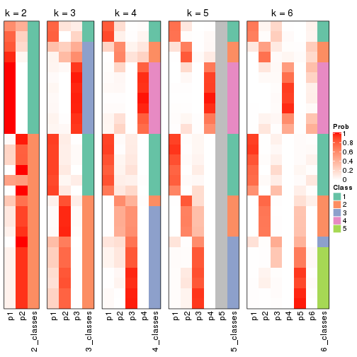
If matrix rows can be associated to genes, consider to use functional_enrichment(res,
...) to perform function enrichment for the signature genes. See this vignette for more detailed explanations.
The object with results only for a single top-value method and a single partition method can be extracted as:
res = res_list["MAD", "skmeans"]
# you can also extract it by
# res = res_list["MAD:skmeans"]
A summary of res and all the functions that can be applied to it:
res
#> A 'ConsensusPartition' object with k = 2, 3, 4, 5, 6.
#> On a matrix with 13917 rows and 56 columns.
#> Top rows (1000, 2000, 3000, 4000, 5000) are extracted by 'MAD' method.
#> Subgroups are detected by 'skmeans' method.
#> Performed in total 1250 partitions by row resampling.
#> Best k for subgroups seems to be 4.
#>
#> Following methods can be applied to this 'ConsensusPartition' object:
#> [1] "cola_report" "collect_classes" "collect_plots"
#> [4] "collect_stats" "colnames" "compare_signatures"
#> [7] "consensus_heatmap" "dimension_reduction" "functional_enrichment"
#> [10] "get_anno_col" "get_anno" "get_classes"
#> [13] "get_consensus" "get_matrix" "get_membership"
#> [16] "get_param" "get_signatures" "get_stats"
#> [19] "is_best_k" "is_stable_k" "membership_heatmap"
#> [22] "ncol" "nrow" "plot_ecdf"
#> [25] "rownames" "select_partition_number" "show"
#> [28] "suggest_best_k" "test_to_known_factors"
collect_plots() function collects all the plots made from res for all k (number of partitions)
into one single page to provide an easy and fast comparison between different k.
collect_plots(res)

The plots are:
k and the heatmap of
predicted classes for each k.k.k.k.All the plots in panels can be made by individual functions and they are plotted later in this section.
select_partition_number() produces several plots showing different
statistics for choosing “optimized” k. There are following statistics:
k;k, the area increased is defined as \(A_k - A_{k-1}\).The detailed explanations of these statistics can be found in the cola vignette.
Generally speaking, lower PAC score, higher mean silhouette score or higher
concordance corresponds to better partition. Rand index and Jaccard index
measure how similar the current partition is compared to partition with k-1.
If they are too similar, we won't accept k is better than k-1.
select_partition_number(res)
The numeric values for all these statistics can be obtained by get_stats().
get_stats(res)
#> k 1-PAC mean_silhouette concordance area_increased Rand Jaccard
#> 2 2 0.860 0.861 0.943 0.5084 0.491 0.491
#> 3 3 1.000 0.981 0.991 0.3253 0.758 0.544
#> 4 4 1.000 0.975 0.978 0.1274 0.870 0.627
#> 5 5 0.849 0.771 0.872 0.0577 0.909 0.650
#> 6 6 0.849 0.697 0.834 0.0323 0.953 0.778
suggest_best_k() suggests the best \(k\) based on these statistics. The rules are as follows:
suggest_best_k(res)
#> [1] 4
#> attr(,"optional")
#> [1] 3
There is also optional best \(k\) = 3 that is worth to check.
Following shows the table of the partitions (You need to click the show/hide
code output link to see it). The membership matrix (columns with name p*)
is inferred by
clue::cl_consensus()
function with the SE method. Basically the value in the membership matrix
represents the probability to belong to a certain group. The finall class
label for an item is determined with the group with highest probability it
belongs to.
In get_classes() function, the entropy is calculated from the membership
matrix and the silhouette score is calculated from the consensus matrix.
cbind(get_classes(res, k = 2), get_membership(res, k = 2))
#> class entropy silhouette p1 p2
#> SRR1975508 2 0.0000 0.953 0.000 1.000
#> SRR1975507 2 0.0000 0.953 0.000 1.000
#> SRR1975506 2 0.0000 0.953 0.000 1.000
#> SRR1975505 2 0.0000 0.953 0.000 1.000
#> SRR1975503 1 0.0000 0.919 1.000 0.000
#> SRR1975504 1 0.0000 0.919 1.000 0.000
#> SRR1975501 1 0.0000 0.919 1.000 0.000
#> SRR1975502 1 0.0000 0.919 1.000 0.000
#> SRR1975499 1 0.0000 0.919 1.000 0.000
#> SRR1975500 1 0.0000 0.919 1.000 0.000
#> SRR1975497 1 0.3431 0.879 0.936 0.064
#> SRR1975498 1 0.3431 0.879 0.936 0.064
#> SRR1975493 2 0.9866 0.262 0.432 0.568
#> SRR1975494 2 0.9866 0.262 0.432 0.568
#> SRR1975495 2 0.0000 0.953 0.000 1.000
#> SRR1975496 2 0.0000 0.953 0.000 1.000
#> SRR1975491 1 0.0000 0.919 1.000 0.000
#> SRR1975492 1 0.0000 0.919 1.000 0.000
#> SRR1975489 1 0.0000 0.919 1.000 0.000
#> SRR1975490 1 0.0000 0.919 1.000 0.000
#> SRR1975487 1 0.0000 0.919 1.000 0.000
#> SRR1975488 1 0.0000 0.919 1.000 0.000
#> SRR1975485 1 0.0000 0.919 1.000 0.000
#> SRR1975486 1 0.0000 0.919 1.000 0.000
#> SRR1975483 1 0.9909 0.307 0.556 0.444
#> SRR1975484 1 0.9909 0.307 0.556 0.444
#> SRR1975481 1 0.9922 0.296 0.552 0.448
#> SRR1975482 1 0.9922 0.296 0.552 0.448
#> SRR1975477 2 0.0000 0.953 0.000 1.000
#> SRR1975478 2 0.0000 0.953 0.000 1.000
#> SRR1975479 1 0.0000 0.919 1.000 0.000
#> SRR1975480 1 0.0000 0.919 1.000 0.000
#> SRR1975475 1 0.0000 0.919 1.000 0.000
#> SRR1975476 1 0.0000 0.919 1.000 0.000
#> SRR1975473 2 0.0000 0.953 0.000 1.000
#> SRR1975474 2 0.0000 0.953 0.000 1.000
#> SRR1975471 2 0.0000 0.953 0.000 1.000
#> SRR1975472 2 0.0000 0.953 0.000 1.000
#> SRR1975469 1 0.3431 0.879 0.936 0.064
#> SRR1975470 1 0.3431 0.879 0.936 0.064
#> SRR1975467 1 0.0000 0.919 1.000 0.000
#> SRR1975468 1 0.0000 0.919 1.000 0.000
#> SRR1975465 2 0.3431 0.906 0.064 0.936
#> SRR1975466 2 0.3431 0.906 0.064 0.936
#> SRR1975463 2 0.3431 0.906 0.064 0.936
#> SRR1975464 2 0.3431 0.906 0.064 0.936
#> SRR1975461 2 0.0000 0.953 0.000 1.000
#> SRR1975462 2 0.0000 0.953 0.000 1.000
#> SRR1975459 2 0.0938 0.946 0.012 0.988
#> SRR1975460 2 0.0938 0.946 0.012 0.988
#> SRR1975457 2 0.0000 0.953 0.000 1.000
#> SRR1975458 2 0.0000 0.953 0.000 1.000
#> SRR1975455 2 0.0000 0.953 0.000 1.000
#> SRR1975456 2 0.0000 0.953 0.000 1.000
#> SRR1975453 2 0.0000 0.953 0.000 1.000
#> SRR1975454 2 0.0000 0.953 0.000 1.000
cbind(get_classes(res, k = 3), get_membership(res, k = 3))
#> class entropy silhouette p1 p2 p3
#> SRR1975508 2 0.0000 0.976 0.000 1.000 0.000
#> SRR1975507 2 0.0000 0.976 0.000 1.000 0.000
#> SRR1975506 2 0.0000 0.976 0.000 1.000 0.000
#> SRR1975505 2 0.0000 0.976 0.000 1.000 0.000
#> SRR1975503 3 0.0000 1.000 0.000 0.000 1.000
#> SRR1975504 3 0.0000 1.000 0.000 0.000 1.000
#> SRR1975501 1 0.0000 0.999 1.000 0.000 0.000
#> SRR1975502 1 0.0000 0.999 1.000 0.000 0.000
#> SRR1975499 3 0.0000 1.000 0.000 0.000 1.000
#> SRR1975500 3 0.0000 1.000 0.000 0.000 1.000
#> SRR1975497 1 0.0000 0.999 1.000 0.000 0.000
#> SRR1975498 1 0.0000 0.999 1.000 0.000 0.000
#> SRR1975493 2 0.4605 0.757 0.000 0.796 0.204
#> SRR1975494 2 0.4605 0.757 0.000 0.796 0.204
#> SRR1975495 1 0.0000 0.999 1.000 0.000 0.000
#> SRR1975496 1 0.0000 0.999 1.000 0.000 0.000
#> SRR1975491 3 0.0000 1.000 0.000 0.000 1.000
#> SRR1975492 3 0.0000 1.000 0.000 0.000 1.000
#> SRR1975489 3 0.0000 1.000 0.000 0.000 1.000
#> SRR1975490 3 0.0000 1.000 0.000 0.000 1.000
#> SRR1975487 3 0.0000 1.000 0.000 0.000 1.000
#> SRR1975488 3 0.0000 1.000 0.000 0.000 1.000
#> SRR1975485 3 0.0000 1.000 0.000 0.000 1.000
#> SRR1975486 3 0.0000 1.000 0.000 0.000 1.000
#> SRR1975483 1 0.0000 0.999 1.000 0.000 0.000
#> SRR1975484 1 0.0000 0.999 1.000 0.000 0.000
#> SRR1975481 1 0.0000 0.999 1.000 0.000 0.000
#> SRR1975482 1 0.0000 0.999 1.000 0.000 0.000
#> SRR1975477 2 0.0000 0.976 0.000 1.000 0.000
#> SRR1975478 2 0.0000 0.976 0.000 1.000 0.000
#> SRR1975479 3 0.0000 1.000 0.000 0.000 1.000
#> SRR1975480 3 0.0000 1.000 0.000 0.000 1.000
#> SRR1975475 3 0.0000 1.000 0.000 0.000 1.000
#> SRR1975476 3 0.0000 1.000 0.000 0.000 1.000
#> SRR1975473 2 0.0000 0.976 0.000 1.000 0.000
#> SRR1975474 2 0.0000 0.976 0.000 1.000 0.000
#> SRR1975471 1 0.0000 0.999 1.000 0.000 0.000
#> SRR1975472 1 0.0000 0.999 1.000 0.000 0.000
#> SRR1975469 1 0.0424 0.992 0.992 0.000 0.008
#> SRR1975470 1 0.0424 0.992 0.992 0.000 0.008
#> SRR1975467 3 0.0000 1.000 0.000 0.000 1.000
#> SRR1975468 3 0.0000 1.000 0.000 0.000 1.000
#> SRR1975465 2 0.0000 0.976 0.000 1.000 0.000
#> SRR1975466 2 0.0000 0.976 0.000 1.000 0.000
#> SRR1975463 2 0.0000 0.976 0.000 1.000 0.000
#> SRR1975464 2 0.0000 0.976 0.000 1.000 0.000
#> SRR1975461 2 0.1411 0.948 0.036 0.964 0.000
#> SRR1975462 2 0.1411 0.948 0.036 0.964 0.000
#> SRR1975459 2 0.0000 0.976 0.000 1.000 0.000
#> SRR1975460 2 0.0000 0.976 0.000 1.000 0.000
#> SRR1975457 2 0.0000 0.976 0.000 1.000 0.000
#> SRR1975458 2 0.0000 0.976 0.000 1.000 0.000
#> SRR1975455 2 0.0000 0.976 0.000 1.000 0.000
#> SRR1975456 2 0.0000 0.976 0.000 1.000 0.000
#> SRR1975453 1 0.0000 0.999 1.000 0.000 0.000
#> SRR1975454 1 0.0000 0.999 1.000 0.000 0.000
cbind(get_classes(res, k = 4), get_membership(res, k = 4))
#> class entropy silhouette p1 p2 p3 p4
#> SRR1975508 3 0.0000 0.982 0.000 0.000 1.000 0.000
#> SRR1975507 3 0.0000 0.982 0.000 0.000 1.000 0.000
#> SRR1975506 3 0.0000 0.982 0.000 0.000 1.000 0.000
#> SRR1975505 3 0.0000 0.982 0.000 0.000 1.000 0.000
#> SRR1975503 4 0.0000 1.000 0.000 0.000 0.000 1.000
#> SRR1975504 4 0.0000 1.000 0.000 0.000 0.000 1.000
#> SRR1975501 1 0.0707 0.981 0.980 0.020 0.000 0.000
#> SRR1975502 1 0.0707 0.981 0.980 0.020 0.000 0.000
#> SRR1975499 4 0.0000 1.000 0.000 0.000 0.000 1.000
#> SRR1975500 4 0.0000 1.000 0.000 0.000 0.000 1.000
#> SRR1975497 1 0.0927 0.980 0.976 0.016 0.000 0.008
#> SRR1975498 1 0.0927 0.980 0.976 0.016 0.000 0.008
#> SRR1975493 2 0.0817 0.953 0.000 0.976 0.024 0.000
#> SRR1975494 2 0.0817 0.953 0.000 0.976 0.024 0.000
#> SRR1975495 1 0.0336 0.981 0.992 0.008 0.000 0.000
#> SRR1975496 1 0.0336 0.981 0.992 0.008 0.000 0.000
#> SRR1975491 2 0.3342 0.875 0.032 0.868 0.000 0.100
#> SRR1975492 2 0.3342 0.875 0.032 0.868 0.000 0.100
#> SRR1975489 4 0.0000 1.000 0.000 0.000 0.000 1.000
#> SRR1975490 4 0.0000 1.000 0.000 0.000 0.000 1.000
#> SRR1975487 4 0.0000 1.000 0.000 0.000 0.000 1.000
#> SRR1975488 4 0.0000 1.000 0.000 0.000 0.000 1.000
#> SRR1975485 4 0.0000 1.000 0.000 0.000 0.000 1.000
#> SRR1975486 4 0.0000 1.000 0.000 0.000 0.000 1.000
#> SRR1975483 1 0.0000 0.983 1.000 0.000 0.000 0.000
#> SRR1975484 1 0.0000 0.983 1.000 0.000 0.000 0.000
#> SRR1975481 1 0.0469 0.983 0.988 0.012 0.000 0.000
#> SRR1975482 1 0.0469 0.983 0.988 0.012 0.000 0.000
#> SRR1975477 3 0.0921 0.981 0.000 0.028 0.972 0.000
#> SRR1975478 3 0.0921 0.981 0.000 0.028 0.972 0.000
#> SRR1975479 4 0.0000 1.000 0.000 0.000 0.000 1.000
#> SRR1975480 4 0.0000 1.000 0.000 0.000 0.000 1.000
#> SRR1975475 4 0.0000 1.000 0.000 0.000 0.000 1.000
#> SRR1975476 4 0.0000 1.000 0.000 0.000 0.000 1.000
#> SRR1975473 3 0.0921 0.981 0.000 0.028 0.972 0.000
#> SRR1975474 3 0.0921 0.981 0.000 0.028 0.972 0.000
#> SRR1975471 1 0.1042 0.973 0.972 0.008 0.020 0.000
#> SRR1975472 1 0.1042 0.973 0.972 0.008 0.020 0.000
#> SRR1975469 1 0.0779 0.982 0.980 0.016 0.000 0.004
#> SRR1975470 1 0.0779 0.982 0.980 0.016 0.000 0.004
#> SRR1975467 2 0.1792 0.923 0.000 0.932 0.000 0.068
#> SRR1975468 2 0.1792 0.923 0.000 0.932 0.000 0.068
#> SRR1975465 2 0.1211 0.955 0.000 0.960 0.040 0.000
#> SRR1975466 2 0.1211 0.955 0.000 0.960 0.040 0.000
#> SRR1975463 2 0.1211 0.955 0.000 0.960 0.040 0.000
#> SRR1975464 2 0.1211 0.955 0.000 0.960 0.040 0.000
#> SRR1975461 3 0.0927 0.965 0.016 0.008 0.976 0.000
#> SRR1975462 3 0.0927 0.965 0.016 0.008 0.976 0.000
#> SRR1975459 2 0.1211 0.955 0.000 0.960 0.040 0.000
#> SRR1975460 2 0.1211 0.955 0.000 0.960 0.040 0.000
#> SRR1975457 3 0.0592 0.985 0.000 0.016 0.984 0.000
#> SRR1975458 3 0.0592 0.985 0.000 0.016 0.984 0.000
#> SRR1975455 3 0.0592 0.985 0.000 0.016 0.984 0.000
#> SRR1975456 3 0.0592 0.985 0.000 0.016 0.984 0.000
#> SRR1975453 1 0.1452 0.963 0.956 0.008 0.036 0.000
#> SRR1975454 1 0.1452 0.963 0.956 0.008 0.036 0.000
cbind(get_classes(res, k = 5), get_membership(res, k = 5))
#> class entropy silhouette p1 p2 p3 p4 p5
#> SRR1975508 3 0.3586 0.768 0.000 0.000 0.736 0.000 0.264
#> SRR1975507 3 0.3586 0.768 0.000 0.000 0.736 0.000 0.264
#> SRR1975506 3 0.3586 0.768 0.000 0.000 0.736 0.000 0.264
#> SRR1975505 3 0.3586 0.768 0.000 0.000 0.736 0.000 0.264
#> SRR1975503 4 0.0609 0.983 0.020 0.000 0.000 0.980 0.000
#> SRR1975504 4 0.0609 0.983 0.020 0.000 0.000 0.980 0.000
#> SRR1975501 1 0.1851 0.676 0.912 0.000 0.000 0.000 0.088
#> SRR1975502 1 0.1851 0.676 0.912 0.000 0.000 0.000 0.088
#> SRR1975499 4 0.0000 0.996 0.000 0.000 0.000 1.000 0.000
#> SRR1975500 4 0.0000 0.996 0.000 0.000 0.000 1.000 0.000
#> SRR1975497 1 0.2338 0.684 0.884 0.000 0.000 0.004 0.112
#> SRR1975498 1 0.2338 0.684 0.884 0.000 0.000 0.004 0.112
#> SRR1975493 2 0.0000 0.966 0.000 1.000 0.000 0.000 0.000
#> SRR1975494 2 0.0000 0.966 0.000 1.000 0.000 0.000 0.000
#> SRR1975495 5 0.3774 0.489 0.296 0.000 0.000 0.000 0.704
#> SRR1975496 5 0.3774 0.489 0.296 0.000 0.000 0.000 0.704
#> SRR1975491 1 0.4988 0.328 0.656 0.284 0.000 0.060 0.000
#> SRR1975492 1 0.4988 0.328 0.656 0.284 0.000 0.060 0.000
#> SRR1975489 4 0.0000 0.996 0.000 0.000 0.000 1.000 0.000
#> SRR1975490 4 0.0000 0.996 0.000 0.000 0.000 1.000 0.000
#> SRR1975487 4 0.0000 0.996 0.000 0.000 0.000 1.000 0.000
#> SRR1975488 4 0.0000 0.996 0.000 0.000 0.000 1.000 0.000
#> SRR1975485 4 0.0000 0.996 0.000 0.000 0.000 1.000 0.000
#> SRR1975486 4 0.0000 0.996 0.000 0.000 0.000 1.000 0.000
#> SRR1975483 5 0.4249 0.222 0.432 0.000 0.000 0.000 0.568
#> SRR1975484 5 0.4249 0.222 0.432 0.000 0.000 0.000 0.568
#> SRR1975481 1 0.4201 0.222 0.592 0.000 0.000 0.000 0.408
#> SRR1975482 1 0.4201 0.222 0.592 0.000 0.000 0.000 0.408
#> SRR1975477 3 0.0162 0.896 0.000 0.004 0.996 0.000 0.000
#> SRR1975478 3 0.0162 0.896 0.000 0.004 0.996 0.000 0.000
#> SRR1975479 4 0.0000 0.996 0.000 0.000 0.000 1.000 0.000
#> SRR1975480 4 0.0000 0.996 0.000 0.000 0.000 1.000 0.000
#> SRR1975475 4 0.0324 0.992 0.004 0.000 0.000 0.992 0.004
#> SRR1975476 4 0.0324 0.992 0.004 0.000 0.000 0.992 0.004
#> SRR1975473 3 0.0290 0.894 0.000 0.008 0.992 0.000 0.000
#> SRR1975474 3 0.0290 0.894 0.000 0.008 0.992 0.000 0.000
#> SRR1975471 5 0.2605 0.605 0.148 0.000 0.000 0.000 0.852
#> SRR1975472 5 0.2605 0.605 0.148 0.000 0.000 0.000 0.852
#> SRR1975469 1 0.3086 0.646 0.816 0.000 0.000 0.004 0.180
#> SRR1975470 1 0.3086 0.646 0.816 0.000 0.000 0.004 0.180
#> SRR1975467 2 0.2585 0.903 0.064 0.896 0.000 0.036 0.004
#> SRR1975468 2 0.2585 0.903 0.064 0.896 0.000 0.036 0.004
#> SRR1975465 2 0.0510 0.972 0.000 0.984 0.016 0.000 0.000
#> SRR1975466 2 0.0510 0.972 0.000 0.984 0.016 0.000 0.000
#> SRR1975463 2 0.0510 0.972 0.000 0.984 0.016 0.000 0.000
#> SRR1975464 2 0.0510 0.972 0.000 0.984 0.016 0.000 0.000
#> SRR1975461 5 0.3707 0.266 0.000 0.000 0.284 0.000 0.716
#> SRR1975462 5 0.3707 0.266 0.000 0.000 0.284 0.000 0.716
#> SRR1975459 2 0.0510 0.972 0.000 0.984 0.016 0.000 0.000
#> SRR1975460 2 0.0510 0.972 0.000 0.984 0.016 0.000 0.000
#> SRR1975457 3 0.0324 0.896 0.000 0.004 0.992 0.000 0.004
#> SRR1975458 3 0.0324 0.896 0.000 0.004 0.992 0.000 0.004
#> SRR1975455 3 0.0162 0.896 0.000 0.004 0.996 0.000 0.000
#> SRR1975456 3 0.0162 0.896 0.000 0.004 0.996 0.000 0.000
#> SRR1975453 5 0.0324 0.594 0.004 0.000 0.004 0.000 0.992
#> SRR1975454 5 0.0324 0.594 0.004 0.000 0.004 0.000 0.992
cbind(get_classes(res, k = 6), get_membership(res, k = 6))
#> class entropy silhouette p1 p2 p3 p4 p5 p6
#> SRR1975508 5 0.4460 0.4846 0.000 0.000 0.452 0.000 0.520 0.028
#> SRR1975507 5 0.4460 0.4846 0.000 0.000 0.452 0.000 0.520 0.028
#> SRR1975506 5 0.4460 0.4846 0.000 0.000 0.452 0.000 0.520 0.028
#> SRR1975505 5 0.4460 0.4846 0.000 0.000 0.452 0.000 0.520 0.028
#> SRR1975503 4 0.2658 0.8666 0.000 0.008 0.016 0.864 0.000 0.112
#> SRR1975504 4 0.2658 0.8666 0.000 0.008 0.016 0.864 0.000 0.112
#> SRR1975501 1 0.4407 0.0513 0.492 0.000 0.024 0.000 0.000 0.484
#> SRR1975502 1 0.4407 0.0513 0.492 0.000 0.024 0.000 0.000 0.484
#> SRR1975499 4 0.0291 0.9571 0.000 0.000 0.004 0.992 0.000 0.004
#> SRR1975500 4 0.0291 0.9571 0.000 0.000 0.004 0.992 0.000 0.004
#> SRR1975497 1 0.3767 0.4237 0.708 0.000 0.012 0.004 0.000 0.276
#> SRR1975498 1 0.3767 0.4237 0.708 0.000 0.012 0.004 0.000 0.276
#> SRR1975493 2 0.1124 0.8878 0.000 0.956 0.000 0.000 0.008 0.036
#> SRR1975494 2 0.1124 0.8878 0.000 0.956 0.000 0.000 0.008 0.036
#> SRR1975495 1 0.4084 0.1113 0.588 0.000 0.400 0.000 0.000 0.012
#> SRR1975496 1 0.4084 0.1113 0.588 0.000 0.400 0.000 0.000 0.012
#> SRR1975491 6 0.2401 1.0000 0.044 0.036 0.000 0.020 0.000 0.900
#> SRR1975492 6 0.2401 1.0000 0.044 0.036 0.000 0.020 0.000 0.900
#> SRR1975489 4 0.0146 0.9572 0.000 0.000 0.004 0.996 0.000 0.000
#> SRR1975490 4 0.0146 0.9572 0.000 0.000 0.004 0.996 0.000 0.000
#> SRR1975487 4 0.0146 0.9573 0.000 0.000 0.000 0.996 0.000 0.004
#> SRR1975488 4 0.0146 0.9573 0.000 0.000 0.000 0.996 0.000 0.004
#> SRR1975485 4 0.0146 0.9573 0.000 0.000 0.004 0.996 0.000 0.000
#> SRR1975486 4 0.0146 0.9573 0.000 0.000 0.004 0.996 0.000 0.000
#> SRR1975483 1 0.2969 0.4599 0.776 0.000 0.224 0.000 0.000 0.000
#> SRR1975484 1 0.2969 0.4599 0.776 0.000 0.224 0.000 0.000 0.000
#> SRR1975481 1 0.3413 0.5514 0.812 0.000 0.108 0.000 0.000 0.080
#> SRR1975482 1 0.3413 0.5514 0.812 0.000 0.108 0.000 0.000 0.080
#> SRR1975477 5 0.0508 0.7938 0.000 0.004 0.000 0.000 0.984 0.012
#> SRR1975478 5 0.0508 0.7938 0.000 0.004 0.000 0.000 0.984 0.012
#> SRR1975479 4 0.1562 0.9383 0.004 0.000 0.024 0.940 0.000 0.032
#> SRR1975480 4 0.1562 0.9383 0.004 0.000 0.024 0.940 0.000 0.032
#> SRR1975475 4 0.2022 0.9305 0.000 0.008 0.024 0.916 0.000 0.052
#> SRR1975476 4 0.2022 0.9305 0.000 0.008 0.024 0.916 0.000 0.052
#> SRR1975473 5 0.0767 0.7900 0.000 0.004 0.008 0.000 0.976 0.012
#> SRR1975474 5 0.0767 0.7900 0.000 0.004 0.008 0.000 0.976 0.012
#> SRR1975471 3 0.3907 0.3487 0.408 0.000 0.588 0.000 0.000 0.004
#> SRR1975472 3 0.3907 0.3487 0.408 0.000 0.588 0.000 0.000 0.004
#> SRR1975469 1 0.3250 0.5170 0.788 0.000 0.012 0.004 0.000 0.196
#> SRR1975470 1 0.3250 0.5170 0.788 0.000 0.012 0.004 0.000 0.196
#> SRR1975467 2 0.4498 0.5298 0.000 0.640 0.016 0.024 0.000 0.320
#> SRR1975468 2 0.4498 0.5298 0.000 0.640 0.016 0.024 0.000 0.320
#> SRR1975465 2 0.0363 0.9030 0.000 0.988 0.000 0.000 0.012 0.000
#> SRR1975466 2 0.0363 0.9030 0.000 0.988 0.000 0.000 0.012 0.000
#> SRR1975463 2 0.0363 0.9030 0.000 0.988 0.000 0.000 0.012 0.000
#> SRR1975464 2 0.0363 0.9030 0.000 0.988 0.000 0.000 0.012 0.000
#> SRR1975461 3 0.2312 0.5577 0.000 0.000 0.876 0.000 0.112 0.012
#> SRR1975462 3 0.2312 0.5577 0.000 0.000 0.876 0.000 0.112 0.012
#> SRR1975459 2 0.0363 0.9030 0.000 0.988 0.000 0.000 0.012 0.000
#> SRR1975460 2 0.0363 0.9030 0.000 0.988 0.000 0.000 0.012 0.000
#> SRR1975457 5 0.0458 0.7981 0.000 0.000 0.016 0.000 0.984 0.000
#> SRR1975458 5 0.0458 0.7981 0.000 0.000 0.016 0.000 0.984 0.000
#> SRR1975455 5 0.0260 0.7984 0.000 0.000 0.008 0.000 0.992 0.000
#> SRR1975456 5 0.0260 0.7984 0.000 0.000 0.008 0.000 0.992 0.000
#> SRR1975453 3 0.2703 0.6555 0.172 0.000 0.824 0.000 0.000 0.004
#> SRR1975454 3 0.2703 0.6555 0.172 0.000 0.824 0.000 0.000 0.004
Heatmaps for the consensus matrix. It visualizes the probability of two samples to be in a same group.
consensus_heatmap(res, k = 2)
consensus_heatmap(res, k = 3)
consensus_heatmap(res, k = 4)
consensus_heatmap(res, k = 5)
consensus_heatmap(res, k = 6)
Heatmaps for the membership of samples in all partitions to see how consistent they are:
membership_heatmap(res, k = 2)
membership_heatmap(res, k = 3)
membership_heatmap(res, k = 4)

membership_heatmap(res, k = 5)
membership_heatmap(res, k = 6)
As soon as we have had the classes for columns, we can look for signatures which are significantly different between classes which can be candidate marks for certain classes. Following are the heatmaps for signatures.
Signature heatmaps where rows are scaled:
get_signatures(res, k = 2)
get_signatures(res, k = 3)
get_signatures(res, k = 4)
get_signatures(res, k = 5)
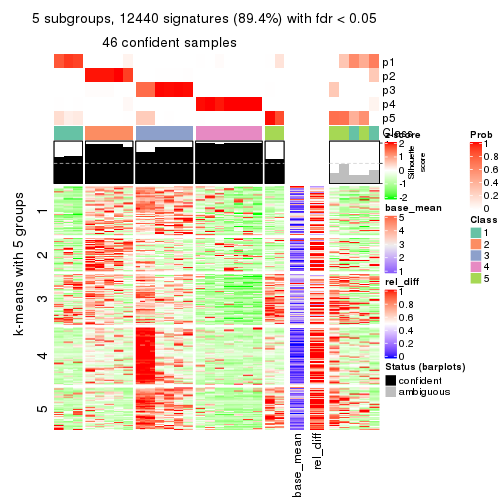
get_signatures(res, k = 6)
Signature heatmaps where rows are not scaled:
get_signatures(res, k = 2, scale_rows = FALSE)
get_signatures(res, k = 3, scale_rows = FALSE)
get_signatures(res, k = 4, scale_rows = FALSE)
get_signatures(res, k = 5, scale_rows = FALSE)
get_signatures(res, k = 6, scale_rows = FALSE)
Compare the overlap of signatures from different k:
compare_signatures(res)
get_signature() returns a data frame invisibly. TO get the list of signatures, the function
call should be assigned to a variable explicitly. In following code, if plot argument is set
to FALSE, no heatmap is plotted while only the differential analysis is performed.
# code only for demonstration
tb = get_signature(res, k = ..., plot = FALSE)
An example of the output of tb is:
#> which_row fdr mean_1 mean_2 scaled_mean_1 scaled_mean_2 km
#> 1 38 0.042760348 8.373488 9.131774 -0.5533452 0.5164555 1
#> 2 40 0.018707592 7.106213 8.469186 -0.6173731 0.5762149 1
#> 3 55 0.019134737 10.221463 11.207825 -0.6159697 0.5749050 1
#> 4 59 0.006059896 5.921854 7.869574 -0.6899429 0.6439467 1
#> 5 60 0.018055526 8.928898 10.211722 -0.6204761 0.5791110 1
#> 6 98 0.009384629 15.714769 14.887706 0.6635654 -0.6193277 2
...
The columns in tb are:
which_row: row indices corresponding to the input matrix.fdr: FDR for the differential test. mean_x: The mean value in group x.scaled_mean_x: The mean value in group x after rows are scaled.km: Row groups if k-means clustering is applied to rows.UMAP plot which shows how samples are separated.
dimension_reduction(res, k = 2, method = "UMAP")
dimension_reduction(res, k = 3, method = "UMAP")
dimension_reduction(res, k = 4, method = "UMAP")
dimension_reduction(res, k = 5, method = "UMAP")
dimension_reduction(res, k = 6, method = "UMAP")
Following heatmap shows how subgroups are split when increasing k:
collect_classes(res)
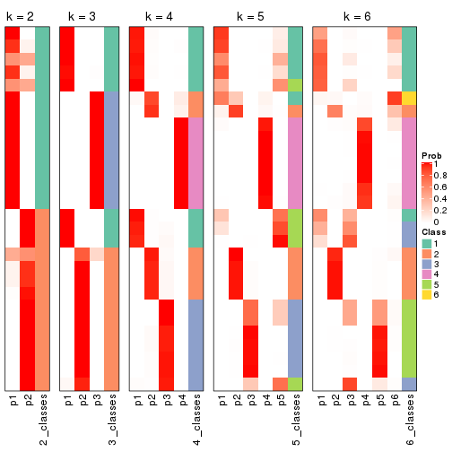
If matrix rows can be associated to genes, consider to use functional_enrichment(res,
...) to perform function enrichment for the signature genes. See this vignette for more detailed explanations.
The object with results only for a single top-value method and a single partition method can be extracted as:
res = res_list["MAD", "pam"]
# you can also extract it by
# res = res_list["MAD:pam"]
A summary of res and all the functions that can be applied to it:
res
#> A 'ConsensusPartition' object with k = 2, 3, 4, 5, 6.
#> On a matrix with 13917 rows and 56 columns.
#> Top rows (1000, 2000, 3000, 4000, 5000) are extracted by 'MAD' method.
#> Subgroups are detected by 'pam' method.
#> Performed in total 1250 partitions by row resampling.
#> Best k for subgroups seems to be 5.
#>
#> Following methods can be applied to this 'ConsensusPartition' object:
#> [1] "cola_report" "collect_classes" "collect_plots"
#> [4] "collect_stats" "colnames" "compare_signatures"
#> [7] "consensus_heatmap" "dimension_reduction" "functional_enrichment"
#> [10] "get_anno_col" "get_anno" "get_classes"
#> [13] "get_consensus" "get_matrix" "get_membership"
#> [16] "get_param" "get_signatures" "get_stats"
#> [19] "is_best_k" "is_stable_k" "membership_heatmap"
#> [22] "ncol" "nrow" "plot_ecdf"
#> [25] "rownames" "select_partition_number" "show"
#> [28] "suggest_best_k" "test_to_known_factors"
collect_plots() function collects all the plots made from res for all k (number of partitions)
into one single page to provide an easy and fast comparison between different k.
collect_plots(res)
The plots are:
k and the heatmap of
predicted classes for each k.k.k.k.All the plots in panels can be made by individual functions and they are plotted later in this section.
select_partition_number() produces several plots showing different
statistics for choosing “optimized” k. There are following statistics:
k;k, the area increased is defined as \(A_k - A_{k-1}\).The detailed explanations of these statistics can be found in the cola vignette.
Generally speaking, lower PAC score, higher mean silhouette score or higher
concordance corresponds to better partition. Rand index and Jaccard index
measure how similar the current partition is compared to partition with k-1.
If they are too similar, we won't accept k is better than k-1.
select_partition_number(res)
The numeric values for all these statistics can be obtained by get_stats().
get_stats(res)
#> k 1-PAC mean_silhouette concordance area_increased Rand Jaccard
#> 2 2 0.675 0.916 0.951 0.4575 0.514 0.514
#> 3 3 0.797 0.715 0.888 0.4508 0.579 0.339
#> 4 4 0.983 0.945 0.977 0.1469 0.823 0.531
#> 5 5 0.975 0.942 0.972 0.0445 0.927 0.717
#> 6 6 0.897 0.852 0.910 0.0362 0.990 0.949
suggest_best_k() suggests the best \(k\) based on these statistics. The rules are as follows:
suggest_best_k(res)
#> [1] 5
#> attr(,"optional")
#> [1] 4
There is also optional best \(k\) = 4 that is worth to check.
Following shows the table of the partitions (You need to click the show/hide
code output link to see it). The membership matrix (columns with name p*)
is inferred by
clue::cl_consensus()
function with the SE method. Basically the value in the membership matrix
represents the probability to belong to a certain group. The finall class
label for an item is determined with the group with highest probability it
belongs to.
In get_classes() function, the entropy is calculated from the membership
matrix and the silhouette score is calculated from the consensus matrix.
cbind(get_classes(res, k = 2), get_membership(res, k = 2))
#> class entropy silhouette p1 p2
#> SRR1975508 2 0.000 0.993 0.000 1.000
#> SRR1975507 2 0.000 0.993 0.000 1.000
#> SRR1975506 2 0.000 0.993 0.000 1.000
#> SRR1975505 2 0.000 0.993 0.000 1.000
#> SRR1975503 1 0.000 0.873 1.000 0.000
#> SRR1975504 1 0.000 0.873 1.000 0.000
#> SRR1975501 1 0.795 0.751 0.760 0.240
#> SRR1975502 1 0.802 0.747 0.756 0.244
#> SRR1975499 1 0.000 0.873 1.000 0.000
#> SRR1975500 1 0.000 0.873 1.000 0.000
#> SRR1975497 1 0.506 0.846 0.888 0.112
#> SRR1975498 1 0.625 0.823 0.844 0.156
#> SRR1975493 2 0.443 0.883 0.092 0.908
#> SRR1975494 2 0.443 0.883 0.092 0.908
#> SRR1975495 2 0.000 0.993 0.000 1.000
#> SRR1975496 2 0.000 0.993 0.000 1.000
#> SRR1975491 1 0.939 0.609 0.644 0.356
#> SRR1975492 1 0.939 0.609 0.644 0.356
#> SRR1975489 1 0.000 0.873 1.000 0.000
#> SRR1975490 1 0.000 0.873 1.000 0.000
#> SRR1975487 1 0.000 0.873 1.000 0.000
#> SRR1975488 1 0.000 0.873 1.000 0.000
#> SRR1975485 1 0.000 0.873 1.000 0.000
#> SRR1975486 1 0.000 0.873 1.000 0.000
#> SRR1975483 2 0.000 0.993 0.000 1.000
#> SRR1975484 2 0.000 0.993 0.000 1.000
#> SRR1975481 2 0.000 0.993 0.000 1.000
#> SRR1975482 2 0.000 0.993 0.000 1.000
#> SRR1975477 2 0.000 0.993 0.000 1.000
#> SRR1975478 2 0.000 0.993 0.000 1.000
#> SRR1975479 1 0.295 0.863 0.948 0.052
#> SRR1975480 1 0.295 0.863 0.948 0.052
#> SRR1975475 1 0.574 0.831 0.864 0.136
#> SRR1975476 1 0.563 0.833 0.868 0.132
#> SRR1975473 2 0.000 0.993 0.000 1.000
#> SRR1975474 2 0.000 0.993 0.000 1.000
#> SRR1975471 2 0.000 0.993 0.000 1.000
#> SRR1975472 2 0.000 0.993 0.000 1.000
#> SRR1975469 2 0.000 0.993 0.000 1.000
#> SRR1975470 2 0.000 0.993 0.000 1.000
#> SRR1975467 1 0.939 0.609 0.644 0.356
#> SRR1975468 1 0.939 0.609 0.644 0.356
#> SRR1975465 2 0.000 0.993 0.000 1.000
#> SRR1975466 2 0.000 0.993 0.000 1.000
#> SRR1975463 2 0.000 0.993 0.000 1.000
#> SRR1975464 2 0.000 0.993 0.000 1.000
#> SRR1975461 2 0.000 0.993 0.000 1.000
#> SRR1975462 2 0.000 0.993 0.000 1.000
#> SRR1975459 2 0.000 0.993 0.000 1.000
#> SRR1975460 2 0.000 0.993 0.000 1.000
#> SRR1975457 2 0.000 0.993 0.000 1.000
#> SRR1975458 2 0.000 0.993 0.000 1.000
#> SRR1975455 2 0.000 0.993 0.000 1.000
#> SRR1975456 2 0.000 0.993 0.000 1.000
#> SRR1975453 2 0.000 0.993 0.000 1.000
#> SRR1975454 2 0.000 0.993 0.000 1.000
cbind(get_classes(res, k = 3), get_membership(res, k = 3))
#> class entropy silhouette p1 p2 p3
#> SRR1975508 2 0.6936 0.785 0.016 0.524 0.460
#> SRR1975507 2 0.7838 0.756 0.052 0.488 0.460
#> SRR1975506 2 0.8210 0.736 0.072 0.468 0.460
#> SRR1975505 2 0.7283 0.777 0.028 0.512 0.460
#> SRR1975503 3 0.6280 0.796 0.000 0.460 0.540
#> SRR1975504 3 0.6280 0.796 0.000 0.460 0.540
#> SRR1975501 1 0.0000 0.997 1.000 0.000 0.000
#> SRR1975502 1 0.0000 0.997 1.000 0.000 0.000
#> SRR1975499 3 0.6280 0.796 0.000 0.460 0.540
#> SRR1975500 3 0.6280 0.796 0.000 0.460 0.540
#> SRR1975497 1 0.0000 0.997 1.000 0.000 0.000
#> SRR1975498 1 0.0000 0.997 1.000 0.000 0.000
#> SRR1975493 2 0.5785 0.707 0.000 0.668 0.332
#> SRR1975494 2 0.5785 0.707 0.000 0.668 0.332
#> SRR1975495 1 0.0000 0.997 1.000 0.000 0.000
#> SRR1975496 1 0.0000 0.997 1.000 0.000 0.000
#> SRR1975491 2 0.6772 -0.264 0.304 0.664 0.032
#> SRR1975492 2 0.6448 -0.255 0.328 0.656 0.016
#> SRR1975489 3 0.6280 0.796 0.000 0.460 0.540
#> SRR1975490 3 0.6280 0.796 0.000 0.460 0.540
#> SRR1975487 3 0.6280 0.796 0.000 0.460 0.540
#> SRR1975488 3 0.6280 0.796 0.000 0.460 0.540
#> SRR1975485 3 0.6280 0.796 0.000 0.460 0.540
#> SRR1975486 3 0.6280 0.796 0.000 0.460 0.540
#> SRR1975483 1 0.0000 0.997 1.000 0.000 0.000
#> SRR1975484 1 0.0000 0.997 1.000 0.000 0.000
#> SRR1975481 1 0.0000 0.997 1.000 0.000 0.000
#> SRR1975482 1 0.0000 0.997 1.000 0.000 0.000
#> SRR1975477 2 0.6280 0.792 0.000 0.540 0.460
#> SRR1975478 2 0.6280 0.792 0.000 0.540 0.460
#> SRR1975479 3 0.6192 0.616 0.000 0.420 0.580
#> SRR1975480 3 0.6154 0.640 0.000 0.408 0.592
#> SRR1975475 2 0.0237 0.251 0.000 0.996 0.004
#> SRR1975476 2 0.0237 0.237 0.000 0.996 0.004
#> SRR1975473 2 0.6280 0.792 0.000 0.540 0.460
#> SRR1975474 2 0.6280 0.792 0.000 0.540 0.460
#> SRR1975471 1 0.0000 0.997 1.000 0.000 0.000
#> SRR1975472 1 0.0000 0.997 1.000 0.000 0.000
#> SRR1975469 1 0.0000 0.997 1.000 0.000 0.000
#> SRR1975470 1 0.0000 0.997 1.000 0.000 0.000
#> SRR1975467 2 0.0237 0.236 0.000 0.996 0.004
#> SRR1975468 2 0.0237 0.236 0.000 0.996 0.004
#> SRR1975465 2 0.6280 0.792 0.000 0.540 0.460
#> SRR1975466 2 0.6280 0.792 0.000 0.540 0.460
#> SRR1975463 2 0.6280 0.792 0.000 0.540 0.460
#> SRR1975464 2 0.6280 0.792 0.000 0.540 0.460
#> SRR1975461 1 0.0892 0.979 0.980 0.000 0.020
#> SRR1975462 1 0.0892 0.979 0.980 0.000 0.020
#> SRR1975459 2 0.6280 0.792 0.000 0.540 0.460
#> SRR1975460 2 0.6280 0.792 0.000 0.540 0.460
#> SRR1975457 2 0.6659 0.789 0.008 0.532 0.460
#> SRR1975458 2 0.6659 0.789 0.008 0.532 0.460
#> SRR1975455 3 0.8405 -0.753 0.084 0.456 0.460
#> SRR1975456 3 0.8405 -0.753 0.084 0.456 0.460
#> SRR1975453 1 0.0000 0.997 1.000 0.000 0.000
#> SRR1975454 1 0.0000 0.997 1.000 0.000 0.000
cbind(get_classes(res, k = 4), get_membership(res, k = 4))
#> class entropy silhouette p1 p2 p3 p4
#> SRR1975508 3 0.0000 0.996 0 0.000 1.000 0.000
#> SRR1975507 3 0.0000 0.996 0 0.000 1.000 0.000
#> SRR1975506 3 0.0000 0.996 0 0.000 1.000 0.000
#> SRR1975505 3 0.0000 0.996 0 0.000 1.000 0.000
#> SRR1975503 4 0.0000 0.966 0 0.000 0.000 1.000
#> SRR1975504 4 0.0000 0.966 0 0.000 0.000 1.000
#> SRR1975501 1 0.0000 1.000 1 0.000 0.000 0.000
#> SRR1975502 1 0.0000 1.000 1 0.000 0.000 0.000
#> SRR1975499 4 0.0000 0.966 0 0.000 0.000 1.000
#> SRR1975500 4 0.0000 0.966 0 0.000 0.000 1.000
#> SRR1975497 1 0.0000 1.000 1 0.000 0.000 0.000
#> SRR1975498 1 0.0000 1.000 1 0.000 0.000 0.000
#> SRR1975493 2 0.0000 0.934 0 1.000 0.000 0.000
#> SRR1975494 2 0.0000 0.934 0 1.000 0.000 0.000
#> SRR1975495 1 0.0000 1.000 1 0.000 0.000 0.000
#> SRR1975496 1 0.0000 1.000 1 0.000 0.000 0.000
#> SRR1975491 2 0.0000 0.934 0 1.000 0.000 0.000
#> SRR1975492 2 0.0000 0.934 0 1.000 0.000 0.000
#> SRR1975489 4 0.0000 0.966 0 0.000 0.000 1.000
#> SRR1975490 4 0.0000 0.966 0 0.000 0.000 1.000
#> SRR1975487 4 0.0000 0.966 0 0.000 0.000 1.000
#> SRR1975488 4 0.0000 0.966 0 0.000 0.000 1.000
#> SRR1975485 4 0.0000 0.966 0 0.000 0.000 1.000
#> SRR1975486 4 0.0000 0.966 0 0.000 0.000 1.000
#> SRR1975483 1 0.0000 1.000 1 0.000 0.000 0.000
#> SRR1975484 1 0.0000 1.000 1 0.000 0.000 0.000
#> SRR1975481 1 0.0000 1.000 1 0.000 0.000 0.000
#> SRR1975482 1 0.0000 1.000 1 0.000 0.000 0.000
#> SRR1975477 3 0.0707 0.979 0 0.020 0.980 0.000
#> SRR1975478 3 0.0817 0.975 0 0.024 0.976 0.000
#> SRR1975479 4 0.0000 0.966 0 0.000 0.000 1.000
#> SRR1975480 4 0.0000 0.966 0 0.000 0.000 1.000
#> SRR1975475 4 0.3975 0.711 0 0.240 0.000 0.760
#> SRR1975476 4 0.3569 0.773 0 0.196 0.000 0.804
#> SRR1975473 2 0.4866 0.362 0 0.596 0.404 0.000
#> SRR1975474 2 0.4866 0.362 0 0.596 0.404 0.000
#> SRR1975471 1 0.0000 1.000 1 0.000 0.000 0.000
#> SRR1975472 1 0.0000 1.000 1 0.000 0.000 0.000
#> SRR1975469 1 0.0000 1.000 1 0.000 0.000 0.000
#> SRR1975470 1 0.0000 1.000 1 0.000 0.000 0.000
#> SRR1975467 2 0.0000 0.934 0 1.000 0.000 0.000
#> SRR1975468 2 0.0000 0.934 0 1.000 0.000 0.000
#> SRR1975465 2 0.0000 0.934 0 1.000 0.000 0.000
#> SRR1975466 2 0.0000 0.934 0 1.000 0.000 0.000
#> SRR1975463 2 0.0000 0.934 0 1.000 0.000 0.000
#> SRR1975464 2 0.0000 0.934 0 1.000 0.000 0.000
#> SRR1975461 3 0.0000 0.996 0 0.000 1.000 0.000
#> SRR1975462 3 0.0000 0.996 0 0.000 1.000 0.000
#> SRR1975459 2 0.0000 0.934 0 1.000 0.000 0.000
#> SRR1975460 2 0.0000 0.934 0 1.000 0.000 0.000
#> SRR1975457 3 0.0000 0.996 0 0.000 1.000 0.000
#> SRR1975458 3 0.0000 0.996 0 0.000 1.000 0.000
#> SRR1975455 3 0.0000 0.996 0 0.000 1.000 0.000
#> SRR1975456 3 0.0000 0.996 0 0.000 1.000 0.000
#> SRR1975453 1 0.0000 1.000 1 0.000 0.000 0.000
#> SRR1975454 1 0.0000 1.000 1 0.000 0.000 0.000
cbind(get_classes(res, k = 5), get_membership(res, k = 5))
#> class entropy silhouette p1 p2 p3 p4 p5
#> SRR1975508 3 0.0510 1.000 0.000 0.000 0.984 0.000 0.016
#> SRR1975507 3 0.0510 1.000 0.000 0.000 0.984 0.000 0.016
#> SRR1975506 3 0.0510 1.000 0.000 0.000 0.984 0.000 0.016
#> SRR1975505 3 0.0510 1.000 0.000 0.000 0.984 0.000 0.016
#> SRR1975503 4 0.0000 0.971 0.000 0.000 0.000 1.000 0.000
#> SRR1975504 4 0.0000 0.971 0.000 0.000 0.000 1.000 0.000
#> SRR1975501 1 0.0290 0.994 0.992 0.000 0.008 0.000 0.000
#> SRR1975502 1 0.0290 0.994 0.992 0.000 0.008 0.000 0.000
#> SRR1975499 4 0.0000 0.971 0.000 0.000 0.000 1.000 0.000
#> SRR1975500 4 0.0000 0.971 0.000 0.000 0.000 1.000 0.000
#> SRR1975497 1 0.0290 0.994 0.992 0.000 0.008 0.000 0.000
#> SRR1975498 1 0.0290 0.994 0.992 0.000 0.008 0.000 0.000
#> SRR1975493 2 0.0000 0.999 0.000 1.000 0.000 0.000 0.000
#> SRR1975494 2 0.0000 0.999 0.000 1.000 0.000 0.000 0.000
#> SRR1975495 1 0.0000 0.998 1.000 0.000 0.000 0.000 0.000
#> SRR1975496 1 0.0000 0.998 1.000 0.000 0.000 0.000 0.000
#> SRR1975491 2 0.0290 0.993 0.000 0.992 0.008 0.000 0.000
#> SRR1975492 2 0.0290 0.993 0.000 0.992 0.008 0.000 0.000
#> SRR1975489 4 0.0000 0.971 0.000 0.000 0.000 1.000 0.000
#> SRR1975490 4 0.0000 0.971 0.000 0.000 0.000 1.000 0.000
#> SRR1975487 4 0.0000 0.971 0.000 0.000 0.000 1.000 0.000
#> SRR1975488 4 0.0000 0.971 0.000 0.000 0.000 1.000 0.000
#> SRR1975485 4 0.0000 0.971 0.000 0.000 0.000 1.000 0.000
#> SRR1975486 4 0.0000 0.971 0.000 0.000 0.000 1.000 0.000
#> SRR1975483 1 0.0000 0.998 1.000 0.000 0.000 0.000 0.000
#> SRR1975484 1 0.0000 0.998 1.000 0.000 0.000 0.000 0.000
#> SRR1975481 1 0.0000 0.998 1.000 0.000 0.000 0.000 0.000
#> SRR1975482 1 0.0000 0.998 1.000 0.000 0.000 0.000 0.000
#> SRR1975477 5 0.0000 0.864 0.000 0.000 0.000 0.000 1.000
#> SRR1975478 5 0.0000 0.864 0.000 0.000 0.000 0.000 1.000
#> SRR1975479 4 0.2707 0.837 0.000 0.000 0.008 0.860 0.132
#> SRR1975480 4 0.2707 0.837 0.000 0.000 0.008 0.860 0.132
#> SRR1975475 5 0.6647 0.275 0.000 0.180 0.008 0.344 0.468
#> SRR1975476 5 0.6594 0.260 0.000 0.168 0.008 0.356 0.468
#> SRR1975473 5 0.0000 0.864 0.000 0.000 0.000 0.000 1.000
#> SRR1975474 5 0.0000 0.864 0.000 0.000 0.000 0.000 1.000
#> SRR1975471 1 0.0000 0.998 1.000 0.000 0.000 0.000 0.000
#> SRR1975472 1 0.0000 0.998 1.000 0.000 0.000 0.000 0.000
#> SRR1975469 1 0.0000 0.998 1.000 0.000 0.000 0.000 0.000
#> SRR1975470 1 0.0000 0.998 1.000 0.000 0.000 0.000 0.000
#> SRR1975467 2 0.0000 0.999 0.000 1.000 0.000 0.000 0.000
#> SRR1975468 2 0.0000 0.999 0.000 1.000 0.000 0.000 0.000
#> SRR1975465 2 0.0000 0.999 0.000 1.000 0.000 0.000 0.000
#> SRR1975466 2 0.0000 0.999 0.000 1.000 0.000 0.000 0.000
#> SRR1975463 2 0.0000 0.999 0.000 1.000 0.000 0.000 0.000
#> SRR1975464 2 0.0000 0.999 0.000 1.000 0.000 0.000 0.000
#> SRR1975461 3 0.0510 1.000 0.000 0.000 0.984 0.000 0.016
#> SRR1975462 3 0.0510 1.000 0.000 0.000 0.984 0.000 0.016
#> SRR1975459 2 0.0000 0.999 0.000 1.000 0.000 0.000 0.000
#> SRR1975460 2 0.0000 0.999 0.000 1.000 0.000 0.000 0.000
#> SRR1975457 5 0.0609 0.856 0.000 0.000 0.020 0.000 0.980
#> SRR1975458 5 0.0609 0.856 0.000 0.000 0.020 0.000 0.980
#> SRR1975455 5 0.0290 0.863 0.000 0.000 0.008 0.000 0.992
#> SRR1975456 5 0.0290 0.863 0.000 0.000 0.008 0.000 0.992
#> SRR1975453 1 0.0000 0.998 1.000 0.000 0.000 0.000 0.000
#> SRR1975454 1 0.0000 0.998 1.000 0.000 0.000 0.000 0.000
cbind(get_classes(res, k = 6), get_membership(res, k = 6))
#> class entropy silhouette p1 p2 p3 p4 p5 p6
#> SRR1975508 3 0.0000 1.0000 0.000 0.000 1.000 0.000 0.000 0.000
#> SRR1975507 3 0.0000 1.0000 0.000 0.000 1.000 0.000 0.000 0.000
#> SRR1975506 3 0.0000 1.0000 0.000 0.000 1.000 0.000 0.000 0.000
#> SRR1975505 3 0.0000 1.0000 0.000 0.000 1.000 0.000 0.000 0.000
#> SRR1975503 4 0.3695 0.5378 0.000 0.000 0.000 0.624 0.000 0.376
#> SRR1975504 4 0.3695 0.5378 0.000 0.000 0.000 0.624 0.000 0.376
#> SRR1975501 1 0.2823 0.8171 0.796 0.000 0.000 0.000 0.000 0.204
#> SRR1975502 1 0.2793 0.8197 0.800 0.000 0.000 0.000 0.000 0.200
#> SRR1975499 4 0.3695 0.5378 0.000 0.000 0.000 0.624 0.000 0.376
#> SRR1975500 4 0.3695 0.5378 0.000 0.000 0.000 0.624 0.000 0.376
#> SRR1975497 1 0.3050 0.7930 0.764 0.000 0.000 0.000 0.000 0.236
#> SRR1975498 1 0.3050 0.7930 0.764 0.000 0.000 0.000 0.000 0.236
#> SRR1975493 2 0.0000 0.9570 0.000 1.000 0.000 0.000 0.000 0.000
#> SRR1975494 2 0.0000 0.9570 0.000 1.000 0.000 0.000 0.000 0.000
#> SRR1975495 1 0.0000 0.9429 1.000 0.000 0.000 0.000 0.000 0.000
#> SRR1975496 1 0.0000 0.9429 1.000 0.000 0.000 0.000 0.000 0.000
#> SRR1975491 2 0.2793 0.7653 0.000 0.800 0.000 0.000 0.000 0.200
#> SRR1975492 2 0.2793 0.7653 0.000 0.800 0.000 0.000 0.000 0.200
#> SRR1975489 4 0.0146 0.6774 0.000 0.000 0.000 0.996 0.000 0.004
#> SRR1975490 4 0.0146 0.6774 0.000 0.000 0.000 0.996 0.000 0.004
#> SRR1975487 4 0.3198 0.6003 0.000 0.000 0.000 0.740 0.000 0.260
#> SRR1975488 4 0.0000 0.6786 0.000 0.000 0.000 1.000 0.000 0.000
#> SRR1975485 4 0.0000 0.6786 0.000 0.000 0.000 1.000 0.000 0.000
#> SRR1975486 4 0.0000 0.6786 0.000 0.000 0.000 1.000 0.000 0.000
#> SRR1975483 1 0.0000 0.9429 1.000 0.000 0.000 0.000 0.000 0.000
#> SRR1975484 1 0.0000 0.9429 1.000 0.000 0.000 0.000 0.000 0.000
#> SRR1975481 1 0.0000 0.9429 1.000 0.000 0.000 0.000 0.000 0.000
#> SRR1975482 1 0.0000 0.9429 1.000 0.000 0.000 0.000 0.000 0.000
#> SRR1975477 5 0.0000 0.9907 0.000 0.000 0.000 0.000 1.000 0.000
#> SRR1975478 5 0.0000 0.9907 0.000 0.000 0.000 0.000 1.000 0.000
#> SRR1975479 4 0.4750 0.0124 0.000 0.000 0.000 0.544 0.052 0.404
#> SRR1975480 4 0.4750 0.0124 0.000 0.000 0.000 0.544 0.052 0.404
#> SRR1975475 6 0.4057 0.9917 0.000 0.124 0.000 0.004 0.108 0.764
#> SRR1975476 6 0.4125 0.9917 0.000 0.120 0.000 0.008 0.108 0.764
#> SRR1975473 5 0.0000 0.9907 0.000 0.000 0.000 0.000 1.000 0.000
#> SRR1975474 5 0.0000 0.9907 0.000 0.000 0.000 0.000 1.000 0.000
#> SRR1975471 1 0.0000 0.9429 1.000 0.000 0.000 0.000 0.000 0.000
#> SRR1975472 1 0.0000 0.9429 1.000 0.000 0.000 0.000 0.000 0.000
#> SRR1975469 1 0.0000 0.9429 1.000 0.000 0.000 0.000 0.000 0.000
#> SRR1975470 1 0.0000 0.9429 1.000 0.000 0.000 0.000 0.000 0.000
#> SRR1975467 2 0.0000 0.9570 0.000 1.000 0.000 0.000 0.000 0.000
#> SRR1975468 2 0.0000 0.9570 0.000 1.000 0.000 0.000 0.000 0.000
#> SRR1975465 2 0.0000 0.9570 0.000 1.000 0.000 0.000 0.000 0.000
#> SRR1975466 2 0.0000 0.9570 0.000 1.000 0.000 0.000 0.000 0.000
#> SRR1975463 2 0.0000 0.9570 0.000 1.000 0.000 0.000 0.000 0.000
#> SRR1975464 2 0.0000 0.9570 0.000 1.000 0.000 0.000 0.000 0.000
#> SRR1975461 3 0.0000 1.0000 0.000 0.000 1.000 0.000 0.000 0.000
#> SRR1975462 3 0.0000 1.0000 0.000 0.000 1.000 0.000 0.000 0.000
#> SRR1975459 2 0.0000 0.9570 0.000 1.000 0.000 0.000 0.000 0.000
#> SRR1975460 2 0.0000 0.9570 0.000 1.000 0.000 0.000 0.000 0.000
#> SRR1975457 5 0.0458 0.9847 0.000 0.000 0.016 0.000 0.984 0.000
#> SRR1975458 5 0.0458 0.9847 0.000 0.000 0.016 0.000 0.984 0.000
#> SRR1975455 5 0.0260 0.9904 0.000 0.000 0.008 0.000 0.992 0.000
#> SRR1975456 5 0.0260 0.9904 0.000 0.000 0.008 0.000 0.992 0.000
#> SRR1975453 1 0.0000 0.9429 1.000 0.000 0.000 0.000 0.000 0.000
#> SRR1975454 1 0.0000 0.9429 1.000 0.000 0.000 0.000 0.000 0.000
Heatmaps for the consensus matrix. It visualizes the probability of two samples to be in a same group.
consensus_heatmap(res, k = 2)
consensus_heatmap(res, k = 3)
consensus_heatmap(res, k = 4)
consensus_heatmap(res, k = 5)
consensus_heatmap(res, k = 6)
Heatmaps for the membership of samples in all partitions to see how consistent they are:
membership_heatmap(res, k = 2)
membership_heatmap(res, k = 3)
membership_heatmap(res, k = 4)
membership_heatmap(res, k = 5)
membership_heatmap(res, k = 6)
As soon as we have had the classes for columns, we can look for signatures which are significantly different between classes which can be candidate marks for certain classes. Following are the heatmaps for signatures.
Signature heatmaps where rows are scaled:
get_signatures(res, k = 2)
get_signatures(res, k = 3)
get_signatures(res, k = 4)
get_signatures(res, k = 5)
get_signatures(res, k = 6)
Signature heatmaps where rows are not scaled:
get_signatures(res, k = 2, scale_rows = FALSE)
get_signatures(res, k = 3, scale_rows = FALSE)
get_signatures(res, k = 4, scale_rows = FALSE)
get_signatures(res, k = 5, scale_rows = FALSE)
get_signatures(res, k = 6, scale_rows = FALSE)
Compare the overlap of signatures from different k:
compare_signatures(res)
get_signature() returns a data frame invisibly. TO get the list of signatures, the function
call should be assigned to a variable explicitly. In following code, if plot argument is set
to FALSE, no heatmap is plotted while only the differential analysis is performed.
# code only for demonstration
tb = get_signature(res, k = ..., plot = FALSE)
An example of the output of tb is:
#> which_row fdr mean_1 mean_2 scaled_mean_1 scaled_mean_2 km
#> 1 38 0.042760348 8.373488 9.131774 -0.5533452 0.5164555 1
#> 2 40 0.018707592 7.106213 8.469186 -0.6173731 0.5762149 1
#> 3 55 0.019134737 10.221463 11.207825 -0.6159697 0.5749050 1
#> 4 59 0.006059896 5.921854 7.869574 -0.6899429 0.6439467 1
#> 5 60 0.018055526 8.928898 10.211722 -0.6204761 0.5791110 1
#> 6 98 0.009384629 15.714769 14.887706 0.6635654 -0.6193277 2
...
The columns in tb are:
which_row: row indices corresponding to the input matrix.fdr: FDR for the differential test. mean_x: The mean value in group x.scaled_mean_x: The mean value in group x after rows are scaled.km: Row groups if k-means clustering is applied to rows.UMAP plot which shows how samples are separated.
dimension_reduction(res, k = 2, method = "UMAP")
dimension_reduction(res, k = 3, method = "UMAP")
dimension_reduction(res, k = 4, method = "UMAP")
dimension_reduction(res, k = 5, method = "UMAP")
dimension_reduction(res, k = 6, method = "UMAP")
Following heatmap shows how subgroups are split when increasing k:
collect_classes(res)
If matrix rows can be associated to genes, consider to use functional_enrichment(res,
...) to perform function enrichment for the signature genes. See this vignette for more detailed explanations.
The object with results only for a single top-value method and a single partition method can be extracted as:
res = res_list["MAD", "mclust"]
# you can also extract it by
# res = res_list["MAD:mclust"]
A summary of res and all the functions that can be applied to it:
res
#> A 'ConsensusPartition' object with k = 2, 3, 4, 5, 6.
#> On a matrix with 13917 rows and 56 columns.
#> Top rows (1000, 2000, 3000, 4000, 5000) are extracted by 'MAD' method.
#> Subgroups are detected by 'mclust' method.
#> Performed in total 1250 partitions by row resampling.
#> Best k for subgroups seems to be 6.
#>
#> Following methods can be applied to this 'ConsensusPartition' object:
#> [1] "cola_report" "collect_classes" "collect_plots"
#> [4] "collect_stats" "colnames" "compare_signatures"
#> [7] "consensus_heatmap" "dimension_reduction" "functional_enrichment"
#> [10] "get_anno_col" "get_anno" "get_classes"
#> [13] "get_consensus" "get_matrix" "get_membership"
#> [16] "get_param" "get_signatures" "get_stats"
#> [19] "is_best_k" "is_stable_k" "membership_heatmap"
#> [22] "ncol" "nrow" "plot_ecdf"
#> [25] "rownames" "select_partition_number" "show"
#> [28] "suggest_best_k" "test_to_known_factors"
collect_plots() function collects all the plots made from res for all k (number of partitions)
into one single page to provide an easy and fast comparison between different k.
collect_plots(res)
The plots are:
k and the heatmap of
predicted classes for each k.k.k.k.All the plots in panels can be made by individual functions and they are plotted later in this section.
select_partition_number() produces several plots showing different
statistics for choosing “optimized” k. There are following statistics:
k;k, the area increased is defined as \(A_k - A_{k-1}\).The detailed explanations of these statistics can be found in the cola vignette.
Generally speaking, lower PAC score, higher mean silhouette score or higher
concordance corresponds to better partition. Rand index and Jaccard index
measure how similar the current partition is compared to partition with k-1.
If they are too similar, we won't accept k is better than k-1.
select_partition_number(res)
The numeric values for all these statistics can be obtained by get_stats().
get_stats(res)
#> k 1-PAC mean_silhouette concordance area_increased Rand Jaccard
#> 2 2 1.000 1.000 1.000 0.3435 0.657 0.657
#> 3 3 0.597 0.870 0.873 0.7912 0.709 0.557
#> 4 4 0.932 0.975 0.986 0.2329 0.873 0.652
#> 5 5 0.961 0.927 0.966 0.0491 0.945 0.779
#> 6 6 0.905 0.848 0.880 0.0396 0.922 0.655
suggest_best_k() suggests the best \(k\) based on these statistics. The rules are as follows:
suggest_best_k(res)
#> [1] 6
#> attr(,"optional")
#> [1] 2 4 5
There is also optional best \(k\) = 2 4 5 that is worth to check.
Following shows the table of the partitions (You need to click the show/hide
code output link to see it). The membership matrix (columns with name p*)
is inferred by
clue::cl_consensus()
function with the SE method. Basically the value in the membership matrix
represents the probability to belong to a certain group. The finall class
label for an item is determined with the group with highest probability it
belongs to.
In get_classes() function, the entropy is calculated from the membership
matrix and the silhouette score is calculated from the consensus matrix.
cbind(get_classes(res, k = 2), get_membership(res, k = 2))
#> class entropy silhouette p1 p2
#> SRR1975508 2 0 1 0 1
#> SRR1975507 2 0 1 0 1
#> SRR1975506 2 0 1 0 1
#> SRR1975505 2 0 1 0 1
#> SRR1975503 1 0 1 1 0
#> SRR1975504 1 0 1 1 0
#> SRR1975501 1 0 1 1 0
#> SRR1975502 1 0 1 1 0
#> SRR1975499 1 0 1 1 0
#> SRR1975500 1 0 1 1 0
#> SRR1975497 1 0 1 1 0
#> SRR1975498 1 0 1 1 0
#> SRR1975493 1 0 1 1 0
#> SRR1975494 1 0 1 1 0
#> SRR1975495 1 0 1 1 0
#> SRR1975496 1 0 1 1 0
#> SRR1975491 1 0 1 1 0
#> SRR1975492 1 0 1 1 0
#> SRR1975489 1 0 1 1 0
#> SRR1975490 1 0 1 1 0
#> SRR1975487 1 0 1 1 0
#> SRR1975488 1 0 1 1 0
#> SRR1975485 1 0 1 1 0
#> SRR1975486 1 0 1 1 0
#> SRR1975483 1 0 1 1 0
#> SRR1975484 1 0 1 1 0
#> SRR1975481 1 0 1 1 0
#> SRR1975482 1 0 1 1 0
#> SRR1975477 2 0 1 0 1
#> SRR1975478 2 0 1 0 1
#> SRR1975479 1 0 1 1 0
#> SRR1975480 1 0 1 1 0
#> SRR1975475 1 0 1 1 0
#> SRR1975476 1 0 1 1 0
#> SRR1975473 2 0 1 0 1
#> SRR1975474 2 0 1 0 1
#> SRR1975471 1 0 1 1 0
#> SRR1975472 1 0 1 1 0
#> SRR1975469 1 0 1 1 0
#> SRR1975470 1 0 1 1 0
#> SRR1975467 1 0 1 1 0
#> SRR1975468 1 0 1 1 0
#> SRR1975465 1 0 1 1 0
#> SRR1975466 1 0 1 1 0
#> SRR1975463 1 0 1 1 0
#> SRR1975464 1 0 1 1 0
#> SRR1975461 1 0 1 1 0
#> SRR1975462 1 0 1 1 0
#> SRR1975459 1 0 1 1 0
#> SRR1975460 1 0 1 1 0
#> SRR1975457 2 0 1 0 1
#> SRR1975458 2 0 1 0 1
#> SRR1975455 2 0 1 0 1
#> SRR1975456 2 0 1 0 1
#> SRR1975453 1 0 1 1 0
#> SRR1975454 1 0 1 1 0
cbind(get_classes(res, k = 3), get_membership(res, k = 3))
#> class entropy silhouette p1 p2 p3
#> SRR1975508 3 0.0000 1.000 0.000 0.000 1.000
#> SRR1975507 3 0.0000 1.000 0.000 0.000 1.000
#> SRR1975506 3 0.0000 1.000 0.000 0.000 1.000
#> SRR1975505 3 0.0000 1.000 0.000 0.000 1.000
#> SRR1975503 2 0.2959 0.768 0.000 0.900 0.100
#> SRR1975504 2 0.2959 0.768 0.000 0.900 0.100
#> SRR1975501 2 0.0237 0.752 0.004 0.996 0.000
#> SRR1975502 2 0.0237 0.752 0.004 0.996 0.000
#> SRR1975499 2 0.3038 0.767 0.000 0.896 0.104
#> SRR1975500 2 0.3038 0.767 0.000 0.896 0.104
#> SRR1975497 1 0.5815 1.000 0.692 0.304 0.004
#> SRR1975498 1 0.5815 1.000 0.692 0.304 0.004
#> SRR1975493 2 0.5845 0.702 0.308 0.688 0.004
#> SRR1975494 2 0.5845 0.702 0.308 0.688 0.004
#> SRR1975495 1 0.5815 1.000 0.692 0.304 0.004
#> SRR1975496 1 0.5815 1.000 0.692 0.304 0.004
#> SRR1975491 2 0.0237 0.752 0.004 0.996 0.000
#> SRR1975492 2 0.0237 0.752 0.004 0.996 0.000
#> SRR1975489 2 0.3587 0.761 0.020 0.892 0.088
#> SRR1975490 2 0.3587 0.761 0.020 0.892 0.088
#> SRR1975487 2 0.3038 0.767 0.000 0.896 0.104
#> SRR1975488 2 0.3038 0.767 0.000 0.896 0.104
#> SRR1975485 2 0.3587 0.761 0.020 0.892 0.088
#> SRR1975486 2 0.3587 0.761 0.020 0.892 0.088
#> SRR1975483 1 0.5815 1.000 0.692 0.304 0.004
#> SRR1975484 1 0.5815 1.000 0.692 0.304 0.004
#> SRR1975481 1 0.5815 1.000 0.692 0.304 0.004
#> SRR1975482 1 0.5815 1.000 0.692 0.304 0.004
#> SRR1975477 3 0.0000 1.000 0.000 0.000 1.000
#> SRR1975478 3 0.0000 1.000 0.000 0.000 1.000
#> SRR1975479 2 0.3587 0.761 0.020 0.892 0.088
#> SRR1975480 2 0.3587 0.761 0.020 0.892 0.088
#> SRR1975475 2 0.3116 0.767 0.000 0.892 0.108
#> SRR1975476 2 0.3116 0.767 0.000 0.892 0.108
#> SRR1975473 3 0.0000 1.000 0.000 0.000 1.000
#> SRR1975474 3 0.0000 1.000 0.000 0.000 1.000
#> SRR1975471 1 0.5815 1.000 0.692 0.304 0.004
#> SRR1975472 1 0.5815 1.000 0.692 0.304 0.004
#> SRR1975469 1 0.5815 1.000 0.692 0.304 0.004
#> SRR1975470 1 0.5815 1.000 0.692 0.304 0.004
#> SRR1975467 2 0.5845 0.702 0.308 0.688 0.004
#> SRR1975468 2 0.5845 0.702 0.308 0.688 0.004
#> SRR1975465 2 0.5845 0.702 0.308 0.688 0.004
#> SRR1975466 2 0.5845 0.702 0.308 0.688 0.004
#> SRR1975463 2 0.5845 0.702 0.308 0.688 0.004
#> SRR1975464 2 0.5845 0.702 0.308 0.688 0.004
#> SRR1975461 1 0.5815 1.000 0.692 0.304 0.004
#> SRR1975462 1 0.5815 1.000 0.692 0.304 0.004
#> SRR1975459 2 0.5845 0.702 0.308 0.688 0.004
#> SRR1975460 2 0.5845 0.702 0.308 0.688 0.004
#> SRR1975457 3 0.0000 1.000 0.000 0.000 1.000
#> SRR1975458 3 0.0000 1.000 0.000 0.000 1.000
#> SRR1975455 3 0.0000 1.000 0.000 0.000 1.000
#> SRR1975456 3 0.0000 1.000 0.000 0.000 1.000
#> SRR1975453 1 0.5815 1.000 0.692 0.304 0.004
#> SRR1975454 1 0.5815 1.000 0.692 0.304 0.004
cbind(get_classes(res, k = 4), get_membership(res, k = 4))
#> class entropy silhouette p1 p2 p3 p4
#> SRR1975508 3 0.0000 1.000 0.000 0.000 1.000 0.000
#> SRR1975507 3 0.0000 1.000 0.000 0.000 1.000 0.000
#> SRR1975506 3 0.0000 1.000 0.000 0.000 1.000 0.000
#> SRR1975505 3 0.0000 1.000 0.000 0.000 1.000 0.000
#> SRR1975503 4 0.0336 0.992 0.000 0.008 0.000 0.992
#> SRR1975504 4 0.0336 0.992 0.000 0.008 0.000 0.992
#> SRR1975501 2 0.3356 0.835 0.176 0.824 0.000 0.000
#> SRR1975502 2 0.3356 0.835 0.176 0.824 0.000 0.000
#> SRR1975499 4 0.0000 0.999 0.000 0.000 0.000 1.000
#> SRR1975500 4 0.0000 0.999 0.000 0.000 0.000 1.000
#> SRR1975497 1 0.0000 0.996 1.000 0.000 0.000 0.000
#> SRR1975498 1 0.0000 0.996 1.000 0.000 0.000 0.000
#> SRR1975493 2 0.0000 0.940 0.000 1.000 0.000 0.000
#> SRR1975494 2 0.0000 0.940 0.000 1.000 0.000 0.000
#> SRR1975495 1 0.0000 0.996 1.000 0.000 0.000 0.000
#> SRR1975496 1 0.0000 0.996 1.000 0.000 0.000 0.000
#> SRR1975491 2 0.3356 0.835 0.176 0.824 0.000 0.000
#> SRR1975492 2 0.3356 0.835 0.176 0.824 0.000 0.000
#> SRR1975489 4 0.0000 0.999 0.000 0.000 0.000 1.000
#> SRR1975490 4 0.0000 0.999 0.000 0.000 0.000 1.000
#> SRR1975487 4 0.0000 0.999 0.000 0.000 0.000 1.000
#> SRR1975488 4 0.0000 0.999 0.000 0.000 0.000 1.000
#> SRR1975485 4 0.0000 0.999 0.000 0.000 0.000 1.000
#> SRR1975486 4 0.0000 0.999 0.000 0.000 0.000 1.000
#> SRR1975483 1 0.0000 0.996 1.000 0.000 0.000 0.000
#> SRR1975484 1 0.0000 0.996 1.000 0.000 0.000 0.000
#> SRR1975481 1 0.0000 0.996 1.000 0.000 0.000 0.000
#> SRR1975482 1 0.0000 0.996 1.000 0.000 0.000 0.000
#> SRR1975477 3 0.0000 1.000 0.000 0.000 1.000 0.000
#> SRR1975478 3 0.0000 1.000 0.000 0.000 1.000 0.000
#> SRR1975479 4 0.0000 0.999 0.000 0.000 0.000 1.000
#> SRR1975480 4 0.0000 0.999 0.000 0.000 0.000 1.000
#> SRR1975475 4 0.0000 0.999 0.000 0.000 0.000 1.000
#> SRR1975476 4 0.0000 0.999 0.000 0.000 0.000 1.000
#> SRR1975473 3 0.0000 1.000 0.000 0.000 1.000 0.000
#> SRR1975474 3 0.0000 1.000 0.000 0.000 1.000 0.000
#> SRR1975471 1 0.0000 0.996 1.000 0.000 0.000 0.000
#> SRR1975472 1 0.0000 0.996 1.000 0.000 0.000 0.000
#> SRR1975469 1 0.0000 0.996 1.000 0.000 0.000 0.000
#> SRR1975470 1 0.0000 0.996 1.000 0.000 0.000 0.000
#> SRR1975467 2 0.0000 0.940 0.000 1.000 0.000 0.000
#> SRR1975468 2 0.0000 0.940 0.000 1.000 0.000 0.000
#> SRR1975465 2 0.0000 0.940 0.000 1.000 0.000 0.000
#> SRR1975466 2 0.0000 0.940 0.000 1.000 0.000 0.000
#> SRR1975463 2 0.0000 0.940 0.000 1.000 0.000 0.000
#> SRR1975464 2 0.0000 0.940 0.000 1.000 0.000 0.000
#> SRR1975461 1 0.1022 0.968 0.968 0.000 0.032 0.000
#> SRR1975462 1 0.1022 0.968 0.968 0.000 0.032 0.000
#> SRR1975459 2 0.0000 0.940 0.000 1.000 0.000 0.000
#> SRR1975460 2 0.0000 0.940 0.000 1.000 0.000 0.000
#> SRR1975457 3 0.0000 1.000 0.000 0.000 1.000 0.000
#> SRR1975458 3 0.0000 1.000 0.000 0.000 1.000 0.000
#> SRR1975455 3 0.0000 1.000 0.000 0.000 1.000 0.000
#> SRR1975456 3 0.0000 1.000 0.000 0.000 1.000 0.000
#> SRR1975453 1 0.0000 0.996 1.000 0.000 0.000 0.000
#> SRR1975454 1 0.0000 0.996 1.000 0.000 0.000 0.000
cbind(get_classes(res, k = 5), get_membership(res, k = 5))
#> class entropy silhouette p1 p2 p3 p4 p5
#> SRR1975508 3 0.000 1.000 0 0.000 1 0.00 0.000
#> SRR1975507 3 0.000 1.000 0 0.000 1 0.00 0.000
#> SRR1975506 3 0.000 1.000 0 0.000 1 0.00 0.000
#> SRR1975505 3 0.000 1.000 0 0.000 1 0.00 0.000
#> SRR1975503 5 0.439 0.425 0 0.008 0 0.38 0.612
#> SRR1975504 5 0.439 0.425 0 0.008 0 0.38 0.612
#> SRR1975501 5 0.000 0.766 0 0.000 0 0.00 1.000
#> SRR1975502 5 0.000 0.766 0 0.000 0 0.00 1.000
#> SRR1975499 4 0.311 0.721 0 0.000 0 0.80 0.200
#> SRR1975500 4 0.311 0.721 0 0.000 0 0.80 0.200
#> SRR1975497 1 0.000 1.000 1 0.000 0 0.00 0.000
#> SRR1975498 1 0.000 1.000 1 0.000 0 0.00 0.000
#> SRR1975493 2 0.000 1.000 0 1.000 0 0.00 0.000
#> SRR1975494 2 0.000 1.000 0 1.000 0 0.00 0.000
#> SRR1975495 1 0.000 1.000 1 0.000 0 0.00 0.000
#> SRR1975496 1 0.000 1.000 1 0.000 0 0.00 0.000
#> SRR1975491 5 0.000 0.766 0 0.000 0 0.00 1.000
#> SRR1975492 5 0.000 0.766 0 0.000 0 0.00 1.000
#> SRR1975489 4 0.000 0.955 0 0.000 0 1.00 0.000
#> SRR1975490 4 0.000 0.955 0 0.000 0 1.00 0.000
#> SRR1975487 4 0.000 0.955 0 0.000 0 1.00 0.000
#> SRR1975488 4 0.000 0.955 0 0.000 0 1.00 0.000
#> SRR1975485 4 0.000 0.955 0 0.000 0 1.00 0.000
#> SRR1975486 4 0.000 0.955 0 0.000 0 1.00 0.000
#> SRR1975483 1 0.000 1.000 1 0.000 0 0.00 0.000
#> SRR1975484 1 0.000 1.000 1 0.000 0 0.00 0.000
#> SRR1975481 1 0.000 1.000 1 0.000 0 0.00 0.000
#> SRR1975482 1 0.000 1.000 1 0.000 0 0.00 0.000
#> SRR1975477 3 0.000 1.000 0 0.000 1 0.00 0.000
#> SRR1975478 3 0.000 1.000 0 0.000 1 0.00 0.000
#> SRR1975479 4 0.000 0.955 0 0.000 0 1.00 0.000
#> SRR1975480 4 0.000 0.955 0 0.000 0 1.00 0.000
#> SRR1975475 4 0.000 0.955 0 0.000 0 1.00 0.000
#> SRR1975476 4 0.000 0.955 0 0.000 0 1.00 0.000
#> SRR1975473 3 0.000 1.000 0 0.000 1 0.00 0.000
#> SRR1975474 3 0.000 1.000 0 0.000 1 0.00 0.000
#> SRR1975471 1 0.000 1.000 1 0.000 0 0.00 0.000
#> SRR1975472 1 0.000 1.000 1 0.000 0 0.00 0.000
#> SRR1975469 1 0.000 1.000 1 0.000 0 0.00 0.000
#> SRR1975470 1 0.000 1.000 1 0.000 0 0.00 0.000
#> SRR1975467 5 0.405 0.504 0 0.356 0 0.00 0.644
#> SRR1975468 5 0.405 0.504 0 0.356 0 0.00 0.644
#> SRR1975465 2 0.000 1.000 0 1.000 0 0.00 0.000
#> SRR1975466 2 0.000 1.000 0 1.000 0 0.00 0.000
#> SRR1975463 2 0.000 1.000 0 1.000 0 0.00 0.000
#> SRR1975464 2 0.000 1.000 0 1.000 0 0.00 0.000
#> SRR1975461 1 0.000 1.000 1 0.000 0 0.00 0.000
#> SRR1975462 1 0.000 1.000 1 0.000 0 0.00 0.000
#> SRR1975459 2 0.000 1.000 0 1.000 0 0.00 0.000
#> SRR1975460 2 0.000 1.000 0 1.000 0 0.00 0.000
#> SRR1975457 3 0.000 1.000 0 0.000 1 0.00 0.000
#> SRR1975458 3 0.000 1.000 0 0.000 1 0.00 0.000
#> SRR1975455 3 0.000 1.000 0 0.000 1 0.00 0.000
#> SRR1975456 3 0.000 1.000 0 0.000 1 0.00 0.000
#> SRR1975453 1 0.000 1.000 1 0.000 0 0.00 0.000
#> SRR1975454 1 0.000 1.000 1 0.000 0 0.00 0.000
cbind(get_classes(res, k = 6), get_membership(res, k = 6))
#> class entropy silhouette p1 p2 p3 p4 p5 p6
#> SRR1975508 5 0.000 1.0000 0.000 0.000 0.000 0.000 1 0.000
#> SRR1975507 5 0.000 1.0000 0.000 0.000 0.000 0.000 1 0.000
#> SRR1975506 5 0.000 1.0000 0.000 0.000 0.000 0.000 1 0.000
#> SRR1975505 5 0.000 1.0000 0.000 0.000 0.000 0.000 1 0.000
#> SRR1975503 4 0.633 -0.0430 0.000 0.008 0.300 0.356 0 0.336
#> SRR1975504 4 0.633 -0.0430 0.000 0.008 0.300 0.356 0 0.336
#> SRR1975501 6 0.000 1.0000 0.000 0.000 0.000 0.000 0 1.000
#> SRR1975502 6 0.000 1.0000 0.000 0.000 0.000 0.000 0 1.000
#> SRR1975499 4 0.369 0.7042 0.000 0.000 0.076 0.784 0 0.140
#> SRR1975500 4 0.369 0.7042 0.000 0.000 0.076 0.784 0 0.140
#> SRR1975497 1 0.000 0.9372 1.000 0.000 0.000 0.000 0 0.000
#> SRR1975498 1 0.000 0.9372 1.000 0.000 0.000 0.000 0 0.000
#> SRR1975493 2 0.000 0.8508 0.000 1.000 0.000 0.000 0 0.000
#> SRR1975494 2 0.000 0.8508 0.000 1.000 0.000 0.000 0 0.000
#> SRR1975495 1 0.270 0.6736 0.812 0.000 0.188 0.000 0 0.000
#> SRR1975496 1 0.270 0.6736 0.812 0.000 0.188 0.000 0 0.000
#> SRR1975491 6 0.000 1.0000 0.000 0.000 0.000 0.000 0 1.000
#> SRR1975492 6 0.000 1.0000 0.000 0.000 0.000 0.000 0 1.000
#> SRR1975489 4 0.000 0.8641 0.000 0.000 0.000 1.000 0 0.000
#> SRR1975490 4 0.000 0.8641 0.000 0.000 0.000 1.000 0 0.000
#> SRR1975487 4 0.000 0.8641 0.000 0.000 0.000 1.000 0 0.000
#> SRR1975488 4 0.000 0.8641 0.000 0.000 0.000 1.000 0 0.000
#> SRR1975485 4 0.000 0.8641 0.000 0.000 0.000 1.000 0 0.000
#> SRR1975486 4 0.000 0.8641 0.000 0.000 0.000 1.000 0 0.000
#> SRR1975483 1 0.000 0.9372 1.000 0.000 0.000 0.000 0 0.000
#> SRR1975484 1 0.000 0.9372 1.000 0.000 0.000 0.000 0 0.000
#> SRR1975481 1 0.000 0.9372 1.000 0.000 0.000 0.000 0 0.000
#> SRR1975482 1 0.000 0.9372 1.000 0.000 0.000 0.000 0 0.000
#> SRR1975477 5 0.000 1.0000 0.000 0.000 0.000 0.000 1 0.000
#> SRR1975478 5 0.000 1.0000 0.000 0.000 0.000 0.000 1 0.000
#> SRR1975479 4 0.000 0.8641 0.000 0.000 0.000 1.000 0 0.000
#> SRR1975480 4 0.000 0.8641 0.000 0.000 0.000 1.000 0 0.000
#> SRR1975475 4 0.000 0.8641 0.000 0.000 0.000 1.000 0 0.000
#> SRR1975476 4 0.000 0.8641 0.000 0.000 0.000 1.000 0 0.000
#> SRR1975473 5 0.000 1.0000 0.000 0.000 0.000 0.000 1 0.000
#> SRR1975474 5 0.000 1.0000 0.000 0.000 0.000 0.000 1 0.000
#> SRR1975471 3 0.341 1.0000 0.300 0.000 0.700 0.000 0 0.000
#> SRR1975472 3 0.341 1.0000 0.300 0.000 0.700 0.000 0 0.000
#> SRR1975469 1 0.000 0.9372 1.000 0.000 0.000 0.000 0 0.000
#> SRR1975470 1 0.000 0.9372 1.000 0.000 0.000 0.000 0 0.000
#> SRR1975467 2 0.612 -0.0672 0.000 0.356 0.300 0.000 0 0.344
#> SRR1975468 2 0.612 -0.0672 0.000 0.356 0.300 0.000 0 0.344
#> SRR1975465 2 0.000 0.8508 0.000 1.000 0.000 0.000 0 0.000
#> SRR1975466 2 0.000 0.8508 0.000 1.000 0.000 0.000 0 0.000
#> SRR1975463 2 0.000 0.8508 0.000 1.000 0.000 0.000 0 0.000
#> SRR1975464 2 0.000 0.8508 0.000 1.000 0.000 0.000 0 0.000
#> SRR1975461 3 0.341 1.0000 0.300 0.000 0.700 0.000 0 0.000
#> SRR1975462 3 0.341 1.0000 0.300 0.000 0.700 0.000 0 0.000
#> SRR1975459 2 0.000 0.8508 0.000 1.000 0.000 0.000 0 0.000
#> SRR1975460 2 0.000 0.8508 0.000 1.000 0.000 0.000 0 0.000
#> SRR1975457 5 0.000 1.0000 0.000 0.000 0.000 0.000 1 0.000
#> SRR1975458 5 0.000 1.0000 0.000 0.000 0.000 0.000 1 0.000
#> SRR1975455 5 0.000 1.0000 0.000 0.000 0.000 0.000 1 0.000
#> SRR1975456 5 0.000 1.0000 0.000 0.000 0.000 0.000 1 0.000
#> SRR1975453 3 0.341 1.0000 0.300 0.000 0.700 0.000 0 0.000
#> SRR1975454 3 0.341 1.0000 0.300 0.000 0.700 0.000 0 0.000
Heatmaps for the consensus matrix. It visualizes the probability of two samples to be in a same group.
consensus_heatmap(res, k = 2)
consensus_heatmap(res, k = 3)
consensus_heatmap(res, k = 4)
consensus_heatmap(res, k = 5)
consensus_heatmap(res, k = 6)
Heatmaps for the membership of samples in all partitions to see how consistent they are:
membership_heatmap(res, k = 2)
membership_heatmap(res, k = 3)
membership_heatmap(res, k = 4)
membership_heatmap(res, k = 5)
membership_heatmap(res, k = 6)
As soon as we have had the classes for columns, we can look for signatures which are significantly different between classes which can be candidate marks for certain classes. Following are the heatmaps for signatures.
Signature heatmaps where rows are scaled:
get_signatures(res, k = 2)
get_signatures(res, k = 3)
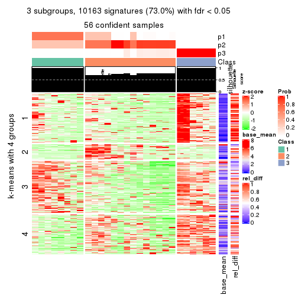
get_signatures(res, k = 4)
get_signatures(res, k = 5)
get_signatures(res, k = 6)
Signature heatmaps where rows are not scaled:
get_signatures(res, k = 2, scale_rows = FALSE)
get_signatures(res, k = 3, scale_rows = FALSE)
get_signatures(res, k = 4, scale_rows = FALSE)
get_signatures(res, k = 5, scale_rows = FALSE)
get_signatures(res, k = 6, scale_rows = FALSE)
Compare the overlap of signatures from different k:
compare_signatures(res)
get_signature() returns a data frame invisibly. TO get the list of signatures, the function
call should be assigned to a variable explicitly. In following code, if plot argument is set
to FALSE, no heatmap is plotted while only the differential analysis is performed.
# code only for demonstration
tb = get_signature(res, k = ..., plot = FALSE)
An example of the output of tb is:
#> which_row fdr mean_1 mean_2 scaled_mean_1 scaled_mean_2 km
#> 1 38 0.042760348 8.373488 9.131774 -0.5533452 0.5164555 1
#> 2 40 0.018707592 7.106213 8.469186 -0.6173731 0.5762149 1
#> 3 55 0.019134737 10.221463 11.207825 -0.6159697 0.5749050 1
#> 4 59 0.006059896 5.921854 7.869574 -0.6899429 0.6439467 1
#> 5 60 0.018055526 8.928898 10.211722 -0.6204761 0.5791110 1
#> 6 98 0.009384629 15.714769 14.887706 0.6635654 -0.6193277 2
...
The columns in tb are:
which_row: row indices corresponding to the input matrix.fdr: FDR for the differential test. mean_x: The mean value in group x.scaled_mean_x: The mean value in group x after rows are scaled.km: Row groups if k-means clustering is applied to rows.UMAP plot which shows how samples are separated.
dimension_reduction(res, k = 2, method = "UMAP")
dimension_reduction(res, k = 3, method = "UMAP")
dimension_reduction(res, k = 4, method = "UMAP")
dimension_reduction(res, k = 5, method = "UMAP")
dimension_reduction(res, k = 6, method = "UMAP")
Following heatmap shows how subgroups are split when increasing k:
collect_classes(res)
If matrix rows can be associated to genes, consider to use functional_enrichment(res,
...) to perform function enrichment for the signature genes. See this vignette for more detailed explanations.
The object with results only for a single top-value method and a single partition method can be extracted as:
res = res_list["MAD", "NMF"]
# you can also extract it by
# res = res_list["MAD:NMF"]
A summary of res and all the functions that can be applied to it:
res
#> A 'ConsensusPartition' object with k = 2, 3, 4, 5, 6.
#> On a matrix with 13917 rows and 56 columns.
#> Top rows (1000, 2000, 3000, 4000, 5000) are extracted by 'MAD' method.
#> Subgroups are detected by 'NMF' method.
#> Performed in total 1250 partitions by row resampling.
#> Best k for subgroups seems to be 2.
#>
#> Following methods can be applied to this 'ConsensusPartition' object:
#> [1] "cola_report" "collect_classes" "collect_plots"
#> [4] "collect_stats" "colnames" "compare_signatures"
#> [7] "consensus_heatmap" "dimension_reduction" "functional_enrichment"
#> [10] "get_anno_col" "get_anno" "get_classes"
#> [13] "get_consensus" "get_matrix" "get_membership"
#> [16] "get_param" "get_signatures" "get_stats"
#> [19] "is_best_k" "is_stable_k" "membership_heatmap"
#> [22] "ncol" "nrow" "plot_ecdf"
#> [25] "rownames" "select_partition_number" "show"
#> [28] "suggest_best_k" "test_to_known_factors"
collect_plots() function collects all the plots made from res for all k (number of partitions)
into one single page to provide an easy and fast comparison between different k.
collect_plots(res)
The plots are:
k and the heatmap of
predicted classes for each k.k.k.k.All the plots in panels can be made by individual functions and they are plotted later in this section.
select_partition_number() produces several plots showing different
statistics for choosing “optimized” k. There are following statistics:
k;k, the area increased is defined as \(A_k - A_{k-1}\).The detailed explanations of these statistics can be found in the cola vignette.
Generally speaking, lower PAC score, higher mean silhouette score or higher
concordance corresponds to better partition. Rand index and Jaccard index
measure how similar the current partition is compared to partition with k-1.
If they are too similar, we won't accept k is better than k-1.
select_partition_number(res)
The numeric values for all these statistics can be obtained by get_stats().
get_stats(res)
#> k 1-PAC mean_silhouette concordance area_increased Rand Jaccard
#> 2 2 0.890 0.913 0.966 0.5070 0.492 0.492
#> 3 3 0.648 0.658 0.838 0.3005 0.751 0.543
#> 4 4 0.679 0.760 0.847 0.1178 0.756 0.416
#> 5 5 0.645 0.659 0.801 0.0579 0.868 0.549
#> 6 6 0.655 0.623 0.760 0.0364 0.940 0.739
suggest_best_k() suggests the best \(k\) based on these statistics. The rules are as follows:
suggest_best_k(res)
#> [1] 2
Following shows the table of the partitions (You need to click the show/hide
code output link to see it). The membership matrix (columns with name p*)
is inferred by
clue::cl_consensus()
function with the SE method. Basically the value in the membership matrix
represents the probability to belong to a certain group. The finall class
label for an item is determined with the group with highest probability it
belongs to.
In get_classes() function, the entropy is calculated from the membership
matrix and the silhouette score is calculated from the consensus matrix.
cbind(get_classes(res, k = 2), get_membership(res, k = 2))
#> class entropy silhouette p1 p2
#> SRR1975508 2 0.000 0.9755 0.000 1.000
#> SRR1975507 2 0.000 0.9755 0.000 1.000
#> SRR1975506 2 0.000 0.9755 0.000 1.000
#> SRR1975505 2 0.000 0.9755 0.000 1.000
#> SRR1975503 1 0.000 0.9526 1.000 0.000
#> SRR1975504 1 0.000 0.9526 1.000 0.000
#> SRR1975501 2 0.000 0.9755 0.000 1.000
#> SRR1975502 2 0.000 0.9755 0.000 1.000
#> SRR1975499 1 0.000 0.9526 1.000 0.000
#> SRR1975500 1 0.000 0.9526 1.000 0.000
#> SRR1975497 2 0.000 0.9755 0.000 1.000
#> SRR1975498 2 0.000 0.9755 0.000 1.000
#> SRR1975493 1 0.000 0.9526 1.000 0.000
#> SRR1975494 1 0.000 0.9526 1.000 0.000
#> SRR1975495 2 0.000 0.9755 0.000 1.000
#> SRR1975496 2 0.000 0.9755 0.000 1.000
#> SRR1975491 1 0.482 0.8654 0.896 0.104
#> SRR1975492 1 0.574 0.8326 0.864 0.136
#> SRR1975489 1 0.000 0.9526 1.000 0.000
#> SRR1975490 1 0.000 0.9526 1.000 0.000
#> SRR1975487 1 0.000 0.9526 1.000 0.000
#> SRR1975488 1 0.000 0.9526 1.000 0.000
#> SRR1975485 1 0.000 0.9526 1.000 0.000
#> SRR1975486 1 0.000 0.9526 1.000 0.000
#> SRR1975483 2 0.000 0.9755 0.000 1.000
#> SRR1975484 2 0.000 0.9755 0.000 1.000
#> SRR1975481 2 0.000 0.9755 0.000 1.000
#> SRR1975482 2 0.000 0.9755 0.000 1.000
#> SRR1975477 1 0.850 0.6364 0.724 0.276
#> SRR1975478 1 0.861 0.6225 0.716 0.284
#> SRR1975479 1 0.000 0.9526 1.000 0.000
#> SRR1975480 1 0.000 0.9526 1.000 0.000
#> SRR1975475 1 0.000 0.9526 1.000 0.000
#> SRR1975476 1 0.000 0.9526 1.000 0.000
#> SRR1975473 1 0.000 0.9526 1.000 0.000
#> SRR1975474 1 0.000 0.9526 1.000 0.000
#> SRR1975471 2 0.000 0.9755 0.000 1.000
#> SRR1975472 2 0.000 0.9755 0.000 1.000
#> SRR1975469 2 0.000 0.9755 0.000 1.000
#> SRR1975470 2 0.000 0.9755 0.000 1.000
#> SRR1975467 1 0.000 0.9526 1.000 0.000
#> SRR1975468 1 0.000 0.9526 1.000 0.000
#> SRR1975465 1 0.000 0.9526 1.000 0.000
#> SRR1975466 1 0.000 0.9526 1.000 0.000
#> SRR1975463 1 0.000 0.9526 1.000 0.000
#> SRR1975464 1 0.000 0.9526 1.000 0.000
#> SRR1975461 2 0.000 0.9755 0.000 1.000
#> SRR1975462 2 0.000 0.9755 0.000 1.000
#> SRR1975459 1 0.999 0.0907 0.520 0.480
#> SRR1975460 2 1.000 -0.0660 0.496 0.504
#> SRR1975457 2 0.141 0.9603 0.020 0.980
#> SRR1975458 2 0.141 0.9603 0.020 0.980
#> SRR1975455 2 0.204 0.9492 0.032 0.968
#> SRR1975456 2 0.184 0.9531 0.028 0.972
#> SRR1975453 2 0.000 0.9755 0.000 1.000
#> SRR1975454 2 0.000 0.9755 0.000 1.000
cbind(get_classes(res, k = 3), get_membership(res, k = 3))
#> class entropy silhouette p1 p2 p3
#> SRR1975508 3 0.571 0.671 0.320 0.000 0.680
#> SRR1975507 3 0.583 0.658 0.340 0.000 0.660
#> SRR1975506 3 0.593 0.647 0.356 0.000 0.644
#> SRR1975505 3 0.606 0.623 0.384 0.000 0.616
#> SRR1975503 1 0.617 0.354 0.588 0.412 0.000
#> SRR1975504 1 0.617 0.354 0.588 0.412 0.000
#> SRR1975501 2 0.610 0.339 0.000 0.608 0.392
#> SRR1975502 2 0.610 0.339 0.000 0.608 0.392
#> SRR1975499 1 0.617 0.354 0.588 0.412 0.000
#> SRR1975500 1 0.617 0.354 0.588 0.412 0.000
#> SRR1975497 3 0.304 0.735 0.000 0.104 0.896
#> SRR1975498 3 0.304 0.735 0.000 0.104 0.896
#> SRR1975493 2 0.254 0.761 0.080 0.920 0.000
#> SRR1975494 2 0.254 0.761 0.080 0.920 0.000
#> SRR1975495 3 0.236 0.763 0.000 0.072 0.928
#> SRR1975496 3 0.245 0.760 0.000 0.076 0.924
#> SRR1975491 2 0.000 0.769 0.000 1.000 0.000
#> SRR1975492 2 0.000 0.769 0.000 1.000 0.000
#> SRR1975489 1 0.000 0.752 1.000 0.000 0.000
#> SRR1975490 1 0.000 0.752 1.000 0.000 0.000
#> SRR1975487 1 0.610 0.385 0.608 0.392 0.000
#> SRR1975488 1 0.603 0.409 0.624 0.376 0.000
#> SRR1975485 1 0.000 0.752 1.000 0.000 0.000
#> SRR1975486 1 0.000 0.752 1.000 0.000 0.000
#> SRR1975483 3 0.000 0.805 0.000 0.000 1.000
#> SRR1975484 3 0.000 0.805 0.000 0.000 1.000
#> SRR1975481 3 0.000 0.805 0.000 0.000 1.000
#> SRR1975482 3 0.000 0.805 0.000 0.000 1.000
#> SRR1975477 3 0.630 0.480 0.476 0.000 0.524
#> SRR1975478 3 0.630 0.480 0.476 0.000 0.524
#> SRR1975479 1 0.000 0.752 1.000 0.000 0.000
#> SRR1975480 1 0.000 0.752 1.000 0.000 0.000
#> SRR1975475 1 0.000 0.752 1.000 0.000 0.000
#> SRR1975476 1 0.000 0.752 1.000 0.000 0.000
#> SRR1975473 1 0.263 0.678 0.916 0.000 0.084
#> SRR1975474 1 0.263 0.678 0.916 0.000 0.084
#> SRR1975471 3 0.000 0.805 0.000 0.000 1.000
#> SRR1975472 3 0.000 0.805 0.000 0.000 1.000
#> SRR1975469 3 0.000 0.805 0.000 0.000 1.000
#> SRR1975470 3 0.000 0.805 0.000 0.000 1.000
#> SRR1975467 2 0.615 0.178 0.408 0.592 0.000
#> SRR1975468 2 0.615 0.178 0.408 0.592 0.000
#> SRR1975465 2 0.175 0.772 0.048 0.952 0.000
#> SRR1975466 2 0.175 0.772 0.048 0.952 0.000
#> SRR1975463 2 0.388 0.704 0.152 0.848 0.000
#> SRR1975464 2 0.388 0.704 0.152 0.848 0.000
#> SRR1975461 3 0.000 0.805 0.000 0.000 1.000
#> SRR1975462 3 0.000 0.805 0.000 0.000 1.000
#> SRR1975459 2 0.000 0.769 0.000 1.000 0.000
#> SRR1975460 2 0.000 0.769 0.000 1.000 0.000
#> SRR1975457 3 0.604 0.627 0.380 0.000 0.620
#> SRR1975458 3 0.604 0.627 0.380 0.000 0.620
#> SRR1975455 3 0.610 0.614 0.392 0.000 0.608
#> SRR1975456 3 0.610 0.614 0.392 0.000 0.608
#> SRR1975453 3 0.000 0.805 0.000 0.000 1.000
#> SRR1975454 3 0.000 0.805 0.000 0.000 1.000
cbind(get_classes(res, k = 4), get_membership(res, k = 4))
#> class entropy silhouette p1 p2 p3 p4
#> SRR1975508 3 0.1042 0.929 0.000 0.020 0.972 0.008
#> SRR1975507 3 0.0895 0.929 0.000 0.020 0.976 0.004
#> SRR1975506 3 0.0895 0.929 0.000 0.020 0.976 0.004
#> SRR1975505 3 0.1042 0.929 0.000 0.020 0.972 0.008
#> SRR1975503 2 0.2611 0.882 0.008 0.896 0.000 0.096
#> SRR1975504 2 0.2611 0.882 0.008 0.896 0.000 0.096
#> SRR1975501 1 0.2530 0.562 0.896 0.100 0.004 0.000
#> SRR1975502 1 0.2530 0.562 0.896 0.100 0.004 0.000
#> SRR1975499 2 0.2799 0.877 0.008 0.884 0.000 0.108
#> SRR1975500 2 0.2799 0.877 0.008 0.884 0.000 0.108
#> SRR1975497 1 0.2760 0.654 0.872 0.000 0.128 0.000
#> SRR1975498 1 0.2760 0.654 0.872 0.000 0.128 0.000
#> SRR1975493 2 0.2214 0.892 0.044 0.928 0.000 0.028
#> SRR1975494 2 0.2214 0.892 0.044 0.928 0.000 0.028
#> SRR1975495 1 0.4399 0.668 0.760 0.016 0.224 0.000
#> SRR1975496 1 0.4399 0.668 0.760 0.016 0.224 0.000
#> SRR1975491 1 0.4972 -0.158 0.544 0.456 0.000 0.000
#> SRR1975492 1 0.4972 -0.158 0.544 0.456 0.000 0.000
#> SRR1975489 4 0.0859 0.910 0.008 0.008 0.004 0.980
#> SRR1975490 4 0.0992 0.909 0.012 0.008 0.004 0.976
#> SRR1975487 2 0.3933 0.793 0.008 0.792 0.000 0.200
#> SRR1975488 2 0.4360 0.729 0.008 0.744 0.000 0.248
#> SRR1975485 4 0.1114 0.909 0.004 0.008 0.016 0.972
#> SRR1975486 4 0.1114 0.909 0.004 0.008 0.016 0.972
#> SRR1975483 1 0.4876 0.644 0.672 0.004 0.320 0.004
#> SRR1975484 1 0.4876 0.644 0.672 0.004 0.320 0.004
#> SRR1975481 1 0.4991 0.645 0.672 0.004 0.316 0.008
#> SRR1975482 1 0.4991 0.645 0.672 0.004 0.316 0.008
#> SRR1975477 3 0.4033 0.778 0.008 0.020 0.824 0.148
#> SRR1975478 3 0.4033 0.778 0.008 0.020 0.824 0.148
#> SRR1975479 4 0.0992 0.910 0.012 0.008 0.004 0.976
#> SRR1975480 4 0.0992 0.910 0.012 0.008 0.004 0.976
#> SRR1975475 4 0.5133 0.655 0.004 0.268 0.024 0.704
#> SRR1975476 4 0.5076 0.669 0.004 0.260 0.024 0.712
#> SRR1975473 4 0.2179 0.877 0.000 0.012 0.064 0.924
#> SRR1975474 4 0.2179 0.877 0.000 0.012 0.064 0.924
#> SRR1975471 1 0.5335 0.432 0.504 0.004 0.488 0.004
#> SRR1975472 1 0.5335 0.432 0.504 0.004 0.488 0.004
#> SRR1975469 1 0.5461 0.427 0.508 0.004 0.480 0.008
#> SRR1975470 1 0.5463 0.412 0.500 0.004 0.488 0.008
#> SRR1975467 2 0.1396 0.899 0.004 0.960 0.004 0.032
#> SRR1975468 2 0.1396 0.899 0.004 0.960 0.004 0.032
#> SRR1975465 2 0.1388 0.891 0.012 0.960 0.028 0.000
#> SRR1975466 2 0.1510 0.890 0.016 0.956 0.028 0.000
#> SRR1975463 2 0.1443 0.895 0.004 0.960 0.028 0.008
#> SRR1975464 2 0.1443 0.895 0.004 0.960 0.028 0.008
#> SRR1975461 3 0.1297 0.915 0.020 0.016 0.964 0.000
#> SRR1975462 3 0.1297 0.915 0.020 0.016 0.964 0.000
#> SRR1975459 2 0.4467 0.782 0.172 0.788 0.040 0.000
#> SRR1975460 2 0.4467 0.782 0.172 0.788 0.040 0.000
#> SRR1975457 3 0.1174 0.927 0.000 0.020 0.968 0.012
#> SRR1975458 3 0.1174 0.927 0.000 0.020 0.968 0.012
#> SRR1975455 3 0.0895 0.925 0.000 0.004 0.976 0.020
#> SRR1975456 3 0.0895 0.925 0.000 0.004 0.976 0.020
#> SRR1975453 3 0.2125 0.851 0.076 0.000 0.920 0.004
#> SRR1975454 3 0.2125 0.851 0.076 0.000 0.920 0.004
cbind(get_classes(res, k = 5), get_membership(res, k = 5))
#> class entropy silhouette p1 p2 p3 p4 p5
#> SRR1975508 3 0.2179 0.741 0.000 0.072 0.912 0.008 0.008
#> SRR1975507 3 0.1770 0.748 0.000 0.048 0.936 0.008 0.008
#> SRR1975506 3 0.1770 0.748 0.000 0.048 0.936 0.008 0.008
#> SRR1975505 3 0.2115 0.743 0.000 0.068 0.916 0.008 0.008
#> SRR1975503 5 0.4249 0.651 0.000 0.432 0.000 0.000 0.568
#> SRR1975504 5 0.4249 0.651 0.000 0.432 0.000 0.000 0.568
#> SRR1975501 1 0.4792 0.375 0.712 0.228 0.008 0.000 0.052
#> SRR1975502 1 0.4792 0.375 0.712 0.228 0.008 0.000 0.052
#> SRR1975499 5 0.4025 0.781 0.000 0.292 0.000 0.008 0.700
#> SRR1975500 5 0.3928 0.780 0.000 0.296 0.000 0.004 0.700
#> SRR1975497 1 0.2629 0.760 0.860 0.000 0.136 0.000 0.004
#> SRR1975498 1 0.2583 0.758 0.864 0.000 0.132 0.000 0.004
#> SRR1975493 2 0.1018 0.804 0.016 0.968 0.000 0.000 0.016
#> SRR1975494 2 0.1018 0.804 0.016 0.968 0.000 0.000 0.016
#> SRR1975495 1 0.2930 0.763 0.832 0.004 0.164 0.000 0.000
#> SRR1975496 1 0.2930 0.763 0.832 0.004 0.164 0.000 0.000
#> SRR1975491 2 0.4687 0.482 0.336 0.636 0.000 0.000 0.028
#> SRR1975492 2 0.4687 0.482 0.336 0.636 0.000 0.000 0.028
#> SRR1975489 4 0.2536 0.757 0.000 0.004 0.000 0.868 0.128
#> SRR1975490 4 0.2536 0.757 0.000 0.004 0.000 0.868 0.128
#> SRR1975487 5 0.3165 0.704 0.000 0.116 0.000 0.036 0.848
#> SRR1975488 5 0.3255 0.683 0.000 0.100 0.000 0.052 0.848
#> SRR1975485 4 0.2966 0.759 0.000 0.000 0.000 0.816 0.184
#> SRR1975486 4 0.2966 0.759 0.000 0.000 0.000 0.816 0.184
#> SRR1975483 1 0.4546 0.681 0.668 0.000 0.304 0.000 0.028
#> SRR1975484 1 0.4546 0.681 0.668 0.000 0.304 0.000 0.028
#> SRR1975481 1 0.5225 0.690 0.652 0.000 0.288 0.016 0.044
#> SRR1975482 1 0.5225 0.690 0.652 0.000 0.288 0.016 0.044
#> SRR1975477 3 0.6863 0.121 0.008 0.156 0.468 0.356 0.012
#> SRR1975478 3 0.6863 0.121 0.008 0.156 0.468 0.356 0.012
#> SRR1975479 4 0.0579 0.794 0.000 0.000 0.008 0.984 0.008
#> SRR1975480 4 0.0579 0.794 0.000 0.000 0.008 0.984 0.008
#> SRR1975475 4 0.7469 0.390 0.008 0.244 0.036 0.468 0.244
#> SRR1975476 4 0.7452 0.397 0.008 0.240 0.036 0.472 0.244
#> SRR1975473 4 0.2833 0.771 0.000 0.020 0.068 0.888 0.024
#> SRR1975474 4 0.2833 0.771 0.000 0.020 0.068 0.888 0.024
#> SRR1975471 3 0.4687 0.282 0.336 0.000 0.636 0.000 0.028
#> SRR1975472 3 0.4687 0.282 0.336 0.000 0.636 0.000 0.028
#> SRR1975469 3 0.5162 0.374 0.276 0.000 0.664 0.016 0.044
#> SRR1975470 3 0.5162 0.374 0.276 0.000 0.664 0.016 0.044
#> SRR1975467 2 0.2694 0.746 0.008 0.892 0.032 0.000 0.068
#> SRR1975468 2 0.2694 0.746 0.008 0.892 0.032 0.000 0.068
#> SRR1975465 2 0.1251 0.815 0.000 0.956 0.036 0.000 0.008
#> SRR1975466 2 0.1251 0.815 0.000 0.956 0.036 0.000 0.008
#> SRR1975463 2 0.1202 0.813 0.004 0.960 0.032 0.000 0.004
#> SRR1975464 2 0.1202 0.813 0.004 0.960 0.032 0.000 0.004
#> SRR1975461 3 0.1764 0.733 0.036 0.012 0.940 0.000 0.012
#> SRR1975462 3 0.1764 0.733 0.036 0.012 0.940 0.000 0.012
#> SRR1975459 2 0.3691 0.762 0.072 0.844 0.028 0.000 0.056
#> SRR1975460 2 0.3691 0.762 0.072 0.844 0.028 0.000 0.056
#> SRR1975457 3 0.3169 0.695 0.000 0.140 0.840 0.016 0.004
#> SRR1975458 3 0.3169 0.695 0.000 0.140 0.840 0.016 0.004
#> SRR1975455 3 0.1560 0.748 0.000 0.028 0.948 0.020 0.004
#> SRR1975456 3 0.1560 0.748 0.000 0.028 0.948 0.020 0.004
#> SRR1975453 3 0.1774 0.714 0.052 0.000 0.932 0.000 0.016
#> SRR1975454 3 0.1774 0.714 0.052 0.000 0.932 0.000 0.016
cbind(get_classes(res, k = 6), get_membership(res, k = 6))
#> class entropy silhouette p1 p2 p3 p4 p5 p6
#> SRR1975508 3 0.159 0.802 0.000 0.052 0.932 0.000 0.016 0.000
#> SRR1975507 3 0.139 0.806 0.000 0.040 0.944 0.000 0.016 0.000
#> SRR1975506 3 0.139 0.806 0.000 0.040 0.944 0.000 0.016 0.000
#> SRR1975505 3 0.155 0.805 0.000 0.044 0.936 0.000 0.020 0.000
#> SRR1975503 4 0.478 0.714 0.000 0.276 0.000 0.644 0.076 0.004
#> SRR1975504 4 0.480 0.708 0.000 0.280 0.000 0.640 0.076 0.004
#> SRR1975501 2 0.536 0.256 0.460 0.464 0.008 0.008 0.060 0.000
#> SRR1975502 2 0.536 0.256 0.460 0.464 0.008 0.008 0.060 0.000
#> SRR1975499 4 0.354 0.794 0.000 0.160 0.000 0.788 0.052 0.000
#> SRR1975500 4 0.354 0.794 0.000 0.160 0.000 0.788 0.052 0.000
#> SRR1975497 1 0.158 0.650 0.936 0.000 0.048 0.000 0.012 0.004
#> SRR1975498 1 0.143 0.650 0.940 0.000 0.048 0.000 0.012 0.000
#> SRR1975493 2 0.214 0.730 0.004 0.908 0.000 0.036 0.052 0.000
#> SRR1975494 2 0.214 0.730 0.004 0.908 0.000 0.036 0.052 0.000
#> SRR1975495 1 0.231 0.676 0.884 0.000 0.100 0.004 0.012 0.000
#> SRR1975496 1 0.231 0.676 0.884 0.000 0.100 0.004 0.012 0.000
#> SRR1975491 2 0.376 0.679 0.104 0.808 0.000 0.024 0.064 0.000
#> SRR1975492 2 0.376 0.679 0.104 0.808 0.000 0.024 0.064 0.000
#> SRR1975489 6 0.161 0.581 0.000 0.000 0.000 0.084 0.000 0.916
#> SRR1975490 6 0.161 0.581 0.000 0.000 0.000 0.084 0.000 0.916
#> SRR1975487 4 0.193 0.678 0.000 0.016 0.000 0.924 0.020 0.040
#> SRR1975488 4 0.191 0.673 0.000 0.012 0.000 0.924 0.020 0.044
#> SRR1975485 6 0.569 0.332 0.000 0.000 0.000 0.216 0.260 0.524
#> SRR1975486 6 0.569 0.332 0.000 0.000 0.000 0.216 0.260 0.524
#> SRR1975483 1 0.566 0.521 0.516 0.000 0.368 0.012 0.100 0.004
#> SRR1975484 1 0.566 0.521 0.516 0.000 0.368 0.012 0.100 0.004
#> SRR1975481 1 0.683 0.517 0.432 0.000 0.296 0.012 0.228 0.032
#> SRR1975482 1 0.682 0.516 0.432 0.000 0.300 0.012 0.224 0.032
#> SRR1975477 5 0.664 0.610 0.000 0.080 0.252 0.004 0.520 0.144
#> SRR1975478 5 0.664 0.610 0.000 0.080 0.252 0.004 0.520 0.144
#> SRR1975479 6 0.274 0.569 0.000 0.000 0.004 0.000 0.176 0.820
#> SRR1975480 6 0.274 0.569 0.000 0.000 0.004 0.000 0.176 0.820
#> SRR1975475 5 0.535 0.540 0.000 0.092 0.008 0.040 0.680 0.180
#> SRR1975476 5 0.535 0.540 0.000 0.092 0.008 0.040 0.680 0.180
#> SRR1975473 6 0.478 0.328 0.004 0.016 0.016 0.004 0.372 0.588
#> SRR1975474 6 0.479 0.328 0.004 0.016 0.016 0.004 0.376 0.584
#> SRR1975471 3 0.492 0.495 0.184 0.000 0.692 0.012 0.108 0.004
#> SRR1975472 3 0.492 0.495 0.184 0.000 0.692 0.012 0.108 0.004
#> SRR1975469 3 0.609 0.394 0.108 0.000 0.600 0.012 0.228 0.052
#> SRR1975470 3 0.609 0.394 0.108 0.000 0.600 0.012 0.228 0.052
#> SRR1975467 2 0.466 0.487 0.000 0.660 0.016 0.044 0.280 0.000
#> SRR1975468 2 0.464 0.493 0.000 0.664 0.016 0.044 0.276 0.000
#> SRR1975465 2 0.220 0.738 0.000 0.900 0.048 0.000 0.052 0.000
#> SRR1975466 2 0.220 0.738 0.000 0.900 0.048 0.000 0.052 0.000
#> SRR1975463 2 0.268 0.723 0.000 0.876 0.020 0.020 0.084 0.000
#> SRR1975464 2 0.268 0.723 0.000 0.876 0.020 0.020 0.084 0.000
#> SRR1975461 3 0.126 0.800 0.016 0.020 0.956 0.000 0.008 0.000
#> SRR1975462 3 0.126 0.800 0.016 0.020 0.956 0.000 0.008 0.000
#> SRR1975459 2 0.280 0.719 0.024 0.876 0.064 0.000 0.036 0.000
#> SRR1975460 2 0.288 0.718 0.028 0.872 0.064 0.000 0.036 0.000
#> SRR1975457 3 0.316 0.738 0.000 0.080 0.844 0.000 0.068 0.008
#> SRR1975458 3 0.316 0.738 0.000 0.080 0.844 0.000 0.068 0.008
#> SRR1975455 3 0.236 0.791 0.000 0.028 0.900 0.000 0.056 0.016
#> SRR1975456 3 0.236 0.791 0.000 0.028 0.900 0.000 0.056 0.016
#> SRR1975453 3 0.156 0.784 0.032 0.004 0.940 0.000 0.024 0.000
#> SRR1975454 3 0.156 0.784 0.032 0.004 0.940 0.000 0.024 0.000
Heatmaps for the consensus matrix. It visualizes the probability of two samples to be in a same group.
consensus_heatmap(res, k = 2)
consensus_heatmap(res, k = 3)
consensus_heatmap(res, k = 4)
consensus_heatmap(res, k = 5)
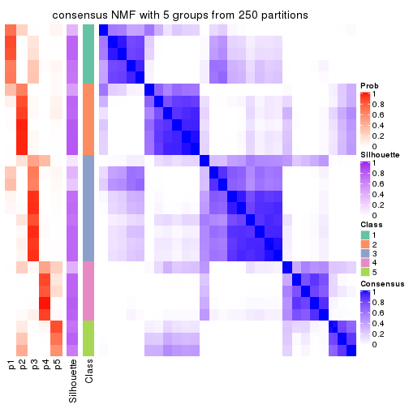
consensus_heatmap(res, k = 6)
Heatmaps for the membership of samples in all partitions to see how consistent they are:
membership_heatmap(res, k = 2)
membership_heatmap(res, k = 3)
membership_heatmap(res, k = 4)
membership_heatmap(res, k = 5)
membership_heatmap(res, k = 6)
As soon as we have had the classes for columns, we can look for signatures which are significantly different between classes which can be candidate marks for certain classes. Following are the heatmaps for signatures.
Signature heatmaps where rows are scaled:
get_signatures(res, k = 2)
get_signatures(res, k = 3)
get_signatures(res, k = 4)
get_signatures(res, k = 5)
get_signatures(res, k = 6)
Signature heatmaps where rows are not scaled:
get_signatures(res, k = 2, scale_rows = FALSE)
get_signatures(res, k = 3, scale_rows = FALSE)
get_signatures(res, k = 4, scale_rows = FALSE)
get_signatures(res, k = 5, scale_rows = FALSE)
get_signatures(res, k = 6, scale_rows = FALSE)
Compare the overlap of signatures from different k:
compare_signatures(res)
get_signature() returns a data frame invisibly. TO get the list of signatures, the function
call should be assigned to a variable explicitly. In following code, if plot argument is set
to FALSE, no heatmap is plotted while only the differential analysis is performed.
# code only for demonstration
tb = get_signature(res, k = ..., plot = FALSE)
An example of the output of tb is:
#> which_row fdr mean_1 mean_2 scaled_mean_1 scaled_mean_2 km
#> 1 38 0.042760348 8.373488 9.131774 -0.5533452 0.5164555 1
#> 2 40 0.018707592 7.106213 8.469186 -0.6173731 0.5762149 1
#> 3 55 0.019134737 10.221463 11.207825 -0.6159697 0.5749050 1
#> 4 59 0.006059896 5.921854 7.869574 -0.6899429 0.6439467 1
#> 5 60 0.018055526 8.928898 10.211722 -0.6204761 0.5791110 1
#> 6 98 0.009384629 15.714769 14.887706 0.6635654 -0.6193277 2
...
The columns in tb are:
which_row: row indices corresponding to the input matrix.fdr: FDR for the differential test. mean_x: The mean value in group x.scaled_mean_x: The mean value in group x after rows are scaled.km: Row groups if k-means clustering is applied to rows.UMAP plot which shows how samples are separated.
dimension_reduction(res, k = 2, method = "UMAP")
dimension_reduction(res, k = 3, method = "UMAP")
dimension_reduction(res, k = 4, method = "UMAP")
dimension_reduction(res, k = 5, method = "UMAP")
dimension_reduction(res, k = 6, method = "UMAP")
Following heatmap shows how subgroups are split when increasing k:
collect_classes(res)
If matrix rows can be associated to genes, consider to use functional_enrichment(res,
...) to perform function enrichment for the signature genes. See this vignette for more detailed explanations.
The object with results only for a single top-value method and a single partition method can be extracted as:
res = res_list["ATC", "hclust"]
# you can also extract it by
# res = res_list["ATC:hclust"]
A summary of res and all the functions that can be applied to it:
res
#> A 'ConsensusPartition' object with k = 2, 3, 4, 5, 6.
#> On a matrix with 13917 rows and 56 columns.
#> Top rows (1000, 2000, 3000, 4000, 5000) are extracted by 'ATC' method.
#> Subgroups are detected by 'hclust' method.
#> Performed in total 1250 partitions by row resampling.
#> Best k for subgroups seems to be 2.
#>
#> Following methods can be applied to this 'ConsensusPartition' object:
#> [1] "cola_report" "collect_classes" "collect_plots"
#> [4] "collect_stats" "colnames" "compare_signatures"
#> [7] "consensus_heatmap" "dimension_reduction" "functional_enrichment"
#> [10] "get_anno_col" "get_anno" "get_classes"
#> [13] "get_consensus" "get_matrix" "get_membership"
#> [16] "get_param" "get_signatures" "get_stats"
#> [19] "is_best_k" "is_stable_k" "membership_heatmap"
#> [22] "ncol" "nrow" "plot_ecdf"
#> [25] "rownames" "select_partition_number" "show"
#> [28] "suggest_best_k" "test_to_known_factors"
collect_plots() function collects all the plots made from res for all k (number of partitions)
into one single page to provide an easy and fast comparison between different k.
collect_plots(res)
The plots are:
k and the heatmap of
predicted classes for each k.k.k.k.All the plots in panels can be made by individual functions and they are plotted later in this section.
select_partition_number() produces several plots showing different
statistics for choosing “optimized” k. There are following statistics:
k;k, the area increased is defined as \(A_k - A_{k-1}\).The detailed explanations of these statistics can be found in the cola vignette.
Generally speaking, lower PAC score, higher mean silhouette score or higher
concordance corresponds to better partition. Rand index and Jaccard index
measure how similar the current partition is compared to partition with k-1.
If they are too similar, we won't accept k is better than k-1.
select_partition_number(res)
The numeric values for all these statistics can be obtained by get_stats().
get_stats(res)
#> k 1-PAC mean_silhouette concordance area_increased Rand Jaccard
#> 2 2 1.000 0.951 0.979 0.1692 0.805 0.805
#> 3 3 0.869 0.894 0.961 2.3815 0.579 0.494
#> 4 4 0.874 0.886 0.960 0.0488 0.953 0.893
#> 5 5 0.816 0.773 0.869 0.1266 0.899 0.748
#> 6 6 0.869 0.861 0.936 0.0412 0.979 0.934
suggest_best_k() suggests the best \(k\) based on these statistics. The rules are as follows:
suggest_best_k(res)
#> [1] 2
Following shows the table of the partitions (You need to click the show/hide
code output link to see it). The membership matrix (columns with name p*)
is inferred by
clue::cl_consensus()
function with the SE method. Basically the value in the membership matrix
represents the probability to belong to a certain group. The finall class
label for an item is determined with the group with highest probability it
belongs to.
In get_classes() function, the entropy is calculated from the membership
matrix and the silhouette score is calculated from the consensus matrix.
cbind(get_classes(res, k = 2), get_membership(res, k = 2))
#> class entropy silhouette p1 p2
#> SRR1975508 2 0.0000 0.796 0.000 1.000
#> SRR1975507 2 0.0000 0.796 0.000 1.000
#> SRR1975506 2 0.0000 0.796 0.000 1.000
#> SRR1975505 2 0.0000 0.796 0.000 1.000
#> SRR1975503 1 0.0000 0.995 1.000 0.000
#> SRR1975504 1 0.0000 0.995 1.000 0.000
#> SRR1975501 1 0.0000 0.995 1.000 0.000
#> SRR1975502 1 0.0000 0.995 1.000 0.000
#> SRR1975499 1 0.0000 0.995 1.000 0.000
#> SRR1975500 1 0.0000 0.995 1.000 0.000
#> SRR1975497 1 0.0000 0.995 1.000 0.000
#> SRR1975498 1 0.0000 0.995 1.000 0.000
#> SRR1975493 1 0.0000 0.995 1.000 0.000
#> SRR1975494 1 0.0000 0.995 1.000 0.000
#> SRR1975495 1 0.0000 0.995 1.000 0.000
#> SRR1975496 1 0.0000 0.995 1.000 0.000
#> SRR1975491 1 0.0000 0.995 1.000 0.000
#> SRR1975492 1 0.0000 0.995 1.000 0.000
#> SRR1975489 1 0.0000 0.995 1.000 0.000
#> SRR1975490 1 0.0000 0.995 1.000 0.000
#> SRR1975487 1 0.0000 0.995 1.000 0.000
#> SRR1975488 1 0.0000 0.995 1.000 0.000
#> SRR1975485 1 0.0000 0.995 1.000 0.000
#> SRR1975486 1 0.0000 0.995 1.000 0.000
#> SRR1975483 1 0.0000 0.995 1.000 0.000
#> SRR1975484 1 0.0000 0.995 1.000 0.000
#> SRR1975481 1 0.0000 0.995 1.000 0.000
#> SRR1975482 1 0.0000 0.995 1.000 0.000
#> SRR1975477 1 0.0938 0.990 0.988 0.012
#> SRR1975478 1 0.0938 0.990 0.988 0.012
#> SRR1975479 1 0.0000 0.995 1.000 0.000
#> SRR1975480 1 0.0000 0.995 1.000 0.000
#> SRR1975475 1 0.0000 0.995 1.000 0.000
#> SRR1975476 1 0.0000 0.995 1.000 0.000
#> SRR1975473 1 0.0938 0.990 0.988 0.012
#> SRR1975474 1 0.0938 0.990 0.988 0.012
#> SRR1975471 1 0.0000 0.995 1.000 0.000
#> SRR1975472 1 0.0000 0.995 1.000 0.000
#> SRR1975469 1 0.0000 0.995 1.000 0.000
#> SRR1975470 1 0.0000 0.995 1.000 0.000
#> SRR1975467 1 0.0000 0.995 1.000 0.000
#> SRR1975468 1 0.0000 0.995 1.000 0.000
#> SRR1975465 1 0.0938 0.990 0.988 0.012
#> SRR1975466 1 0.0938 0.990 0.988 0.012
#> SRR1975463 1 0.0938 0.990 0.988 0.012
#> SRR1975464 1 0.0938 0.990 0.988 0.012
#> SRR1975461 2 1.0000 0.199 0.496 0.504
#> SRR1975462 2 1.0000 0.199 0.496 0.504
#> SRR1975459 1 0.0938 0.990 0.988 0.012
#> SRR1975460 1 0.0938 0.990 0.988 0.012
#> SRR1975457 1 0.0938 0.990 0.988 0.012
#> SRR1975458 1 0.0938 0.990 0.988 0.012
#> SRR1975455 1 0.0938 0.990 0.988 0.012
#> SRR1975456 1 0.0938 0.990 0.988 0.012
#> SRR1975453 1 0.0938 0.990 0.988 0.012
#> SRR1975454 1 0.0938 0.990 0.988 0.012
cbind(get_classes(res, k = 3), get_membership(res, k = 3))
#> class entropy silhouette p1 p2 p3
#> SRR1975508 3 0.0000 1.0000 0.000 0.000 1.000
#> SRR1975507 3 0.0000 1.0000 0.000 0.000 1.000
#> SRR1975506 3 0.0000 1.0000 0.000 0.000 1.000
#> SRR1975505 3 0.0000 1.0000 0.000 0.000 1.000
#> SRR1975503 1 0.0000 0.9753 1.000 0.000 0.000
#> SRR1975504 1 0.0000 0.9753 1.000 0.000 0.000
#> SRR1975501 1 0.0000 0.9753 1.000 0.000 0.000
#> SRR1975502 1 0.0000 0.9753 1.000 0.000 0.000
#> SRR1975499 1 0.0000 0.9753 1.000 0.000 0.000
#> SRR1975500 1 0.0000 0.9753 1.000 0.000 0.000
#> SRR1975497 1 0.0000 0.9753 1.000 0.000 0.000
#> SRR1975498 1 0.0000 0.9753 1.000 0.000 0.000
#> SRR1975493 2 0.1753 0.8681 0.048 0.952 0.000
#> SRR1975494 2 0.1753 0.8681 0.048 0.952 0.000
#> SRR1975495 1 0.5431 0.5799 0.716 0.284 0.000
#> SRR1975496 1 0.5431 0.5799 0.716 0.284 0.000
#> SRR1975491 1 0.0000 0.9753 1.000 0.000 0.000
#> SRR1975492 1 0.0000 0.9753 1.000 0.000 0.000
#> SRR1975489 1 0.0000 0.9753 1.000 0.000 0.000
#> SRR1975490 1 0.0000 0.9753 1.000 0.000 0.000
#> SRR1975487 1 0.0000 0.9753 1.000 0.000 0.000
#> SRR1975488 1 0.0000 0.9753 1.000 0.000 0.000
#> SRR1975485 1 0.0000 0.9753 1.000 0.000 0.000
#> SRR1975486 1 0.0000 0.9753 1.000 0.000 0.000
#> SRR1975483 1 0.0000 0.9753 1.000 0.000 0.000
#> SRR1975484 1 0.0000 0.9753 1.000 0.000 0.000
#> SRR1975481 1 0.0000 0.9753 1.000 0.000 0.000
#> SRR1975482 1 0.0000 0.9753 1.000 0.000 0.000
#> SRR1975477 2 0.0000 0.9075 0.000 1.000 0.000
#> SRR1975478 2 0.0000 0.9075 0.000 1.000 0.000
#> SRR1975479 1 0.0000 0.9753 1.000 0.000 0.000
#> SRR1975480 1 0.0000 0.9753 1.000 0.000 0.000
#> SRR1975475 1 0.0000 0.9753 1.000 0.000 0.000
#> SRR1975476 1 0.0000 0.9753 1.000 0.000 0.000
#> SRR1975473 2 0.0000 0.9075 0.000 1.000 0.000
#> SRR1975474 2 0.0000 0.9075 0.000 1.000 0.000
#> SRR1975471 2 0.5138 0.5989 0.252 0.748 0.000
#> SRR1975472 2 0.5138 0.5989 0.252 0.748 0.000
#> SRR1975469 1 0.0000 0.9753 1.000 0.000 0.000
#> SRR1975470 1 0.0000 0.9753 1.000 0.000 0.000
#> SRR1975467 1 0.0237 0.9715 0.996 0.004 0.000
#> SRR1975468 1 0.0237 0.9715 0.996 0.004 0.000
#> SRR1975465 2 0.0000 0.9075 0.000 1.000 0.000
#> SRR1975466 2 0.0000 0.9075 0.000 1.000 0.000
#> SRR1975463 2 0.0424 0.9027 0.008 0.992 0.000
#> SRR1975464 2 0.0424 0.9027 0.008 0.992 0.000
#> SRR1975461 2 0.6308 0.0728 0.000 0.508 0.492
#> SRR1975462 2 0.6308 0.0728 0.000 0.508 0.492
#> SRR1975459 2 0.0000 0.9075 0.000 1.000 0.000
#> SRR1975460 2 0.0000 0.9075 0.000 1.000 0.000
#> SRR1975457 2 0.0000 0.9075 0.000 1.000 0.000
#> SRR1975458 2 0.0000 0.9075 0.000 1.000 0.000
#> SRR1975455 2 0.0000 0.9075 0.000 1.000 0.000
#> SRR1975456 2 0.0000 0.9075 0.000 1.000 0.000
#> SRR1975453 2 0.0000 0.9075 0.000 1.000 0.000
#> SRR1975454 2 0.0000 0.9075 0.000 1.000 0.000
cbind(get_classes(res, k = 4), get_membership(res, k = 4))
#> class entropy silhouette p1 p2 p3 p4
#> SRR1975508 3 0.0000 1.000 0.000 0.000 1.000 0.000
#> SRR1975507 3 0.0000 1.000 0.000 0.000 1.000 0.000
#> SRR1975506 3 0.0000 1.000 0.000 0.000 1.000 0.000
#> SRR1975505 3 0.0000 1.000 0.000 0.000 1.000 0.000
#> SRR1975503 4 0.0000 0.975 0.000 0.000 0.000 1.000
#> SRR1975504 4 0.0000 0.975 0.000 0.000 0.000 1.000
#> SRR1975501 4 0.0000 0.975 0.000 0.000 0.000 1.000
#> SRR1975502 4 0.0000 0.975 0.000 0.000 0.000 1.000
#> SRR1975499 4 0.0000 0.975 0.000 0.000 0.000 1.000
#> SRR1975500 4 0.0000 0.975 0.000 0.000 0.000 1.000
#> SRR1975497 4 0.0000 0.975 0.000 0.000 0.000 1.000
#> SRR1975498 4 0.0000 0.975 0.000 0.000 0.000 1.000
#> SRR1975493 2 0.1677 0.873 0.012 0.948 0.000 0.040
#> SRR1975494 2 0.1677 0.873 0.012 0.948 0.000 0.040
#> SRR1975495 4 0.4621 0.566 0.008 0.284 0.000 0.708
#> SRR1975496 4 0.4621 0.566 0.008 0.284 0.000 0.708
#> SRR1975491 4 0.0000 0.975 0.000 0.000 0.000 1.000
#> SRR1975492 4 0.0000 0.975 0.000 0.000 0.000 1.000
#> SRR1975489 4 0.0000 0.975 0.000 0.000 0.000 1.000
#> SRR1975490 4 0.0000 0.975 0.000 0.000 0.000 1.000
#> SRR1975487 4 0.0000 0.975 0.000 0.000 0.000 1.000
#> SRR1975488 4 0.0000 0.975 0.000 0.000 0.000 1.000
#> SRR1975485 4 0.0000 0.975 0.000 0.000 0.000 1.000
#> SRR1975486 4 0.0000 0.975 0.000 0.000 0.000 1.000
#> SRR1975483 4 0.0336 0.969 0.008 0.000 0.000 0.992
#> SRR1975484 4 0.0336 0.969 0.008 0.000 0.000 0.992
#> SRR1975481 4 0.0000 0.975 0.000 0.000 0.000 1.000
#> SRR1975482 4 0.0000 0.975 0.000 0.000 0.000 1.000
#> SRR1975477 2 0.0000 0.927 0.000 1.000 0.000 0.000
#> SRR1975478 2 0.0000 0.927 0.000 1.000 0.000 0.000
#> SRR1975479 4 0.0000 0.975 0.000 0.000 0.000 1.000
#> SRR1975480 4 0.0000 0.975 0.000 0.000 0.000 1.000
#> SRR1975475 4 0.0000 0.975 0.000 0.000 0.000 1.000
#> SRR1975476 4 0.0000 0.975 0.000 0.000 0.000 1.000
#> SRR1975473 2 0.0188 0.925 0.004 0.996 0.000 0.000
#> SRR1975474 2 0.0188 0.925 0.004 0.996 0.000 0.000
#> SRR1975471 2 0.4328 0.494 0.008 0.748 0.000 0.244
#> SRR1975472 2 0.4328 0.494 0.008 0.748 0.000 0.244
#> SRR1975469 4 0.0000 0.975 0.000 0.000 0.000 1.000
#> SRR1975470 4 0.0000 0.975 0.000 0.000 0.000 1.000
#> SRR1975467 4 0.0188 0.972 0.004 0.000 0.000 0.996
#> SRR1975468 4 0.0188 0.972 0.004 0.000 0.000 0.996
#> SRR1975465 2 0.0000 0.927 0.000 1.000 0.000 0.000
#> SRR1975466 2 0.0000 0.927 0.000 1.000 0.000 0.000
#> SRR1975463 2 0.0469 0.921 0.012 0.988 0.000 0.000
#> SRR1975464 2 0.0469 0.921 0.012 0.988 0.000 0.000
#> SRR1975461 1 0.0469 0.398 0.988 0.000 0.012 0.000
#> SRR1975462 1 0.0469 0.398 0.988 0.000 0.012 0.000
#> SRR1975459 2 0.0000 0.927 0.000 1.000 0.000 0.000
#> SRR1975460 2 0.0000 0.927 0.000 1.000 0.000 0.000
#> SRR1975457 2 0.0000 0.927 0.000 1.000 0.000 0.000
#> SRR1975458 2 0.0000 0.927 0.000 1.000 0.000 0.000
#> SRR1975455 2 0.0000 0.927 0.000 1.000 0.000 0.000
#> SRR1975456 2 0.0000 0.927 0.000 1.000 0.000 0.000
#> SRR1975453 1 0.4999 0.342 0.508 0.492 0.000 0.000
#> SRR1975454 1 0.4999 0.342 0.508 0.492 0.000 0.000
cbind(get_classes(res, k = 5), get_membership(res, k = 5))
#> class entropy silhouette p1 p2 p3 p4 p5
#> SRR1975508 3 0.0000 1.000 0.000 0.000 1 0.000 0.000
#> SRR1975507 3 0.0000 1.000 0.000 0.000 1 0.000 0.000
#> SRR1975506 3 0.0000 1.000 0.000 0.000 1 0.000 0.000
#> SRR1975505 3 0.0000 1.000 0.000 0.000 1 0.000 0.000
#> SRR1975503 4 0.0000 0.955 0.000 0.000 0 1.000 0.000
#> SRR1975504 4 0.0000 0.955 0.000 0.000 0 1.000 0.000
#> SRR1975501 4 0.1965 0.906 0.000 0.096 0 0.904 0.000
#> SRR1975502 4 0.1965 0.906 0.000 0.096 0 0.904 0.000
#> SRR1975499 4 0.0000 0.955 0.000 0.000 0 1.000 0.000
#> SRR1975500 4 0.0000 0.955 0.000 0.000 0 1.000 0.000
#> SRR1975497 4 0.0000 0.955 0.000 0.000 0 1.000 0.000
#> SRR1975498 4 0.0000 0.955 0.000 0.000 0 1.000 0.000
#> SRR1975493 2 0.3774 0.544 0.000 0.704 0 0.000 0.296
#> SRR1975494 2 0.3774 0.544 0.000 0.704 0 0.000 0.296
#> SRR1975495 2 0.4297 -0.226 0.000 0.528 0 0.472 0.000
#> SRR1975496 2 0.4297 -0.226 0.000 0.528 0 0.472 0.000
#> SRR1975491 4 0.0000 0.955 0.000 0.000 0 1.000 0.000
#> SRR1975492 4 0.0000 0.955 0.000 0.000 0 1.000 0.000
#> SRR1975489 4 0.0000 0.955 0.000 0.000 0 1.000 0.000
#> SRR1975490 4 0.0000 0.955 0.000 0.000 0 1.000 0.000
#> SRR1975487 4 0.0000 0.955 0.000 0.000 0 1.000 0.000
#> SRR1975488 4 0.0000 0.955 0.000 0.000 0 1.000 0.000
#> SRR1975485 4 0.0000 0.955 0.000 0.000 0 1.000 0.000
#> SRR1975486 4 0.0000 0.955 0.000 0.000 0 1.000 0.000
#> SRR1975483 4 0.3109 0.819 0.000 0.200 0 0.800 0.000
#> SRR1975484 4 0.3109 0.819 0.000 0.200 0 0.800 0.000
#> SRR1975481 4 0.2561 0.873 0.000 0.144 0 0.856 0.000
#> SRR1975482 4 0.2561 0.873 0.000 0.144 0 0.856 0.000
#> SRR1975477 5 0.0000 0.994 0.000 0.000 0 0.000 1.000
#> SRR1975478 5 0.0000 0.994 0.000 0.000 0 0.000 1.000
#> SRR1975479 4 0.0000 0.955 0.000 0.000 0 1.000 0.000
#> SRR1975480 4 0.0000 0.955 0.000 0.000 0 1.000 0.000
#> SRR1975475 4 0.0000 0.955 0.000 0.000 0 1.000 0.000
#> SRR1975476 4 0.0000 0.955 0.000 0.000 0 1.000 0.000
#> SRR1975473 5 0.0404 0.983 0.000 0.012 0 0.000 0.988
#> SRR1975474 5 0.0404 0.983 0.000 0.012 0 0.000 0.988
#> SRR1975471 2 0.4542 -0.198 0.000 0.536 0 0.008 0.456
#> SRR1975472 2 0.4542 -0.198 0.000 0.536 0 0.008 0.456
#> SRR1975469 4 0.2424 0.882 0.000 0.132 0 0.868 0.000
#> SRR1975470 4 0.2424 0.882 0.000 0.132 0 0.868 0.000
#> SRR1975467 4 0.0794 0.941 0.000 0.028 0 0.972 0.000
#> SRR1975468 4 0.0794 0.941 0.000 0.028 0 0.972 0.000
#> SRR1975465 2 0.4045 0.541 0.000 0.644 0 0.000 0.356
#> SRR1975466 2 0.4045 0.541 0.000 0.644 0 0.000 0.356
#> SRR1975463 2 0.3966 0.546 0.000 0.664 0 0.000 0.336
#> SRR1975464 2 0.3966 0.546 0.000 0.664 0 0.000 0.336
#> SRR1975461 1 0.0000 0.525 1.000 0.000 0 0.000 0.000
#> SRR1975462 1 0.0000 0.525 1.000 0.000 0 0.000 0.000
#> SRR1975459 2 0.4045 0.541 0.000 0.644 0 0.000 0.356
#> SRR1975460 2 0.4045 0.541 0.000 0.644 0 0.000 0.356
#> SRR1975457 5 0.0000 0.994 0.000 0.000 0 0.000 1.000
#> SRR1975458 5 0.0000 0.994 0.000 0.000 0 0.000 1.000
#> SRR1975455 5 0.0000 0.994 0.000 0.000 0 0.000 1.000
#> SRR1975456 5 0.0000 0.994 0.000 0.000 0 0.000 1.000
#> SRR1975453 1 0.4306 0.383 0.508 0.000 0 0.000 0.492
#> SRR1975454 1 0.4306 0.383 0.508 0.000 0 0.000 0.492
cbind(get_classes(res, k = 6), get_membership(res, k = 6))
#> class entropy silhouette p1 p2 p3 p4 p5 p6
#> SRR1975508 3 0.0000 1.0000 0.000 0.000 1 0.000 0.000 0.000
#> SRR1975507 3 0.0000 1.0000 0.000 0.000 1 0.000 0.000 0.000
#> SRR1975506 3 0.0000 1.0000 0.000 0.000 1 0.000 0.000 0.000
#> SRR1975505 3 0.0000 1.0000 0.000 0.000 1 0.000 0.000 0.000
#> SRR1975503 4 0.0000 0.9377 0.000 0.000 0 1.000 0.000 0.000
#> SRR1975504 4 0.0000 0.9377 0.000 0.000 0 1.000 0.000 0.000
#> SRR1975501 4 0.1765 0.8667 0.096 0.000 0 0.904 0.000 0.000
#> SRR1975502 4 0.1765 0.8667 0.096 0.000 0 0.904 0.000 0.000
#> SRR1975499 4 0.0000 0.9377 0.000 0.000 0 1.000 0.000 0.000
#> SRR1975500 4 0.0000 0.9377 0.000 0.000 0 1.000 0.000 0.000
#> SRR1975497 4 0.0000 0.9377 0.000 0.000 0 1.000 0.000 0.000
#> SRR1975498 4 0.0000 0.9377 0.000 0.000 0 1.000 0.000 0.000
#> SRR1975493 2 0.1501 0.9412 0.076 0.924 0 0.000 0.000 0.000
#> SRR1975494 2 0.1501 0.9412 0.076 0.924 0 0.000 0.000 0.000
#> SRR1975495 1 0.3854 0.2916 0.536 0.000 0 0.464 0.000 0.000
#> SRR1975496 1 0.3854 0.2916 0.536 0.000 0 0.464 0.000 0.000
#> SRR1975491 4 0.0000 0.9377 0.000 0.000 0 1.000 0.000 0.000
#> SRR1975492 4 0.0000 0.9377 0.000 0.000 0 1.000 0.000 0.000
#> SRR1975489 4 0.0000 0.9377 0.000 0.000 0 1.000 0.000 0.000
#> SRR1975490 4 0.0000 0.9377 0.000 0.000 0 1.000 0.000 0.000
#> SRR1975487 4 0.0000 0.9377 0.000 0.000 0 1.000 0.000 0.000
#> SRR1975488 4 0.0000 0.9377 0.000 0.000 0 1.000 0.000 0.000
#> SRR1975485 4 0.0000 0.9377 0.000 0.000 0 1.000 0.000 0.000
#> SRR1975486 4 0.0000 0.9377 0.000 0.000 0 1.000 0.000 0.000
#> SRR1975483 4 0.2854 0.7179 0.208 0.000 0 0.792 0.000 0.000
#> SRR1975484 4 0.2854 0.7179 0.208 0.000 0 0.792 0.000 0.000
#> SRR1975481 4 0.2340 0.8127 0.148 0.000 0 0.852 0.000 0.000
#> SRR1975482 4 0.2340 0.8127 0.148 0.000 0 0.852 0.000 0.000
#> SRR1975477 5 0.0000 0.9959 0.000 0.000 0 0.000 1.000 0.000
#> SRR1975478 5 0.0000 0.9959 0.000 0.000 0 0.000 1.000 0.000
#> SRR1975479 4 0.0000 0.9377 0.000 0.000 0 1.000 0.000 0.000
#> SRR1975480 4 0.0000 0.9377 0.000 0.000 0 1.000 0.000 0.000
#> SRR1975475 4 0.0000 0.9377 0.000 0.000 0 1.000 0.000 0.000
#> SRR1975476 4 0.0000 0.9377 0.000 0.000 0 1.000 0.000 0.000
#> SRR1975473 5 0.0405 0.9876 0.008 0.004 0 0.000 0.988 0.000
#> SRR1975474 5 0.0405 0.9876 0.008 0.004 0 0.000 0.988 0.000
#> SRR1975471 1 0.0713 0.0414 0.972 0.000 0 0.000 0.028 0.000
#> SRR1975472 1 0.0713 0.0414 0.972 0.000 0 0.000 0.028 0.000
#> SRR1975469 4 0.2219 0.8267 0.136 0.000 0 0.864 0.000 0.000
#> SRR1975470 4 0.2219 0.8267 0.136 0.000 0 0.864 0.000 0.000
#> SRR1975467 4 0.0820 0.9187 0.016 0.012 0 0.972 0.000 0.000
#> SRR1975468 4 0.0820 0.9187 0.016 0.012 0 0.972 0.000 0.000
#> SRR1975465 2 0.0547 0.9665 0.000 0.980 0 0.000 0.020 0.000
#> SRR1975466 2 0.0547 0.9665 0.000 0.980 0 0.000 0.020 0.000
#> SRR1975463 2 0.1391 0.9630 0.040 0.944 0 0.000 0.016 0.000
#> SRR1975464 2 0.1391 0.9630 0.040 0.944 0 0.000 0.016 0.000
#> SRR1975461 6 0.0000 0.6878 0.000 0.000 0 0.000 0.000 1.000
#> SRR1975462 6 0.0000 0.6878 0.000 0.000 0 0.000 0.000 1.000
#> SRR1975459 2 0.0547 0.9665 0.000 0.980 0 0.000 0.020 0.000
#> SRR1975460 2 0.0547 0.9665 0.000 0.980 0 0.000 0.020 0.000
#> SRR1975457 5 0.0000 0.9959 0.000 0.000 0 0.000 1.000 0.000
#> SRR1975458 5 0.0000 0.9959 0.000 0.000 0 0.000 1.000 0.000
#> SRR1975455 5 0.0000 0.9959 0.000 0.000 0 0.000 1.000 0.000
#> SRR1975456 5 0.0000 0.9959 0.000 0.000 0 0.000 1.000 0.000
#> SRR1975453 6 0.5112 0.6824 0.428 0.008 0 0.000 0.060 0.504
#> SRR1975454 6 0.5112 0.6824 0.428 0.008 0 0.000 0.060 0.504
Heatmaps for the consensus matrix. It visualizes the probability of two samples to be in a same group.
consensus_heatmap(res, k = 2)
consensus_heatmap(res, k = 3)
consensus_heatmap(res, k = 4)
consensus_heatmap(res, k = 5)
consensus_heatmap(res, k = 6)
Heatmaps for the membership of samples in all partitions to see how consistent they are:
membership_heatmap(res, k = 2)
membership_heatmap(res, k = 3)
membership_heatmap(res, k = 4)
membership_heatmap(res, k = 5)
membership_heatmap(res, k = 6)
As soon as we have had the classes for columns, we can look for signatures which are significantly different between classes which can be candidate marks for certain classes. Following are the heatmaps for signatures.
Signature heatmaps where rows are scaled:
get_signatures(res, k = 2)
get_signatures(res, k = 3)
get_signatures(res, k = 4)
get_signatures(res, k = 5)
get_signatures(res, k = 6)
Signature heatmaps where rows are not scaled:
get_signatures(res, k = 2, scale_rows = FALSE)
get_signatures(res, k = 3, scale_rows = FALSE)
get_signatures(res, k = 4, scale_rows = FALSE)
get_signatures(res, k = 5, scale_rows = FALSE)
get_signatures(res, k = 6, scale_rows = FALSE)
Compare the overlap of signatures from different k:
compare_signatures(res)
get_signature() returns a data frame invisibly. TO get the list of signatures, the function
call should be assigned to a variable explicitly. In following code, if plot argument is set
to FALSE, no heatmap is plotted while only the differential analysis is performed.
# code only for demonstration
tb = get_signature(res, k = ..., plot = FALSE)
An example of the output of tb is:
#> which_row fdr mean_1 mean_2 scaled_mean_1 scaled_mean_2 km
#> 1 38 0.042760348 8.373488 9.131774 -0.5533452 0.5164555 1
#> 2 40 0.018707592 7.106213 8.469186 -0.6173731 0.5762149 1
#> 3 55 0.019134737 10.221463 11.207825 -0.6159697 0.5749050 1
#> 4 59 0.006059896 5.921854 7.869574 -0.6899429 0.6439467 1
#> 5 60 0.018055526 8.928898 10.211722 -0.6204761 0.5791110 1
#> 6 98 0.009384629 15.714769 14.887706 0.6635654 -0.6193277 2
...
The columns in tb are:
which_row: row indices corresponding to the input matrix.fdr: FDR for the differential test. mean_x: The mean value in group x.scaled_mean_x: The mean value in group x after rows are scaled.km: Row groups if k-means clustering is applied to rows.UMAP plot which shows how samples are separated.
dimension_reduction(res, k = 2, method = "UMAP")
dimension_reduction(res, k = 3, method = "UMAP")
dimension_reduction(res, k = 4, method = "UMAP")
dimension_reduction(res, k = 5, method = "UMAP")

dimension_reduction(res, k = 6, method = "UMAP")
Following heatmap shows how subgroups are split when increasing k:
collect_classes(res)
If matrix rows can be associated to genes, consider to use functional_enrichment(res,
...) to perform function enrichment for the signature genes. See this vignette for more detailed explanations.
The object with results only for a single top-value method and a single partition method can be extracted as:
res = res_list["ATC", "kmeans"]
# you can also extract it by
# res = res_list["ATC:kmeans"]
A summary of res and all the functions that can be applied to it:
res
#> A 'ConsensusPartition' object with k = 2, 3, 4, 5, 6.
#> On a matrix with 13917 rows and 56 columns.
#> Top rows (1000, 2000, 3000, 4000, 5000) are extracted by 'ATC' method.
#> Subgroups are detected by 'kmeans' method.
#> Performed in total 1250 partitions by row resampling.
#> Best k for subgroups seems to be 2.
#>
#> Following methods can be applied to this 'ConsensusPartition' object:
#> [1] "cola_report" "collect_classes" "collect_plots"
#> [4] "collect_stats" "colnames" "compare_signatures"
#> [7] "consensus_heatmap" "dimension_reduction" "functional_enrichment"
#> [10] "get_anno_col" "get_anno" "get_classes"
#> [13] "get_consensus" "get_matrix" "get_membership"
#> [16] "get_param" "get_signatures" "get_stats"
#> [19] "is_best_k" "is_stable_k" "membership_heatmap"
#> [22] "ncol" "nrow" "plot_ecdf"
#> [25] "rownames" "select_partition_number" "show"
#> [28] "suggest_best_k" "test_to_known_factors"
collect_plots() function collects all the plots made from res for all k (number of partitions)
into one single page to provide an easy and fast comparison between different k.
collect_plots(res)
The plots are:
k and the heatmap of
predicted classes for each k.k.k.k.All the plots in panels can be made by individual functions and they are plotted later in this section.
select_partition_number() produces several plots showing different
statistics for choosing “optimized” k. There are following statistics:
k;k, the area increased is defined as \(A_k - A_{k-1}\).The detailed explanations of these statistics can be found in the cola vignette.
Generally speaking, lower PAC score, higher mean silhouette score or higher
concordance corresponds to better partition. Rand index and Jaccard index
measure how similar the current partition is compared to partition with k-1.
If they are too similar, we won't accept k is better than k-1.
select_partition_number(res)
The numeric values for all these statistics can be obtained by get_stats().
get_stats(res)
#> k 1-PAC mean_silhouette concordance area_increased Rand Jaccard
#> 2 2 0.539 0.896 0.939 0.4352 0.532 0.532
#> 3 3 0.670 0.767 0.840 0.4108 0.774 0.615
#> 4 4 0.620 0.653 0.784 0.1311 0.852 0.652
#> 5 5 0.606 0.660 0.777 0.0885 0.927 0.769
#> 6 6 0.645 0.543 0.702 0.0512 0.953 0.825
suggest_best_k() suggests the best \(k\) based on these statistics. The rules are as follows:
suggest_best_k(res)
#> [1] 2
Following shows the table of the partitions (You need to click the show/hide
code output link to see it). The membership matrix (columns with name p*)
is inferred by
clue::cl_consensus()
function with the SE method. Basically the value in the membership matrix
represents the probability to belong to a certain group. The finall class
label for an item is determined with the group with highest probability it
belongs to.
In get_classes() function, the entropy is calculated from the membership
matrix and the silhouette score is calculated from the consensus matrix.
cbind(get_classes(res, k = 2), get_membership(res, k = 2))
#> class entropy silhouette p1 p2
#> SRR1975508 2 0.000 0.863 0.000 1.000
#> SRR1975507 2 0.000 0.863 0.000 1.000
#> SRR1975506 2 0.000 0.863 0.000 1.000
#> SRR1975505 2 0.000 0.863 0.000 1.000
#> SRR1975503 1 0.000 0.964 1.000 0.000
#> SRR1975504 1 0.000 0.964 1.000 0.000
#> SRR1975501 1 0.000 0.964 1.000 0.000
#> SRR1975502 1 0.000 0.964 1.000 0.000
#> SRR1975499 1 0.000 0.964 1.000 0.000
#> SRR1975500 1 0.000 0.964 1.000 0.000
#> SRR1975497 1 0.000 0.964 1.000 0.000
#> SRR1975498 1 0.000 0.964 1.000 0.000
#> SRR1975493 1 0.000 0.964 1.000 0.000
#> SRR1975494 1 0.000 0.964 1.000 0.000
#> SRR1975495 1 0.000 0.964 1.000 0.000
#> SRR1975496 1 0.000 0.964 1.000 0.000
#> SRR1975491 1 0.000 0.964 1.000 0.000
#> SRR1975492 1 0.000 0.964 1.000 0.000
#> SRR1975489 1 0.000 0.964 1.000 0.000
#> SRR1975490 1 0.000 0.964 1.000 0.000
#> SRR1975487 1 0.000 0.964 1.000 0.000
#> SRR1975488 1 0.000 0.964 1.000 0.000
#> SRR1975485 1 0.000 0.964 1.000 0.000
#> SRR1975486 1 0.000 0.964 1.000 0.000
#> SRR1975483 1 0.000 0.964 1.000 0.000
#> SRR1975484 1 0.000 0.964 1.000 0.000
#> SRR1975481 1 0.000 0.964 1.000 0.000
#> SRR1975482 1 0.000 0.964 1.000 0.000
#> SRR1975477 2 0.552 0.913 0.128 0.872
#> SRR1975478 2 0.552 0.913 0.128 0.872
#> SRR1975479 1 0.000 0.964 1.000 0.000
#> SRR1975480 1 0.000 0.964 1.000 0.000
#> SRR1975475 1 0.000 0.964 1.000 0.000
#> SRR1975476 1 0.000 0.964 1.000 0.000
#> SRR1975473 1 0.921 0.406 0.664 0.336
#> SRR1975474 1 0.921 0.406 0.664 0.336
#> SRR1975471 1 0.689 0.733 0.816 0.184
#> SRR1975472 1 0.689 0.733 0.816 0.184
#> SRR1975469 1 0.000 0.964 1.000 0.000
#> SRR1975470 1 0.000 0.964 1.000 0.000
#> SRR1975467 1 0.000 0.964 1.000 0.000
#> SRR1975468 1 0.000 0.964 1.000 0.000
#> SRR1975465 2 0.552 0.913 0.128 0.872
#> SRR1975466 2 0.552 0.913 0.128 0.872
#> SRR1975463 2 0.978 0.451 0.412 0.588
#> SRR1975464 2 0.978 0.451 0.412 0.588
#> SRR1975461 2 0.000 0.863 0.000 1.000
#> SRR1975462 2 0.000 0.863 0.000 1.000
#> SRR1975459 2 0.552 0.913 0.128 0.872
#> SRR1975460 2 0.552 0.913 0.128 0.872
#> SRR1975457 2 0.552 0.913 0.128 0.872
#> SRR1975458 2 0.552 0.913 0.128 0.872
#> SRR1975455 2 0.552 0.913 0.128 0.872
#> SRR1975456 2 0.552 0.913 0.128 0.872
#> SRR1975453 2 0.552 0.913 0.128 0.872
#> SRR1975454 2 0.552 0.913 0.128 0.872
cbind(get_classes(res, k = 3), get_membership(res, k = 3))
#> class entropy silhouette p1 p2 p3
#> SRR1975508 3 0.0592 0.925 0.000 0.012 0.988
#> SRR1975507 3 0.0592 0.925 0.000 0.012 0.988
#> SRR1975506 3 0.0592 0.925 0.000 0.012 0.988
#> SRR1975505 3 0.0592 0.925 0.000 0.012 0.988
#> SRR1975503 1 0.0000 0.852 1.000 0.000 0.000
#> SRR1975504 1 0.0000 0.852 1.000 0.000 0.000
#> SRR1975501 1 0.2878 0.847 0.904 0.096 0.000
#> SRR1975502 1 0.2878 0.847 0.904 0.096 0.000
#> SRR1975499 1 0.0000 0.852 1.000 0.000 0.000
#> SRR1975500 1 0.0000 0.852 1.000 0.000 0.000
#> SRR1975497 1 0.0237 0.851 0.996 0.004 0.000
#> SRR1975498 1 0.0237 0.851 0.996 0.004 0.000
#> SRR1975493 2 0.1643 0.590 0.044 0.956 0.000
#> SRR1975494 2 0.1643 0.590 0.044 0.956 0.000
#> SRR1975495 1 0.6189 0.743 0.632 0.364 0.004
#> SRR1975496 1 0.6189 0.743 0.632 0.364 0.004
#> SRR1975491 1 0.5138 0.807 0.748 0.252 0.000
#> SRR1975492 1 0.5138 0.807 0.748 0.252 0.000
#> SRR1975489 1 0.0000 0.852 1.000 0.000 0.000
#> SRR1975490 1 0.0000 0.852 1.000 0.000 0.000
#> SRR1975487 1 0.0000 0.852 1.000 0.000 0.000
#> SRR1975488 1 0.0000 0.852 1.000 0.000 0.000
#> SRR1975485 1 0.0000 0.852 1.000 0.000 0.000
#> SRR1975486 1 0.0000 0.852 1.000 0.000 0.000
#> SRR1975483 1 0.5968 0.746 0.636 0.364 0.000
#> SRR1975484 1 0.5968 0.746 0.636 0.364 0.000
#> SRR1975481 1 0.5968 0.746 0.636 0.364 0.000
#> SRR1975482 1 0.5968 0.746 0.636 0.364 0.000
#> SRR1975477 2 0.5968 0.674 0.000 0.636 0.364
#> SRR1975478 2 0.5968 0.674 0.000 0.636 0.364
#> SRR1975479 1 0.0000 0.852 1.000 0.000 0.000
#> SRR1975480 1 0.0000 0.852 1.000 0.000 0.000
#> SRR1975475 1 0.1860 0.852 0.948 0.052 0.000
#> SRR1975476 1 0.1860 0.852 0.948 0.052 0.000
#> SRR1975473 2 0.0237 0.628 0.004 0.996 0.000
#> SRR1975474 2 0.0237 0.628 0.004 0.996 0.000
#> SRR1975471 2 0.0829 0.620 0.004 0.984 0.012
#> SRR1975472 2 0.0829 0.620 0.004 0.984 0.012
#> SRR1975469 1 0.5431 0.795 0.716 0.284 0.000
#> SRR1975470 1 0.5431 0.795 0.716 0.284 0.000
#> SRR1975467 1 0.5591 0.784 0.696 0.304 0.000
#> SRR1975468 1 0.5591 0.784 0.696 0.304 0.000
#> SRR1975465 2 0.5948 0.675 0.000 0.640 0.360
#> SRR1975466 2 0.5948 0.675 0.000 0.640 0.360
#> SRR1975463 2 0.0237 0.628 0.004 0.996 0.000
#> SRR1975464 2 0.0237 0.628 0.004 0.996 0.000
#> SRR1975461 3 0.3482 0.826 0.000 0.128 0.872
#> SRR1975462 3 0.3482 0.826 0.000 0.128 0.872
#> SRR1975459 2 0.5968 0.674 0.000 0.636 0.364
#> SRR1975460 2 0.5968 0.674 0.000 0.636 0.364
#> SRR1975457 2 0.5968 0.674 0.000 0.636 0.364
#> SRR1975458 2 0.5968 0.674 0.000 0.636 0.364
#> SRR1975455 2 0.5968 0.674 0.000 0.636 0.364
#> SRR1975456 2 0.5968 0.674 0.000 0.636 0.364
#> SRR1975453 2 0.5905 0.671 0.000 0.648 0.352
#> SRR1975454 2 0.5905 0.671 0.000 0.648 0.352
cbind(get_classes(res, k = 4), get_membership(res, k = 4))
#> class entropy silhouette p1 p2 p3 p4
#> SRR1975508 3 0.1940 0.8959 0.000 0.076 0.924 0.000
#> SRR1975507 3 0.1940 0.8959 0.000 0.076 0.924 0.000
#> SRR1975506 3 0.2125 0.8959 0.004 0.076 0.920 0.000
#> SRR1975505 3 0.2125 0.8959 0.004 0.076 0.920 0.000
#> SRR1975503 4 0.0524 0.8003 0.004 0.000 0.008 0.988
#> SRR1975504 4 0.0524 0.8003 0.004 0.000 0.008 0.988
#> SRR1975501 4 0.4718 0.4456 0.280 0.000 0.012 0.708
#> SRR1975502 4 0.4718 0.4456 0.280 0.000 0.012 0.708
#> SRR1975499 4 0.0188 0.8030 0.000 0.000 0.004 0.996
#> SRR1975500 4 0.0188 0.8030 0.000 0.000 0.004 0.996
#> SRR1975497 4 0.0804 0.7993 0.012 0.000 0.008 0.980
#> SRR1975498 4 0.0804 0.7993 0.012 0.000 0.008 0.980
#> SRR1975493 2 0.5819 0.5017 0.404 0.568 0.012 0.016
#> SRR1975494 2 0.5819 0.5017 0.404 0.568 0.012 0.016
#> SRR1975495 1 0.4406 0.6991 0.700 0.000 0.000 0.300
#> SRR1975496 1 0.4406 0.6991 0.700 0.000 0.000 0.300
#> SRR1975491 4 0.5300 0.0444 0.408 0.000 0.012 0.580
#> SRR1975492 4 0.5300 0.0444 0.408 0.000 0.012 0.580
#> SRR1975489 4 0.0469 0.8017 0.000 0.000 0.012 0.988
#> SRR1975490 4 0.0469 0.8017 0.000 0.000 0.012 0.988
#> SRR1975487 4 0.0188 0.8030 0.000 0.000 0.004 0.996
#> SRR1975488 4 0.0188 0.8030 0.000 0.000 0.004 0.996
#> SRR1975485 4 0.0188 0.8030 0.000 0.000 0.004 0.996
#> SRR1975486 4 0.0188 0.8030 0.000 0.000 0.004 0.996
#> SRR1975483 1 0.4522 0.7007 0.680 0.000 0.000 0.320
#> SRR1975484 1 0.4522 0.7007 0.680 0.000 0.000 0.320
#> SRR1975481 1 0.4605 0.6885 0.664 0.000 0.000 0.336
#> SRR1975482 1 0.4605 0.6885 0.664 0.000 0.000 0.336
#> SRR1975477 2 0.0469 0.8041 0.012 0.988 0.000 0.000
#> SRR1975478 2 0.0469 0.8041 0.012 0.988 0.000 0.000
#> SRR1975479 4 0.1545 0.7866 0.008 0.000 0.040 0.952
#> SRR1975480 4 0.1545 0.7866 0.008 0.000 0.040 0.952
#> SRR1975475 4 0.4050 0.6821 0.144 0.000 0.036 0.820
#> SRR1975476 4 0.4050 0.6821 0.144 0.000 0.036 0.820
#> SRR1975473 2 0.3486 0.7551 0.188 0.812 0.000 0.000
#> SRR1975474 2 0.3486 0.7551 0.188 0.812 0.000 0.000
#> SRR1975471 1 0.4836 0.0110 0.672 0.320 0.008 0.000
#> SRR1975472 1 0.4836 0.0110 0.672 0.320 0.008 0.000
#> SRR1975469 1 0.5290 0.3643 0.516 0.000 0.008 0.476
#> SRR1975470 1 0.5290 0.3643 0.516 0.000 0.008 0.476
#> SRR1975467 4 0.5483 -0.0296 0.448 0.000 0.016 0.536
#> SRR1975468 4 0.5483 -0.0296 0.448 0.000 0.016 0.536
#> SRR1975465 2 0.2011 0.7982 0.080 0.920 0.000 0.000
#> SRR1975466 2 0.2011 0.7982 0.080 0.920 0.000 0.000
#> SRR1975463 2 0.3751 0.7688 0.196 0.800 0.004 0.000
#> SRR1975464 2 0.3751 0.7688 0.196 0.800 0.004 0.000
#> SRR1975461 3 0.6327 0.7536 0.132 0.216 0.652 0.000
#> SRR1975462 3 0.6327 0.7536 0.132 0.216 0.652 0.000
#> SRR1975459 2 0.2011 0.7969 0.080 0.920 0.000 0.000
#> SRR1975460 2 0.2011 0.7969 0.080 0.920 0.000 0.000
#> SRR1975457 2 0.2011 0.7895 0.080 0.920 0.000 0.000
#> SRR1975458 2 0.2011 0.7895 0.080 0.920 0.000 0.000
#> SRR1975455 2 0.1940 0.7910 0.076 0.924 0.000 0.000
#> SRR1975456 2 0.1940 0.7910 0.076 0.924 0.000 0.000
#> SRR1975453 2 0.5110 0.5435 0.352 0.636 0.012 0.000
#> SRR1975454 2 0.5110 0.5435 0.352 0.636 0.012 0.000
cbind(get_classes(res, k = 5), get_membership(res, k = 5))
#> class entropy silhouette p1 p2 p3 p4 p5
#> SRR1975508 3 0.0404 0.859 0.000 0.012 0.988 0.000 NA
#> SRR1975507 3 0.0404 0.859 0.000 0.012 0.988 0.000 NA
#> SRR1975506 3 0.1095 0.859 0.012 0.012 0.968 0.000 NA
#> SRR1975505 3 0.1095 0.859 0.012 0.012 0.968 0.000 NA
#> SRR1975503 4 0.1991 0.823 0.004 0.000 0.004 0.916 NA
#> SRR1975504 4 0.1991 0.823 0.004 0.000 0.004 0.916 NA
#> SRR1975501 4 0.6142 0.047 0.352 0.000 0.004 0.520 NA
#> SRR1975502 4 0.6142 0.047 0.352 0.000 0.004 0.520 NA
#> SRR1975499 4 0.0162 0.837 0.000 0.000 0.004 0.996 NA
#> SRR1975500 4 0.0162 0.837 0.000 0.000 0.004 0.996 NA
#> SRR1975497 4 0.2484 0.808 0.028 0.000 0.004 0.900 NA
#> SRR1975498 4 0.2484 0.808 0.028 0.000 0.004 0.900 NA
#> SRR1975493 2 0.6035 0.450 0.204 0.580 0.000 0.000 NA
#> SRR1975494 2 0.6035 0.450 0.204 0.580 0.000 0.000 NA
#> SRR1975495 1 0.3012 0.711 0.852 0.000 0.000 0.124 NA
#> SRR1975496 1 0.3012 0.711 0.852 0.000 0.000 0.124 NA
#> SRR1975491 1 0.6845 0.339 0.400 0.000 0.004 0.348 NA
#> SRR1975492 1 0.6845 0.339 0.400 0.000 0.004 0.348 NA
#> SRR1975489 4 0.0609 0.835 0.000 0.000 0.000 0.980 NA
#> SRR1975490 4 0.0609 0.835 0.000 0.000 0.000 0.980 NA
#> SRR1975487 4 0.0290 0.836 0.000 0.000 0.000 0.992 NA
#> SRR1975488 4 0.0290 0.836 0.000 0.000 0.000 0.992 NA
#> SRR1975485 4 0.0000 0.836 0.000 0.000 0.000 1.000 NA
#> SRR1975486 4 0.0000 0.836 0.000 0.000 0.000 1.000 NA
#> SRR1975483 1 0.2969 0.712 0.852 0.000 0.000 0.128 NA
#> SRR1975484 1 0.2969 0.712 0.852 0.000 0.000 0.128 NA
#> SRR1975481 1 0.3521 0.713 0.820 0.000 0.000 0.140 NA
#> SRR1975482 1 0.3521 0.713 0.820 0.000 0.000 0.140 NA
#> SRR1975477 2 0.3282 0.751 0.008 0.804 0.000 0.000 NA
#> SRR1975478 2 0.3282 0.751 0.008 0.804 0.000 0.000 NA
#> SRR1975479 4 0.2694 0.801 0.004 0.000 0.004 0.864 NA
#> SRR1975480 4 0.2694 0.801 0.004 0.000 0.004 0.864 NA
#> SRR1975475 4 0.5909 0.447 0.164 0.000 0.000 0.592 NA
#> SRR1975476 4 0.5909 0.447 0.164 0.000 0.000 0.592 NA
#> SRR1975473 2 0.5039 0.724 0.080 0.676 0.000 0.000 NA
#> SRR1975474 2 0.5039 0.724 0.080 0.676 0.000 0.000 NA
#> SRR1975471 1 0.4595 0.417 0.740 0.088 0.000 0.000 NA
#> SRR1975472 1 0.4595 0.417 0.740 0.088 0.000 0.000 NA
#> SRR1975469 1 0.5533 0.612 0.640 0.000 0.004 0.252 NA
#> SRR1975470 1 0.5533 0.612 0.640 0.000 0.004 0.252 NA
#> SRR1975467 1 0.6795 0.352 0.364 0.000 0.000 0.288 NA
#> SRR1975468 1 0.6795 0.352 0.364 0.000 0.000 0.288 NA
#> SRR1975465 2 0.0771 0.738 0.004 0.976 0.000 0.000 NA
#> SRR1975466 2 0.0771 0.738 0.004 0.976 0.000 0.000 NA
#> SRR1975463 2 0.2514 0.716 0.044 0.896 0.000 0.000 NA
#> SRR1975464 2 0.2514 0.716 0.044 0.896 0.000 0.000 NA
#> SRR1975461 3 0.6666 0.665 0.036 0.164 0.572 0.000 NA
#> SRR1975462 3 0.6666 0.665 0.036 0.164 0.572 0.000 NA
#> SRR1975459 2 0.0771 0.737 0.004 0.976 0.000 0.000 NA
#> SRR1975460 2 0.0771 0.737 0.004 0.976 0.000 0.000 NA
#> SRR1975457 2 0.4090 0.730 0.016 0.716 0.000 0.000 NA
#> SRR1975458 2 0.4090 0.730 0.016 0.716 0.000 0.000 NA
#> SRR1975455 2 0.4065 0.732 0.016 0.720 0.000 0.000 NA
#> SRR1975456 2 0.4065 0.732 0.016 0.720 0.000 0.000 NA
#> SRR1975453 2 0.6609 0.404 0.216 0.416 0.000 0.000 NA
#> SRR1975454 2 0.6609 0.404 0.216 0.416 0.000 0.000 NA
cbind(get_classes(res, k = 6), get_membership(res, k = 6))
#> class entropy silhouette p1 p2 p3 p4 p5 p6
#> SRR1975508 3 0.0146 0.8024 0.000 0.000 0.996 0.000 0.004 0.000
#> SRR1975507 3 0.0146 0.8024 0.000 0.000 0.996 0.000 0.004 0.000
#> SRR1975506 3 0.0653 0.8024 0.000 0.004 0.980 0.000 0.004 0.012
#> SRR1975505 3 0.0653 0.8024 0.000 0.004 0.980 0.000 0.004 0.012
#> SRR1975503 4 0.3660 0.6672 0.004 0.036 0.000 0.772 0.000 0.188
#> SRR1975504 4 0.3660 0.6672 0.004 0.036 0.000 0.772 0.000 0.188
#> SRR1975501 4 0.6839 -0.3034 0.320 0.060 0.000 0.412 0.000 0.208
#> SRR1975502 4 0.6839 -0.3034 0.320 0.060 0.000 0.412 0.000 0.208
#> SRR1975499 4 0.0363 0.7565 0.000 0.012 0.000 0.988 0.000 0.000
#> SRR1975500 4 0.0363 0.7565 0.000 0.012 0.000 0.988 0.000 0.000
#> SRR1975497 4 0.3238 0.7071 0.024 0.056 0.000 0.848 0.000 0.072
#> SRR1975498 4 0.3238 0.7071 0.024 0.056 0.000 0.848 0.000 0.072
#> SRR1975493 2 0.7375 1.0000 0.112 0.340 0.000 0.000 0.272 0.276
#> SRR1975494 2 0.7375 1.0000 0.112 0.340 0.000 0.000 0.272 0.276
#> SRR1975495 1 0.2555 0.6890 0.888 0.016 0.000 0.064 0.000 0.032
#> SRR1975496 1 0.2555 0.6890 0.888 0.016 0.000 0.064 0.000 0.032
#> SRR1975491 6 0.6648 0.6562 0.360 0.044 0.000 0.196 0.000 0.400
#> SRR1975492 6 0.6648 0.6562 0.360 0.044 0.000 0.196 0.000 0.400
#> SRR1975489 4 0.0806 0.7545 0.000 0.020 0.000 0.972 0.000 0.008
#> SRR1975490 4 0.0806 0.7545 0.000 0.020 0.000 0.972 0.000 0.008
#> SRR1975487 4 0.0508 0.7558 0.000 0.012 0.000 0.984 0.000 0.004
#> SRR1975488 4 0.0508 0.7558 0.000 0.012 0.000 0.984 0.000 0.004
#> SRR1975485 4 0.0000 0.7557 0.000 0.000 0.000 1.000 0.000 0.000
#> SRR1975486 4 0.0000 0.7557 0.000 0.000 0.000 1.000 0.000 0.000
#> SRR1975483 1 0.2953 0.6888 0.864 0.040 0.000 0.076 0.000 0.020
#> SRR1975484 1 0.2953 0.6888 0.864 0.040 0.000 0.076 0.000 0.020
#> SRR1975481 1 0.3457 0.6524 0.832 0.024 0.000 0.084 0.000 0.060
#> SRR1975482 1 0.3457 0.6524 0.832 0.024 0.000 0.084 0.000 0.060
#> SRR1975477 5 0.1408 0.5491 0.000 0.036 0.000 0.000 0.944 0.020
#> SRR1975478 5 0.1408 0.5491 0.000 0.036 0.000 0.000 0.944 0.020
#> SRR1975479 4 0.4044 0.6547 0.008 0.060 0.000 0.756 0.000 0.176
#> SRR1975480 4 0.4044 0.6547 0.008 0.060 0.000 0.756 0.000 0.176
#> SRR1975475 4 0.5925 0.0968 0.100 0.032 0.000 0.472 0.000 0.396
#> SRR1975476 4 0.5925 0.0968 0.100 0.032 0.000 0.472 0.000 0.396
#> SRR1975473 5 0.4327 0.3751 0.048 0.108 0.000 0.000 0.772 0.072
#> SRR1975474 5 0.4327 0.3751 0.048 0.108 0.000 0.000 0.772 0.072
#> SRR1975471 1 0.4837 0.4837 0.724 0.112 0.000 0.000 0.124 0.040
#> SRR1975472 1 0.4837 0.4837 0.724 0.112 0.000 0.000 0.124 0.040
#> SRR1975469 1 0.5908 0.2871 0.628 0.060 0.004 0.164 0.000 0.144
#> SRR1975470 1 0.5908 0.2871 0.628 0.060 0.004 0.164 0.000 0.144
#> SRR1975467 6 0.5919 0.7126 0.220 0.040 0.000 0.152 0.000 0.588
#> SRR1975468 6 0.5919 0.7126 0.220 0.040 0.000 0.152 0.000 0.588
#> SRR1975465 5 0.3881 0.3565 0.000 0.396 0.000 0.000 0.600 0.004
#> SRR1975466 5 0.3881 0.3565 0.000 0.396 0.000 0.000 0.600 0.004
#> SRR1975463 5 0.4713 0.2137 0.012 0.400 0.000 0.000 0.560 0.028
#> SRR1975464 5 0.4713 0.2137 0.012 0.400 0.000 0.000 0.560 0.028
#> SRR1975461 3 0.7244 0.5487 0.028 0.264 0.476 0.000 0.144 0.088
#> SRR1975462 3 0.7244 0.5487 0.028 0.264 0.476 0.000 0.144 0.088
#> SRR1975459 5 0.4063 0.3418 0.004 0.420 0.000 0.000 0.572 0.004
#> SRR1975460 5 0.4063 0.3418 0.004 0.420 0.000 0.000 0.572 0.004
#> SRR1975457 5 0.1225 0.5460 0.000 0.036 0.000 0.000 0.952 0.012
#> SRR1975458 5 0.1225 0.5460 0.000 0.036 0.000 0.000 0.952 0.012
#> SRR1975455 5 0.1168 0.5488 0.000 0.028 0.000 0.000 0.956 0.016
#> SRR1975456 5 0.1168 0.5488 0.000 0.028 0.000 0.000 0.956 0.016
#> SRR1975453 5 0.6951 0.1171 0.240 0.260 0.000 0.000 0.428 0.072
#> SRR1975454 5 0.6951 0.1171 0.240 0.260 0.000 0.000 0.428 0.072
Heatmaps for the consensus matrix. It visualizes the probability of two samples to be in a same group.
consensus_heatmap(res, k = 2)
consensus_heatmap(res, k = 3)
consensus_heatmap(res, k = 4)
consensus_heatmap(res, k = 5)
consensus_heatmap(res, k = 6)
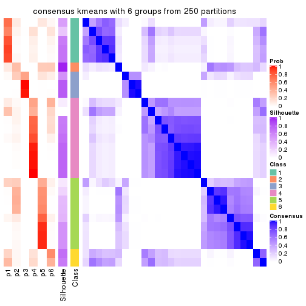
Heatmaps for the membership of samples in all partitions to see how consistent they are:
membership_heatmap(res, k = 2)
membership_heatmap(res, k = 3)
membership_heatmap(res, k = 4)
membership_heatmap(res, k = 5)
membership_heatmap(res, k = 6)
As soon as we have had the classes for columns, we can look for signatures which are significantly different between classes which can be candidate marks for certain classes. Following are the heatmaps for signatures.
Signature heatmaps where rows are scaled:
get_signatures(res, k = 2)
get_signatures(res, k = 3)
get_signatures(res, k = 4)
get_signatures(res, k = 5)
get_signatures(res, k = 6)
Signature heatmaps where rows are not scaled:
get_signatures(res, k = 2, scale_rows = FALSE)
get_signatures(res, k = 3, scale_rows = FALSE)
get_signatures(res, k = 4, scale_rows = FALSE)
get_signatures(res, k = 5, scale_rows = FALSE)
get_signatures(res, k = 6, scale_rows = FALSE)
Compare the overlap of signatures from different k:
compare_signatures(res)
get_signature() returns a data frame invisibly. TO get the list of signatures, the function
call should be assigned to a variable explicitly. In following code, if plot argument is set
to FALSE, no heatmap is plotted while only the differential analysis is performed.
# code only for demonstration
tb = get_signature(res, k = ..., plot = FALSE)
An example of the output of tb is:
#> which_row fdr mean_1 mean_2 scaled_mean_1 scaled_mean_2 km
#> 1 38 0.042760348 8.373488 9.131774 -0.5533452 0.5164555 1
#> 2 40 0.018707592 7.106213 8.469186 -0.6173731 0.5762149 1
#> 3 55 0.019134737 10.221463 11.207825 -0.6159697 0.5749050 1
#> 4 59 0.006059896 5.921854 7.869574 -0.6899429 0.6439467 1
#> 5 60 0.018055526 8.928898 10.211722 -0.6204761 0.5791110 1
#> 6 98 0.009384629 15.714769 14.887706 0.6635654 -0.6193277 2
...
The columns in tb are:
which_row: row indices corresponding to the input matrix.fdr: FDR for the differential test. mean_x: The mean value in group x.scaled_mean_x: The mean value in group x after rows are scaled.km: Row groups if k-means clustering is applied to rows.UMAP plot which shows how samples are separated.
dimension_reduction(res, k = 2, method = "UMAP")
dimension_reduction(res, k = 3, method = "UMAP")
dimension_reduction(res, k = 4, method = "UMAP")
dimension_reduction(res, k = 5, method = "UMAP")
dimension_reduction(res, k = 6, method = "UMAP")
Following heatmap shows how subgroups are split when increasing k:
collect_classes(res)

If matrix rows can be associated to genes, consider to use functional_enrichment(res,
...) to perform function enrichment for the signature genes. See this vignette for more detailed explanations.
The object with results only for a single top-value method and a single partition method can be extracted as:
res = res_list["ATC", "skmeans"]
# you can also extract it by
# res = res_list["ATC:skmeans"]
A summary of res and all the functions that can be applied to it:
res
#> A 'ConsensusPartition' object with k = 2, 3, 4, 5, 6.
#> On a matrix with 13917 rows and 56 columns.
#> Top rows (1000, 2000, 3000, 4000, 5000) are extracted by 'ATC' method.
#> Subgroups are detected by 'skmeans' method.
#> Performed in total 1250 partitions by row resampling.
#> Best k for subgroups seems to be 2.
#>
#> Following methods can be applied to this 'ConsensusPartition' object:
#> [1] "cola_report" "collect_classes" "collect_plots"
#> [4] "collect_stats" "colnames" "compare_signatures"
#> [7] "consensus_heatmap" "dimension_reduction" "functional_enrichment"
#> [10] "get_anno_col" "get_anno" "get_classes"
#> [13] "get_consensus" "get_matrix" "get_membership"
#> [16] "get_param" "get_signatures" "get_stats"
#> [19] "is_best_k" "is_stable_k" "membership_heatmap"
#> [22] "ncol" "nrow" "plot_ecdf"
#> [25] "rownames" "select_partition_number" "show"
#> [28] "suggest_best_k" "test_to_known_factors"
collect_plots() function collects all the plots made from res for all k (number of partitions)
into one single page to provide an easy and fast comparison between different k.
collect_plots(res)
The plots are:
k and the heatmap of
predicted classes for each k.k.k.k.All the plots in panels can be made by individual functions and they are plotted later in this section.
select_partition_number() produces several plots showing different
statistics for choosing “optimized” k. There are following statistics:
k;k, the area increased is defined as \(A_k - A_{k-1}\).The detailed explanations of these statistics can be found in the cola vignette.
Generally speaking, lower PAC score, higher mean silhouette score or higher
concordance corresponds to better partition. Rand index and Jaccard index
measure how similar the current partition is compared to partition with k-1.
If they are too similar, we won't accept k is better than k-1.
select_partition_number(res)
The numeric values for all these statistics can be obtained by get_stats().
get_stats(res)
#> k 1-PAC mean_silhouette concordance area_increased Rand Jaccard
#> 2 2 1.000 0.955 0.983 0.5026 0.501 0.501
#> 3 3 0.762 0.884 0.911 0.2080 0.883 0.770
#> 4 4 0.821 0.880 0.905 0.1320 0.878 0.701
#> 5 5 0.765 0.716 0.851 0.0705 0.982 0.938
#> 6 6 0.723 0.646 0.785 0.0420 0.974 0.907
suggest_best_k() suggests the best \(k\) based on these statistics. The rules are as follows:
suggest_best_k(res)
#> [1] 2
Following shows the table of the partitions (You need to click the show/hide
code output link to see it). The membership matrix (columns with name p*)
is inferred by
clue::cl_consensus()
function with the SE method. Basically the value in the membership matrix
represents the probability to belong to a certain group. The finall class
label for an item is determined with the group with highest probability it
belongs to.
In get_classes() function, the entropy is calculated from the membership
matrix and the silhouette score is calculated from the consensus matrix.
cbind(get_classes(res, k = 2), get_membership(res, k = 2))
#> class entropy silhouette p1 p2
#> SRR1975508 2 0.0000 0.999 0.000 1.000
#> SRR1975507 2 0.0000 0.999 0.000 1.000
#> SRR1975506 2 0.0000 0.999 0.000 1.000
#> SRR1975505 2 0.0000 0.999 0.000 1.000
#> SRR1975503 1 0.0000 0.970 1.000 0.000
#> SRR1975504 1 0.0000 0.970 1.000 0.000
#> SRR1975501 1 0.0000 0.970 1.000 0.000
#> SRR1975502 1 0.0000 0.970 1.000 0.000
#> SRR1975499 1 0.0000 0.970 1.000 0.000
#> SRR1975500 1 0.0000 0.970 1.000 0.000
#> SRR1975497 1 0.0000 0.970 1.000 0.000
#> SRR1975498 1 0.0000 0.970 1.000 0.000
#> SRR1975493 1 0.9933 0.202 0.548 0.452
#> SRR1975494 1 0.9933 0.202 0.548 0.452
#> SRR1975495 1 0.0000 0.970 1.000 0.000
#> SRR1975496 1 0.0000 0.970 1.000 0.000
#> SRR1975491 1 0.0000 0.970 1.000 0.000
#> SRR1975492 1 0.0000 0.970 1.000 0.000
#> SRR1975489 1 0.0000 0.970 1.000 0.000
#> SRR1975490 1 0.0000 0.970 1.000 0.000
#> SRR1975487 1 0.0000 0.970 1.000 0.000
#> SRR1975488 1 0.0000 0.970 1.000 0.000
#> SRR1975485 1 0.0000 0.970 1.000 0.000
#> SRR1975486 1 0.0000 0.970 1.000 0.000
#> SRR1975483 1 0.0000 0.970 1.000 0.000
#> SRR1975484 1 0.0000 0.970 1.000 0.000
#> SRR1975481 1 0.0000 0.970 1.000 0.000
#> SRR1975482 1 0.0000 0.970 1.000 0.000
#> SRR1975477 2 0.0000 0.999 0.000 1.000
#> SRR1975478 2 0.0000 0.999 0.000 1.000
#> SRR1975479 1 0.0000 0.970 1.000 0.000
#> SRR1975480 1 0.0000 0.970 1.000 0.000
#> SRR1975475 1 0.0000 0.970 1.000 0.000
#> SRR1975476 1 0.0000 0.970 1.000 0.000
#> SRR1975473 2 0.0000 0.999 0.000 1.000
#> SRR1975474 2 0.0000 0.999 0.000 1.000
#> SRR1975471 2 0.0938 0.988 0.012 0.988
#> SRR1975472 2 0.0938 0.988 0.012 0.988
#> SRR1975469 1 0.0000 0.970 1.000 0.000
#> SRR1975470 1 0.0000 0.970 1.000 0.000
#> SRR1975467 1 0.0000 0.970 1.000 0.000
#> SRR1975468 1 0.0000 0.970 1.000 0.000
#> SRR1975465 2 0.0000 0.999 0.000 1.000
#> SRR1975466 2 0.0000 0.999 0.000 1.000
#> SRR1975463 2 0.0000 0.999 0.000 1.000
#> SRR1975464 2 0.0000 0.999 0.000 1.000
#> SRR1975461 2 0.0000 0.999 0.000 1.000
#> SRR1975462 2 0.0000 0.999 0.000 1.000
#> SRR1975459 2 0.0000 0.999 0.000 1.000
#> SRR1975460 2 0.0000 0.999 0.000 1.000
#> SRR1975457 2 0.0000 0.999 0.000 1.000
#> SRR1975458 2 0.0000 0.999 0.000 1.000
#> SRR1975455 2 0.0000 0.999 0.000 1.000
#> SRR1975456 2 0.0000 0.999 0.000 1.000
#> SRR1975453 2 0.0000 0.999 0.000 1.000
#> SRR1975454 2 0.0000 0.999 0.000 1.000
cbind(get_classes(res, k = 3), get_membership(res, k = 3))
#> class entropy silhouette p1 p2 p3
#> SRR1975508 3 0.0000 0.894 0.000 0.000 1.000
#> SRR1975507 3 0.0000 0.894 0.000 0.000 1.000
#> SRR1975506 3 0.0000 0.894 0.000 0.000 1.000
#> SRR1975505 3 0.0000 0.894 0.000 0.000 1.000
#> SRR1975503 1 0.0000 0.957 1.000 0.000 0.000
#> SRR1975504 1 0.0000 0.957 1.000 0.000 0.000
#> SRR1975501 1 0.0000 0.957 1.000 0.000 0.000
#> SRR1975502 1 0.0000 0.957 1.000 0.000 0.000
#> SRR1975499 1 0.0000 0.957 1.000 0.000 0.000
#> SRR1975500 1 0.0000 0.957 1.000 0.000 0.000
#> SRR1975497 1 0.0000 0.957 1.000 0.000 0.000
#> SRR1975498 1 0.0000 0.957 1.000 0.000 0.000
#> SRR1975493 2 0.6299 0.776 0.096 0.772 0.132
#> SRR1975494 2 0.6299 0.776 0.096 0.772 0.132
#> SRR1975495 1 0.4974 0.787 0.764 0.236 0.000
#> SRR1975496 1 0.4974 0.787 0.764 0.236 0.000
#> SRR1975491 1 0.0000 0.957 1.000 0.000 0.000
#> SRR1975492 1 0.0000 0.957 1.000 0.000 0.000
#> SRR1975489 1 0.0000 0.957 1.000 0.000 0.000
#> SRR1975490 1 0.0000 0.957 1.000 0.000 0.000
#> SRR1975487 1 0.0000 0.957 1.000 0.000 0.000
#> SRR1975488 1 0.0000 0.957 1.000 0.000 0.000
#> SRR1975485 1 0.0000 0.957 1.000 0.000 0.000
#> SRR1975486 1 0.0000 0.957 1.000 0.000 0.000
#> SRR1975483 1 0.4887 0.794 0.772 0.228 0.000
#> SRR1975484 1 0.4887 0.794 0.772 0.228 0.000
#> SRR1975481 1 0.4291 0.835 0.820 0.180 0.000
#> SRR1975482 1 0.4291 0.835 0.820 0.180 0.000
#> SRR1975477 3 0.0237 0.891 0.000 0.004 0.996
#> SRR1975478 3 0.0237 0.891 0.000 0.004 0.996
#> SRR1975479 1 0.0000 0.957 1.000 0.000 0.000
#> SRR1975480 1 0.0000 0.957 1.000 0.000 0.000
#> SRR1975475 1 0.0000 0.957 1.000 0.000 0.000
#> SRR1975476 1 0.0000 0.957 1.000 0.000 0.000
#> SRR1975473 3 0.4291 0.727 0.000 0.180 0.820
#> SRR1975474 3 0.4291 0.727 0.000 0.180 0.820
#> SRR1975471 3 0.5785 0.599 0.000 0.332 0.668
#> SRR1975472 3 0.5785 0.599 0.000 0.332 0.668
#> SRR1975469 1 0.0592 0.950 0.988 0.012 0.000
#> SRR1975470 1 0.0592 0.950 0.988 0.012 0.000
#> SRR1975467 1 0.0000 0.957 1.000 0.000 0.000
#> SRR1975468 1 0.0000 0.957 1.000 0.000 0.000
#> SRR1975465 2 0.5835 0.878 0.000 0.660 0.340
#> SRR1975466 2 0.5835 0.878 0.000 0.660 0.340
#> SRR1975463 2 0.5363 0.875 0.000 0.724 0.276
#> SRR1975464 2 0.5363 0.875 0.000 0.724 0.276
#> SRR1975461 3 0.0000 0.894 0.000 0.000 1.000
#> SRR1975462 3 0.0000 0.894 0.000 0.000 1.000
#> SRR1975459 2 0.5859 0.875 0.000 0.656 0.344
#> SRR1975460 2 0.5859 0.875 0.000 0.656 0.344
#> SRR1975457 3 0.0000 0.894 0.000 0.000 1.000
#> SRR1975458 3 0.0000 0.894 0.000 0.000 1.000
#> SRR1975455 3 0.0000 0.894 0.000 0.000 1.000
#> SRR1975456 3 0.0000 0.894 0.000 0.000 1.000
#> SRR1975453 3 0.3686 0.781 0.000 0.140 0.860
#> SRR1975454 3 0.3686 0.781 0.000 0.140 0.860
cbind(get_classes(res, k = 4), get_membership(res, k = 4))
#> class entropy silhouette p1 p2 p3 p4
#> SRR1975508 3 0.1042 0.910 0.020 0.008 0.972 0.000
#> SRR1975507 3 0.1042 0.910 0.020 0.008 0.972 0.000
#> SRR1975506 3 0.1042 0.910 0.020 0.008 0.972 0.000
#> SRR1975505 3 0.1042 0.910 0.020 0.008 0.972 0.000
#> SRR1975503 4 0.0000 0.986 0.000 0.000 0.000 1.000
#> SRR1975504 4 0.0000 0.986 0.000 0.000 0.000 1.000
#> SRR1975501 4 0.0000 0.986 0.000 0.000 0.000 1.000
#> SRR1975502 4 0.0000 0.986 0.000 0.000 0.000 1.000
#> SRR1975499 4 0.0000 0.986 0.000 0.000 0.000 1.000
#> SRR1975500 4 0.0000 0.986 0.000 0.000 0.000 1.000
#> SRR1975497 4 0.0000 0.986 0.000 0.000 0.000 1.000
#> SRR1975498 4 0.0000 0.986 0.000 0.000 0.000 1.000
#> SRR1975493 2 0.0657 0.868 0.012 0.984 0.000 0.004
#> SRR1975494 2 0.0657 0.868 0.012 0.984 0.000 0.004
#> SRR1975495 1 0.3400 0.756 0.820 0.000 0.000 0.180
#> SRR1975496 1 0.3400 0.756 0.820 0.000 0.000 0.180
#> SRR1975491 4 0.0804 0.972 0.012 0.008 0.000 0.980
#> SRR1975492 4 0.0804 0.972 0.012 0.008 0.000 0.980
#> SRR1975489 4 0.0000 0.986 0.000 0.000 0.000 1.000
#> SRR1975490 4 0.0000 0.986 0.000 0.000 0.000 1.000
#> SRR1975487 4 0.0000 0.986 0.000 0.000 0.000 1.000
#> SRR1975488 4 0.0000 0.986 0.000 0.000 0.000 1.000
#> SRR1975485 4 0.0000 0.986 0.000 0.000 0.000 1.000
#> SRR1975486 4 0.0000 0.986 0.000 0.000 0.000 1.000
#> SRR1975483 1 0.4134 0.763 0.740 0.000 0.000 0.260
#> SRR1975484 1 0.4134 0.763 0.740 0.000 0.000 0.260
#> SRR1975481 1 0.4994 0.453 0.520 0.000 0.000 0.480
#> SRR1975482 1 0.4994 0.453 0.520 0.000 0.000 0.480
#> SRR1975477 3 0.0804 0.909 0.008 0.012 0.980 0.000
#> SRR1975478 3 0.0804 0.909 0.008 0.012 0.980 0.000
#> SRR1975479 4 0.0000 0.986 0.000 0.000 0.000 1.000
#> SRR1975480 4 0.0000 0.986 0.000 0.000 0.000 1.000
#> SRR1975475 4 0.0336 0.981 0.008 0.000 0.000 0.992
#> SRR1975476 4 0.0336 0.981 0.008 0.000 0.000 0.992
#> SRR1975473 3 0.4994 0.705 0.048 0.208 0.744 0.000
#> SRR1975474 3 0.4994 0.705 0.048 0.208 0.744 0.000
#> SRR1975471 1 0.0895 0.579 0.976 0.004 0.020 0.000
#> SRR1975472 1 0.0895 0.579 0.976 0.004 0.020 0.000
#> SRR1975469 4 0.1792 0.905 0.068 0.000 0.000 0.932
#> SRR1975470 4 0.1792 0.905 0.068 0.000 0.000 0.932
#> SRR1975467 4 0.1174 0.962 0.012 0.020 0.000 0.968
#> SRR1975468 4 0.1174 0.962 0.012 0.020 0.000 0.968
#> SRR1975465 2 0.3266 0.882 0.000 0.832 0.168 0.000
#> SRR1975466 2 0.3266 0.882 0.000 0.832 0.168 0.000
#> SRR1975463 2 0.0895 0.882 0.004 0.976 0.020 0.000
#> SRR1975464 2 0.0895 0.882 0.004 0.976 0.020 0.000
#> SRR1975461 3 0.1798 0.900 0.040 0.016 0.944 0.000
#> SRR1975462 3 0.1798 0.900 0.040 0.016 0.944 0.000
#> SRR1975459 2 0.3444 0.870 0.000 0.816 0.184 0.000
#> SRR1975460 2 0.3444 0.870 0.000 0.816 0.184 0.000
#> SRR1975457 3 0.0524 0.910 0.004 0.008 0.988 0.000
#> SRR1975458 3 0.0524 0.910 0.004 0.008 0.988 0.000
#> SRR1975455 3 0.0524 0.910 0.004 0.008 0.988 0.000
#> SRR1975456 3 0.0524 0.910 0.004 0.008 0.988 0.000
#> SRR1975453 3 0.4690 0.723 0.260 0.016 0.724 0.000
#> SRR1975454 3 0.4690 0.723 0.260 0.016 0.724 0.000
cbind(get_classes(res, k = 5), get_membership(res, k = 5))
#> class entropy silhouette p1 p2 p3 p4 p5
#> SRR1975508 3 0.4040 0.465 0.000 0.016 0.724 0.000 0.260
#> SRR1975507 3 0.4040 0.465 0.000 0.016 0.724 0.000 0.260
#> SRR1975506 3 0.4040 0.465 0.000 0.016 0.724 0.000 0.260
#> SRR1975505 3 0.4040 0.465 0.000 0.016 0.724 0.000 0.260
#> SRR1975503 4 0.0000 0.934 0.000 0.000 0.000 1.000 0.000
#> SRR1975504 4 0.0000 0.934 0.000 0.000 0.000 1.000 0.000
#> SRR1975501 4 0.1661 0.904 0.036 0.000 0.000 0.940 0.024
#> SRR1975502 4 0.1661 0.904 0.036 0.000 0.000 0.940 0.024
#> SRR1975499 4 0.0000 0.934 0.000 0.000 0.000 1.000 0.000
#> SRR1975500 4 0.0000 0.934 0.000 0.000 0.000 1.000 0.000
#> SRR1975497 4 0.0324 0.931 0.004 0.000 0.000 0.992 0.004
#> SRR1975498 4 0.0324 0.931 0.004 0.000 0.000 0.992 0.004
#> SRR1975493 2 0.2873 0.799 0.016 0.856 0.000 0.000 0.128
#> SRR1975494 2 0.2873 0.799 0.016 0.856 0.000 0.000 0.128
#> SRR1975495 1 0.2522 0.662 0.896 0.000 0.000 0.052 0.052
#> SRR1975496 1 0.2522 0.662 0.896 0.000 0.000 0.052 0.052
#> SRR1975491 4 0.2396 0.885 0.024 0.004 0.000 0.904 0.068
#> SRR1975492 4 0.2396 0.885 0.024 0.004 0.000 0.904 0.068
#> SRR1975489 4 0.0000 0.934 0.000 0.000 0.000 1.000 0.000
#> SRR1975490 4 0.0000 0.934 0.000 0.000 0.000 1.000 0.000
#> SRR1975487 4 0.0000 0.934 0.000 0.000 0.000 1.000 0.000
#> SRR1975488 4 0.0000 0.934 0.000 0.000 0.000 1.000 0.000
#> SRR1975485 4 0.0000 0.934 0.000 0.000 0.000 1.000 0.000
#> SRR1975486 4 0.0000 0.934 0.000 0.000 0.000 1.000 0.000
#> SRR1975483 1 0.2648 0.699 0.848 0.000 0.000 0.152 0.000
#> SRR1975484 1 0.2648 0.699 0.848 0.000 0.000 0.152 0.000
#> SRR1975481 1 0.4583 0.600 0.672 0.000 0.000 0.296 0.032
#> SRR1975482 1 0.4583 0.600 0.672 0.000 0.000 0.296 0.032
#> SRR1975477 3 0.2583 0.604 0.000 0.004 0.864 0.000 0.132
#> SRR1975478 3 0.2583 0.604 0.000 0.004 0.864 0.000 0.132
#> SRR1975479 4 0.0000 0.934 0.000 0.000 0.000 1.000 0.000
#> SRR1975480 4 0.0000 0.934 0.000 0.000 0.000 1.000 0.000
#> SRR1975475 4 0.0671 0.925 0.004 0.000 0.000 0.980 0.016
#> SRR1975476 4 0.0671 0.925 0.004 0.000 0.000 0.980 0.016
#> SRR1975473 3 0.5760 0.366 0.028 0.092 0.660 0.000 0.220
#> SRR1975474 3 0.5760 0.366 0.028 0.092 0.660 0.000 0.220
#> SRR1975471 1 0.4242 0.274 0.572 0.000 0.000 0.000 0.428
#> SRR1975472 1 0.4242 0.274 0.572 0.000 0.000 0.000 0.428
#> SRR1975469 4 0.4525 0.340 0.360 0.000 0.000 0.624 0.016
#> SRR1975470 4 0.4525 0.340 0.360 0.000 0.000 0.624 0.016
#> SRR1975467 4 0.2753 0.849 0.008 0.012 0.000 0.876 0.104
#> SRR1975468 4 0.2753 0.849 0.008 0.012 0.000 0.876 0.104
#> SRR1975465 2 0.3181 0.858 0.000 0.856 0.072 0.000 0.072
#> SRR1975466 2 0.3181 0.858 0.000 0.856 0.072 0.000 0.072
#> SRR1975463 2 0.0404 0.858 0.000 0.988 0.012 0.000 0.000
#> SRR1975464 2 0.0404 0.858 0.000 0.988 0.012 0.000 0.000
#> SRR1975461 3 0.4781 -0.131 0.000 0.020 0.552 0.000 0.428
#> SRR1975462 3 0.4781 -0.131 0.000 0.020 0.552 0.000 0.428
#> SRR1975459 2 0.3812 0.830 0.000 0.812 0.092 0.000 0.096
#> SRR1975460 2 0.3812 0.830 0.000 0.812 0.092 0.000 0.096
#> SRR1975457 3 0.0000 0.632 0.000 0.000 1.000 0.000 0.000
#> SRR1975458 3 0.0000 0.632 0.000 0.000 1.000 0.000 0.000
#> SRR1975455 3 0.0000 0.632 0.000 0.000 1.000 0.000 0.000
#> SRR1975456 3 0.0000 0.632 0.000 0.000 1.000 0.000 0.000
#> SRR1975453 5 0.5568 1.000 0.060 0.016 0.308 0.000 0.616
#> SRR1975454 5 0.5568 1.000 0.060 0.016 0.308 0.000 0.616
cbind(get_classes(res, k = 6), get_membership(res, k = 6))
#> class entropy silhouette p1 p2 p3 p4 p5 p6
#> SRR1975508 3 0.0146 0.5924 0.000 0.004 0.996 0.000 0.000 0.000
#> SRR1975507 3 0.0146 0.5924 0.000 0.004 0.996 0.000 0.000 0.000
#> SRR1975506 3 0.0146 0.5924 0.000 0.004 0.996 0.000 0.000 0.000
#> SRR1975505 3 0.0146 0.5924 0.000 0.004 0.996 0.000 0.000 0.000
#> SRR1975503 4 0.0146 0.8777 0.000 0.000 0.000 0.996 0.004 0.000
#> SRR1975504 4 0.0146 0.8777 0.000 0.000 0.000 0.996 0.004 0.000
#> SRR1975501 4 0.2537 0.8107 0.088 0.000 0.000 0.880 0.024 0.008
#> SRR1975502 4 0.2537 0.8107 0.088 0.000 0.000 0.880 0.024 0.008
#> SRR1975499 4 0.0000 0.8788 0.000 0.000 0.000 1.000 0.000 0.000
#> SRR1975500 4 0.0000 0.8788 0.000 0.000 0.000 1.000 0.000 0.000
#> SRR1975497 4 0.0922 0.8663 0.024 0.000 0.000 0.968 0.004 0.004
#> SRR1975498 4 0.0922 0.8663 0.024 0.000 0.000 0.968 0.004 0.004
#> SRR1975493 2 0.5621 0.5945 0.060 0.648 0.000 0.000 0.172 0.120
#> SRR1975494 2 0.5621 0.5945 0.060 0.648 0.000 0.000 0.172 0.120
#> SRR1975495 1 0.4224 0.5890 0.684 0.000 0.000 0.036 0.004 0.276
#> SRR1975496 1 0.4224 0.5890 0.684 0.000 0.000 0.036 0.004 0.276
#> SRR1975491 4 0.4177 0.7363 0.116 0.000 0.000 0.780 0.064 0.040
#> SRR1975492 4 0.4177 0.7363 0.116 0.000 0.000 0.780 0.064 0.040
#> SRR1975489 4 0.0000 0.8788 0.000 0.000 0.000 1.000 0.000 0.000
#> SRR1975490 4 0.0000 0.8788 0.000 0.000 0.000 1.000 0.000 0.000
#> SRR1975487 4 0.0000 0.8788 0.000 0.000 0.000 1.000 0.000 0.000
#> SRR1975488 4 0.0000 0.8788 0.000 0.000 0.000 1.000 0.000 0.000
#> SRR1975485 4 0.0000 0.8788 0.000 0.000 0.000 1.000 0.000 0.000
#> SRR1975486 4 0.0000 0.8788 0.000 0.000 0.000 1.000 0.000 0.000
#> SRR1975483 1 0.3644 0.7384 0.792 0.000 0.000 0.120 0.000 0.088
#> SRR1975484 1 0.3644 0.7384 0.792 0.000 0.000 0.120 0.000 0.088
#> SRR1975481 1 0.3930 0.6560 0.728 0.000 0.000 0.236 0.032 0.004
#> SRR1975482 1 0.3930 0.6560 0.728 0.000 0.000 0.236 0.032 0.004
#> SRR1975477 3 0.4264 -0.1289 0.000 0.016 0.496 0.000 0.488 0.000
#> SRR1975478 3 0.4264 -0.1289 0.000 0.016 0.496 0.000 0.488 0.000
#> SRR1975479 4 0.0000 0.8788 0.000 0.000 0.000 1.000 0.000 0.000
#> SRR1975480 4 0.0000 0.8788 0.000 0.000 0.000 1.000 0.000 0.000
#> SRR1975475 4 0.0891 0.8670 0.008 0.000 0.000 0.968 0.024 0.000
#> SRR1975476 4 0.0891 0.8670 0.008 0.000 0.000 0.968 0.024 0.000
#> SRR1975473 5 0.3437 1.0000 0.008 0.012 0.188 0.000 0.788 0.004
#> SRR1975474 5 0.3437 1.0000 0.008 0.012 0.188 0.000 0.788 0.004
#> SRR1975471 6 0.3089 0.5163 0.188 0.000 0.008 0.000 0.004 0.800
#> SRR1975472 6 0.3089 0.5163 0.188 0.000 0.008 0.000 0.004 0.800
#> SRR1975469 4 0.4797 -0.0362 0.460 0.000 0.000 0.500 0.024 0.016
#> SRR1975470 4 0.4797 -0.0362 0.460 0.000 0.000 0.500 0.024 0.016
#> SRR1975467 4 0.6119 0.5419 0.092 0.024 0.000 0.644 0.144 0.096
#> SRR1975468 4 0.6119 0.5419 0.092 0.024 0.000 0.644 0.144 0.096
#> SRR1975465 2 0.2632 0.8069 0.000 0.832 0.164 0.000 0.000 0.004
#> SRR1975466 2 0.2632 0.8069 0.000 0.832 0.164 0.000 0.000 0.004
#> SRR1975463 2 0.1149 0.7880 0.000 0.960 0.024 0.000 0.008 0.008
#> SRR1975464 2 0.1149 0.7880 0.000 0.960 0.024 0.000 0.008 0.008
#> SRR1975461 3 0.2636 0.4501 0.000 0.004 0.860 0.000 0.016 0.120
#> SRR1975462 3 0.2636 0.4501 0.000 0.004 0.860 0.000 0.016 0.120
#> SRR1975459 2 0.2738 0.8015 0.000 0.820 0.176 0.000 0.000 0.004
#> SRR1975460 2 0.2738 0.8015 0.000 0.820 0.176 0.000 0.000 0.004
#> SRR1975457 3 0.4502 0.2521 0.012 0.000 0.568 0.000 0.404 0.016
#> SRR1975458 3 0.4502 0.2521 0.012 0.000 0.568 0.000 0.404 0.016
#> SRR1975455 3 0.4494 0.2604 0.012 0.000 0.572 0.000 0.400 0.016
#> SRR1975456 3 0.4494 0.2604 0.012 0.000 0.572 0.000 0.400 0.016
#> SRR1975453 6 0.4301 0.5300 0.000 0.004 0.400 0.000 0.016 0.580
#> SRR1975454 6 0.4301 0.5300 0.000 0.004 0.400 0.000 0.016 0.580
Heatmaps for the consensus matrix. It visualizes the probability of two samples to be in a same group.
consensus_heatmap(res, k = 2)
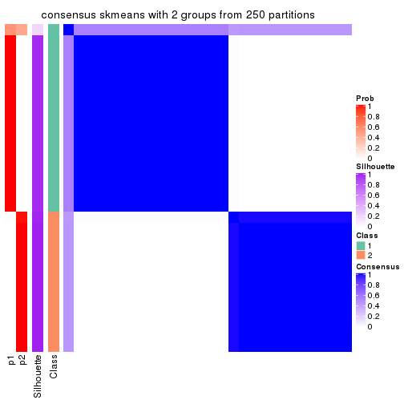
consensus_heatmap(res, k = 3)
consensus_heatmap(res, k = 4)
consensus_heatmap(res, k = 5)
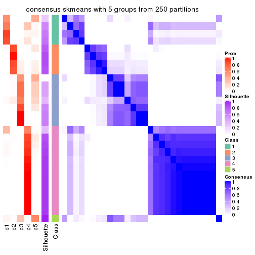
consensus_heatmap(res, k = 6)
Heatmaps for the membership of samples in all partitions to see how consistent they are:
membership_heatmap(res, k = 2)
membership_heatmap(res, k = 3)
membership_heatmap(res, k = 4)
membership_heatmap(res, k = 5)
membership_heatmap(res, k = 6)
As soon as we have had the classes for columns, we can look for signatures which are significantly different between classes which can be candidate marks for certain classes. Following are the heatmaps for signatures.
Signature heatmaps where rows are scaled:
get_signatures(res, k = 2)
get_signatures(res, k = 3)
get_signatures(res, k = 4)
get_signatures(res, k = 5)
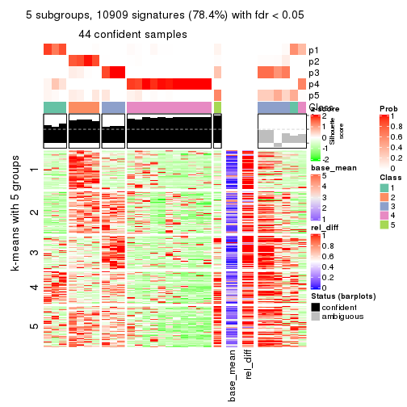
get_signatures(res, k = 6)
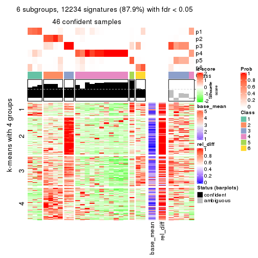
Signature heatmaps where rows are not scaled:
get_signatures(res, k = 2, scale_rows = FALSE)
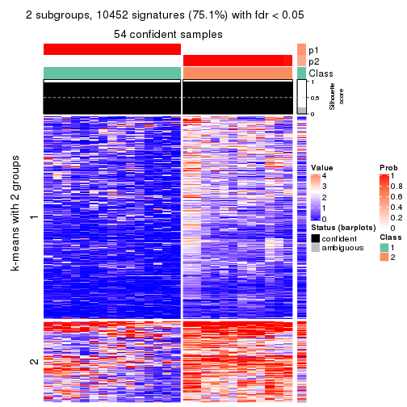
get_signatures(res, k = 3, scale_rows = FALSE)
get_signatures(res, k = 4, scale_rows = FALSE)
get_signatures(res, k = 5, scale_rows = FALSE)
get_signatures(res, k = 6, scale_rows = FALSE)
Compare the overlap of signatures from different k:
compare_signatures(res)
get_signature() returns a data frame invisibly. TO get the list of signatures, the function
call should be assigned to a variable explicitly. In following code, if plot argument is set
to FALSE, no heatmap is plotted while only the differential analysis is performed.
# code only for demonstration
tb = get_signature(res, k = ..., plot = FALSE)
An example of the output of tb is:
#> which_row fdr mean_1 mean_2 scaled_mean_1 scaled_mean_2 km
#> 1 38 0.042760348 8.373488 9.131774 -0.5533452 0.5164555 1
#> 2 40 0.018707592 7.106213 8.469186 -0.6173731 0.5762149 1
#> 3 55 0.019134737 10.221463 11.207825 -0.6159697 0.5749050 1
#> 4 59 0.006059896 5.921854 7.869574 -0.6899429 0.6439467 1
#> 5 60 0.018055526 8.928898 10.211722 -0.6204761 0.5791110 1
#> 6 98 0.009384629 15.714769 14.887706 0.6635654 -0.6193277 2
...
The columns in tb are:
which_row: row indices corresponding to the input matrix.fdr: FDR for the differential test. mean_x: The mean value in group x.scaled_mean_x: The mean value in group x after rows are scaled.km: Row groups if k-means clustering is applied to rows.UMAP plot which shows how samples are separated.
dimension_reduction(res, k = 2, method = "UMAP")
dimension_reduction(res, k = 3, method = "UMAP")
dimension_reduction(res, k = 4, method = "UMAP")
dimension_reduction(res, k = 5, method = "UMAP")
dimension_reduction(res, k = 6, method = "UMAP")
Following heatmap shows how subgroups are split when increasing k:
collect_classes(res)
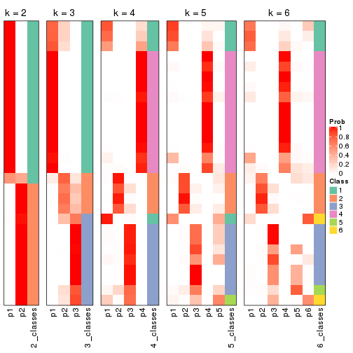
If matrix rows can be associated to genes, consider to use functional_enrichment(res,
...) to perform function enrichment for the signature genes. See this vignette for more detailed explanations.
The object with results only for a single top-value method and a single partition method can be extracted as:
res = res_list["ATC", "pam"]
# you can also extract it by
# res = res_list["ATC:pam"]
A summary of res and all the functions that can be applied to it:
res
#> A 'ConsensusPartition' object with k = 2, 3, 4, 5, 6.
#> On a matrix with 13917 rows and 56 columns.
#> Top rows (1000, 2000, 3000, 4000, 5000) are extracted by 'ATC' method.
#> Subgroups are detected by 'pam' method.
#> Performed in total 1250 partitions by row resampling.
#> Best k for subgroups seems to be 3.
#>
#> Following methods can be applied to this 'ConsensusPartition' object:
#> [1] "cola_report" "collect_classes" "collect_plots"
#> [4] "collect_stats" "colnames" "compare_signatures"
#> [7] "consensus_heatmap" "dimension_reduction" "functional_enrichment"
#> [10] "get_anno_col" "get_anno" "get_classes"
#> [13] "get_consensus" "get_matrix" "get_membership"
#> [16] "get_param" "get_signatures" "get_stats"
#> [19] "is_best_k" "is_stable_k" "membership_heatmap"
#> [22] "ncol" "nrow" "plot_ecdf"
#> [25] "rownames" "select_partition_number" "show"
#> [28] "suggest_best_k" "test_to_known_factors"
collect_plots() function collects all the plots made from res for all k (number of partitions)
into one single page to provide an easy and fast comparison between different k.
collect_plots(res)
The plots are:
k and the heatmap of
predicted classes for each k.k.k.k.All the plots in panels can be made by individual functions and they are plotted later in this section.
select_partition_number() produces several plots showing different
statistics for choosing “optimized” k. There are following statistics:
k;k, the area increased is defined as \(A_k - A_{k-1}\).The detailed explanations of these statistics can be found in the cola vignette.
Generally speaking, lower PAC score, higher mean silhouette score or higher
concordance corresponds to better partition. Rand index and Jaccard index
measure how similar the current partition is compared to partition with k-1.
If they are too similar, we won't accept k is better than k-1.
select_partition_number(res)
The numeric values for all these statistics can be obtained by get_stats().
get_stats(res)
#> k 1-PAC mean_silhouette concordance area_increased Rand Jaccard
#> 2 2 1.000 0.981 0.969 0.4819 0.494 0.494
#> 3 3 1.000 0.960 0.982 0.1958 0.922 0.842
#> 4 4 0.678 0.672 0.856 0.2110 0.808 0.577
#> 5 5 0.755 0.673 0.831 0.0664 0.844 0.549
#> 6 6 0.884 0.823 0.928 0.0537 0.953 0.811
suggest_best_k() suggests the best \(k\) based on these statistics. The rules are as follows:
suggest_best_k(res)
#> [1] 3
#> attr(,"optional")
#> [1] 2
There is also optional best \(k\) = 2 that is worth to check.
Following shows the table of the partitions (You need to click the show/hide
code output link to see it). The membership matrix (columns with name p*)
is inferred by
clue::cl_consensus()
function with the SE method. Basically the value in the membership matrix
represents the probability to belong to a certain group. The finall class
label for an item is determined with the group with highest probability it
belongs to.
In get_classes() function, the entropy is calculated from the membership
matrix and the silhouette score is calculated from the consensus matrix.
cbind(get_classes(res, k = 2), get_membership(res, k = 2))
#> class entropy silhouette p1 p2
#> SRR1975508 2 0.000 0.929 0.000 1.000
#> SRR1975507 2 0.000 0.929 0.000 1.000
#> SRR1975506 2 0.000 0.929 0.000 1.000
#> SRR1975505 2 0.000 0.929 0.000 1.000
#> SRR1975503 1 0.000 1.000 1.000 0.000
#> SRR1975504 1 0.000 1.000 1.000 0.000
#> SRR1975501 1 0.000 1.000 1.000 0.000
#> SRR1975502 1 0.000 1.000 1.000 0.000
#> SRR1975499 1 0.000 1.000 1.000 0.000
#> SRR1975500 1 0.000 1.000 1.000 0.000
#> SRR1975497 1 0.000 1.000 1.000 0.000
#> SRR1975498 1 0.000 1.000 1.000 0.000
#> SRR1975493 2 0.605 0.908 0.148 0.852
#> SRR1975494 2 0.563 0.926 0.132 0.868
#> SRR1975495 1 0.000 1.000 1.000 0.000
#> SRR1975496 1 0.000 1.000 1.000 0.000
#> SRR1975491 1 0.000 1.000 1.000 0.000
#> SRR1975492 1 0.000 1.000 1.000 0.000
#> SRR1975489 1 0.000 1.000 1.000 0.000
#> SRR1975490 1 0.000 1.000 1.000 0.000
#> SRR1975487 1 0.000 1.000 1.000 0.000
#> SRR1975488 1 0.000 1.000 1.000 0.000
#> SRR1975485 1 0.000 1.000 1.000 0.000
#> SRR1975486 1 0.000 1.000 1.000 0.000
#> SRR1975483 1 0.000 1.000 1.000 0.000
#> SRR1975484 1 0.000 1.000 1.000 0.000
#> SRR1975481 1 0.000 1.000 1.000 0.000
#> SRR1975482 1 0.000 1.000 1.000 0.000
#> SRR1975477 2 0.402 0.974 0.080 0.920
#> SRR1975478 2 0.402 0.974 0.080 0.920
#> SRR1975479 1 0.000 1.000 1.000 0.000
#> SRR1975480 1 0.000 1.000 1.000 0.000
#> SRR1975475 1 0.000 1.000 1.000 0.000
#> SRR1975476 1 0.000 1.000 1.000 0.000
#> SRR1975473 2 0.402 0.974 0.080 0.920
#> SRR1975474 2 0.402 0.974 0.080 0.920
#> SRR1975471 2 0.402 0.974 0.080 0.920
#> SRR1975472 2 0.402 0.974 0.080 0.920
#> SRR1975469 1 0.000 1.000 1.000 0.000
#> SRR1975470 1 0.000 1.000 1.000 0.000
#> SRR1975467 1 0.000 1.000 1.000 0.000
#> SRR1975468 1 0.000 1.000 1.000 0.000
#> SRR1975465 2 0.402 0.974 0.080 0.920
#> SRR1975466 2 0.402 0.974 0.080 0.920
#> SRR1975463 2 0.402 0.974 0.080 0.920
#> SRR1975464 2 0.402 0.974 0.080 0.920
#> SRR1975461 2 0.000 0.929 0.000 1.000
#> SRR1975462 2 0.000 0.929 0.000 1.000
#> SRR1975459 2 0.402 0.974 0.080 0.920
#> SRR1975460 2 0.402 0.974 0.080 0.920
#> SRR1975457 2 0.402 0.974 0.080 0.920
#> SRR1975458 2 0.402 0.974 0.080 0.920
#> SRR1975455 2 0.402 0.974 0.080 0.920
#> SRR1975456 2 0.402 0.974 0.080 0.920
#> SRR1975453 2 0.402 0.974 0.080 0.920
#> SRR1975454 2 0.402 0.974 0.080 0.920
cbind(get_classes(res, k = 3), get_membership(res, k = 3))
#> class entropy silhouette p1 p2 p3
#> SRR1975508 3 0.000 0.818 0.000 0.000 1.000
#> SRR1975507 3 0.000 0.818 0.000 0.000 1.000
#> SRR1975506 3 0.000 0.818 0.000 0.000 1.000
#> SRR1975505 3 0.000 0.818 0.000 0.000 1.000
#> SRR1975503 1 0.000 0.996 1.000 0.000 0.000
#> SRR1975504 1 0.000 0.996 1.000 0.000 0.000
#> SRR1975501 1 0.000 0.996 1.000 0.000 0.000
#> SRR1975502 1 0.000 0.996 1.000 0.000 0.000
#> SRR1975499 1 0.000 0.996 1.000 0.000 0.000
#> SRR1975500 1 0.000 0.996 1.000 0.000 0.000
#> SRR1975497 1 0.000 0.996 1.000 0.000 0.000
#> SRR1975498 1 0.000 0.996 1.000 0.000 0.000
#> SRR1975493 2 0.000 1.000 0.000 1.000 0.000
#> SRR1975494 2 0.000 1.000 0.000 1.000 0.000
#> SRR1975495 1 0.175 0.941 0.952 0.048 0.000
#> SRR1975496 1 0.207 0.926 0.940 0.060 0.000
#> SRR1975491 1 0.000 0.996 1.000 0.000 0.000
#> SRR1975492 1 0.000 0.996 1.000 0.000 0.000
#> SRR1975489 1 0.000 0.996 1.000 0.000 0.000
#> SRR1975490 1 0.000 0.996 1.000 0.000 0.000
#> SRR1975487 1 0.000 0.996 1.000 0.000 0.000
#> SRR1975488 1 0.000 0.996 1.000 0.000 0.000
#> SRR1975485 1 0.000 0.996 1.000 0.000 0.000
#> SRR1975486 1 0.000 0.996 1.000 0.000 0.000
#> SRR1975483 1 0.000 0.996 1.000 0.000 0.000
#> SRR1975484 1 0.000 0.996 1.000 0.000 0.000
#> SRR1975481 1 0.000 0.996 1.000 0.000 0.000
#> SRR1975482 1 0.000 0.996 1.000 0.000 0.000
#> SRR1975477 2 0.000 1.000 0.000 1.000 0.000
#> SRR1975478 2 0.000 1.000 0.000 1.000 0.000
#> SRR1975479 1 0.000 0.996 1.000 0.000 0.000
#> SRR1975480 1 0.000 0.996 1.000 0.000 0.000
#> SRR1975475 1 0.000 0.996 1.000 0.000 0.000
#> SRR1975476 1 0.000 0.996 1.000 0.000 0.000
#> SRR1975473 2 0.000 1.000 0.000 1.000 0.000
#> SRR1975474 2 0.000 1.000 0.000 1.000 0.000
#> SRR1975471 2 0.000 1.000 0.000 1.000 0.000
#> SRR1975472 2 0.000 1.000 0.000 1.000 0.000
#> SRR1975469 1 0.000 0.996 1.000 0.000 0.000
#> SRR1975470 1 0.000 0.996 1.000 0.000 0.000
#> SRR1975467 1 0.000 0.996 1.000 0.000 0.000
#> SRR1975468 1 0.000 0.996 1.000 0.000 0.000
#> SRR1975465 2 0.000 1.000 0.000 1.000 0.000
#> SRR1975466 2 0.000 1.000 0.000 1.000 0.000
#> SRR1975463 2 0.000 1.000 0.000 1.000 0.000
#> SRR1975464 2 0.000 1.000 0.000 1.000 0.000
#> SRR1975461 3 0.626 0.345 0.000 0.448 0.552
#> SRR1975462 3 0.621 0.393 0.000 0.428 0.572
#> SRR1975459 2 0.000 1.000 0.000 1.000 0.000
#> SRR1975460 2 0.000 1.000 0.000 1.000 0.000
#> SRR1975457 2 0.000 1.000 0.000 1.000 0.000
#> SRR1975458 2 0.000 1.000 0.000 1.000 0.000
#> SRR1975455 2 0.000 1.000 0.000 1.000 0.000
#> SRR1975456 2 0.000 1.000 0.000 1.000 0.000
#> SRR1975453 2 0.000 1.000 0.000 1.000 0.000
#> SRR1975454 2 0.000 1.000 0.000 1.000 0.000
cbind(get_classes(res, k = 4), get_membership(res, k = 4))
#> class entropy silhouette p1 p2 p3 p4
#> SRR1975508 3 0.0000 1.000 0.000 0.000 1.000 0.000
#> SRR1975507 3 0.0000 1.000 0.000 0.000 1.000 0.000
#> SRR1975506 3 0.0000 1.000 0.000 0.000 1.000 0.000
#> SRR1975505 3 0.0000 1.000 0.000 0.000 1.000 0.000
#> SRR1975503 4 0.0000 0.870 0.000 0.000 0.000 1.000
#> SRR1975504 4 0.0000 0.870 0.000 0.000 0.000 1.000
#> SRR1975501 4 0.1059 0.857 0.016 0.012 0.000 0.972
#> SRR1975502 4 0.1182 0.855 0.016 0.016 0.000 0.968
#> SRR1975499 4 0.0000 0.870 0.000 0.000 0.000 1.000
#> SRR1975500 4 0.0000 0.870 0.000 0.000 0.000 1.000
#> SRR1975497 4 0.0000 0.870 0.000 0.000 0.000 1.000
#> SRR1975498 4 0.0000 0.870 0.000 0.000 0.000 1.000
#> SRR1975493 2 0.0000 0.368 0.000 1.000 0.000 0.000
#> SRR1975494 2 0.0000 0.368 0.000 1.000 0.000 0.000
#> SRR1975495 1 0.7314 0.596 0.488 0.348 0.000 0.164
#> SRR1975496 1 0.7314 0.596 0.488 0.348 0.000 0.164
#> SRR1975491 4 0.6039 0.482 0.056 0.348 0.000 0.596
#> SRR1975492 4 0.6039 0.482 0.056 0.348 0.000 0.596
#> SRR1975489 4 0.0000 0.870 0.000 0.000 0.000 1.000
#> SRR1975490 4 0.0000 0.870 0.000 0.000 0.000 1.000
#> SRR1975487 4 0.0000 0.870 0.000 0.000 0.000 1.000
#> SRR1975488 4 0.0000 0.870 0.000 0.000 0.000 1.000
#> SRR1975485 4 0.0000 0.870 0.000 0.000 0.000 1.000
#> SRR1975486 4 0.0000 0.870 0.000 0.000 0.000 1.000
#> SRR1975483 1 0.7314 0.596 0.488 0.348 0.000 0.164
#> SRR1975484 1 0.7314 0.596 0.488 0.348 0.000 0.164
#> SRR1975481 1 0.7404 0.587 0.476 0.348 0.000 0.176
#> SRR1975482 1 0.7404 0.587 0.476 0.348 0.000 0.176
#> SRR1975477 2 0.4661 0.851 0.348 0.652 0.000 0.000
#> SRR1975478 2 0.4661 0.851 0.348 0.652 0.000 0.000
#> SRR1975479 4 0.0000 0.870 0.000 0.000 0.000 1.000
#> SRR1975480 4 0.0000 0.870 0.000 0.000 0.000 1.000
#> SRR1975475 4 0.0524 0.866 0.008 0.004 0.000 0.988
#> SRR1975476 4 0.0524 0.866 0.008 0.004 0.000 0.988
#> SRR1975473 2 0.4790 0.620 0.380 0.620 0.000 0.000
#> SRR1975474 2 0.4790 0.620 0.380 0.620 0.000 0.000
#> SRR1975471 1 0.4697 0.543 0.644 0.356 0.000 0.000
#> SRR1975472 1 0.4697 0.543 0.644 0.356 0.000 0.000
#> SRR1975469 4 0.6039 0.482 0.056 0.348 0.000 0.596
#> SRR1975470 4 0.6039 0.482 0.056 0.348 0.000 0.596
#> SRR1975467 4 0.6039 0.482 0.056 0.348 0.000 0.596
#> SRR1975468 4 0.6039 0.482 0.056 0.348 0.000 0.596
#> SRR1975465 2 0.4697 0.853 0.356 0.644 0.000 0.000
#> SRR1975466 2 0.4697 0.853 0.356 0.644 0.000 0.000
#> SRR1975463 2 0.4697 0.853 0.356 0.644 0.000 0.000
#> SRR1975464 2 0.4697 0.853 0.356 0.644 0.000 0.000
#> SRR1975461 1 0.6065 0.176 0.684 0.140 0.176 0.000
#> SRR1975462 1 0.6104 0.180 0.680 0.140 0.180 0.000
#> SRR1975459 2 0.4697 0.853 0.356 0.644 0.000 0.000
#> SRR1975460 2 0.4697 0.853 0.356 0.644 0.000 0.000
#> SRR1975457 1 0.4431 -0.350 0.696 0.304 0.000 0.000
#> SRR1975458 1 0.4543 -0.396 0.676 0.324 0.000 0.000
#> SRR1975455 2 0.4817 0.829 0.388 0.612 0.000 0.000
#> SRR1975456 2 0.4843 0.822 0.396 0.604 0.000 0.000
#> SRR1975453 1 0.1557 0.206 0.944 0.056 0.000 0.000
#> SRR1975454 1 0.1557 0.206 0.944 0.056 0.000 0.000
cbind(get_classes(res, k = 5), get_membership(res, k = 5))
#> class entropy silhouette p1 p2 p3 p4 p5
#> SRR1975508 3 0.0000 1.000 0.000 0.000 1.000 0.000 0.000
#> SRR1975507 3 0.0000 1.000 0.000 0.000 1.000 0.000 0.000
#> SRR1975506 3 0.0000 1.000 0.000 0.000 1.000 0.000 0.000
#> SRR1975505 3 0.0000 1.000 0.000 0.000 1.000 0.000 0.000
#> SRR1975503 4 0.0000 0.918 0.000 0.000 0.000 1.000 0.000
#> SRR1975504 4 0.0000 0.918 0.000 0.000 0.000 1.000 0.000
#> SRR1975501 4 0.1965 0.824 0.096 0.000 0.000 0.904 0.000
#> SRR1975502 4 0.2020 0.819 0.100 0.000 0.000 0.900 0.000
#> SRR1975499 4 0.0000 0.918 0.000 0.000 0.000 1.000 0.000
#> SRR1975500 4 0.0000 0.918 0.000 0.000 0.000 1.000 0.000
#> SRR1975497 4 0.0000 0.918 0.000 0.000 0.000 1.000 0.000
#> SRR1975498 4 0.0000 0.918 0.000 0.000 0.000 1.000 0.000
#> SRR1975493 2 0.5874 0.427 0.364 0.528 0.000 0.000 0.108
#> SRR1975494 2 0.5874 0.427 0.364 0.528 0.000 0.000 0.108
#> SRR1975495 1 0.1792 0.661 0.916 0.000 0.000 0.084 0.000
#> SRR1975496 1 0.1792 0.661 0.916 0.000 0.000 0.084 0.000
#> SRR1975491 1 0.4307 0.139 0.504 0.000 0.000 0.496 0.000
#> SRR1975492 1 0.4306 0.151 0.508 0.000 0.000 0.492 0.000
#> SRR1975489 4 0.0000 0.918 0.000 0.000 0.000 1.000 0.000
#> SRR1975490 4 0.0000 0.918 0.000 0.000 0.000 1.000 0.000
#> SRR1975487 4 0.0000 0.918 0.000 0.000 0.000 1.000 0.000
#> SRR1975488 4 0.0000 0.918 0.000 0.000 0.000 1.000 0.000
#> SRR1975485 4 0.0000 0.918 0.000 0.000 0.000 1.000 0.000
#> SRR1975486 4 0.0000 0.918 0.000 0.000 0.000 1.000 0.000
#> SRR1975483 1 0.1792 0.661 0.916 0.000 0.000 0.084 0.000
#> SRR1975484 1 0.1792 0.661 0.916 0.000 0.000 0.084 0.000
#> SRR1975481 1 0.1965 0.661 0.904 0.000 0.000 0.096 0.000
#> SRR1975482 1 0.1965 0.661 0.904 0.000 0.000 0.096 0.000
#> SRR1975477 5 0.0000 0.875 0.000 0.000 0.000 0.000 1.000
#> SRR1975478 5 0.0000 0.875 0.000 0.000 0.000 0.000 1.000
#> SRR1975479 4 0.0000 0.918 0.000 0.000 0.000 1.000 0.000
#> SRR1975480 4 0.0000 0.918 0.000 0.000 0.000 1.000 0.000
#> SRR1975475 4 0.0404 0.909 0.012 0.000 0.000 0.988 0.000
#> SRR1975476 4 0.0404 0.909 0.012 0.000 0.000 0.988 0.000
#> SRR1975473 5 0.5404 0.525 0.152 0.184 0.000 0.000 0.664
#> SRR1975474 5 0.5404 0.525 0.152 0.184 0.000 0.000 0.664
#> SRR1975471 1 0.2074 0.528 0.896 0.104 0.000 0.000 0.000
#> SRR1975472 1 0.2074 0.528 0.896 0.104 0.000 0.000 0.000
#> SRR1975469 1 0.4304 0.173 0.516 0.000 0.000 0.484 0.000
#> SRR1975470 1 0.4302 0.182 0.520 0.000 0.000 0.480 0.000
#> SRR1975467 4 0.4300 -0.154 0.476 0.000 0.000 0.524 0.000
#> SRR1975468 4 0.4300 -0.154 0.476 0.000 0.000 0.524 0.000
#> SRR1975465 2 0.3534 0.720 0.000 0.744 0.000 0.000 0.256
#> SRR1975466 2 0.3534 0.720 0.000 0.744 0.000 0.000 0.256
#> SRR1975463 2 0.3534 0.720 0.000 0.744 0.000 0.000 0.256
#> SRR1975464 2 0.3534 0.720 0.000 0.744 0.000 0.000 0.256
#> SRR1975461 2 0.4185 0.468 0.084 0.816 0.052 0.000 0.048
#> SRR1975462 2 0.4185 0.468 0.084 0.816 0.052 0.000 0.048
#> SRR1975459 2 0.3534 0.720 0.000 0.744 0.000 0.000 0.256
#> SRR1975460 2 0.3534 0.720 0.000 0.744 0.000 0.000 0.256
#> SRR1975457 5 0.0290 0.871 0.000 0.008 0.000 0.000 0.992
#> SRR1975458 5 0.0290 0.871 0.000 0.008 0.000 0.000 0.992
#> SRR1975455 5 0.0000 0.875 0.000 0.000 0.000 0.000 1.000
#> SRR1975456 5 0.0000 0.875 0.000 0.000 0.000 0.000 1.000
#> SRR1975453 1 0.6077 -0.203 0.480 0.124 0.000 0.000 0.396
#> SRR1975454 1 0.6077 -0.203 0.480 0.124 0.000 0.000 0.396
cbind(get_classes(res, k = 6), get_membership(res, k = 6))
#> class entropy silhouette p1 p2 p3 p4 p5 p6
#> SRR1975508 3 0.0000 1.000 0.000 0.000 1 0.000 0.000 0.000
#> SRR1975507 3 0.0000 1.000 0.000 0.000 1 0.000 0.000 0.000
#> SRR1975506 3 0.0000 1.000 0.000 0.000 1 0.000 0.000 0.000
#> SRR1975505 3 0.0000 1.000 0.000 0.000 1 0.000 0.000 0.000
#> SRR1975503 4 0.0000 0.911 0.000 0.000 0 1.000 0.000 0.000
#> SRR1975504 4 0.0000 0.911 0.000 0.000 0 1.000 0.000 0.000
#> SRR1975501 4 0.2664 0.732 0.184 0.000 0 0.816 0.000 0.000
#> SRR1975502 4 0.2697 0.726 0.188 0.000 0 0.812 0.000 0.000
#> SRR1975499 4 0.0000 0.911 0.000 0.000 0 1.000 0.000 0.000
#> SRR1975500 4 0.0000 0.911 0.000 0.000 0 1.000 0.000 0.000
#> SRR1975497 4 0.0000 0.911 0.000 0.000 0 1.000 0.000 0.000
#> SRR1975498 4 0.0000 0.911 0.000 0.000 0 1.000 0.000 0.000
#> SRR1975493 2 0.0632 0.967 0.024 0.976 0 0.000 0.000 0.000
#> SRR1975494 2 0.0632 0.967 0.024 0.976 0 0.000 0.000 0.000
#> SRR1975495 1 0.0000 0.774 1.000 0.000 0 0.000 0.000 0.000
#> SRR1975496 1 0.0000 0.774 1.000 0.000 0 0.000 0.000 0.000
#> SRR1975491 1 0.3706 0.387 0.620 0.000 0 0.380 0.000 0.000
#> SRR1975492 1 0.3647 0.433 0.640 0.000 0 0.360 0.000 0.000
#> SRR1975489 4 0.0000 0.911 0.000 0.000 0 1.000 0.000 0.000
#> SRR1975490 4 0.0000 0.911 0.000 0.000 0 1.000 0.000 0.000
#> SRR1975487 4 0.0000 0.911 0.000 0.000 0 1.000 0.000 0.000
#> SRR1975488 4 0.0000 0.911 0.000 0.000 0 1.000 0.000 0.000
#> SRR1975485 4 0.0000 0.911 0.000 0.000 0 1.000 0.000 0.000
#> SRR1975486 4 0.0000 0.911 0.000 0.000 0 1.000 0.000 0.000
#> SRR1975483 1 0.0000 0.774 1.000 0.000 0 0.000 0.000 0.000
#> SRR1975484 1 0.0000 0.774 1.000 0.000 0 0.000 0.000 0.000
#> SRR1975481 1 0.0146 0.774 0.996 0.000 0 0.004 0.000 0.000
#> SRR1975482 1 0.0146 0.774 0.996 0.000 0 0.004 0.000 0.000
#> SRR1975477 5 0.0547 0.974 0.000 0.020 0 0.000 0.980 0.000
#> SRR1975478 5 0.0547 0.974 0.000 0.020 0 0.000 0.980 0.000
#> SRR1975479 4 0.0000 0.911 0.000 0.000 0 1.000 0.000 0.000
#> SRR1975480 4 0.0000 0.911 0.000 0.000 0 1.000 0.000 0.000
#> SRR1975475 4 0.0865 0.887 0.036 0.000 0 0.964 0.000 0.000
#> SRR1975476 4 0.0865 0.887 0.036 0.000 0 0.964 0.000 0.000
#> SRR1975473 2 0.1152 0.953 0.004 0.952 0 0.000 0.044 0.000
#> SRR1975474 2 0.1152 0.953 0.004 0.952 0 0.000 0.044 0.000
#> SRR1975471 1 0.3446 0.431 0.692 0.000 0 0.000 0.000 0.308
#> SRR1975472 1 0.3446 0.431 0.692 0.000 0 0.000 0.000 0.308
#> SRR1975469 1 0.2762 0.684 0.804 0.000 0 0.196 0.000 0.000
#> SRR1975470 1 0.2491 0.707 0.836 0.000 0 0.164 0.000 0.000
#> SRR1975467 4 0.3867 -0.054 0.488 0.000 0 0.512 0.000 0.000
#> SRR1975468 4 0.3867 -0.054 0.488 0.000 0 0.512 0.000 0.000
#> SRR1975465 2 0.0000 0.981 0.000 1.000 0 0.000 0.000 0.000
#> SRR1975466 2 0.0000 0.981 0.000 1.000 0 0.000 0.000 0.000
#> SRR1975463 2 0.0000 0.981 0.000 1.000 0 0.000 0.000 0.000
#> SRR1975464 2 0.0000 0.981 0.000 1.000 0 0.000 0.000 0.000
#> SRR1975461 6 0.0000 0.740 0.000 0.000 0 0.000 0.000 1.000
#> SRR1975462 6 0.0000 0.740 0.000 0.000 0 0.000 0.000 1.000
#> SRR1975459 2 0.0000 0.981 0.000 1.000 0 0.000 0.000 0.000
#> SRR1975460 2 0.0000 0.981 0.000 1.000 0 0.000 0.000 0.000
#> SRR1975457 5 0.0000 0.987 0.000 0.000 0 0.000 1.000 0.000
#> SRR1975458 5 0.0000 0.987 0.000 0.000 0 0.000 1.000 0.000
#> SRR1975455 5 0.0000 0.987 0.000 0.000 0 0.000 1.000 0.000
#> SRR1975456 5 0.0000 0.987 0.000 0.000 0 0.000 1.000 0.000
#> SRR1975453 6 0.4471 0.686 0.020 0.020 0 0.000 0.312 0.648
#> SRR1975454 6 0.4471 0.686 0.020 0.020 0 0.000 0.312 0.648
Heatmaps for the consensus matrix. It visualizes the probability of two samples to be in a same group.
consensus_heatmap(res, k = 2)
consensus_heatmap(res, k = 3)
consensus_heatmap(res, k = 4)
consensus_heatmap(res, k = 5)
consensus_heatmap(res, k = 6)
Heatmaps for the membership of samples in all partitions to see how consistent they are:
membership_heatmap(res, k = 2)
membership_heatmap(res, k = 3)
membership_heatmap(res, k = 4)
membership_heatmap(res, k = 5)
membership_heatmap(res, k = 6)
As soon as we have had the classes for columns, we can look for signatures which are significantly different between classes which can be candidate marks for certain classes. Following are the heatmaps for signatures.
Signature heatmaps where rows are scaled:
get_signatures(res, k = 2)
get_signatures(res, k = 3)
get_signatures(res, k = 4)
get_signatures(res, k = 5)
get_signatures(res, k = 6)
Signature heatmaps where rows are not scaled:
get_signatures(res, k = 2, scale_rows = FALSE)
get_signatures(res, k = 3, scale_rows = FALSE)
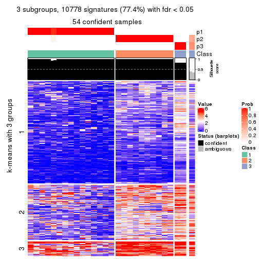
get_signatures(res, k = 4, scale_rows = FALSE)
get_signatures(res, k = 5, scale_rows = FALSE)
get_signatures(res, k = 6, scale_rows = FALSE)
Compare the overlap of signatures from different k:
compare_signatures(res)
get_signature() returns a data frame invisibly. TO get the list of signatures, the function
call should be assigned to a variable explicitly. In following code, if plot argument is set
to FALSE, no heatmap is plotted while only the differential analysis is performed.
# code only for demonstration
tb = get_signature(res, k = ..., plot = FALSE)
An example of the output of tb is:
#> which_row fdr mean_1 mean_2 scaled_mean_1 scaled_mean_2 km
#> 1 38 0.042760348 8.373488 9.131774 -0.5533452 0.5164555 1
#> 2 40 0.018707592 7.106213 8.469186 -0.6173731 0.5762149 1
#> 3 55 0.019134737 10.221463 11.207825 -0.6159697 0.5749050 1
#> 4 59 0.006059896 5.921854 7.869574 -0.6899429 0.6439467 1
#> 5 60 0.018055526 8.928898 10.211722 -0.6204761 0.5791110 1
#> 6 98 0.009384629 15.714769 14.887706 0.6635654 -0.6193277 2
...
The columns in tb are:
which_row: row indices corresponding to the input matrix.fdr: FDR for the differential test. mean_x: The mean value in group x.scaled_mean_x: The mean value in group x after rows are scaled.km: Row groups if k-means clustering is applied to rows.UMAP plot which shows how samples are separated.
dimension_reduction(res, k = 2, method = "UMAP")
dimension_reduction(res, k = 3, method = "UMAP")

dimension_reduction(res, k = 4, method = "UMAP")
dimension_reduction(res, k = 5, method = "UMAP")
dimension_reduction(res, k = 6, method = "UMAP")
Following heatmap shows how subgroups are split when increasing k:
collect_classes(res)
If matrix rows can be associated to genes, consider to use functional_enrichment(res,
...) to perform function enrichment for the signature genes. See this vignette for more detailed explanations.
The object with results only for a single top-value method and a single partition method can be extracted as:
res = res_list["ATC", "mclust"]
# you can also extract it by
# res = res_list["ATC:mclust"]
A summary of res and all the functions that can be applied to it:
res
#> A 'ConsensusPartition' object with k = 2, 3, 4, 5, 6.
#> On a matrix with 13917 rows and 56 columns.
#> Top rows (1000, 2000, 3000, 4000, 5000) are extracted by 'ATC' method.
#> Subgroups are detected by 'mclust' method.
#> Performed in total 1250 partitions by row resampling.
#> Best k for subgroups seems to be 2.
#>
#> Following methods can be applied to this 'ConsensusPartition' object:
#> [1] "cola_report" "collect_classes" "collect_plots"
#> [4] "collect_stats" "colnames" "compare_signatures"
#> [7] "consensus_heatmap" "dimension_reduction" "functional_enrichment"
#> [10] "get_anno_col" "get_anno" "get_classes"
#> [13] "get_consensus" "get_matrix" "get_membership"
#> [16] "get_param" "get_signatures" "get_stats"
#> [19] "is_best_k" "is_stable_k" "membership_heatmap"
#> [22] "ncol" "nrow" "plot_ecdf"
#> [25] "rownames" "select_partition_number" "show"
#> [28] "suggest_best_k" "test_to_known_factors"
collect_plots() function collects all the plots made from res for all k (number of partitions)
into one single page to provide an easy and fast comparison between different k.
collect_plots(res)
The plots are:
k and the heatmap of
predicted classes for each k.k.k.k.All the plots in panels can be made by individual functions and they are plotted later in this section.
select_partition_number() produces several plots showing different
statistics for choosing “optimized” k. There are following statistics:
k;k, the area increased is defined as \(A_k - A_{k-1}\).The detailed explanations of these statistics can be found in the cola vignette.
Generally speaking, lower PAC score, higher mean silhouette score or higher
concordance corresponds to better partition. Rand index and Jaccard index
measure how similar the current partition is compared to partition with k-1.
If they are too similar, we won't accept k is better than k-1.
select_partition_number(res)
The numeric values for all these statistics can be obtained by get_stats().
get_stats(res)
#> k 1-PAC mean_silhouette concordance area_increased Rand Jaccard
#> 2 2 1.000 0.982 0.988 0.4214 0.584 0.584
#> 3 3 0.441 0.852 0.866 0.2238 0.530 0.403
#> 4 4 0.631 0.773 0.887 0.3562 0.725 0.488
#> 5 5 0.796 0.773 0.862 0.0851 0.964 0.870
#> 6 6 0.841 0.821 0.922 0.0646 0.948 0.787
suggest_best_k() suggests the best \(k\) based on these statistics. The rules are as follows:
suggest_best_k(res)
#> [1] 2
Following shows the table of the partitions (You need to click the show/hide
code output link to see it). The membership matrix (columns with name p*)
is inferred by
clue::cl_consensus()
function with the SE method. Basically the value in the membership matrix
represents the probability to belong to a certain group. The finall class
label for an item is determined with the group with highest probability it
belongs to.
In get_classes() function, the entropy is calculated from the membership
matrix and the silhouette score is calculated from the consensus matrix.
cbind(get_classes(res, k = 2), get_membership(res, k = 2))
#> class entropy silhouette p1 p2
#> SRR1975508 2 0.0000 0.998 0.000 1.000
#> SRR1975507 2 0.0000 0.998 0.000 1.000
#> SRR1975506 2 0.0000 0.998 0.000 1.000
#> SRR1975505 2 0.0000 0.998 0.000 1.000
#> SRR1975503 1 0.0000 0.984 1.000 0.000
#> SRR1975504 1 0.0000 0.984 1.000 0.000
#> SRR1975501 1 0.0376 0.984 0.996 0.004
#> SRR1975502 1 0.0376 0.984 0.996 0.004
#> SRR1975499 1 0.0000 0.984 1.000 0.000
#> SRR1975500 1 0.0000 0.984 1.000 0.000
#> SRR1975497 1 0.0376 0.984 0.996 0.004
#> SRR1975498 1 0.0376 0.984 0.996 0.004
#> SRR1975493 1 0.3431 0.947 0.936 0.064
#> SRR1975494 1 0.3431 0.947 0.936 0.064
#> SRR1975495 1 0.0376 0.984 0.996 0.004
#> SRR1975496 1 0.0376 0.984 0.996 0.004
#> SRR1975491 1 0.0000 0.984 1.000 0.000
#> SRR1975492 1 0.0000 0.984 1.000 0.000
#> SRR1975489 1 0.0000 0.984 1.000 0.000
#> SRR1975490 1 0.0000 0.984 1.000 0.000
#> SRR1975487 1 0.0000 0.984 1.000 0.000
#> SRR1975488 1 0.0000 0.984 1.000 0.000
#> SRR1975485 1 0.0000 0.984 1.000 0.000
#> SRR1975486 1 0.0000 0.984 1.000 0.000
#> SRR1975483 1 0.0376 0.984 0.996 0.004
#> SRR1975484 1 0.0376 0.984 0.996 0.004
#> SRR1975481 1 0.0376 0.984 0.996 0.004
#> SRR1975482 1 0.0376 0.984 0.996 0.004
#> SRR1975477 2 0.0000 0.998 0.000 1.000
#> SRR1975478 2 0.0000 0.998 0.000 1.000
#> SRR1975479 1 0.0000 0.984 1.000 0.000
#> SRR1975480 1 0.0000 0.984 1.000 0.000
#> SRR1975475 1 0.0000 0.984 1.000 0.000
#> SRR1975476 1 0.0000 0.984 1.000 0.000
#> SRR1975473 2 0.1184 0.984 0.016 0.984
#> SRR1975474 2 0.1184 0.984 0.016 0.984
#> SRR1975471 1 0.0938 0.981 0.988 0.012
#> SRR1975472 1 0.0938 0.981 0.988 0.012
#> SRR1975469 1 0.0376 0.984 0.996 0.004
#> SRR1975470 1 0.0376 0.984 0.996 0.004
#> SRR1975467 1 0.1633 0.973 0.976 0.024
#> SRR1975468 1 0.1633 0.973 0.976 0.024
#> SRR1975465 1 0.3431 0.947 0.936 0.064
#> SRR1975466 1 0.3431 0.947 0.936 0.064
#> SRR1975463 1 0.3431 0.947 0.936 0.064
#> SRR1975464 1 0.3431 0.947 0.936 0.064
#> SRR1975461 2 0.0000 0.998 0.000 1.000
#> SRR1975462 2 0.0000 0.998 0.000 1.000
#> SRR1975459 1 0.3431 0.947 0.936 0.064
#> SRR1975460 1 0.3431 0.947 0.936 0.064
#> SRR1975457 2 0.0000 0.998 0.000 1.000
#> SRR1975458 2 0.0000 0.998 0.000 1.000
#> SRR1975455 2 0.0000 0.998 0.000 1.000
#> SRR1975456 2 0.0000 0.998 0.000 1.000
#> SRR1975453 2 0.0000 0.998 0.000 1.000
#> SRR1975454 2 0.0000 0.998 0.000 1.000
cbind(get_classes(res, k = 3), get_membership(res, k = 3))
#> class entropy silhouette p1 p2 p3
#> SRR1975508 3 0.153 1.000 0.000 0.040 0.960
#> SRR1975507 3 0.153 1.000 0.000 0.040 0.960
#> SRR1975506 3 0.153 1.000 0.000 0.040 0.960
#> SRR1975505 3 0.153 1.000 0.000 0.040 0.960
#> SRR1975503 1 0.288 0.857 0.904 0.096 0.000
#> SRR1975504 1 0.288 0.857 0.904 0.096 0.000
#> SRR1975501 2 0.546 0.821 0.184 0.788 0.028
#> SRR1975502 2 0.546 0.821 0.184 0.788 0.028
#> SRR1975499 1 0.000 0.970 1.000 0.000 0.000
#> SRR1975500 1 0.000 0.970 1.000 0.000 0.000
#> SRR1975497 2 0.568 0.741 0.316 0.684 0.000
#> SRR1975498 2 0.568 0.741 0.316 0.684 0.000
#> SRR1975493 2 0.359 0.808 0.088 0.892 0.020
#> SRR1975494 2 0.359 0.808 0.088 0.892 0.020
#> SRR1975495 2 0.533 0.821 0.184 0.792 0.024
#> SRR1975496 2 0.533 0.821 0.184 0.792 0.024
#> SRR1975491 2 0.573 0.748 0.324 0.676 0.000
#> SRR1975492 2 0.573 0.748 0.324 0.676 0.000
#> SRR1975489 1 0.000 0.970 1.000 0.000 0.000
#> SRR1975490 1 0.000 0.970 1.000 0.000 0.000
#> SRR1975487 1 0.000 0.970 1.000 0.000 0.000
#> SRR1975488 1 0.000 0.970 1.000 0.000 0.000
#> SRR1975485 1 0.000 0.970 1.000 0.000 0.000
#> SRR1975486 1 0.000 0.970 1.000 0.000 0.000
#> SRR1975483 2 0.533 0.821 0.184 0.792 0.024
#> SRR1975484 2 0.533 0.821 0.184 0.792 0.024
#> SRR1975481 2 0.533 0.821 0.184 0.792 0.024
#> SRR1975482 2 0.533 0.821 0.184 0.792 0.024
#> SRR1975477 2 0.298 0.809 0.024 0.920 0.056
#> SRR1975478 2 0.298 0.809 0.024 0.920 0.056
#> SRR1975479 1 0.000 0.970 1.000 0.000 0.000
#> SRR1975480 1 0.000 0.970 1.000 0.000 0.000
#> SRR1975475 1 0.103 0.950 0.976 0.024 0.000
#> SRR1975476 1 0.103 0.950 0.976 0.024 0.000
#> SRR1975473 2 0.298 0.809 0.024 0.920 0.056
#> SRR1975474 2 0.298 0.809 0.024 0.920 0.056
#> SRR1975471 2 0.535 0.823 0.176 0.796 0.028
#> SRR1975472 2 0.535 0.823 0.176 0.796 0.028
#> SRR1975469 2 0.533 0.821 0.184 0.792 0.024
#> SRR1975470 2 0.533 0.821 0.184 0.792 0.024
#> SRR1975467 2 0.603 0.789 0.272 0.712 0.016
#> SRR1975468 2 0.606 0.787 0.276 0.708 0.016
#> SRR1975465 2 0.336 0.811 0.084 0.900 0.016
#> SRR1975466 2 0.336 0.811 0.084 0.900 0.016
#> SRR1975463 2 0.336 0.811 0.084 0.900 0.016
#> SRR1975464 2 0.336 0.811 0.084 0.900 0.016
#> SRR1975461 2 0.424 0.761 0.000 0.824 0.176
#> SRR1975462 2 0.424 0.761 0.000 0.824 0.176
#> SRR1975459 2 0.336 0.811 0.084 0.900 0.016
#> SRR1975460 2 0.336 0.811 0.084 0.900 0.016
#> SRR1975457 2 0.305 0.807 0.020 0.916 0.064
#> SRR1975458 2 0.305 0.807 0.020 0.916 0.064
#> SRR1975455 2 0.305 0.807 0.020 0.916 0.064
#> SRR1975456 2 0.305 0.807 0.020 0.916 0.064
#> SRR1975453 2 0.418 0.762 0.000 0.828 0.172
#> SRR1975454 2 0.418 0.762 0.000 0.828 0.172
cbind(get_classes(res, k = 4), get_membership(res, k = 4))
#> class entropy silhouette p1 p2 p3 p4
#> SRR1975508 3 0.0000 1.0000 0.000 0.000 1.000 0.000
#> SRR1975507 3 0.0000 1.0000 0.000 0.000 1.000 0.000
#> SRR1975506 3 0.0000 1.0000 0.000 0.000 1.000 0.000
#> SRR1975505 3 0.0000 1.0000 0.000 0.000 1.000 0.000
#> SRR1975503 4 0.5116 0.7115 0.108 0.128 0.000 0.764
#> SRR1975504 4 0.5116 0.7115 0.108 0.128 0.000 0.764
#> SRR1975501 1 0.1022 0.9302 0.968 0.000 0.000 0.032
#> SRR1975502 1 0.1022 0.9302 0.968 0.000 0.000 0.032
#> SRR1975499 4 0.0707 0.8613 0.000 0.020 0.000 0.980
#> SRR1975500 4 0.0707 0.8613 0.000 0.020 0.000 0.980
#> SRR1975497 1 0.4356 0.6150 0.708 0.000 0.000 0.292
#> SRR1975498 1 0.4356 0.6150 0.708 0.000 0.000 0.292
#> SRR1975493 2 0.2011 0.7181 0.000 0.920 0.000 0.080
#> SRR1975494 2 0.2011 0.7181 0.000 0.920 0.000 0.080
#> SRR1975495 1 0.0921 0.9291 0.972 0.000 0.000 0.028
#> SRR1975496 1 0.0921 0.9291 0.972 0.000 0.000 0.028
#> SRR1975491 4 0.7315 0.3423 0.252 0.216 0.000 0.532
#> SRR1975492 4 0.7310 0.3437 0.256 0.212 0.000 0.532
#> SRR1975489 4 0.0000 0.8611 0.000 0.000 0.000 1.000
#> SRR1975490 4 0.0000 0.8611 0.000 0.000 0.000 1.000
#> SRR1975487 4 0.0000 0.8611 0.000 0.000 0.000 1.000
#> SRR1975488 4 0.0000 0.8611 0.000 0.000 0.000 1.000
#> SRR1975485 4 0.0000 0.8611 0.000 0.000 0.000 1.000
#> SRR1975486 4 0.0000 0.8611 0.000 0.000 0.000 1.000
#> SRR1975483 1 0.1022 0.9302 0.968 0.000 0.000 0.032
#> SRR1975484 1 0.1022 0.9302 0.968 0.000 0.000 0.032
#> SRR1975481 1 0.1022 0.9302 0.968 0.000 0.000 0.032
#> SRR1975482 1 0.1022 0.9302 0.968 0.000 0.000 0.032
#> SRR1975477 2 0.3790 0.7421 0.164 0.820 0.000 0.016
#> SRR1975478 2 0.3790 0.7421 0.164 0.820 0.000 0.016
#> SRR1975479 4 0.1888 0.8484 0.016 0.044 0.000 0.940
#> SRR1975480 4 0.1888 0.8484 0.016 0.044 0.000 0.940
#> SRR1975475 4 0.3013 0.8350 0.032 0.080 0.000 0.888
#> SRR1975476 4 0.3037 0.8352 0.036 0.076 0.000 0.888
#> SRR1975473 2 0.3790 0.7421 0.164 0.820 0.000 0.016
#> SRR1975474 2 0.3790 0.7421 0.164 0.820 0.000 0.016
#> SRR1975471 1 0.0000 0.9146 1.000 0.000 0.000 0.000
#> SRR1975472 1 0.0000 0.9146 1.000 0.000 0.000 0.000
#> SRR1975469 1 0.1022 0.9302 0.968 0.000 0.000 0.032
#> SRR1975470 1 0.1022 0.9302 0.968 0.000 0.000 0.032
#> SRR1975467 2 0.5500 -0.0385 0.016 0.520 0.000 0.464
#> SRR1975468 2 0.5500 -0.0385 0.016 0.520 0.000 0.464
#> SRR1975465 2 0.0188 0.7355 0.000 0.996 0.000 0.004
#> SRR1975466 2 0.0188 0.7355 0.000 0.996 0.000 0.004
#> SRR1975463 2 0.1302 0.7324 0.000 0.956 0.000 0.044
#> SRR1975464 2 0.1302 0.7324 0.000 0.956 0.000 0.044
#> SRR1975461 1 0.2081 0.8774 0.916 0.000 0.084 0.000
#> SRR1975462 1 0.2081 0.8774 0.916 0.000 0.084 0.000
#> SRR1975459 2 0.0188 0.7341 0.000 0.996 0.004 0.000
#> SRR1975460 2 0.0188 0.7341 0.000 0.996 0.004 0.000
#> SRR1975457 2 0.5220 0.5411 0.352 0.632 0.000 0.016
#> SRR1975458 2 0.5220 0.5411 0.352 0.632 0.000 0.016
#> SRR1975455 2 0.4980 0.6188 0.304 0.680 0.000 0.016
#> SRR1975456 2 0.4980 0.6188 0.304 0.680 0.000 0.016
#> SRR1975453 1 0.2081 0.8774 0.916 0.000 0.084 0.000
#> SRR1975454 1 0.2081 0.8774 0.916 0.000 0.084 0.000
cbind(get_classes(res, k = 5), get_membership(res, k = 5))
#> class entropy silhouette p1 p2 p3 p4 p5
#> SRR1975508 3 0.0000 1.0000 0.000 0.000 1.000 0.000 0.000
#> SRR1975507 3 0.0000 1.0000 0.000 0.000 1.000 0.000 0.000
#> SRR1975506 3 0.0000 1.0000 0.000 0.000 1.000 0.000 0.000
#> SRR1975505 3 0.0000 1.0000 0.000 0.000 1.000 0.000 0.000
#> SRR1975503 4 0.2959 0.8553 0.036 0.100 0.000 0.864 0.000
#> SRR1975504 4 0.2959 0.8553 0.036 0.100 0.000 0.864 0.000
#> SRR1975501 1 0.0162 0.8227 0.996 0.000 0.000 0.004 0.000
#> SRR1975502 1 0.0162 0.8227 0.996 0.000 0.000 0.004 0.000
#> SRR1975499 4 0.0404 0.9158 0.000 0.012 0.000 0.988 0.000
#> SRR1975500 4 0.0404 0.9158 0.000 0.012 0.000 0.988 0.000
#> SRR1975497 1 0.3949 0.4449 0.696 0.000 0.000 0.300 0.004
#> SRR1975498 1 0.3949 0.4449 0.696 0.000 0.000 0.300 0.004
#> SRR1975493 2 0.3196 0.7692 0.000 0.804 0.000 0.004 0.192
#> SRR1975494 2 0.3196 0.7692 0.000 0.804 0.000 0.004 0.192
#> SRR1975495 1 0.1638 0.7725 0.932 0.000 0.000 0.004 0.064
#> SRR1975496 1 0.1638 0.7725 0.932 0.000 0.000 0.004 0.064
#> SRR1975491 4 0.5040 0.5821 0.068 0.272 0.000 0.660 0.000
#> SRR1975492 4 0.5040 0.5821 0.068 0.272 0.000 0.660 0.000
#> SRR1975489 4 0.0162 0.9128 0.000 0.000 0.000 0.996 0.004
#> SRR1975490 4 0.0162 0.9128 0.000 0.000 0.000 0.996 0.004
#> SRR1975487 4 0.0000 0.9143 0.000 0.000 0.000 1.000 0.000
#> SRR1975488 4 0.0000 0.9143 0.000 0.000 0.000 1.000 0.000
#> SRR1975485 4 0.0162 0.9128 0.000 0.000 0.000 0.996 0.004
#> SRR1975486 4 0.0162 0.9128 0.000 0.000 0.000 0.996 0.004
#> SRR1975483 1 0.0324 0.8215 0.992 0.000 0.000 0.004 0.004
#> SRR1975484 1 0.0324 0.8215 0.992 0.000 0.000 0.004 0.004
#> SRR1975481 1 0.0162 0.8227 0.996 0.000 0.000 0.004 0.000
#> SRR1975482 1 0.0162 0.8227 0.996 0.000 0.000 0.004 0.000
#> SRR1975477 2 0.1638 0.7808 0.064 0.932 0.000 0.004 0.000
#> SRR1975478 2 0.1638 0.7808 0.064 0.932 0.000 0.004 0.000
#> SRR1975479 4 0.0566 0.9159 0.004 0.012 0.000 0.984 0.000
#> SRR1975480 4 0.0566 0.9159 0.004 0.012 0.000 0.984 0.000
#> SRR1975475 4 0.1741 0.8991 0.024 0.040 0.000 0.936 0.000
#> SRR1975476 4 0.1741 0.8991 0.024 0.040 0.000 0.936 0.000
#> SRR1975473 2 0.1638 0.7808 0.064 0.932 0.000 0.004 0.000
#> SRR1975474 2 0.1638 0.7808 0.064 0.932 0.000 0.004 0.000
#> SRR1975471 1 0.4060 0.1772 0.640 0.000 0.000 0.000 0.360
#> SRR1975472 1 0.4060 0.1772 0.640 0.000 0.000 0.000 0.360
#> SRR1975469 1 0.0162 0.8227 0.996 0.000 0.000 0.004 0.000
#> SRR1975470 1 0.0162 0.8227 0.996 0.000 0.000 0.004 0.000
#> SRR1975467 2 0.5712 -0.0951 0.028 0.488 0.000 0.452 0.032
#> SRR1975468 2 0.5712 -0.0951 0.028 0.488 0.000 0.452 0.032
#> SRR1975465 2 0.3480 0.7569 0.000 0.752 0.000 0.000 0.248
#> SRR1975466 2 0.3480 0.7569 0.000 0.752 0.000 0.000 0.248
#> SRR1975463 2 0.3480 0.7569 0.000 0.752 0.000 0.000 0.248
#> SRR1975464 2 0.3480 0.7569 0.000 0.752 0.000 0.000 0.248
#> SRR1975461 5 0.4000 0.9910 0.228 0.000 0.024 0.000 0.748
#> SRR1975462 5 0.4000 0.9910 0.228 0.000 0.024 0.000 0.748
#> SRR1975459 2 0.3480 0.7569 0.000 0.752 0.000 0.000 0.248
#> SRR1975460 2 0.3480 0.7569 0.000 0.752 0.000 0.000 0.248
#> SRR1975457 2 0.1864 0.7780 0.068 0.924 0.000 0.004 0.004
#> SRR1975458 2 0.1864 0.7780 0.068 0.924 0.000 0.004 0.004
#> SRR1975455 2 0.1638 0.7808 0.064 0.932 0.000 0.004 0.000
#> SRR1975456 2 0.1731 0.7804 0.060 0.932 0.000 0.004 0.004
#> SRR1975453 5 0.3878 0.9909 0.236 0.000 0.016 0.000 0.748
#> SRR1975454 5 0.3878 0.9909 0.236 0.000 0.016 0.000 0.748
cbind(get_classes(res, k = 6), get_membership(res, k = 6))
#> class entropy silhouette p1 p2 p3 p4 p5 p6
#> SRR1975508 3 0.000 1.000 0.000 0.00 1 0.000 0.000 0.000
#> SRR1975507 3 0.000 1.000 0.000 0.00 1 0.000 0.000 0.000
#> SRR1975506 3 0.000 1.000 0.000 0.00 1 0.000 0.000 0.000
#> SRR1975505 3 0.000 1.000 0.000 0.00 1 0.000 0.000 0.000
#> SRR1975503 4 0.256 0.807 0.004 0.00 0 0.840 0.156 0.000
#> SRR1975504 4 0.256 0.807 0.004 0.00 0 0.840 0.156 0.000
#> SRR1975501 1 0.000 0.859 1.000 0.00 0 0.000 0.000 0.000
#> SRR1975502 1 0.000 0.859 1.000 0.00 0 0.000 0.000 0.000
#> SRR1975499 4 0.000 0.900 0.000 0.00 0 1.000 0.000 0.000
#> SRR1975500 4 0.000 0.900 0.000 0.00 0 1.000 0.000 0.000
#> SRR1975497 1 0.348 0.549 0.684 0.00 0 0.316 0.000 0.000
#> SRR1975498 1 0.348 0.549 0.684 0.00 0 0.316 0.000 0.000
#> SRR1975493 2 0.371 0.433 0.000 0.62 0 0.000 0.380 0.000
#> SRR1975494 2 0.371 0.433 0.000 0.62 0 0.000 0.380 0.000
#> SRR1975495 1 0.107 0.839 0.952 0.00 0 0.000 0.000 0.048
#> SRR1975496 1 0.107 0.839 0.952 0.00 0 0.000 0.000 0.048
#> SRR1975491 4 0.422 0.407 0.020 0.00 0 0.592 0.388 0.000
#> SRR1975492 4 0.422 0.407 0.020 0.00 0 0.592 0.388 0.000
#> SRR1975489 4 0.000 0.900 0.000 0.00 0 1.000 0.000 0.000
#> SRR1975490 4 0.000 0.900 0.000 0.00 0 1.000 0.000 0.000
#> SRR1975487 4 0.000 0.900 0.000 0.00 0 1.000 0.000 0.000
#> SRR1975488 4 0.000 0.900 0.000 0.00 0 1.000 0.000 0.000
#> SRR1975485 4 0.000 0.900 0.000 0.00 0 1.000 0.000 0.000
#> SRR1975486 4 0.000 0.900 0.000 0.00 0 1.000 0.000 0.000
#> SRR1975483 1 0.026 0.858 0.992 0.00 0 0.000 0.000 0.008
#> SRR1975484 1 0.026 0.858 0.992 0.00 0 0.000 0.000 0.008
#> SRR1975481 1 0.000 0.859 1.000 0.00 0 0.000 0.000 0.000
#> SRR1975482 1 0.000 0.859 1.000 0.00 0 0.000 0.000 0.000
#> SRR1975477 5 0.000 0.908 0.000 0.00 0 0.000 1.000 0.000
#> SRR1975478 5 0.000 0.908 0.000 0.00 0 0.000 1.000 0.000
#> SRR1975479 4 0.000 0.900 0.000 0.00 0 1.000 0.000 0.000
#> SRR1975480 4 0.000 0.900 0.000 0.00 0 1.000 0.000 0.000
#> SRR1975475 4 0.181 0.862 0.004 0.00 0 0.908 0.088 0.000
#> SRR1975476 4 0.181 0.862 0.004 0.00 0 0.908 0.088 0.000
#> SRR1975473 5 0.000 0.908 0.000 0.00 0 0.000 1.000 0.000
#> SRR1975474 5 0.000 0.908 0.000 0.00 0 0.000 1.000 0.000
#> SRR1975471 1 0.377 0.377 0.596 0.00 0 0.000 0.000 0.404
#> SRR1975472 1 0.377 0.377 0.596 0.00 0 0.000 0.000 0.404
#> SRR1975469 1 0.000 0.859 1.000 0.00 0 0.000 0.000 0.000
#> SRR1975470 1 0.000 0.859 1.000 0.00 0 0.000 0.000 0.000
#> SRR1975467 5 0.516 0.555 0.004 0.16 0 0.200 0.636 0.000
#> SRR1975468 5 0.516 0.555 0.004 0.16 0 0.200 0.636 0.000
#> SRR1975465 2 0.000 0.861 0.000 1.00 0 0.000 0.000 0.000
#> SRR1975466 2 0.000 0.861 0.000 1.00 0 0.000 0.000 0.000
#> SRR1975463 2 0.000 0.861 0.000 1.00 0 0.000 0.000 0.000
#> SRR1975464 2 0.000 0.861 0.000 1.00 0 0.000 0.000 0.000
#> SRR1975461 6 0.000 1.000 0.000 0.00 0 0.000 0.000 1.000
#> SRR1975462 6 0.000 1.000 0.000 0.00 0 0.000 0.000 1.000
#> SRR1975459 2 0.000 0.861 0.000 1.00 0 0.000 0.000 0.000
#> SRR1975460 2 0.000 0.861 0.000 1.00 0 0.000 0.000 0.000
#> SRR1975457 5 0.000 0.908 0.000 0.00 0 0.000 1.000 0.000
#> SRR1975458 5 0.000 0.908 0.000 0.00 0 0.000 1.000 0.000
#> SRR1975455 5 0.000 0.908 0.000 0.00 0 0.000 1.000 0.000
#> SRR1975456 5 0.000 0.908 0.000 0.00 0 0.000 1.000 0.000
#> SRR1975453 6 0.000 1.000 0.000 0.00 0 0.000 0.000 1.000
#> SRR1975454 6 0.000 1.000 0.000 0.00 0 0.000 0.000 1.000
Heatmaps for the consensus matrix. It visualizes the probability of two samples to be in a same group.
consensus_heatmap(res, k = 2)
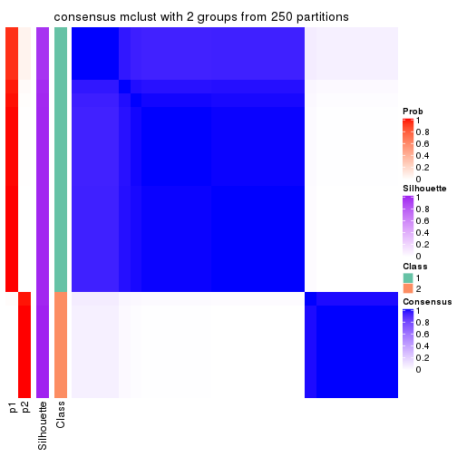
consensus_heatmap(res, k = 3)
consensus_heatmap(res, k = 4)
consensus_heatmap(res, k = 5)
consensus_heatmap(res, k = 6)

Heatmaps for the membership of samples in all partitions to see how consistent they are:
membership_heatmap(res, k = 2)
membership_heatmap(res, k = 3)

membership_heatmap(res, k = 4)
membership_heatmap(res, k = 5)
membership_heatmap(res, k = 6)
As soon as we have had the classes for columns, we can look for signatures which are significantly different between classes which can be candidate marks for certain classes. Following are the heatmaps for signatures.
Signature heatmaps where rows are scaled:
get_signatures(res, k = 2)
get_signatures(res, k = 3)
get_signatures(res, k = 4)
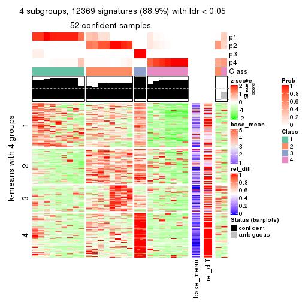
get_signatures(res, k = 5)
get_signatures(res, k = 6)
Signature heatmaps where rows are not scaled:
get_signatures(res, k = 2, scale_rows = FALSE)
get_signatures(res, k = 3, scale_rows = FALSE)
get_signatures(res, k = 4, scale_rows = FALSE)
get_signatures(res, k = 5, scale_rows = FALSE)
get_signatures(res, k = 6, scale_rows = FALSE)
Compare the overlap of signatures from different k:
compare_signatures(res)
get_signature() returns a data frame invisibly. TO get the list of signatures, the function
call should be assigned to a variable explicitly. In following code, if plot argument is set
to FALSE, no heatmap is plotted while only the differential analysis is performed.
# code only for demonstration
tb = get_signature(res, k = ..., plot = FALSE)
An example of the output of tb is:
#> which_row fdr mean_1 mean_2 scaled_mean_1 scaled_mean_2 km
#> 1 38 0.042760348 8.373488 9.131774 -0.5533452 0.5164555 1
#> 2 40 0.018707592 7.106213 8.469186 -0.6173731 0.5762149 1
#> 3 55 0.019134737 10.221463 11.207825 -0.6159697 0.5749050 1
#> 4 59 0.006059896 5.921854 7.869574 -0.6899429 0.6439467 1
#> 5 60 0.018055526 8.928898 10.211722 -0.6204761 0.5791110 1
#> 6 98 0.009384629 15.714769 14.887706 0.6635654 -0.6193277 2
...
The columns in tb are:
which_row: row indices corresponding to the input matrix.fdr: FDR for the differential test. mean_x: The mean value in group x.scaled_mean_x: The mean value in group x after rows are scaled.km: Row groups if k-means clustering is applied to rows.UMAP plot which shows how samples are separated.
dimension_reduction(res, k = 2, method = "UMAP")
dimension_reduction(res, k = 3, method = "UMAP")
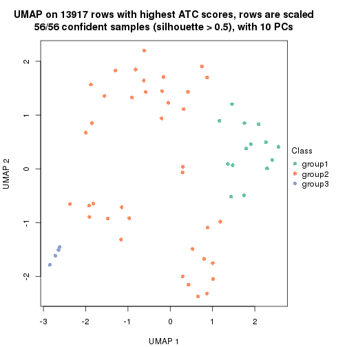
dimension_reduction(res, k = 4, method = "UMAP")
dimension_reduction(res, k = 5, method = "UMAP")
dimension_reduction(res, k = 6, method = "UMAP")
Following heatmap shows how subgroups are split when increasing k:
collect_classes(res)
If matrix rows can be associated to genes, consider to use functional_enrichment(res,
...) to perform function enrichment for the signature genes. See this vignette for more detailed explanations.
The object with results only for a single top-value method and a single partition method can be extracted as:
res = res_list["ATC", "NMF"]
# you can also extract it by
# res = res_list["ATC:NMF"]
A summary of res and all the functions that can be applied to it:
res
#> A 'ConsensusPartition' object with k = 2, 3, 4, 5, 6.
#> On a matrix with 13917 rows and 56 columns.
#> Top rows (1000, 2000, 3000, 4000, 5000) are extracted by 'ATC' method.
#> Subgroups are detected by 'NMF' method.
#> Performed in total 1250 partitions by row resampling.
#> Best k for subgroups seems to be 4.
#>
#> Following methods can be applied to this 'ConsensusPartition' object:
#> [1] "cola_report" "collect_classes" "collect_plots"
#> [4] "collect_stats" "colnames" "compare_signatures"
#> [7] "consensus_heatmap" "dimension_reduction" "functional_enrichment"
#> [10] "get_anno_col" "get_anno" "get_classes"
#> [13] "get_consensus" "get_matrix" "get_membership"
#> [16] "get_param" "get_signatures" "get_stats"
#> [19] "is_best_k" "is_stable_k" "membership_heatmap"
#> [22] "ncol" "nrow" "plot_ecdf"
#> [25] "rownames" "select_partition_number" "show"
#> [28] "suggest_best_k" "test_to_known_factors"
collect_plots() function collects all the plots made from res for all k (number of partitions)
into one single page to provide an easy and fast comparison between different k.
collect_plots(res)
The plots are:
k and the heatmap of
predicted classes for each k.k.k.k.All the plots in panels can be made by individual functions and they are plotted later in this section.
select_partition_number() produces several plots showing different
statistics for choosing “optimized” k. There are following statistics:
k;k, the area increased is defined as \(A_k - A_{k-1}\).The detailed explanations of these statistics can be found in the cola vignette.
Generally speaking, lower PAC score, higher mean silhouette score or higher
concordance corresponds to better partition. Rand index and Jaccard index
measure how similar the current partition is compared to partition with k-1.
If they are too similar, we won't accept k is better than k-1.
select_partition_number(res)
The numeric values for all these statistics can be obtained by get_stats().
get_stats(res)
#> k 1-PAC mean_silhouette concordance area_increased Rand Jaccard
#> 2 2 0.285 0.629 0.736 0.4461 0.532 0.532
#> 3 3 0.871 0.886 0.957 0.4233 0.792 0.624
#> 4 4 0.971 0.937 0.966 0.1543 0.821 0.558
#> 5 5 0.794 0.755 0.854 0.0682 0.958 0.845
#> 6 6 0.757 0.655 0.783 0.0516 0.956 0.813
suggest_best_k() suggests the best \(k\) based on these statistics. The rules are as follows:
suggest_best_k(res)
#> [1] 4
Following shows the table of the partitions (You need to click the show/hide
code output link to see it). The membership matrix (columns with name p*)
is inferred by
clue::cl_consensus()
function with the SE method. Basically the value in the membership matrix
represents the probability to belong to a certain group. The finall class
label for an item is determined with the group with highest probability it
belongs to.
In get_classes() function, the entropy is calculated from the membership
matrix and the silhouette score is calculated from the consensus matrix.
cbind(get_classes(res, k = 2), get_membership(res, k = 2))
#> class entropy silhouette p1 p2
#> SRR1975508 1 0.9775 0.5208 0.588 0.412
#> SRR1975507 1 0.9775 0.5208 0.588 0.412
#> SRR1975506 1 0.9775 0.5208 0.588 0.412
#> SRR1975505 1 0.9775 0.5208 0.588 0.412
#> SRR1975503 1 0.0376 0.7151 0.996 0.004
#> SRR1975504 1 0.0376 0.7151 0.996 0.004
#> SRR1975501 2 0.9754 0.7730 0.408 0.592
#> SRR1975502 2 0.9754 0.7730 0.408 0.592
#> SRR1975499 1 0.4562 0.6361 0.904 0.096
#> SRR1975500 1 0.4690 0.6301 0.900 0.100
#> SRR1975497 2 0.9754 0.7730 0.408 0.592
#> SRR1975498 2 0.9754 0.7730 0.408 0.592
#> SRR1975493 1 0.3584 0.6695 0.932 0.068
#> SRR1975494 1 0.3431 0.6736 0.936 0.064
#> SRR1975495 2 0.9754 0.7730 0.408 0.592
#> SRR1975496 2 0.9754 0.7730 0.408 0.592
#> SRR1975491 1 0.7219 0.4123 0.800 0.200
#> SRR1975492 1 0.7219 0.4123 0.800 0.200
#> SRR1975489 1 0.7453 0.6491 0.788 0.212
#> SRR1975490 1 0.7950 0.6324 0.760 0.240
#> SRR1975487 1 0.1633 0.7222 0.976 0.024
#> SRR1975488 1 0.2043 0.7232 0.968 0.032
#> SRR1975485 1 0.5519 0.7011 0.872 0.128
#> SRR1975486 1 0.8386 0.6195 0.732 0.268
#> SRR1975483 2 0.9732 0.7723 0.404 0.596
#> SRR1975484 2 0.9732 0.7723 0.404 0.596
#> SRR1975481 2 0.9754 0.7730 0.408 0.592
#> SRR1975482 2 0.9754 0.7730 0.408 0.592
#> SRR1975477 1 0.9732 0.5265 0.596 0.404
#> SRR1975478 1 0.9710 0.5294 0.600 0.400
#> SRR1975479 1 0.0938 0.7117 0.988 0.012
#> SRR1975480 1 0.0672 0.7136 0.992 0.008
#> SRR1975475 1 0.2603 0.6911 0.956 0.044
#> SRR1975476 1 0.2603 0.6911 0.956 0.044
#> SRR1975473 1 0.4939 0.7097 0.892 0.108
#> SRR1975474 1 0.4939 0.7097 0.892 0.108
#> SRR1975471 2 0.9732 0.7723 0.404 0.596
#> SRR1975472 2 0.9732 0.7723 0.404 0.596
#> SRR1975469 2 0.9754 0.7730 0.408 0.592
#> SRR1975470 2 0.9754 0.7730 0.408 0.592
#> SRR1975467 1 0.4562 0.6362 0.904 0.096
#> SRR1975468 1 0.4298 0.6467 0.912 0.088
#> SRR1975465 1 0.3431 0.7213 0.936 0.064
#> SRR1975466 1 0.3431 0.7213 0.936 0.064
#> SRR1975463 1 0.4690 0.6299 0.900 0.100
#> SRR1975464 1 0.4298 0.6473 0.912 0.088
#> SRR1975461 2 0.7056 0.2323 0.192 0.808
#> SRR1975462 2 0.7056 0.2323 0.192 0.808
#> SRR1975459 1 0.2948 0.7236 0.948 0.052
#> SRR1975460 1 0.2948 0.7236 0.948 0.052
#> SRR1975457 2 0.8909 -0.0111 0.308 0.692
#> SRR1975458 2 0.8955 -0.0220 0.312 0.688
#> SRR1975455 1 0.9815 0.5134 0.580 0.420
#> SRR1975456 1 0.9815 0.5134 0.580 0.420
#> SRR1975453 2 0.6973 0.6004 0.188 0.812
#> SRR1975454 2 0.6973 0.6004 0.188 0.812
cbind(get_classes(res, k = 3), get_membership(res, k = 3))
#> class entropy silhouette p1 p2 p3
#> SRR1975508 3 0.0000 0.8963 0.000 0.000 1.000
#> SRR1975507 3 0.0000 0.8963 0.000 0.000 1.000
#> SRR1975506 3 0.0000 0.8963 0.000 0.000 1.000
#> SRR1975505 3 0.0000 0.8963 0.000 0.000 1.000
#> SRR1975503 2 0.0000 0.9368 0.000 1.000 0.000
#> SRR1975504 2 0.0000 0.9368 0.000 1.000 0.000
#> SRR1975501 1 0.0000 1.0000 1.000 0.000 0.000
#> SRR1975502 1 0.0000 1.0000 1.000 0.000 0.000
#> SRR1975499 2 0.0000 0.9368 0.000 1.000 0.000
#> SRR1975500 2 0.0000 0.9368 0.000 1.000 0.000
#> SRR1975497 1 0.0000 1.0000 1.000 0.000 0.000
#> SRR1975498 1 0.0000 1.0000 1.000 0.000 0.000
#> SRR1975493 2 0.0000 0.9368 0.000 1.000 0.000
#> SRR1975494 2 0.0000 0.9368 0.000 1.000 0.000
#> SRR1975495 1 0.0000 1.0000 1.000 0.000 0.000
#> SRR1975496 1 0.0000 1.0000 1.000 0.000 0.000
#> SRR1975491 2 0.5431 0.6021 0.284 0.716 0.000
#> SRR1975492 2 0.5431 0.6021 0.284 0.716 0.000
#> SRR1975489 3 0.6302 0.0853 0.000 0.480 0.520
#> SRR1975490 3 0.6291 0.1276 0.000 0.468 0.532
#> SRR1975487 2 0.0000 0.9368 0.000 1.000 0.000
#> SRR1975488 2 0.0000 0.9368 0.000 1.000 0.000
#> SRR1975485 2 0.2796 0.8552 0.000 0.908 0.092
#> SRR1975486 2 0.3752 0.7963 0.000 0.856 0.144
#> SRR1975483 1 0.0000 1.0000 1.000 0.000 0.000
#> SRR1975484 1 0.0000 1.0000 1.000 0.000 0.000
#> SRR1975481 1 0.0000 1.0000 1.000 0.000 0.000
#> SRR1975482 1 0.0000 1.0000 1.000 0.000 0.000
#> SRR1975477 2 0.5678 0.5114 0.000 0.684 0.316
#> SRR1975478 2 0.5678 0.5114 0.000 0.684 0.316
#> SRR1975479 2 0.0000 0.9368 0.000 1.000 0.000
#> SRR1975480 2 0.0000 0.9368 0.000 1.000 0.000
#> SRR1975475 2 0.0000 0.9368 0.000 1.000 0.000
#> SRR1975476 2 0.0000 0.9368 0.000 1.000 0.000
#> SRR1975473 2 0.0424 0.9314 0.000 0.992 0.008
#> SRR1975474 2 0.0424 0.9314 0.000 0.992 0.008
#> SRR1975471 1 0.0000 1.0000 1.000 0.000 0.000
#> SRR1975472 1 0.0000 1.0000 1.000 0.000 0.000
#> SRR1975469 1 0.0000 1.0000 1.000 0.000 0.000
#> SRR1975470 1 0.0000 1.0000 1.000 0.000 0.000
#> SRR1975467 2 0.0000 0.9368 0.000 1.000 0.000
#> SRR1975468 2 0.0000 0.9368 0.000 1.000 0.000
#> SRR1975465 2 0.0000 0.9368 0.000 1.000 0.000
#> SRR1975466 2 0.0000 0.9368 0.000 1.000 0.000
#> SRR1975463 2 0.0000 0.9368 0.000 1.000 0.000
#> SRR1975464 2 0.0000 0.9368 0.000 1.000 0.000
#> SRR1975461 3 0.0424 0.8908 0.008 0.000 0.992
#> SRR1975462 3 0.0424 0.8908 0.008 0.000 0.992
#> SRR1975459 2 0.0000 0.9368 0.000 1.000 0.000
#> SRR1975460 2 0.0000 0.9368 0.000 1.000 0.000
#> SRR1975457 3 0.0000 0.8963 0.000 0.000 1.000
#> SRR1975458 3 0.0000 0.8963 0.000 0.000 1.000
#> SRR1975455 3 0.0000 0.8963 0.000 0.000 1.000
#> SRR1975456 3 0.0000 0.8963 0.000 0.000 1.000
#> SRR1975453 1 0.0000 1.0000 1.000 0.000 0.000
#> SRR1975454 1 0.0000 1.0000 1.000 0.000 0.000
cbind(get_classes(res, k = 4), get_membership(res, k = 4))
#> class entropy silhouette p1 p2 p3 p4
#> SRR1975508 3 0.0188 0.992 0.000 0.000 0.996 0.004
#> SRR1975507 3 0.0188 0.992 0.000 0.000 0.996 0.004
#> SRR1975506 3 0.0188 0.992 0.000 0.000 0.996 0.004
#> SRR1975505 3 0.0188 0.992 0.000 0.000 0.996 0.004
#> SRR1975503 2 0.1716 0.935 0.000 0.936 0.000 0.064
#> SRR1975504 2 0.1716 0.935 0.000 0.936 0.000 0.064
#> SRR1975501 1 0.0336 0.991 0.992 0.008 0.000 0.000
#> SRR1975502 1 0.0188 0.995 0.996 0.004 0.000 0.000
#> SRR1975499 2 0.1637 0.938 0.000 0.940 0.000 0.060
#> SRR1975500 2 0.1474 0.942 0.000 0.948 0.000 0.052
#> SRR1975497 1 0.0000 0.998 1.000 0.000 0.000 0.000
#> SRR1975498 1 0.0000 0.998 1.000 0.000 0.000 0.000
#> SRR1975493 2 0.1474 0.942 0.000 0.948 0.000 0.052
#> SRR1975494 2 0.1474 0.942 0.000 0.948 0.000 0.052
#> SRR1975495 1 0.0000 0.998 1.000 0.000 0.000 0.000
#> SRR1975496 1 0.0000 0.998 1.000 0.000 0.000 0.000
#> SRR1975491 2 0.4466 0.765 0.180 0.784 0.000 0.036
#> SRR1975492 2 0.4418 0.761 0.184 0.784 0.000 0.032
#> SRR1975489 4 0.0000 0.926 0.000 0.000 0.000 1.000
#> SRR1975490 4 0.0000 0.926 0.000 0.000 0.000 1.000
#> SRR1975487 2 0.0657 0.949 0.000 0.984 0.004 0.012
#> SRR1975488 2 0.0657 0.949 0.000 0.984 0.004 0.012
#> SRR1975485 4 0.1637 0.887 0.000 0.060 0.000 0.940
#> SRR1975486 4 0.0921 0.914 0.000 0.028 0.000 0.972
#> SRR1975483 1 0.0000 0.998 1.000 0.000 0.000 0.000
#> SRR1975484 1 0.0000 0.998 1.000 0.000 0.000 0.000
#> SRR1975481 1 0.0000 0.998 1.000 0.000 0.000 0.000
#> SRR1975482 1 0.0000 0.998 1.000 0.000 0.000 0.000
#> SRR1975477 4 0.0188 0.926 0.000 0.000 0.004 0.996
#> SRR1975478 4 0.0188 0.926 0.000 0.000 0.004 0.996
#> SRR1975479 4 0.0188 0.926 0.000 0.004 0.000 0.996
#> SRR1975480 4 0.0336 0.925 0.000 0.008 0.000 0.992
#> SRR1975475 4 0.4543 0.543 0.000 0.324 0.000 0.676
#> SRR1975476 4 0.4522 0.552 0.000 0.320 0.000 0.680
#> SRR1975473 4 0.0188 0.926 0.000 0.004 0.000 0.996
#> SRR1975474 4 0.0188 0.926 0.000 0.004 0.000 0.996
#> SRR1975471 1 0.0000 0.998 1.000 0.000 0.000 0.000
#> SRR1975472 1 0.0000 0.998 1.000 0.000 0.000 0.000
#> SRR1975469 1 0.0000 0.998 1.000 0.000 0.000 0.000
#> SRR1975470 1 0.0000 0.998 1.000 0.000 0.000 0.000
#> SRR1975467 2 0.0469 0.950 0.000 0.988 0.000 0.012
#> SRR1975468 2 0.0469 0.950 0.000 0.988 0.000 0.012
#> SRR1975465 2 0.0188 0.945 0.000 0.996 0.004 0.000
#> SRR1975466 2 0.0188 0.945 0.000 0.996 0.004 0.000
#> SRR1975463 2 0.0592 0.950 0.000 0.984 0.000 0.016
#> SRR1975464 2 0.0592 0.950 0.000 0.984 0.000 0.016
#> SRR1975461 3 0.0707 0.984 0.000 0.020 0.980 0.000
#> SRR1975462 3 0.0707 0.984 0.000 0.020 0.980 0.000
#> SRR1975459 2 0.0188 0.945 0.000 0.996 0.004 0.000
#> SRR1975460 2 0.0188 0.945 0.000 0.996 0.004 0.000
#> SRR1975457 4 0.0921 0.914 0.000 0.000 0.028 0.972
#> SRR1975458 4 0.0921 0.914 0.000 0.000 0.028 0.972
#> SRR1975455 4 0.1211 0.905 0.000 0.000 0.040 0.960
#> SRR1975456 4 0.1211 0.905 0.000 0.000 0.040 0.960
#> SRR1975453 1 0.0336 0.992 0.992 0.000 0.008 0.000
#> SRR1975454 1 0.0336 0.992 0.992 0.000 0.008 0.000
cbind(get_classes(res, k = 5), get_membership(res, k = 5))
#> class entropy silhouette p1 p2 p3 p4 p5
#> SRR1975508 3 0.0162 0.967 0.000 0.000 0.996 0.004 0.000
#> SRR1975507 3 0.0162 0.967 0.000 0.000 0.996 0.004 0.000
#> SRR1975506 3 0.0162 0.967 0.000 0.000 0.996 0.004 0.000
#> SRR1975505 3 0.0162 0.967 0.000 0.000 0.996 0.004 0.000
#> SRR1975503 2 0.3266 0.754 0.000 0.796 0.000 0.004 0.200
#> SRR1975504 2 0.3266 0.754 0.000 0.796 0.000 0.004 0.200
#> SRR1975501 1 0.4157 0.718 0.716 0.020 0.000 0.000 0.264
#> SRR1975502 1 0.4157 0.718 0.716 0.020 0.000 0.000 0.264
#> SRR1975499 2 0.4251 0.513 0.000 0.624 0.000 0.004 0.372
#> SRR1975500 2 0.4251 0.513 0.000 0.624 0.000 0.004 0.372
#> SRR1975497 1 0.2074 0.873 0.896 0.000 0.000 0.000 0.104
#> SRR1975498 1 0.2074 0.873 0.896 0.000 0.000 0.000 0.104
#> SRR1975493 2 0.1270 0.835 0.000 0.948 0.000 0.000 0.052
#> SRR1975494 2 0.1270 0.835 0.000 0.948 0.000 0.000 0.052
#> SRR1975495 1 0.1043 0.877 0.960 0.000 0.000 0.000 0.040
#> SRR1975496 1 0.1043 0.877 0.960 0.000 0.000 0.000 0.040
#> SRR1975491 5 0.5073 0.430 0.100 0.212 0.000 0.000 0.688
#> SRR1975492 5 0.5073 0.430 0.100 0.212 0.000 0.000 0.688
#> SRR1975489 4 0.3167 0.726 0.000 0.004 0.004 0.820 0.172
#> SRR1975490 4 0.3167 0.726 0.000 0.004 0.004 0.820 0.172
#> SRR1975487 2 0.3990 0.616 0.000 0.688 0.000 0.004 0.308
#> SRR1975488 2 0.3969 0.626 0.000 0.692 0.004 0.000 0.304
#> SRR1975485 4 0.5216 0.293 0.000 0.040 0.004 0.568 0.388
#> SRR1975486 4 0.5068 0.330 0.000 0.032 0.004 0.580 0.384
#> SRR1975483 1 0.1410 0.884 0.940 0.000 0.000 0.000 0.060
#> SRR1975484 1 0.1410 0.884 0.940 0.000 0.000 0.000 0.060
#> SRR1975481 1 0.2732 0.851 0.840 0.000 0.000 0.000 0.160
#> SRR1975482 1 0.2732 0.851 0.840 0.000 0.000 0.000 0.160
#> SRR1975477 4 0.0162 0.799 0.000 0.004 0.000 0.996 0.000
#> SRR1975478 4 0.0162 0.799 0.000 0.004 0.000 0.996 0.000
#> SRR1975479 4 0.4201 0.545 0.000 0.008 0.000 0.664 0.328
#> SRR1975480 4 0.4201 0.545 0.000 0.008 0.000 0.664 0.328
#> SRR1975475 5 0.6552 0.226 0.000 0.200 0.000 0.388 0.412
#> SRR1975476 5 0.6518 0.206 0.000 0.192 0.000 0.396 0.412
#> SRR1975473 4 0.0290 0.799 0.000 0.008 0.000 0.992 0.000
#> SRR1975474 4 0.0290 0.799 0.000 0.008 0.000 0.992 0.000
#> SRR1975471 1 0.2230 0.850 0.884 0.000 0.000 0.000 0.116
#> SRR1975472 1 0.2230 0.850 0.884 0.000 0.000 0.000 0.116
#> SRR1975469 1 0.1671 0.881 0.924 0.000 0.000 0.000 0.076
#> SRR1975470 1 0.1671 0.881 0.924 0.000 0.000 0.000 0.076
#> SRR1975467 2 0.0865 0.841 0.000 0.972 0.000 0.004 0.024
#> SRR1975468 2 0.0865 0.841 0.000 0.972 0.000 0.004 0.024
#> SRR1975465 2 0.0162 0.840 0.000 0.996 0.000 0.000 0.004
#> SRR1975466 2 0.0162 0.840 0.000 0.996 0.000 0.000 0.004
#> SRR1975463 2 0.0162 0.840 0.000 0.996 0.000 0.000 0.004
#> SRR1975464 2 0.0162 0.840 0.000 0.996 0.000 0.000 0.004
#> SRR1975461 3 0.1952 0.934 0.004 0.000 0.912 0.000 0.084
#> SRR1975462 3 0.1952 0.934 0.004 0.000 0.912 0.000 0.084
#> SRR1975459 2 0.0510 0.836 0.000 0.984 0.000 0.000 0.016
#> SRR1975460 2 0.0510 0.836 0.000 0.984 0.000 0.000 0.016
#> SRR1975457 4 0.0992 0.791 0.000 0.000 0.024 0.968 0.008
#> SRR1975458 4 0.0992 0.791 0.000 0.000 0.024 0.968 0.008
#> SRR1975455 4 0.0794 0.792 0.000 0.000 0.028 0.972 0.000
#> SRR1975456 4 0.0794 0.792 0.000 0.000 0.028 0.972 0.000
#> SRR1975453 1 0.2763 0.831 0.848 0.000 0.004 0.000 0.148
#> SRR1975454 1 0.2763 0.831 0.848 0.000 0.004 0.000 0.148
cbind(get_classes(res, k = 6), get_membership(res, k = 6))
#> class entropy silhouette p1 p2 p3 p4 p5 p6
#> SRR1975508 3 0.0146 0.9355 0.000 0.000 0.996 0.000 0.004 0.000
#> SRR1975507 3 0.0146 0.9355 0.000 0.000 0.996 0.000 0.004 0.000
#> SRR1975506 3 0.0146 0.9355 0.000 0.000 0.996 0.000 0.004 0.000
#> SRR1975505 3 0.0291 0.9331 0.000 0.000 0.992 0.000 0.004 0.004
#> SRR1975503 2 0.5477 0.4462 0.000 0.572 0.000 0.316 0.020 0.092
#> SRR1975504 2 0.5477 0.4462 0.000 0.572 0.000 0.316 0.020 0.092
#> SRR1975501 1 0.4095 0.3770 0.512 0.008 0.000 0.000 0.000 0.480
#> SRR1975502 1 0.4095 0.3770 0.512 0.008 0.000 0.000 0.000 0.480
#> SRR1975499 4 0.5753 0.0193 0.000 0.364 0.000 0.460 0.000 0.176
#> SRR1975500 4 0.5753 0.0193 0.000 0.364 0.000 0.460 0.000 0.176
#> SRR1975497 1 0.3432 0.6781 0.764 0.000 0.000 0.020 0.000 0.216
#> SRR1975498 1 0.3432 0.6781 0.764 0.000 0.000 0.020 0.000 0.216
#> SRR1975493 2 0.3012 0.7515 0.000 0.852 0.000 0.104 0.020 0.024
#> SRR1975494 2 0.3012 0.7515 0.000 0.852 0.000 0.104 0.020 0.024
#> SRR1975495 1 0.3003 0.7081 0.812 0.000 0.000 0.016 0.000 0.172
#> SRR1975496 1 0.3003 0.7081 0.812 0.000 0.000 0.016 0.000 0.172
#> SRR1975491 6 0.5513 0.9908 0.056 0.056 0.000 0.288 0.000 0.600
#> SRR1975492 6 0.5459 0.9908 0.056 0.052 0.000 0.288 0.000 0.604
#> SRR1975489 5 0.4344 0.5280 0.000 0.000 0.000 0.336 0.628 0.036
#> SRR1975490 5 0.4344 0.5280 0.000 0.000 0.000 0.336 0.628 0.036
#> SRR1975487 2 0.5152 0.2059 0.000 0.512 0.000 0.400 0.000 0.088
#> SRR1975488 2 0.5146 0.2173 0.000 0.516 0.000 0.396 0.000 0.088
#> SRR1975485 4 0.4139 0.5336 0.004 0.028 0.004 0.736 0.220 0.008
#> SRR1975486 4 0.4273 0.5255 0.004 0.028 0.008 0.728 0.224 0.008
#> SRR1975483 1 0.2357 0.7126 0.872 0.000 0.000 0.012 0.000 0.116
#> SRR1975484 1 0.2357 0.7126 0.872 0.000 0.000 0.012 0.000 0.116
#> SRR1975481 1 0.4282 0.5723 0.656 0.000 0.000 0.040 0.000 0.304
#> SRR1975482 1 0.4282 0.5723 0.656 0.000 0.000 0.040 0.000 0.304
#> SRR1975477 5 0.1116 0.7907 0.000 0.000 0.004 0.028 0.960 0.008
#> SRR1975478 5 0.1116 0.7907 0.000 0.000 0.004 0.028 0.960 0.008
#> SRR1975479 5 0.4808 0.2046 0.000 0.000 0.000 0.468 0.480 0.052
#> SRR1975480 5 0.4808 0.2046 0.000 0.000 0.000 0.468 0.480 0.052
#> SRR1975475 4 0.4549 0.5771 0.000 0.084 0.004 0.736 0.160 0.016
#> SRR1975476 4 0.4549 0.5771 0.000 0.084 0.004 0.736 0.160 0.016
#> SRR1975473 5 0.1138 0.7904 0.000 0.004 0.000 0.024 0.960 0.012
#> SRR1975474 5 0.1138 0.7904 0.000 0.004 0.000 0.024 0.960 0.012
#> SRR1975471 1 0.3744 0.6680 0.756 0.000 0.000 0.044 0.000 0.200
#> SRR1975472 1 0.3744 0.6680 0.756 0.000 0.000 0.044 0.000 0.200
#> SRR1975469 1 0.2680 0.7122 0.860 0.000 0.000 0.032 0.000 0.108
#> SRR1975470 1 0.2680 0.7122 0.860 0.000 0.000 0.032 0.000 0.108
#> SRR1975467 2 0.1967 0.7702 0.000 0.904 0.000 0.084 0.000 0.012
#> SRR1975468 2 0.1967 0.7702 0.000 0.904 0.000 0.084 0.000 0.012
#> SRR1975465 2 0.0000 0.7920 0.000 1.000 0.000 0.000 0.000 0.000
#> SRR1975466 2 0.0000 0.7920 0.000 1.000 0.000 0.000 0.000 0.000
#> SRR1975463 2 0.0551 0.7918 0.000 0.984 0.000 0.004 0.008 0.004
#> SRR1975464 2 0.0551 0.7918 0.000 0.984 0.000 0.004 0.008 0.004
#> SRR1975461 3 0.3080 0.8687 0.008 0.008 0.848 0.024 0.000 0.112
#> SRR1975462 3 0.3080 0.8687 0.008 0.008 0.848 0.024 0.000 0.112
#> SRR1975459 2 0.0260 0.7902 0.000 0.992 0.000 0.000 0.000 0.008
#> SRR1975460 2 0.0260 0.7902 0.000 0.992 0.000 0.000 0.000 0.008
#> SRR1975457 5 0.1109 0.7820 0.004 0.000 0.016 0.004 0.964 0.012
#> SRR1975458 5 0.1109 0.7820 0.004 0.000 0.016 0.004 0.964 0.012
#> SRR1975455 5 0.0935 0.7814 0.000 0.000 0.032 0.000 0.964 0.004
#> SRR1975456 5 0.0935 0.7814 0.000 0.000 0.032 0.000 0.964 0.004
#> SRR1975453 1 0.4925 0.6214 0.692 0.000 0.040 0.048 0.004 0.216
#> SRR1975454 1 0.4925 0.6214 0.692 0.000 0.040 0.048 0.004 0.216
Heatmaps for the consensus matrix. It visualizes the probability of two samples to be in a same group.
consensus_heatmap(res, k = 2)
consensus_heatmap(res, k = 3)
consensus_heatmap(res, k = 4)
consensus_heatmap(res, k = 5)
consensus_heatmap(res, k = 6)
Heatmaps for the membership of samples in all partitions to see how consistent they are:
membership_heatmap(res, k = 2)
membership_heatmap(res, k = 3)
membership_heatmap(res, k = 4)
membership_heatmap(res, k = 5)
membership_heatmap(res, k = 6)
As soon as we have had the classes for columns, we can look for signatures which are significantly different between classes which can be candidate marks for certain classes. Following are the heatmaps for signatures.
Signature heatmaps where rows are scaled:
get_signatures(res, k = 2)
get_signatures(res, k = 3)
get_signatures(res, k = 4)
get_signatures(res, k = 5)
get_signatures(res, k = 6)
Signature heatmaps where rows are not scaled:
get_signatures(res, k = 2, scale_rows = FALSE)

get_signatures(res, k = 3, scale_rows = FALSE)
get_signatures(res, k = 4, scale_rows = FALSE)
get_signatures(res, k = 5, scale_rows = FALSE)
get_signatures(res, k = 6, scale_rows = FALSE)
Compare the overlap of signatures from different k:
compare_signatures(res)
get_signature() returns a data frame invisibly. TO get the list of signatures, the function
call should be assigned to a variable explicitly. In following code, if plot argument is set
to FALSE, no heatmap is plotted while only the differential analysis is performed.
# code only for demonstration
tb = get_signature(res, k = ..., plot = FALSE)
An example of the output of tb is:
#> which_row fdr mean_1 mean_2 scaled_mean_1 scaled_mean_2 km
#> 1 38 0.042760348 8.373488 9.131774 -0.5533452 0.5164555 1
#> 2 40 0.018707592 7.106213 8.469186 -0.6173731 0.5762149 1
#> 3 55 0.019134737 10.221463 11.207825 -0.6159697 0.5749050 1
#> 4 59 0.006059896 5.921854 7.869574 -0.6899429 0.6439467 1
#> 5 60 0.018055526 8.928898 10.211722 -0.6204761 0.5791110 1
#> 6 98 0.009384629 15.714769 14.887706 0.6635654 -0.6193277 2
...
The columns in tb are:
which_row: row indices corresponding to the input matrix.fdr: FDR for the differential test. mean_x: The mean value in group x.scaled_mean_x: The mean value in group x after rows are scaled.km: Row groups if k-means clustering is applied to rows.UMAP plot which shows how samples are separated.
dimension_reduction(res, k = 2, method = "UMAP")
dimension_reduction(res, k = 3, method = "UMAP")
dimension_reduction(res, k = 4, method = "UMAP")
dimension_reduction(res, k = 5, method = "UMAP")
dimension_reduction(res, k = 6, method = "UMAP")
Following heatmap shows how subgroups are split when increasing k:
collect_classes(res)
If matrix rows can be associated to genes, consider to use functional_enrichment(res,
...) to perform function enrichment for the signature genes. See this vignette for more detailed explanations.
sessionInfo()
#> R version 3.6.0 (2019-04-26)
#> Platform: x86_64-pc-linux-gnu (64-bit)
#> Running under: CentOS Linux 7 (Core)
#>
#> Matrix products: default
#> BLAS: /usr/lib64/libblas.so.3.4.2
#> LAPACK: /usr/lib64/liblapack.so.3.4.2
#>
#> locale:
#> [1] LC_CTYPE=en_GB.UTF-8 LC_NUMERIC=C LC_TIME=en_GB.UTF-8
#> [4] LC_COLLATE=en_GB.UTF-8 LC_MONETARY=en_GB.UTF-8 LC_MESSAGES=en_GB.UTF-8
#> [7] LC_PAPER=en_GB.UTF-8 LC_NAME=C LC_ADDRESS=C
#> [10] LC_TELEPHONE=C LC_MEASUREMENT=en_GB.UTF-8 LC_IDENTIFICATION=C
#>
#> attached base packages:
#> [1] grid stats graphics grDevices utils datasets methods base
#>
#> other attached packages:
#> [1] genefilter_1.66.0 ComplexHeatmap_2.3.1 markdown_1.1 knitr_1.26
#> [5] GetoptLong_0.1.7 cola_1.3.2
#>
#> loaded via a namespace (and not attached):
#> [1] circlize_0.4.8 shape_1.4.4 xfun_0.11 slam_0.1-46
#> [5] lattice_0.20-38 splines_3.6.0 colorspace_1.4-1 vctrs_0.2.0
#> [9] stats4_3.6.0 blob_1.2.0 XML_3.98-1.20 survival_2.44-1.1
#> [13] rlang_0.4.2 pillar_1.4.2 DBI_1.0.0 BiocGenerics_0.30.0
#> [17] bit64_0.9-7 RColorBrewer_1.1-2 matrixStats_0.55.0 stringr_1.4.0
#> [21] GlobalOptions_0.1.1 evaluate_0.14 memoise_1.1.0 Biobase_2.44.0
#> [25] IRanges_2.18.3 parallel_3.6.0 AnnotationDbi_1.46.1 highr_0.8
#> [29] Rcpp_1.0.3 xtable_1.8-4 backports_1.1.5 S4Vectors_0.22.1
#> [33] annotate_1.62.0 skmeans_0.2-11 bit_1.1-14 microbenchmark_1.4-7
#> [37] brew_1.0-6 impute_1.58.0 rjson_0.2.20 png_0.1-7
#> [41] digest_0.6.23 stringi_1.4.3 polyclip_1.10-0 clue_0.3-57
#> [45] tools_3.6.0 bitops_1.0-6 magrittr_1.5 eulerr_6.0.0
#> [49] RCurl_1.95-4.12 RSQLite_2.1.4 tibble_2.1.3 cluster_2.1.0
#> [53] crayon_1.3.4 pkgconfig_2.0.3 zeallot_0.1.0 Matrix_1.2-17
#> [57] xml2_1.2.2 httr_1.4.1 R6_2.4.1 mclust_5.4.5
#> [61] compiler_3.6.0